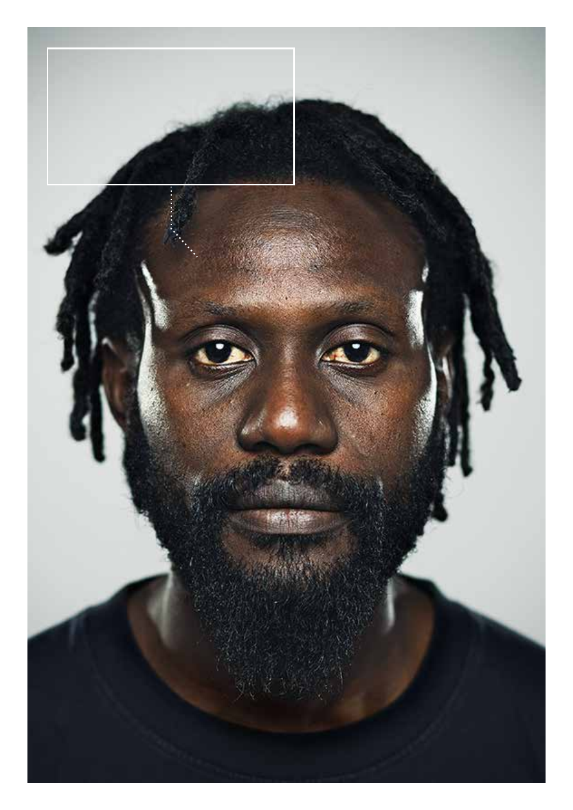
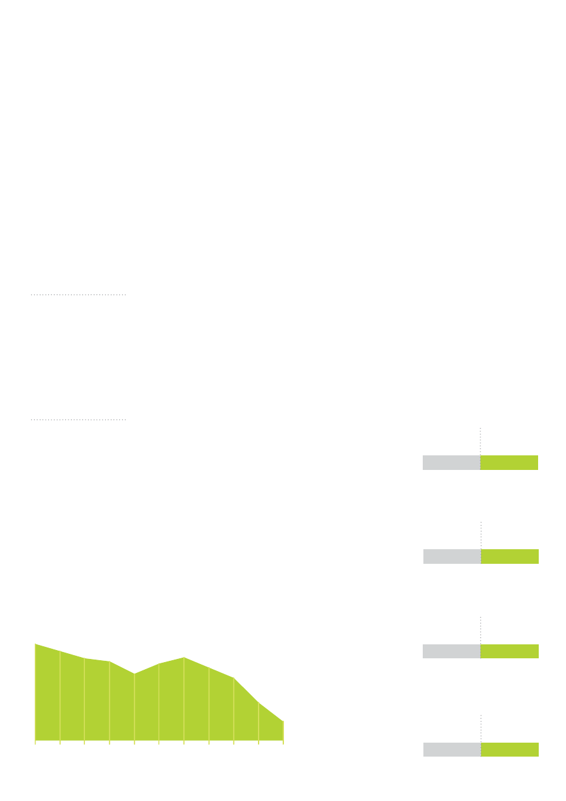

<!DOCTYPE html>
<html xmlns="http://www.w3.org/1999/xhtml" lang="" xml:lang="">
<head>
<title>./about/Documents/annual-review-2013-chinese-html.html</title>

<meta http-equiv="Content-Type" content="text/html; charset=UTF-8"/>
 <br/>
<style type="text/css">
<!--
	p {margin: 0; padding: 0;}-->
</style>
</head>
<body bgcolor="#A0A0A0" vlink="blue" link="blue">
<div id="page1-div" style="position:relative;width:892px;height:1262px;">

</div>
</body>
</html>
<!DOCTYPE html>
<html xmlns="http://www.w3.org/1999/xhtml" lang="" xml:lang="">
<head>
<title>./about/Documents/annual-review-2013-chinese-html.html</title>

<meta http-equiv="Content-Type" content="text/html; charset=UTF-8"/>
 <br/>
<style type="text/css">
<!--
	p {margin: 0; padding: 0;}	.ft20{font-size:10px;font-family:NDWTEI+AkzidenzGroteskBQ-Reg;color:#808284;}
	.ft21{font-size:17px;font-family:INIOXS+DFPHeiW7;color:#ffffff;}
	.ft22{font-size:17px;font-family:NDWTEI+AkzidenzGroteskBQ-Reg;color:#ffffff;}
	.ft23{font-size:11px;font-family:QCIFAC+DFPHeiW9;color:#ffffff;}
	.ft24{font-size:11px;font-family:KBEQUO+AkzidenzGroteskBQ-Medium;color:#ffffff;}
	.ft25{font-size:11px;font-family:IYFESS+AdobeKaitiStd;color:#a36107;}
	.ft26{font-size:11px;font-family:INIOXS+DFPHeiW7;color:#a36107;}
	.ft27{font-size:43px;font-family:INIOXS+DFPHeiW7;color:#ffffff;}
	.ft28{font-size:11px;font-family:NDWTEI+AkzidenzGroteskBQ-Reg;color:#ffffff;}
	.ft29{font-size:11px;font-family:INIOXS+DFPHeiW7;color:#ffffff;}
	.ft210{font-size:11px;font-family:IYFESS+AdobeKaitiStd;color:#ffffff;}
-->
</style>
</head>
<body bgcolor="#A0A0A0" vlink="blue" link="blue">
<div id="page2-div" style="position:relative;width:892px;height:1262px;">

<p style="position:absolute;top:1218px;left:442px;white-space:nowrap" class="ft20">#</p>
<p style="position:absolute;top:225px;left:191px;white-space:nowrap" class="ft21">国际航空运输协会（</p>
<p style="position:absolute;top:224px;left:366px;white-space:nowrap" class="ft22">IATA</p>
<p style="position:absolute;top:225px;left:404px;white-space:nowrap" class="ft21">）成员</p>
<p style="position:absolute;top:224px;left:462px;white-space:nowrap" class="ft22">&#160;..................................................2</p>
<p style="position:absolute;top:261px;left:191px;white-space:nowrap" class="ft21">理事会</p>
<p style="position:absolute;top:260px;left:249px;white-space:nowrap" class="ft22">&#160;.................................................................................................4</p>
<p style="position:absolute;top:296px;left:191px;white-space:nowrap" class="ft21">主席致辞</p>
<p style="position:absolute;top:295px;left:269px;white-space:nowrap" class="ft22">&#160;.............................................................................................6</p>
<p style="position:absolute;top:332px;left:191px;white-space:nowrap" class="ft21">航空业现状</p>
<p style="position:absolute;top:331px;left:288px;white-space:nowrap" class="ft22">&#160;.........................................................................................8&#160;</p>
<p style="position:absolute;top:357px;left:191px;white-space:nowrap" class="ft23">专题：联接全球的价值</p>
<p style="position:absolute;top:387px;left:191px;white-space:nowrap" class="ft21">安全</p>
<p style="position:absolute;top:386px;left:230px;white-space:nowrap" class="ft22">&#160;&#160;..................................................................................................14</p>
<p style="position:absolute;top:412px;left:191px;white-space:nowrap" class="ft23">专题：执行加强版的国际航协运行安全审计制度（</p>
<p style="position:absolute;top:411px;left:488px;white-space:nowrap" class="ft24">IOSA</p>
<p style="position:absolute;top:412px;left:520px;white-space:nowrap" class="ft23">）</p>
<p style="position:absolute;top:442px;left:191px;white-space:nowrap" class="ft21">安保</p>
<p style="position:absolute;top:441px;left:230px;white-space:nowrap" class="ft22">&#160;...................................................................................................20&#160;</p>
<p style="position:absolute;top:467px;left:191px;white-space:nowrap" class="ft23">专题：航空业需要一套基于风险评估的安保措施</p>
<p style="position:absolute;top:497px;left:191px;white-space:nowrap" class="ft21">管制政策</p>
<p style="position:absolute;top:496px;left:274px;white-space:nowrap" class="ft22">&amp;</p>
<p style="position:absolute;top:497px;left:290px;white-space:nowrap" class="ft21">税项</p>
<p style="position:absolute;top:496px;left:329px;white-space:nowrap" class="ft22">.............................................................................24&#160;</p>
<p style="position:absolute;top:522px;left:191px;white-space:nowrap" class="ft23">专题：协调乘客对权益保障的需求</p>
<p style="position:absolute;top:552px;left:191px;white-space:nowrap" class="ft21">基础设施</p>
<p style="position:absolute;top:551px;left:269px;white-space:nowrap" class="ft22">&#160;..........................................................................................30&#160;</p>
<p style="position:absolute;top:577px;left:191px;white-space:nowrap" class="ft23">专题：推动欧洲航空一体化方案的执行</p>
<p style="position:absolute;top:607px;left:191px;white-space:nowrap" class="ft21">环境</p>
<p style="position:absolute;top:606px;left:230px;white-space:nowrap" class="ft22">&#160;...................................................................................................34&#160;</p>
<p style="position:absolute;top:632px;left:191px;white-space:nowrap" class="ft23">专题：实现碳中和增长的目标</p>
<p style="position:absolute;top:662px;left:191px;white-space:nowrap" class="ft21">货运</p>
<p style="position:absolute;top:661px;left:230px;white-space:nowrap" class="ft22">&#160;...................................................................................................38&#160;</p>
<p style="position:absolute;top:687px;left:191px;white-space:nowrap" class="ft23">专题：电子货运实施路线图</p>
<p style="position:absolute;top:717px;left:191px;white-space:nowrap" class="ft21">乘客体验</p>
<p style="position:absolute;top:716px;left:269px;white-space:nowrap" class="ft22">&#160;..........................................................................................43&#160;</p>
<p style="position:absolute;top:742px;left:191px;white-space:nowrap" class="ft23">专题：</p>
<p style="position:absolute;top:741px;left:231px;white-space:nowrap" class="ft24">NDC</p>
<p style="position:absolute;top:742px;left:263px;white-space:nowrap" class="ft23">对乘客而言意味着什么？</p>
<p style="position:absolute;top:772px;left:191px;white-space:nowrap" class="ft21">行业结算系统</p>
<p style="position:absolute;top:771px;left:308px;white-space:nowrap" class="ft22">&#160;.................................................................................48</p>
<p style="position:absolute;top:807px;left:191px;white-space:nowrap" class="ft21">航空解决方案</p>
<p style="position:absolute;top:806px;left:308px;white-space:nowrap" class="ft22">&#160;.................................................................................52&#160;</p>
<p style="position:absolute;top:832px;left:191px;white-space:nowrap" class="ft23">专题：通过</p>
<p style="position:absolute;top:831px;left:262px;white-space:nowrap" class="ft24">DDS</p>
<p style="position:absolute;top:832px;left:293px;white-space:nowrap" class="ft23">技术提高业务智能化水平</p>
<p style="position:absolute;top:1171px;left:43px;white-space:nowrap" class="ft25">免责声明：</p>
<p style="position:absolute;top:1172px;left:110px;white-space:nowrap" class="ft26">请注意，本宣传册上的图片仅充当举例说明的作用。为了给读者以真实感，图片上的模特均采用来自不同地区、不同文化背</p>
<p style="position:absolute;top:1192px;left:43px;white-space:nowrap" class="ft26">景的普通人。本宣传册上的观点以及和图片相关的看法均非出自模特本人。</p>
<p style="position:absolute;top:157px;left:188px;white-space:nowrap" class="ft27">目录</p>
<p style="position:absolute;top:1020px;left:189px;white-space:nowrap" class="ft28">Tony Tyler</p>
<p style="position:absolute;top:1038px;left:189px;white-space:nowrap" class="ft29">理事长兼</p>
<p style="position:absolute;top:1037px;left:247px;white-space:nowrap" class="ft28">CEO</p>
<p style="position:absolute;top:1054px;left:189px;white-space:nowrap" class="ft29">国际航空运输协会</p>
<p style="position:absolute;top:1070px;left:189px;white-space:nowrap" class="ft28">2013</p>
<p style="position:absolute;top:1071px;left:224px;white-space:nowrap" class="ft29">年年报</p>
<p style="position:absolute;top:1087px;left:189px;white-space:nowrap" class="ft29">第</p>
<p style="position:absolute;top:1086px;left:206px;white-space:nowrap" class="ft28">69</p>
<p style="position:absolute;top:1087px;left:225px;white-space:nowrap" class="ft29">届年会</p>
<p style="position:absolute;top:1104px;left:189px;white-space:nowrap" class="ft29">开普敦，</p>
<p style="position:absolute;top:1103px;left:243px;white-space:nowrap" class="ft28">2013</p>
<p style="position:absolute;top:1104px;left:278px;white-space:nowrap" class="ft29">年</p>
<p style="position:absolute;top:1103px;left:295px;white-space:nowrap" class="ft28">6</p>
<p style="position:absolute;top:1104px;left:306px;white-space:nowrap" class="ft29">月</p>
<p style="position:absolute;top:869px;left:190px;white-space:nowrap" class="ft210">注：</p>
<p style="position:absolute;top:870px;left:217px;white-space:nowrap" class="ft29">如无特别说明，文中所有</p>
<p style="position:absolute;top:870px;left:369px;white-space:nowrap" class="ft28">$</p>
<p style="position:absolute;top:870px;left:381px;white-space:nowrap" class="ft29">符号均指美元。</p>
</div>
</body>
</html>
<!DOCTYPE html>
<html xmlns="http://www.w3.org/1999/xhtml" lang="" xml:lang="">
<head>
<title>./about/Documents/annual-review-2013-chinese-html.html</title>

<meta http-equiv="Content-Type" content="text/html; charset=UTF-8"/>
 <br/>
<style type="text/css">
<!--
	p {margin: 0; padding: 0;}	.ft30{font-size:13px;font-family:IYFESS+AdobeKaitiStd;color:#ffffff;}
	.ft31{font-size:13px;font-family:INIOXS+DFPHeiW7;color:#ffffff;}
	.ft32{font-size:13px;font-family:NDWTEI+AkzidenzGroteskBQ-Reg;color:#ffffff;}
	.ft33{font-size:13px;font-family:RWOGOA+AkzidenzGroteskBQ;color:#ffffff;}
	.ft34{font-size:13px;line-height:21px;font-family:IYFESS+AdobeKaitiStd;color:#ffffff;}
-->
</style>
</head>
<body bgcolor="#A0A0A0" vlink="blue" link="blue">
<div id="page3-div" style="position:relative;width:892px;height:1262px;">

<p style="position:absolute;top:92px;left:476px;white-space:nowrap" class="ft30">“我在斐济有一个旅游公司。世界各地的人们都</p>
<p style="position:absolute;top:113px;left:449px;white-space:nowrap" class="ft34">喜欢来我们这个美丽的小岛旅游。我们专门从事生态<br/>旅游。我们的导游会讲至少三种语言并都就本地的自<br/>然景色进行了专门的培训。</p>
<p style="position:absolute;top:199px;left:476px;white-space:nowrap" class="ft31">旅游业的产值占到了斐济</p>
<p style="position:absolute;top:198px;left:645px;white-space:nowrap" class="ft32">GDP</p>
<p style="position:absolute;top:199px;left:681px;white-space:nowrap" class="ft31">的</p>
<p style="position:absolute;top:198px;left:700px;white-space:nowrap" class="ft32">25%</p>
<p style="position:absolute;top:199px;left:731px;white-space:nowrap" class="ft31">，而航空业</p>
<p style="position:absolute;top:220px;left:449px;white-space:nowrap" class="ft31">还为本岛居民提供了</p>
<p style="position:absolute;top:219px;left:590px;white-space:nowrap" class="ft32">66</p>
<p style="position:absolute;top:220px;left:608px;white-space:nowrap" class="ft31">，</p>
<p style="position:absolute;top:219px;left:623px;white-space:nowrap" class="ft32">000</p>
<p style="position:absolute;top:220px;left:653px;white-space:nowrap" class="ft31">个工作岗位。在全世界</p>
<p style="position:absolute;top:241px;left:449px;white-space:nowrap" class="ft31">范围内，有</p>
<p style="position:absolute;top:240px;left:527px;white-space:nowrap" class="ft32">8</p>
<p style="position:absolute;top:241px;left:536px;white-space:nowrap" class="ft31">，</p>
<p style="position:absolute;top:240px;left:551px;white-space:nowrap" class="ft32">360</p>
<p style="position:absolute;top:241px;left:577px;white-space:nowrap" class="ft31">，</p>
<p style="position:absolute;top:240px;left:592px;white-space:nowrap" class="ft32">000</p>
<p style="position:absolute;top:241px;left:622px;white-space:nowrap" class="ft31">人从事航空业。</p>
<p style="position:absolute;top:1195px;left:51px;white-space:nowrap" class="ft30">来源：</p>
<p style="position:absolute;top:1196px;left:96px;white-space:nowrap" class="ft32">ATAG&#160;</p>
<p style="position:absolute;top:1195px;left:138px;white-space:nowrap" class="ft30">航空业裨益无边界（</p>
<p style="position:absolute;top:1196px;left:273px;white-space:nowrap" class="ft33"><i>Aviation Benefits Beyond Borders</i></p>
<p style="position:absolute;top:1195px;left:491px;white-space:nowrap" class="ft30">）组织</p>
</div>
</body>
</html>
<!DOCTYPE html>
<html xmlns="http://www.w3.org/1999/xhtml" lang="" xml:lang="">
<head>
<title>./about/Documents/annual-review-2013-chinese-html.html</title>

<meta http-equiv="Content-Type" content="text/html; charset=UTF-8"/>
 <br/>
<style type="text/css">
<!--
	p {margin: 0; padding: 0;}	.ft40{font-size:11px;font-family:NDWTEI+AkzidenzGroteskBQ-Reg;color:#ffffff;}
	.ft41{font-size:11px;font-family:NDWTEI+AkzidenzGroteskBQ-Reg;color:#918f8f;}
	.ft42{font-size:10px;font-family:NDWTEI+AkzidenzGroteskBQ-Reg;color:#7b7879;}
	.ft43{font-size:43px;font-family:NDWTEI+AkzidenzGroteskBQ-Reg;color:#ffffff;}
	.ft44{font-size:11px;line-height:16px;font-family:NDWTEI+AkzidenzGroteskBQ-Reg;color:#ffffff;}
-->
</style>
</head>
<body bgcolor="#A0A0A0" vlink="blue" link="blue">
<div id="page4-div" style="position:relative;width:892px;height:1262px;">

<p style="position:absolute;top:231px;left:251px;white-space:nowrap" class="ft44">Air Namibia<br/>Air New Zealand<br/>Air Niugini<br/>Air Nostrum<br/>Air One&#160;<br/>Air Pacific<br/>Air Seychelles<br/>Air Tahiti<br/>Air Tahiti Nui<br/>Air Transat<br/>Air Vanuatu<br/>AirBridgeCargo Airlines<br/>Aircalin<br/>Airlink<br/>Alaska Airlines<br/>Alitalia<br/>All Nippon Airways<br/>AlMasria Universal Airlines<br/>ALS<br/>American Airlines<br/>Arik Air<br/>Arkia Israeli Airlines&#160;<br/>Armavia<br/>Asiana Airlines<br/>Atlas Air<br/>Atlasjet Airlines<br/>Austral<br/>Austrian<br/>AVIANCA<br/>Azerbaijan Airlines<br/>B&amp;H Airlines<br/>Bangkok Air</p>
<p style="position:absolute;top:231px;left:43px;white-space:nowrap" class="ft44">ABSA Cargo Airline<br/>Adria Airways<br/>Aegean Airlines<br/>Aer Lingus<br/>Aero República<br/>Aeroflot<br/>Aerolineas Argentinas<br/>Aeromexico<br/>Aerosvit Airlines<br/>Afriqiyah Airways<br/>Aigle Azur<br/>Air Algérie<br/>Air Arabia<br/>Air Astana<br/>Air Austral<br/>Air Baltic<br/>Air Berlin<br/>Air Botswana<br/>Air Canada<br/>Air China<br/>Air Corsica<br/>Air Europa<br/>Air France<br/>Air India<br/>Air Koryo<br/>Air Macau<br/>Air Madagascar<br/>Air Malawi<br/>Air Malta&#160;<br/>Air Mauritius<br/>Air Moldova</p>
<p style="position:absolute;top:231px;left:459px;white-space:nowrap" class="ft44">Belavia—Belarusian Airlines<br/>Belle Air<br/>Biman<br/>Binter Canarias<br/>Blue Panorama<br/>Blue1<br/>bmi Regional<br/>British Airways<br/>Brussels Airlines<br/>Bulgaria air<br/>C.A.L. Cargo Airlines<br/>Cargojet Airways&#160;<br/>Cargolux&#160;<br/>Caribbean Airlines<br/>Carpatair<br/>Cathay Pacific<br/>China Airlines<br/>China Cargo Airlines&#160;<br/>China Eastern<br/>China Southern Airlines<br/>CityJet<br/>Comair<br/>Condor<br/>Condor Berlin<br/>Copa Airlines<br/>Corsair<br/>Croatia Airlines<br/>Cubana<br/>Cyprus Airways<br/>Czech Airlines<br/>Delta Air Lines<br/>DHL Air<br/>DHL International E.C.<br/>Donavia<br/>Dragonair<br/>Egyptair<br/>EL AL</p>
<p style="position:absolute;top:231px;left:668px;white-space:nowrap" class="ft44">Emirates<br/>Estonian Air<br/>Ethiopian Airlines<br/>Etihad Airways<br/>Euroatlantic Airways<br/>European Air Transport<br/>Eurowings<br/>EVA Air<br/>Federal Express<br/>Finnair<br/>flybe<br/>Freebird Airlines<br/>Garuda<br/>Georgian Airways<br/>Gulf Air<br/>Hahn Air<br/>Hainan Airlines<br/>Hawaiian Airlines<br/>Hong Kong Airlines<br/>Hong Kong Express Airways&#160;<br/>Iberia<br/>Icelandair<br/>InselAir<br/>Interair<br/>InterSky<br/>Iran Air<br/>Iran Aseman Airlines<br/>Israir Airlines<br/>Japan Airlines<br/>Jat Airways<br/>Jazeera Airways&#160;<br/>Jet Airways<br/>Jet Lite&#160;<br/>JetBlue<br/>Jordan Aviation<br/>JSC Nordavia—RA</p>
<p style="position:absolute;top:842px;left:668px;white-space:nowrap" class="ft41">/...</p>
<p style="position:absolute;top:1218px;left:443px;white-space:nowrap" class="ft42">2</p>
<p style="position:absolute;top:35px;left:43px;white-space:nowrap" class="ft43">IATA Membership</p>
<p style="position:absolute;top:84px;left:43px;white-space:nowrap" class="ft43">at 1 May 2013</p>
</div>
</body>
</html>
<!DOCTYPE html>
<html xmlns="http://www.w3.org/1999/xhtml" lang="" xml:lang="">
<head>
<title>./about/Documents/annual-review-2013-chinese-html.html</title>

<meta http-equiv="Content-Type" content="text/html; charset=UTF-8"/>
 <br/>
<style type="text/css">
<!--
	p {margin: 0; padding: 0;}	.ft50{font-size:11px;font-family:NDWTEI+AkzidenzGroteskBQ-Reg;color:#ffffff;}
	.ft51{font-size:10px;font-family:NDWTEI+AkzidenzGroteskBQ-Reg;color:#7b7879;}
	.ft52{font-size:11px;line-height:16px;font-family:NDWTEI+AkzidenzGroteskBQ-Reg;color:#ffffff;}
-->
</style>
</head>
<body bgcolor="#A0A0A0" vlink="blue" link="blue">
<div id="page5-div" style="position:relative;width:892px;height:1262px;">

<p style="position:absolute;top:231px;left:251px;white-space:nowrap" class="ft52">PAL—Philippine Airlines<br/>Pegasus Airlines<br/>PGA—Portugália Airlines<br/>PIA—Pakistan International&#160;<br/>&#160;</p>
<p style="position:absolute;top:297px;left:305px;white-space:nowrap" class="ft50">Airlines</p>
<p style="position:absolute;top:314px;left:251px;white-space:nowrap" class="ft52">Precision Air<br/>PrivatAir<br/>Qantas<br/>Qatar Airways<br/>Rossiya Airlines<br/>Royal Air Maroc<br/>Royal Brunei<br/>Royal Jordanian<br/>SAA—South African Airways<br/>Safair<br/>Safi Airways<br/>SAS<br/>SATA &#160;Air Açores<br/>SATA Internaçional<br/>Saudi Arabian Airlines<br/>Shandong Airlines&#160;<br/>Shanghai Airlines<br/>Shenzhen Airlines&#160;<br/>SIA—Singapore Airlines<br/>SIA Cargo<br/>Siberia Airlines<br/>Sichuan Airlines&#160;<br/>Silkair<br/>SKY Airlines<br/>South African Express Airways<br/>SriLankan Airlines<br/>Sudan Airways<br/>SunExpress</p>
<p style="position:absolute;top:231px;left:43px;white-space:nowrap" class="ft52">Juneyao Airlines<br/>Kenya Airways<br/>Kish Air<br/>KLM<br/>Korean Air<br/>Kuwait Airways<br/>LACSA<br/>LAM—Linhas Aéreas de&#160;&#160;<br/>&#160;</p>
<p style="position:absolute;top:363px;left:97px;white-space:nowrap" class="ft50">Moçambique</p>
<p style="position:absolute;top:380px;left:43px;white-space:nowrap" class="ft52">LAN Airlines<br/>LAN Argentina<br/>LAN Cargo<br/>LAN Perú<br/>LAN Ecuador<br/>Libyan Airlines<br/>LOT Polish Airlines<br/>Lufthansa<br/>Lufthansa Cargo<br/>Lufthansa CityLine<br/>Luxair<br/>Mahan Air<br/>Malaysia Airlines<br/>Malmö Aviation<br/>Martinair Cargo<br/>MAS AIR<br/>MEA—Middle East Airlines<br/>Meridiana fly<br/>MIAT—Mongolian Airlines<br/>Montenegro Airlines<br/>NIKI<br/>Nippon Cargo Airlines&#160;<br/>Nouvelair<br/>Olympic Air<br/>Oman Air<br/>Onur Air</p>
<p style="position:absolute;top:231px;left:459px;white-space:nowrap" class="ft52">Surinam Airways<br/>SWISS<br/>Syrianair<br/>TAAG—Angola Airlines<br/>TACA<br/>TACA Peru<br/>TACV Cabo Verde Airlines<br/>TAM—Transportes Aéreos&#160;&#160;<br/>&#160;</p>
<p style="position:absolute;top:363px;left:513px;white-space:nowrap" class="ft50">del Mercosur</p>
<p style="position:absolute;top:380px;left:459px;white-space:nowrap" class="ft52">TAM Linhas Aéreas<br/>TAME—Linea Aérea del&#160;&#160;<br/>&#160;</p>
<p style="position:absolute;top:413px;left:513px;white-space:nowrap" class="ft50">Ecuador</p>
<p style="position:absolute;top:429px;left:459px;white-space:nowrap" class="ft52">TAP Portugal<br/>TAROM<br/>Thai Airways International<br/>THY—Turkish Airlines<br/>Tianjin Airlines<br/>TNT Airways&#160;<br/>Transaero<br/>TransAsia Airways<br/>TUIfly<br/>Tunis Air<br/>Ukraine International Airlines<br/>United Airlines<br/>UPS Airlines<br/>US Airways<br/>UTair<br/>Vietnam Airlines<br/>Virgin Atlantic<br/>Virgin Australia Airlines&#160;</p>
<p style="position:absolute;top:231px;left:668px;white-space:nowrap" class="ft52">Virgin Australia International&#160;&#160;<br/>&#160;</p>
<p style="position:absolute;top:248px;left:722px;white-space:nowrap" class="ft50">Airlines</p>
<p style="position:absolute;top:264px;left:668px;white-space:nowrap" class="ft52">Vladivostok Air<br/>Volaris<br/>Volga-Dnepr Airlines<br/>VRG Linhas Aéreas&#160;<br/>White Airways<br/>Wideroe<br/>Xiamen Airlines<br/>Yemenia</p>
<p style="position:absolute;top:413px;left:668px;white-space:nowrap" class="ft50">&#160;</p>
<p style="position:absolute;top:1218px;left:443px;white-space:nowrap" class="ft51">3</p>
</div>
</body>
</html>
<!DOCTYPE html>
<html xmlns="http://www.w3.org/1999/xhtml" lang="" xml:lang="">
<head>
<title>./about/Documents/annual-review-2013-chinese-html.html</title>

<meta http-equiv="Content-Type" content="text/html; charset=UTF-8"/>
 <br/>
<style type="text/css">
<!--
	p {margin: 0; padding: 0;}	.ft60{font-size:11px;font-family:INIOXS+DFPHeiW7;color:#000000;}
	.ft61{font-size:11px;font-family:NDWTEI+AkzidenzGroteskBQ-Reg;color:#000000;}
	.ft62{font-size:10px;font-family:NDWTEI+AkzidenzGroteskBQ-Reg;color:#808284;}
	.ft63{font-size:11px;font-family:QCIFAC+DFPHeiW9;color:#6d6e71;}
	.ft64{font-size:11px;font-family:KBEQUO+AkzidenzGroteskBQ-Medium;color:#6d6e71;}
	.ft65{font-size:43px;font-family:INIOXS+DFPHeiW7;color:#000000;}
	.ft66{font-size:11px;font-family:NDWTEI+AkzidenzGroteskBQ-Reg;color:#939598;}
	.ft67{font-size:11px;line-height:19px;font-family:INIOXS+DFPHeiW7;color:#000000;}
-->
</style>
</head>
<body bgcolor="#A0A0A0" vlink="blue" link="blue">
<div id="page6-div" style="position:relative;width:892px;height:1262px;">

<p style="position:absolute;top:231px;left:70px;white-space:nowrap" class="ft60">航空业可以回顾这一年的</p>
<p style="position:absolute;top:251px;left:43px;white-space:nowrap" class="ft60">成就。</p>
<p style="position:absolute;top:289px;left:70px;white-space:nowrap" class="ft61">2012</p>
<p style="position:absolute;top:290px;left:105px;white-space:nowrap" class="ft60">年&#160;航&#160;空&#160;业&#160;安&#160;全&#160;运&#160;送</p>
<p style="position:absolute;top:309px;left:43px;white-space:nowrap" class="ft60">了</p>
<p style="position:absolute;top:309px;left:60px;white-space:nowrap" class="ft61">30&#160;</p>
<p style="position:absolute;top:309px;left:82px;white-space:nowrap" class="ft60">亿&#160;人&#160;次&#160;和</p>
<p style="position:absolute;top:309px;left:146px;white-space:nowrap" class="ft61">4700</p>
<p style="position:absolute;top:309px;left:181px;white-space:nowrap" class="ft60">万&#160;公&#160;吨</p>
<p style="position:absolute;top:329px;left:43px;white-space:nowrap" class="ft60">货物。提供了大约</p>
<p style="position:absolute;top:328px;left:162px;white-space:nowrap" class="ft61">5700</p>
<p style="position:absolute;top:329px;left:197px;white-space:nowrap" class="ft60">万个</p>
<p style="position:absolute;top:348px;left:43px;white-space:nowrap" class="ft60">工作岗位，创造了</p>
<p style="position:absolute;top:348px;left:155px;white-space:nowrap" class="ft61">22000</p>
<p style="position:absolute;top:348px;left:198px;white-space:nowrap" class="ft60">亿美</p>
<p style="position:absolute;top:368px;left:43px;white-space:nowrap" class="ft60">元的经济价值，约占全球</p>
<p style="position:absolute;top:367px;left:196px;white-space:nowrap" class="ft61">GDP</p>
<p style="position:absolute;top:387px;left:43px;white-space:nowrap" class="ft60">的</p>
<p style="position:absolute;top:387px;left:59px;white-space:nowrap" class="ft61">3.5%</p>
<p style="position:absolute;top:387px;left:90px;white-space:nowrap" class="ft60">。</p>
<p style="position:absolute;top:426px;left:70px;white-space:nowrap" class="ft60">航空运输将企业与全球市</p>
<p style="position:absolute;top:446px;left:43px;white-space:nowrap" class="ft67">场联系在一起，使得世界各地<br/>都可以及时获得药品、新鲜农<br/>产品、紧急援助等等注重时效<br/>的产品与服务。</p>
<p style="position:absolute;top:543px;left:70px;white-space:nowrap" class="ft60">全球一半以上的游客是乘</p>
<p style="position:absolute;top:563px;left:43px;white-space:nowrap" class="ft67">飞机旅行的。而且航空业也为<br/>奥林匹克运动会等标志性的重<br/>大活动提供支持。</p>
<p style="position:absolute;top:641px;left:70px;white-space:nowrap" class="ft60">航空业在方便亲朋团聚、</p>
<p style="position:absolute;top:660px;left:43px;white-space:nowrap" class="ft67">架起文化桥梁、传播思想观念<br/>等方面同样发挥着重要作用，<br/>尽管这点难以直观衡量。航空<br/>业在自身蓬勃发展的同时，也<br/>丰富了人们的生活。</p>
<p style="position:absolute;top:251px;left:279px;white-space:nowrap" class="ft60">我们应该为这些成就感到</p>
<p style="position:absolute;top:270px;left:251px;white-space:nowrap" class="ft67">自豪，而且更应该大张旗鼓地<br/>加以宣传。</p>
<p style="position:absolute;top:329px;left:279px;white-space:nowrap" class="ft60">同时，我们也必须清楚我</p>
<p style="position:absolute;top:348px;left:251px;white-space:nowrap" class="ft60">们所面临的挑战。</p>
<p style="position:absolute;top:387px;left:279px;white-space:nowrap" class="ft60">继续将安全、安保和环境</p>
<p style="position:absolute;top:407px;left:251px;white-space:nowrap" class="ft67">可持续发展的最高标准作为本<br/>行业发展的基础，这一点至关<br/>重要。国际航协的</p>
<p style="position:absolute;top:445px;left:360px;white-space:nowrap" class="ft61">240</p>
<p style="position:absolute;top:446px;left:386px;white-space:nowrap" class="ft60">位成员，</p>
<p style="position:absolute;top:465px;left:251px;white-space:nowrap" class="ft67">与各国政府及其它伙伴一同合<br/>作，通过在各个领域实施的各<br/>种专项计划，不断地谋求发展。</p>
<p style="position:absolute;top:543px;left:279px;white-space:nowrap" class="ft60">我们还必须继续配合政府，</p>
<p style="position:absolute;top:563px;left:251px;white-space:nowrap" class="ft67">确保制定的政策和规章制度能<br/>够促进而非限制航空业对经济<br/>发展的推动力。</p>
<p style="position:absolute;top:1217px;left:443px;white-space:nowrap" class="ft62">4</p>
<p style="position:absolute;top:40px;left:43px;white-space:nowrap" class="ft63">理事会</p>
<p style="position:absolute;top:39px;left:83px;white-space:nowrap" class="ft64">&#160;</p>
<p style="position:absolute;top:66px;left:43px;white-space:nowrap" class="ft65">主席致辞</p>
<p style="position:absolute;top:1111px;left:43px;white-space:nowrap" class="ft61">Alan Joyce</p>
<p style="position:absolute;top:1131px;left:43px;white-space:nowrap" class="ft60">主席</p>
<p style="position:absolute;top:1150px;left:43px;white-space:nowrap" class="ft61">IATA</p>
<p style="position:absolute;top:1151px;left:72px;white-space:nowrap" class="ft60">理事会</p>
<p style="position:absolute;top:1170px;left:43px;white-space:nowrap" class="ft61">2012-2013</p>
<p style="position:absolute;top:640px;left:251px;white-space:nowrap" class="ft66">/...</p>
</div>
</body>
</html>
<!DOCTYPE html>
<html xmlns="http://www.w3.org/1999/xhtml" lang="" xml:lang="">
<head>
<title>./about/Documents/annual-review-2013-chinese-html.html</title>

<meta http-equiv="Content-Type" content="text/html; charset=UTF-8"/>
 <br/>
<style type="text/css">
<!--
	p {margin: 0; padding: 0;}	.ft70{font-size:11px;font-family:INIOXS+DFPHeiW7;color:#000000;}
	.ft71{font-size:11px;font-family:NDWTEI+AkzidenzGroteskBQ-Reg;color:#000000;}
	.ft72{font-size:10px;font-family:NDWTEI+AkzidenzGroteskBQ-Reg;color:#808284;}
	.ft73{font-size:11px;font-family:NDWTEI+AkzidenzGroteskBQ-Reg;color:#ffffff;}
	.ft74{font-size:11px;font-family:INIOXS+DFPHeiW7;color:#ffffff;}
	.ft75{font-size:11px;font-family:KBEQUO+AkzidenzGroteskBQ-Medium;color:#939598;}
	.ft76{font-size:11px;font-family:QCIFAC+DFPHeiW9;color:#939598;}
	.ft77{font-size:11px;line-height:19px;font-family:INIOXS+DFPHeiW7;color:#000000;}
	.ft78{font-size:11px;line-height:19px;font-family:NDWTEI+AkzidenzGroteskBQ-Reg;color:#ffffff;}
	.ft79{font-size:11px;line-height:19px;font-family:INIOXS+DFPHeiW7;color:#ffffff;}
-->
</style>
</head>
<body bgcolor="#A0A0A0" vlink="blue" link="blue">
<div id="page7-div" style="position:relative;width:892px;height:1262px;">

<p style="position:absolute;top:231px;left:70px;white-space:nowrap" class="ft70">很多航空公司已经开始大</p>
<p style="position:absolute;top:251px;left:43px;white-space:nowrap" class="ft77">刀阔斧地实施改革计划：调整<br/>公司业务，重新聘用员工，为<br/>客户服务注入活力。还有许多<br/>公司带着新增的投资和新建的<br/>合作伙伴继续前进。</p>
<p style="position:absolute;top:368px;left:70px;white-space:nowrap" class="ft70">然&#160;而&#160;航&#160;空&#160;业&#160;依&#160;然&#160;是&#160;高&#160;成</p>
<p style="position:absolute;top:387px;left:43px;white-space:nowrap" class="ft77">本、&#160;低&#160;利&#160;润。&#160;效&#160;率&#160;低&#160;下&#160;的&#160;基<br/>础&#160;设&#160;施，&#160;考&#160;虑&#160;欠&#160;周&#160;的&#160;管&#160;理&#160;规<br/>则（&#160;尽&#160;管&#160;出&#160;发&#160;点&#160;是&#160;好&#160;的）&#160;可<br/>能&#160;会&#160;威&#160;胁&#160;到&#160;整&#160;个&#160;行&#160;业&#160;的&#160;经&#160;济<br/>可&#160;持&#160;续&#160;增&#160;长，&#160;而&#160;这&#160;是&#160;本&#160;行&#160;业<br/>制造经济效益的前提。</p>
<p style="position:absolute;top:231px;left:279px;white-space:nowrap" class="ft70">如果航空业想要继续创造</p>
<p style="position:absolute;top:251px;left:251px;white-space:nowrap" class="ft77">更多的工作岗位，继续推动生<br/>产力的发展，那么与政府至诚<br/>合作，朝着共同的长期目标下<br/>前进，这点至关重要。</p>
<p style="position:absolute;top:348px;left:279px;white-space:nowrap" class="ft70">放眼未来，我相信航空业</p>
<p style="position:absolute;top:368px;left:251px;white-space:nowrap" class="ft77">有能力释放出自己真正的潜力。<br/>航空业比任何时候都更安全、<br/>更高效、更先进；以国际航协<br/>为先锋的行业领导者正在勾勒<br/>一个美好的明天。</p>
<p style="position:absolute;top:231px;left:487px;white-space:nowrap" class="ft70">我很荣幸能在去年担任国</p>
<p style="position:absolute;top:251px;left:459px;white-space:nowrap" class="ft77">际航协的主席。您在这份报告<br/>里可以看到协会的诸多重大成<br/>绩，也可以看到协会对今年和<br/>今后的期许。</p>
<p style="position:absolute;top:348px;left:487px;white-space:nowrap" class="ft70">我希望在我们携手推动朝</p>
<p style="position:absolute;top:368px;left:459px;white-space:nowrap" class="ft77">阳航空业继续蓬勃发展时，这<br/>份报告能对我的继任者和国际<br/>航协的所有成员有所激励。</p>
<p style="position:absolute;top:322px;left:695px;white-space:nowrap" class="ft71">Alan Joyce</p>
<p style="position:absolute;top:342px;left:695px;white-space:nowrap" class="ft70">主席</p>
<p style="position:absolute;top:361px;left:695px;white-space:nowrap" class="ft71">IATA</p>
<p style="position:absolute;top:361px;left:724px;white-space:nowrap" class="ft70">理事会</p>
<p style="position:absolute;top:380px;left:695px;white-space:nowrap" class="ft71">2012-2013</p>
<p style="position:absolute;top:1217px;left:443px;white-space:nowrap" class="ft72">5</p>
<p style="position:absolute;top:690px;left:45px;white-space:nowrap" class="ft73">Akbar Al Baker</p>
<p style="position:absolute;top:710px;left:45px;white-space:nowrap" class="ft74">卡塔尔航空</p>
<p style="position:absolute;top:745px;left:45px;white-space:nowrap" class="ft73">Khalid Abdullah Almolhem</p>
<p style="position:absolute;top:765px;left:45px;white-space:nowrap" class="ft74">沙特阿拉伯航空</p>
<p style="position:absolute;top:801px;left:45px;white-space:nowrap" class="ft73">Richard Anderson</p>
<p style="position:absolute;top:821px;left:45px;white-space:nowrap" class="ft74">达美航空</p>
<p style="position:absolute;top:856px;left:45px;white-space:nowrap" class="ft73">Tawfik Assy</p>
<p style="position:absolute;top:876px;left:45px;white-space:nowrap" class="ft74">埃及航空</p>
<p style="position:absolute;top:912px;left:45px;white-space:nowrap" class="ft73">David Barger</p>
<p style="position:absolute;top:932px;left:45px;white-space:nowrap" class="ft74">捷蓝航空</p>
<p style="position:absolute;top:967px;left:45px;white-space:nowrap" class="ft73">David Bronczek</p>
<p style="position:absolute;top:987px;left:45px;white-space:nowrap" class="ft74">联邦快递</p>
<p style="position:absolute;top:1023px;left:45px;white-space:nowrap" class="ft73">Yang Ho Cho</p>
<p style="position:absolute;top:1043px;left:45px;white-space:nowrap" class="ft74">大韩航空</p>
<p style="position:absolute;top:1078px;left:45px;white-space:nowrap" class="ft73">Andrés Conesa</p>
<p style="position:absolute;top:1098px;left:45px;white-space:nowrap" class="ft74">墨西哥航空</p>
<p style="position:absolute;top:690px;left:251px;white-space:nowrap" class="ft73">Enrique Cueto</p>
<p style="position:absolute;top:710px;left:251px;white-space:nowrap" class="ft74">智利航空</p>
<p style="position:absolute;top:745px;left:251px;white-space:nowrap" class="ft73">Peter Davies</p>
<p style="position:absolute;top:765px;left:251px;white-space:nowrap" class="ft74">马耳他航空</p>
<p style="position:absolute;top:801px;left:251px;white-space:nowrap" class="ft78">German Efromovich<br/>AVIANCA</p>
<p style="position:absolute;top:856px;left:251px;white-space:nowrap" class="ft73">Christoph Franz</p>
<p style="position:absolute;top:876px;left:251px;white-space:nowrap" class="ft74">汉莎航空</p>
<p style="position:absolute;top:912px;left:251px;white-space:nowrap" class="ft73">Tewolde Gebremariam</p>
<p style="position:absolute;top:932px;left:251px;white-space:nowrap" class="ft74">埃塞尔比亚航空</p>
<p style="position:absolute;top:967px;left:251px;white-space:nowrap" class="ft73">Goh Choon Phong</p>
<p style="position:absolute;top:987px;left:251px;white-space:nowrap" class="ft74">新加坡航空</p>
<p style="position:absolute;top:1023px;left:251px;white-space:nowrap" class="ft73">Naresh Goyal</p>
<p style="position:absolute;top:1043px;left:251px;white-space:nowrap" class="ft74">捷特航空（印度）有限公司</p>
<p style="position:absolute;top:1078px;left:251px;white-space:nowrap" class="ft78">Peter Hartman<br/>KLM&#160;</p>
<p style="position:absolute;top:1098px;left:281px;white-space:nowrap" class="ft74">荷兰皇家航空公司</p>
<p style="position:absolute;top:690px;left:459px;white-space:nowrap" class="ft73">James Hogan</p>
<p style="position:absolute;top:710px;left:459px;white-space:nowrap" class="ft74">阿提哈德航空（阿联酋）</p>
<p style="position:absolute;top:745px;left:459px;white-space:nowrap" class="ft73">Harry Hohmeister</p>
<p style="position:absolute;top:765px;left:459px;white-space:nowrap" class="ft74">瑞士航空</p>
<p style="position:absolute;top:801px;left:459px;white-space:nowrap" class="ft73">Alan Joyce</p>
<p style="position:absolute;top:821px;left:459px;white-space:nowrap" class="ft74">澳洲航空</p>
<p style="position:absolute;top:856px;left:459px;white-space:nowrap" class="ft73">Temel Kotil</p>
<p style="position:absolute;top:876px;left:459px;white-space:nowrap" class="ft74">土耳其航空</p>
<p style="position:absolute;top:912px;left:459px;white-space:nowrap" class="ft79">刘绍勇<br/>中国东方航空</p>
<p style="position:absolute;top:967px;left:459px;white-space:nowrap" class="ft73">Titus Naikuni</p>
<p style="position:absolute;top:987px;left:459px;white-space:nowrap" class="ft74">肯尼亚航空</p>
<p style="position:absolute;top:1023px;left:459px;white-space:nowrap" class="ft73">Masaru Onishi</p>
<p style="position:absolute;top:1043px;left:459px;white-space:nowrap" class="ft74">日本航空</p>
<p style="position:absolute;top:1078px;left:459px;white-space:nowrap" class="ft73">Calin Rovinescu</p>
<p style="position:absolute;top:1098px;left:459px;white-space:nowrap" class="ft74">加拿大航空</p>
<p style="position:absolute;top:690px;left:668px;white-space:nowrap" class="ft73">Emirsyah Satar</p>
<p style="position:absolute;top:710px;left:668px;white-space:nowrap" class="ft74">印尼鹰航航空</p>
<p style="position:absolute;top:745px;left:668px;white-space:nowrap" class="ft73">Vitaly G. Saveliev</p>
<p style="position:absolute;top:765px;left:668px;white-space:nowrap" class="ft74">俄罗斯国际航空</p>
<p style="position:absolute;top:801px;left:668px;white-space:nowrap" class="ft79">司献民<br/>中国南方航空</p>
<p style="position:absolute;top:856px;left:668px;white-space:nowrap" class="ft73">John Slosar</p>
<p style="position:absolute;top:876px;left:668px;white-space:nowrap" class="ft74">国泰航空</p>
<p style="position:absolute;top:912px;left:668px;white-space:nowrap" class="ft73">Jean-Cyril Spinetta</p>
<p style="position:absolute;top:932px;left:668px;white-space:nowrap" class="ft74">法国航空</p>
<p style="position:absolute;top:931px;left:725px;white-space:nowrap" class="ft73">/</p>
<p style="position:absolute;top:932px;left:733px;white-space:nowrap" class="ft74">荷兰皇家航空</p>
<p style="position:absolute;top:951px;left:668px;white-space:nowrap" class="ft74">（代表法国航空）</p>
<p style="position:absolute;top:987px;left:668px;white-space:nowrap" class="ft73">Antonio Vázquez</p>
<p style="position:absolute;top:1007px;left:668px;white-space:nowrap" class="ft79">西班牙国家航空<br/>（伊比利亚航空）</p>
<p style="position:absolute;top:1062px;left:668px;white-space:nowrap" class="ft73">Willie Walsh</p>
<p style="position:absolute;top:1082px;left:668px;white-space:nowrap" class="ft79">国际航空集团<br/>（代表英国航空）</p>
<p style="position:absolute;top:619px;left:45px;white-space:nowrap" class="ft75">IATA</p>
<p style="position:absolute;top:620px;left:75px;white-space:nowrap" class="ft76">理事会</p>
<p style="position:absolute;top:636px;left:45px;white-space:nowrap" class="ft75">2012 - 2013</p>
</div>
</body>
</html>
<!DOCTYPE html>
<html xmlns="http://www.w3.org/1999/xhtml" lang="" xml:lang="">
<head>
<title>./about/Documents/annual-review-2013-chinese-html.html</title>

<meta http-equiv="Content-Type" content="text/html; charset=UTF-8"/>
 <br/>
<style type="text/css">
<!--
	p {margin: 0; padding: 0;}	.ft80{font-size:11px;font-family:INIOXS+DFPHeiW7;color:#000000;}
	.ft81{font-size:11px;font-family:NDWTEI+AkzidenzGroteskBQ-Reg;color:#000000;}
	.ft82{font-size:10px;font-family:NDWTEI+AkzidenzGroteskBQ-Reg;color:#808284;}
	.ft83{font-size:11px;font-family:QCIFAC+DFPHeiW9;color:#6d6e71;}
	.ft84{font-size:11px;font-family:KBEQUO+AkzidenzGroteskBQ-Medium;color:#6d6e71;}
	.ft85{font-size:43px;font-family:INIOXS+DFPHeiW7;color:#000000;}
	.ft86{font-size:11px;font-family:NDWTEI+AkzidenzGroteskBQ-Reg;color:#939598;}
	.ft87{font-size:11px;line-height:19px;font-family:INIOXS+DFPHeiW7;color:#000000;}
-->
</style>
</head>
<body bgcolor="#A0A0A0" vlink="blue" link="blue">
<div id="page8-div" style="position:relative;width:892px;height:1262px;">

<p style="position:absolute;top:231px;left:279px;white-space:nowrap" class="ft80">虽然目前油价不太可能松</p>
<p style="position:absolute;top:251px;left:251px;white-space:nowrap" class="ft87">动，但是主要在新兴经济体的<br/>强力</p>
<p style="position:absolute;top:270px;left:278px;white-space:nowrap" class="ft81">&#160;</p>
<p style="position:absolute;top:270px;left:305px;white-space:nowrap" class="ft80">推动下，全球经济出</p>
<p style="position:absolute;top:290px;left:251px;white-space:nowrap" class="ft80">现了强劲的增长势头。</p>
<p style="position:absolute;top:329px;left:279px;white-space:nowrap" class="ft80">航空业对经济增长的推动</p>
<p style="position:absolute;top:348px;left:251px;white-space:nowrap" class="ft87">作用从未像现在这样突出。发<br/>达国家急需经济的增长。经济<br/>增长是它们摆脱财政危机的唯<br/>一途径。而航空业是它们与那<br/>些日益膨胀的经济体加快贸易<br/>合作的重要纽带。</p>
<p style="position:absolute;top:485px;left:279px;white-space:nowrap" class="ft80">航空业需要各方的协力配</p>
<p style="position:absolute;top:504px;left:251px;white-space:nowrap" class="ft87">合。航空业创造财富和推动经<br/>济的能力取决于价值链上的团<br/>结协作，以及行业与政府的密<br/>切配合。很多情况下，合作能<br/>实现发展。而有些情况下，航<br/>空业却面临着各种阻力。</p>
<p style="position:absolute;top:231px;left:70px;white-space:nowrap" class="ft80">形势不好时，航空公司的</p>
<p style="position:absolute;top:251px;left:43px;white-space:nowrap" class="ft80">利润很低。</p>
<p style="position:absolute;top:250px;left:110px;white-space:nowrap" class="ft81">2012</p>
<p style="position:absolute;top:251px;left:145px;white-space:nowrap" class="ft80">年，航空业总</p>
<p style="position:absolute;top:270px;left:43px;white-space:nowrap" class="ft80">利润为</p>
<p style="position:absolute;top:270px;left:88px;white-space:nowrap" class="ft81">76</p>
<p style="position:absolute;top:270px;left:107px;white-space:nowrap" class="ft80">亿美元。对于</p>
<p style="position:absolute;top:270px;left:194px;white-space:nowrap" class="ft81">6380</p>
<p style="position:absolute;top:290px;left:43px;white-space:nowrap" class="ft87">亿美元的总收入，这意味着净<br/>利润率仅为</p>
<p style="position:absolute;top:309px;left:113px;white-space:nowrap" class="ft81">1.2%</p>
<p style="position:absolute;top:309px;left:144px;white-space:nowrap" class="ft80">。</p>
<p style="position:absolute;top:348px;left:70px;white-space:nowrap" class="ft80">在</p>
<p style="position:absolute;top:348px;left:87px;white-space:nowrap" class="ft81">GDP</p>
<p style="position:absolute;top:348px;left:120px;white-space:nowrap" class="ft80">增速为</p>
<p style="position:absolute;top:348px;left:166px;white-space:nowrap" class="ft81">2.1%</p>
<p style="position:absolute;top:348px;left:197px;white-space:nowrap" class="ft80">，油</p>
<p style="position:absolute;top:368px;left:43px;white-space:nowrap" class="ft80">价平均每桶高达</p>
<p style="position:absolute;top:367px;left:139px;white-space:nowrap" class="ft81">111.8</p>
<p style="position:absolute;top:368px;left:176px;white-space:nowrap" class="ft80">美元（布</p>
<p style="position:absolute;top:387px;left:43px;white-space:nowrap" class="ft87">伦特）的情况下，航空公司能<br/>盈利就已经是个了不起的成就。<br/>为&#160;了&#160;正&#160;确&#160;理&#160;解&#160;这&#160;一&#160;点，&#160;就&#160;拿</p>
<p style="position:absolute;top:445px;left:43px;white-space:nowrap" class="ft81">2003</p>
<p style="position:absolute;top:446px;left:77px;white-space:nowrap" class="ft80">年来说，当时油价每桶低</p>
<p style="position:absolute;top:465px;left:43px;white-space:nowrap" class="ft80">于</p>
<p style="position:absolute;top:465px;left:59px;white-space:nowrap" class="ft81">30</p>
<p style="position:absolute;top:465px;left:78px;white-space:nowrap" class="ft80">美元，经济增速为</p>
<p style="position:absolute;top:465px;left:188px;white-space:nowrap" class="ft81">2.8%</p>
<p style="position:absolute;top:465px;left:219px;white-space:nowrap" class="ft80">，</p>
<p style="position:absolute;top:485px;left:43px;white-space:nowrap" class="ft80">而航空业处于负债状态。</p>
<p style="position:absolute;top:524px;left:70px;white-space:nowrap" class="ft80">后来通过提高效率和改进</p>
<p style="position:absolute;top:543px;left:43px;white-space:nowrap" class="ft87">行业结构，航空业实现了盈利。<br/>比如，在最近十年里航班的平<br/>均客座率大约增加了八个百分<br/>点。今年很可能会有一定程度<br/>的提高。</p>
<p style="position:absolute;top:231px;left:487px;white-space:nowrap" class="ft80">去年航空业在安全方面的</p>
<p style="position:absolute;top:251px;left:459px;white-space:nowrap" class="ft87">表现相当不错，西方国家制造<br/>的&#160;飞&#160;机&#160;平&#160;均&#160;每</p>
<p style="position:absolute;top:269px;left:554px;white-space:nowrap" class="ft81">500</p>
<p style="position:absolute;top:270px;left:582px;white-space:nowrap" class="ft80">万&#160;次&#160;航&#160;班</p>
<p style="position:absolute;top:290px;left:459px;white-space:nowrap" class="ft87">只发生了一起重大事故。各方<br/>共同努力，遵循全球标准，积<br/>极配合，实现了行业史上最安<br/>全的年份。国际航协安全审计<br/>（</p>
<p style="position:absolute;top:367px;left:473px;white-space:nowrap" class="ft81">IOSA</p>
<p style="position:absolute;top:368px;left:505px;white-space:nowrap" class="ft80">）为这一进步作出了重</p>
<p style="position:absolute;top:387px;left:459px;white-space:nowrap" class="ft80">大贡献。</p>
<p style="position:absolute;top:386px;left:513px;white-space:nowrap" class="ft81">2012</p>
<p style="position:absolute;top:387px;left:548px;white-space:nowrap" class="ft80">年，经国际航协</p>
<p style="position:absolute;top:407px;left:459px;white-space:nowrap" class="ft80">安全审计登记在册的</p>
<p style="position:absolute;top:406px;left:588px;white-space:nowrap" class="ft81">380</p>
<p style="position:absolute;top:407px;left:615px;white-space:nowrap" class="ft80">多家</p>
<p style="position:absolute;top:231px;left:668px;white-space:nowrap" class="ft87">航空公司的西方制造飞机未发<br/>生一起机身全毁的事故，总事<br/>故率比未登记在册的航空公司<br/>少</p>
<p style="position:absolute;top:289px;left:685px;white-space:nowrap" class="ft81">4.3</p>
<p style="position:absolute;top:289px;left:707px;white-space:nowrap" class="ft80">次。</p>
<p style="position:absolute;top:328px;left:695px;white-space:nowrap" class="ft80">行业与政府间开展的类似</p>
<p style="position:absolute;top:348px;left:668px;white-space:nowrap" class="ft87">合作措施，也增强了航空业的<br/>安全性。行业和政府在推行以<br/>风险为基础、以数据为导向的<br/>方法上已达成一致。</p>
<p style="position:absolute;top:1217px;left:443px;white-space:nowrap" class="ft82">6</p>
<p style="position:absolute;top:40px;left:43px;white-space:nowrap" class="ft83">理事长致辞</p>
<p style="position:absolute;top:39px;left:110px;white-space:nowrap" class="ft84">&#160;</p>
<p style="position:absolute;top:66px;left:43px;white-space:nowrap" class="ft85">合作推动发展</p>
<p style="position:absolute;top:446px;left:668px;white-space:nowrap" class="ft86">/...</p>
</div>
</body>
</html>
<!DOCTYPE html>
<html xmlns="http://www.w3.org/1999/xhtml" lang="" xml:lang="">
<head>
<title>./about/Documents/annual-review-2013-chinese-html.html</title>

<meta http-equiv="Content-Type" content="text/html; charset=UTF-8"/>
 <br/>
<style type="text/css">
<!--
	p {margin: 0; padding: 0;}	.ft90{font-size:11px;font-family:INIOXS+DFPHeiW7;color:#000000;}
	.ft91{font-size:11px;font-family:NDWTEI+AkzidenzGroteskBQ-Reg;color:#000000;}
	.ft92{font-size:11px;font-family:IYFESS+AdobeKaitiStd;color:#000000;}
	.ft93{font-size:10px;font-family:NDWTEI+AkzidenzGroteskBQ-Reg;color:#808284;}
	.ft94{font-size:11px;line-height:19px;font-family:INIOXS+DFPHeiW7;color:#000000;}
-->
</style>
</head>
<body bgcolor="#A0A0A0" vlink="blue" link="blue">
<div id="page9-div" style="position:relative;width:892px;height:1262px;">

<p style="position:absolute;top:231px;left:279px;white-space:nowrap" class="ft90">航空公司也正在与旅游价</p>
<p style="position:absolute;top:251px;left:251px;white-space:nowrap" class="ft94">值链的各方合作，以满足通过<br/>旅行社把旅游分销方法现代化<br/>的迫切需要。具体来说，这项<br/>“新分销能力”（</p>
<p style="position:absolute;top:309px;left:362px;white-space:nowrap" class="ft91">NDC</p>
<p style="position:absolute;top:309px;left:392px;white-space:nowrap" class="ft90">）倡议</p>
<p style="position:absolute;top:329px;left:251px;white-space:nowrap" class="ft94">旨在开发一整套用于旅行社和<br/>航空公司之间的沟通的</p>
<p style="position:absolute;top:348px;left:390px;white-space:nowrap" class="ft91">XML</p>
<p style="position:absolute;top:348px;left:420px;white-space:nowrap" class="ft90">消</p>
<p style="position:absolute;top:368px;left:251px;white-space:nowrap" class="ft94">息传递标准。我们的目标是使<br/>旅行社能够像航空公司网站那<br/>样为旅游服务买家提供同样内<br/>容丰富的购物体验。如今这一<br/>新的分销能力之所以还无法实<br/>现，是因为目前使用的全球分<br/>销系统（</p>
<p style="position:absolute;top:484px;left:307px;white-space:nowrap" class="ft91">GDS’s</p>
<p style="position:absolute;top:485px;left:346px;white-space:nowrap" class="ft90">）是建立在互</p>
<p style="position:absolute;top:504px;left:251px;white-space:nowrap" class="ft94">联网技术出现之前，因而存在<br/>很大的局限性。关于建立</p>
<p style="position:absolute;top:523px;left:404px;white-space:nowrap" class="ft91">NDC</p>
<p style="position:absolute;top:543px;left:251px;white-space:nowrap" class="ft94">标准的决议案正在等待美国运<br/>输部的批准，我们对结果充满<br/>信&#160;心，&#160;因&#160;为</p>
<p style="position:absolute;top:582px;left:327px;white-space:nowrap" class="ft91">NDC</p>
<p style="position:absolute;top:582px;left:360px;white-space:nowrap" class="ft90">的&#160;实&#160;施&#160;将&#160;给</p>
<p style="position:absolute;top:602px;left:251px;white-space:nowrap" class="ft90">消费者带来极大的便利。</p>
<p style="position:absolute;top:641px;left:279px;white-space:nowrap" class="ft90">但是，要实现这一目标，</p>
<p style="position:absolute;top:660px;left:251px;white-space:nowrap" class="ft94">我们还需要完成一项更加艰巨<br/>的任务，说服各国政府减轻繁<br/>重的税费和法规给航空业带来<br/>的沉重负担。欧盟委员会同意<br/>放弃在它提出的机场一揽子方<br/>案中修改</p>
<p style="position:absolute;top:757px;left:307px;white-space:nowrap" class="ft92">《全球起降时刻指导</p>
<p style="position:absolute;top:776px;left:251px;white-space:nowrap" class="ft92">原则》</p>
<p style="position:absolute;top:777px;left:293px;white-space:nowrap" class="ft90">的计划，这可以说是一</p>
<p style="position:absolute;top:797px;left:251px;white-space:nowrap" class="ft94">个重大的成就。但是，航空业<br/>对该倡议的宣传工作仍然任重<br/>而道远。该目标能否实现，重<br/>点在于制定一整套全球统一的<br/>法规，以及一个内容包括找到<br/>保证乘客权利合理办法的先后<br/>次序表，还需要各国政府共同<br/>遵守</p>
<p style="position:absolute;top:932px;left:280px;white-space:nowrap" class="ft91">1999&#160;</p>
<p style="position:absolute;top:933px;left:316px;white-space:nowrap" class="ft90">年“蒙特利尔公约”</p>
<p style="position:absolute;top:953px;left:251px;white-space:nowrap" class="ft90">（</p>
<p style="position:absolute;top:952px;left:264px;white-space:nowrap" class="ft91">MC99</p>
<p style="position:absolute;top:953px;left:301px;white-space:nowrap" class="ft90">），&#160;并&#160;坚&#160;持&#160;国&#160;际&#160;民&#160;航</p>
<p style="position:absolute;top:972px;left:251px;white-space:nowrap" class="ft94">组织关于垄断基础设施供应商<br/>的监管和私有化原则。</p>
<p style="position:absolute;top:231px;left:70px;white-space:nowrap" class="ft90">这是为了更好地推行我们</p>
<p style="position:absolute;top:251px;left:43px;white-space:nowrap" class="ft94">的两项重要安全方案：“未来<br/>机场安检站”和“安全货运”。<br/>针对前者，我们约定了标准，<br/>正在测试各项组件，也在为从</p>
<p style="position:absolute;top:328px;left:43px;white-space:nowrap" class="ft91">2014</p>
<p style="position:absolute;top:328px;left:78px;white-space:nowrap" class="ft90">年开始分阶段试行做好</p>
<p style="position:absolute;top:348px;left:43px;white-space:nowrap" class="ft94">规划。至于货物，在马来西亚<br/>成功试行“安全货运”计划之<br/>后，肯尼亚、墨西哥、智利、<br/>埃及、阿联酋和约旦也相继实<br/>施该计划。</p>
<p style="position:absolute;top:464px;left:70px;white-space:nowrap" class="ft91">2012</p>
<p style="position:absolute;top:465px;left:106px;white-space:nowrap" class="ft90">年，&#160;航&#160;空&#160;业&#160;在&#160;兑&#160;现</p>
<p style="position:absolute;top:484px;left:43px;white-space:nowrap" class="ft94">其对环境可持续发展的承诺方<br/>面也取得了进展。该行业仍然<br/>团&#160;结&#160;一&#160;致，&#160;努&#160;力&#160;达&#160;到&#160;以&#160;下&#160;目<br/>标：&#160;到</p>
<p style="position:absolute;top:542px;left:88px;white-space:nowrap" class="ft91">2020</p>
<p style="position:absolute;top:543px;left:123px;white-space:nowrap" class="ft90">年&#160;以&#160;前，&#160;将&#160;燃&#160;油</p>
<p style="position:absolute;top:562px;left:43px;white-space:nowrap" class="ft90">燃烧效率逐年提高</p>
<p style="position:absolute;top:562px;left:163px;white-space:nowrap" class="ft91">1.5</p>
<p style="position:absolute;top:562px;left:184px;white-space:nowrap" class="ft90">％；从</p>
<p style="position:absolute;top:581px;left:43px;white-space:nowrap" class="ft91">2020</p>
<p style="position:absolute;top:582px;left:78px;white-space:nowrap" class="ft90">年开始实现碳中和增长</p>
<p style="position:absolute;top:601px;left:43px;white-space:nowrap" class="ft90">（</p>
<p style="position:absolute;top:601px;left:56px;white-space:nowrap" class="ft91">CNG2020</p>
<p style="position:absolute;top:601px;left:118px;white-space:nowrap" class="ft90">）；到</p>
<p style="position:absolute;top:601px;left:163px;white-space:nowrap" class="ft91">2050</p>
<p style="position:absolute;top:601px;left:198px;white-space:nowrap" class="ft90">年，</p>
<p style="position:absolute;top:621px;left:43px;white-space:nowrap" class="ft90">将净排放量削减到</p>
<p style="position:absolute;top:620px;left:162px;white-space:nowrap" class="ft91">2005</p>
<p style="position:absolute;top:621px;left:197px;white-space:nowrap" class="ft90">年排</p>
<p style="position:absolute;top:640px;left:43px;white-space:nowrap" class="ft90">放量的一半。</p>
<p style="position:absolute;top:679px;left:70px;white-space:nowrap" class="ft90">市&#160;场&#160;化&#160;措&#160;施（</p>
<p style="position:absolute;top:679px;left:172px;white-space:nowrap" class="ft91">MBMS</p>
<p style="position:absolute;top:679px;left:212px;white-space:nowrap" class="ft90">）</p>
<p style="position:absolute;top:699px;left:43px;white-space:nowrap" class="ft90">对</p>
<p style="position:absolute;top:698px;left:60px;white-space:nowrap" class="ft91">CNG2020</p>
<p style="position:absolute;top:699px;left:126px;white-space:nowrap" class="ft90">承诺的兑现将是</p>
<p style="position:absolute;top:718px;left:43px;white-space:nowrap" class="ft94">至关重要的。因为航空业是一<br/>个全球性的行业，所以能否在<br/>全球范围内对这些措施进行协<br/>调显得尤为关键。欧盟原打算<br/>把国际航空业纳入其碳排放交<br/>易方案，而随着该单边计划在</p>
<p style="position:absolute;top:835px;left:43px;white-space:nowrap" class="ft91">2012</p>
<p style="position:absolute;top:835px;left:77px;white-space:nowrap" class="ft90">年年底的“停摆”后，方</p>
<p style="position:absolute;top:855px;left:43px;white-space:nowrap" class="ft94">案决策者和航空业都把焦点聚<br/>集在国际民用航空组织（</p>
<p style="position:absolute;top:874px;left:186px;white-space:nowrap" class="ft91">ICAO</p>
<p style="position:absolute;top:874px;left:219px;white-space:nowrap" class="ft90">）</p>
<p style="position:absolute;top:894px;left:43px;white-space:nowrap" class="ft94">身上以及将于今年晚些时候召<br/>开的三年一届的</p>
<p style="position:absolute;top:913px;left:138px;white-space:nowrap" class="ft91">ICAO</p>
<p style="position:absolute;top:913px;left:172px;white-space:nowrap" class="ft90">大会上。</p>
<p style="position:absolute;top:933px;left:43px;white-space:nowrap" class="ft94">为了帮助达成一份政府主导的<br/>协议，各航空公司都在就如何<br/>分担</p>
<p style="position:absolute;top:971px;left:74px;white-space:nowrap" class="ft91">CNG2020</p>
<p style="position:absolute;top:972px;left:140px;white-space:nowrap" class="ft90">所定的任务指</p>
<p style="position:absolute;top:991px;left:42px;white-space:nowrap" class="ft90">标努力寻找行业解决方案。</p>
<p style="position:absolute;top:231px;left:487px;white-space:nowrap" class="ft90">除了与外部伙伴一道为国</p>
<p style="position:absolute;top:250px;left:459px;white-space:nowrap" class="ft90">际航空运输协会（</p>
<p style="position:absolute;top:250px;left:574px;white-space:nowrap" class="ft91">IATA</p>
<p style="position:absolute;top:250px;left:599px;white-space:nowrap" class="ft90">）的成</p>
<p style="position:absolute;top:270px;left:459px;white-space:nowrap" class="ft94">员改善经营环境，国际航空运<br/>输协会（</p>
<p style="position:absolute;top:289px;left:515px;white-space:nowrap" class="ft91">IATA</p>
<p style="position:absolute;top:289px;left:541px;white-space:nowrap" class="ft90">）还决心把自己</p>
<p style="position:absolute;top:309px;left:459px;white-space:nowrap" class="ft94">打造成航空业的可靠合作伙伴。<br/>这一点可以从国际航空运输协<br/>会&#160;不&#160;断&#160;加&#160;强&#160;航&#160;空&#160;业&#160;所&#160;依&#160;托&#160;的</p>
<p style="position:absolute;top:367px;left:459px;white-space:nowrap" class="ft91">IATA</p>
<p style="position:absolute;top:367px;left:488px;white-space:nowrap" class="ft90">结算系统（</p>
<p style="position:absolute;top:367px;left:555px;white-space:nowrap" class="ft91">ISS</p>
<p style="position:absolute;top:367px;left:576px;white-space:nowrap" class="ft90">）中看出。</p>
<p style="position:absolute;top:387px;left:459px;white-space:nowrap" class="ft90">在</p>
<p style="position:absolute;top:386px;left:476px;white-space:nowrap" class="ft91">2012</p>
<p style="position:absolute;top:387px;left:512px;white-space:nowrap" class="ft90">年，该系统就完成了</p>
<p style="position:absolute;top:406px;left:459px;white-space:nowrap" class="ft90">超过</p>
<p style="position:absolute;top:406px;left:488px;white-space:nowrap" class="ft91">3710</p>
<p style="position:absolute;top:406px;left:521px;white-space:nowrap" class="ft90">亿美元的结算业务。</p>
<p style="position:absolute;top:426px;left:459px;white-space:nowrap" class="ft90">该系统中最大的业务板块</p>
<p style="position:absolute;top:425px;left:608px;white-space:nowrap" class="ft91">&#160;</p>
<p style="position:absolute;top:426px;left:611px;white-space:nowrap" class="ft90">—</p>
<p style="position:absolute;top:425px;left:625px;white-space:nowrap" class="ft91">&#160;</p>
<p style="position:absolute;top:426px;left:629px;white-space:nowrap" class="ft90">开</p>
<p style="position:absolute;top:445px;left:459px;white-space:nowrap" class="ft90">账与结算计划（</p>
<p style="position:absolute;top:445px;left:558px;white-space:nowrap" class="ft91">BSP</p>
<p style="position:absolute;top:445px;left:585px;white-space:nowrap" class="ft90">）就完成</p>
<p style="position:absolute;top:465px;left:459px;white-space:nowrap" class="ft90">了将近</p>
<p style="position:absolute;top:464px;left:506px;white-space:nowrap" class="ft91">$&#160;2520</p>
<p style="position:absolute;top:465px;left:555px;white-space:nowrap" class="ft90">亿美元的结算</p>
<p style="position:absolute;top:484px;left:459px;white-space:nowrap" class="ft90">业务，并达到</p>
<p style="position:absolute;top:484px;left:545px;white-space:nowrap" class="ft91">99.976</p>
<p style="position:absolute;top:484px;left:587px;white-space:nowrap" class="ft90">％的准确</p>
<p style="position:absolute;top:504px;left:459px;white-space:nowrap" class="ft94">率。为了进一步改善该结算系<br/>统的性能，我们将在</p>
<p style="position:absolute;top:523px;left:593px;white-space:nowrap" class="ft91">2013</p>
<p style="position:absolute;top:523px;left:629px;white-space:nowrap" class="ft90">年</p>
<p style="position:absolute;top:543px;left:459px;white-space:nowrap" class="ft94">底以前完成后台职能向区域枢<br/>纽的转移，并实现</p>
<p style="position:absolute;top:562px;left:574px;white-space:nowrap" class="ft91">96</p>
<p style="position:absolute;top:562px;left:590px;white-space:nowrap" class="ft90">％的</p>
<p style="position:absolute;top:562px;left:621px;white-space:nowrap" class="ft91">ISS</p>
<p style="position:absolute;top:582px;left:459px;white-space:nowrap" class="ft94">结算自动化。从长远来看，达<br/>成一份新的数据处理协议能帮<br/>助我们顺利实现到</p>
<p style="position:absolute;top:620px;left:579px;white-space:nowrap" class="ft91">2017</p>
<p style="position:absolute;top:621px;left:614px;white-space:nowrap" class="ft90">年使</p>
<p style="position:absolute;top:640px;left:459px;white-space:nowrap" class="ft90">单&#160;位&#160;费&#160;率&#160;与</p>
<p style="position:absolute;top:640px;left:538px;white-space:nowrap" class="ft91">XXX</p>
<p style="position:absolute;top:640px;left:567px;white-space:nowrap" class="ft90">年&#160;相&#160;比&#160;减&#160;少</p>
<p style="position:absolute;top:659px;left:459px;white-space:nowrap" class="ft91">27</p>
<p style="position:absolute;top:660px;left:475px;white-space:nowrap" class="ft90">％的目标。</p>
<p style="position:absolute;top:699px;left:487px;white-space:nowrap" class="ft90">为&#160;了&#160;满&#160;足&#160;协&#160;会&#160;成&#160;员&#160;的&#160;需</p>
<p style="position:absolute;top:718px;left:459px;white-space:nowrap" class="ft94">求和期望，国际航空运输协会<br/>（</p>
<p style="position:absolute;top:737px;left:473px;white-space:nowrap" class="ft91">IATA</p>
<p style="position:absolute;top:738px;left:499px;white-space:nowrap" class="ft90">）正在进行积极变革。</p>
<p style="position:absolute;top:757px;left:459px;white-space:nowrap" class="ft94">我们将继续努力完成我们久经<br/>考验的历史使命，代表、领导<br/>和服务航空业。与此同时，我<br/>们已经许下了一个更加雄心勃<br/>勃的愿景。</p>
<p style="position:absolute;top:835px;left:529px;white-space:nowrap" class="ft91">IATA</p>
<p style="position:absolute;top:835px;left:558px;white-space:nowrap" class="ft90">将成为价值创</p>
<p style="position:absolute;top:855px;left:459px;white-space:nowrap" class="ft94">造和技术创新的中心，引领一<br/>个安全、可靠和盈利的航空运<br/>输业，使其成为连接世界各地<br/>和丰富人类生活的可持续发展<br/>的纽带。</p>
<p style="position:absolute;top:231px;left:695px;white-space:nowrap" class="ft90">为了实现这一目标，一项</p>
<p style="position:absolute;top:250px;left:668px;white-space:nowrap" class="ft90">重大的组织结构调整将于</p>
<p style="position:absolute;top:250px;left:826px;white-space:nowrap" class="ft91">7</p>
<p style="position:absolute;top:250px;left:837px;white-space:nowrap" class="ft90">月</p>
<p style="position:absolute;top:269px;left:668px;white-space:nowrap" class="ft91">1</p>
<p style="position:absolute;top:270px;left:679px;white-space:nowrap" class="ft90">日开始生效。其目的是使我</p>
<p style="position:absolute;top:289px;left:668px;white-space:nowrap" class="ft94">们更加贴近协会成员的需求。<br/>而&#160;这&#160;一&#160;任&#160;务&#160;将&#160;交&#160;由&#160;一&#160;个&#160;专&#160;注<br/>“&#160;全&#160;球&#160;发&#160;展，&#160;区&#160;域&#160;交&#160;付”</p>
<p style="position:absolute;top:328px;left:830px;white-space:nowrap" class="ft91">&#160;</p>
<p style="position:absolute;top:328px;left:837px;white-space:nowrap" class="ft90">的</p>
<p style="position:absolute;top:348px;left:668px;white-space:nowrap" class="ft94">机构来完成。我们的治理结构<br/>将保持不变，但是，你们将看<br/>到一个更加积极的国际航空运<br/>输协会，一个专注于为我们的</p>
<p style="position:absolute;top:425px;left:668px;white-space:nowrap" class="ft91">240</p>
<p style="position:absolute;top:426px;left:695px;white-space:nowrap" class="ft90">名成员以及整个行业创造</p>
<p style="position:absolute;top:445px;left:668px;white-space:nowrap" class="ft90">价值的协会。</p>
<p style="position:absolute;top:484px;left:695px;white-space:nowrap" class="ft90">我们将迎来世界航空业的</p>
<p style="position:absolute;top:504px;left:668px;white-space:nowrap" class="ft90">两个重大历史时刻。</p>
<p style="position:absolute;top:503px;left:789px;white-space:nowrap" class="ft91">2013</p>
<p style="position:absolute;top:504px;left:823px;white-space:nowrap" class="ft90">年的</p>
<p style="position:absolute;top:523px;left:668px;white-space:nowrap" class="ft90">乘客总数有望首次超过</p>
<p style="position:absolute;top:522px;left:805px;white-space:nowrap" class="ft91">30</p>
<p style="position:absolute;top:523px;left:823px;white-space:nowrap" class="ft90">亿。</p>
<p style="position:absolute;top:542px;left:668px;white-space:nowrap" class="ft91">2014</p>
<p style="position:absolute;top:543px;left:703px;white-space:nowrap" class="ft90">年</p>
<p style="position:absolute;top:542px;left:720px;white-space:nowrap" class="ft91">1</p>
<p style="position:absolute;top:543px;left:732px;white-space:nowrap" class="ft90">月</p>
<p style="position:absolute;top:542px;left:749px;white-space:nowrap" class="ft91">1</p>
<p style="position:absolute;top:543px;left:761px;white-space:nowrap" class="ft90">日&#160;将&#160;迎&#160;来&#160;商&#160;业</p>
<p style="position:absolute;top:562px;left:668px;white-space:nowrap" class="ft90">航空</p>
<p style="position:absolute;top:561px;left:698px;white-space:nowrap" class="ft91">100</p>
<p style="position:absolute;top:562px;left:725px;white-space:nowrap" class="ft90">周年。</p>
<p style="position:absolute;top:601px;left:695px;white-space:nowrap" class="ft90">一个世纪以来，航空业已</p>
<p style="position:absolute;top:621px;left:668px;white-space:nowrap" class="ft94">经成长为全球化经济的命脉和<br/>改善人类生活的真正力量。您<br/>对航空业的支持与关注将会有<br/>助于其进一步的可持续发展，<br/>成为一个安全、可靠、盈利的<br/>产业。</p>
<p style="position:absolute;top:854px;left:695px;white-space:nowrap" class="ft91">Tony Tyler&#160;</p>
<p style="position:absolute;top:874px;left:695px;white-space:nowrap" class="ft90">总裁兼</p>
<p style="position:absolute;top:873px;left:739px;white-space:nowrap" class="ft91">CEO</p>
<p style="position:absolute;top:1217px;left:443px;white-space:nowrap" class="ft93">7</p>
</div>
</body>
</html>
<!DOCTYPE html>
<html xmlns="http://www.w3.org/1999/xhtml" lang="" xml:lang="">
<head>
<title>./about/Documents/annual-review-2013-chinese-html.html</title>

<meta http-equiv="Content-Type" content="text/html; charset=UTF-8"/>
 <br/>
<style type="text/css">
<!--
	p {margin: 0; padding: 0;}	.ft100{font-size:11px;font-family:UIZMDE+DFPHeiW9;color:#6d6e71;}
	.ft101{font-size:11px;font-family:KBEQUO+AkzidenzGroteskBQ-Medium;color:#6d6e71;}
	.ft102{font-size:11px;font-family:UIZMDE+DFPHeiW9;color:#0093d3;}
	.ft103{font-size:11px;font-family:UIZMDE+DFPHeiW9;color:#ef403c;}
	.ft104{font-size:8px;font-family:UIZMDE+DFPHeiW9;color:#f37052;-moz-transform: matrix(         0,         -1,          1,          0, 0, 0);-webkit-transform: matrix(         0,         -1,          1,          0, 0, 0);-o-transform: matrix(         0,         -1,          1,          0, 0, 0);-ms-transform: matrix(         0,         -1,          1,          0, 0, 0);-moz-transform-origin: left 75%;-webkit-transform-origin: left 75%;-o-transform-origin: left 75%;-ms-transform-origin: left 75%;}
	.ft105{font-size:8px;font-family:KBEQUO+AkzidenzGroteskBQ-Medium;color:#f37052;-moz-transform: matrix(         0,         -1,          1,          0, 0, 0);-webkit-transform: matrix(         0,         -1,          1,          0, 0, 0);-o-transform: matrix(         0,         -1,          1,          0, 0, 0);-ms-transform: matrix(         0,         -1,          1,          0, 0, 0);-moz-transform-origin: left 75%;-webkit-transform-origin: left 75%;-o-transform-origin: left 75%;-ms-transform-origin: left 75%;}
	.ft106{font-size:8px;font-family:UIZMDE+DFPHeiW9;color:#4693d0;-moz-transform: matrix(         0,         -1,          1,          0, 0, 0);-webkit-transform: matrix(         0,         -1,          1,          0, 0, 0);-o-transform: matrix(         0,         -1,          1,          0, 0, 0);-ms-transform: matrix(         0,         -1,          1,          0, 0, 0);-moz-transform-origin: left 75%;-webkit-transform-origin: left 75%;-o-transform-origin: left 75%;-ms-transform-origin: left 75%;}
	.ft107{font-size:8px;font-family:KBEQUO+AkzidenzGroteskBQ-Medium;color:#4693d0;-moz-transform: matrix(         0,         -1,          1,          0, 0, 0);-webkit-transform: matrix(         0,         -1,          1,          0, 0, 0);-o-transform: matrix(         0,         -1,          1,          0, 0, 0);-ms-transform: matrix(         0,         -1,          1,          0, 0, 0);-moz-transform-origin: left 75%;-webkit-transform-origin: left 75%;-o-transform-origin: left 75%;-ms-transform-origin: left 75%;}
	.ft108{font-size:11px;font-family:NVNWJS+DFPHeiW7;color:#000000;}
	.ft109{font-size:11px;font-family:NDWTEI+AkzidenzGroteskBQ-Reg;color:#000000;}
	.ft1010{font-size:11px;font-family:UIZMDE+DFPHeiW9;color:#939598;}
	.ft1011{font-size:11px;font-family:KBEQUO+AkzidenzGroteskBQ-Medium;color:#939598;}
	.ft1012{font-size:10px;font-family:NDWTEI+AkzidenzGroteskBQ-Reg;color:#808284;}
	.ft1013{font-size:43px;font-family:NDWTEI+AkzidenzGroteskBQ-Reg;color:#000000;}
	.ft1014{font-size:43px;font-family:NVNWJS+DFPHeiW7;color:#000000;}
	.ft1015{font-size:11px;line-height:19px;font-family:NVNWJS+DFPHeiW7;color:#000000;}
	.ft1016{font-size:11px;line-height:19px;font-family:UIZMDE+DFPHeiW9;color:#939598;}
-->
</style>
</head>
<body bgcolor="#A0A0A0" vlink="blue" link="blue">
<div id="page10-div" style="position:relative;width:892px;height:1262px;">

<p style="position:absolute;top:1161px;left:145px;white-space:nowrap" class="ft100">航空客运和货运交通总体统计情况，</p>
<p style="position:absolute;top:1160px;left:361px;white-space:nowrap" class="ft101">&#160;</p>
<p style="position:absolute;top:1179px;left:145px;white-space:nowrap" class="ft100">每季度调整一次（数据来源：</p>
<p style="position:absolute;top:1178px;left:321px;white-space:nowrap" class="ft101">IATA</p>
<p style="position:absolute;top:1179px;left:348px;white-space:nowrap" class="ft100">）</p>
<p style="position:absolute;top:960px;left:312px;white-space:nowrap" class="ft102">货运</p>
<p style="position:absolute;top:1063px;left:134px;white-space:nowrap" class="ft103">客运</p>
<p style="position:absolute;top:1094px;left:67px;white-space:nowrap" class="ft104">普票乘客公里（单位：</p>
<p style="position:absolute;top:988px;left:67px;white-space:nowrap" class="ft105">10</p>
<p style="position:absolute;top:974px;left:67px;white-space:nowrap" class="ft104">亿）</p>
<p style="position:absolute;top:1088px;left:445px;white-space:nowrap" class="ft106">运费吨公里（单位：</p>
<p style="position:absolute;top:993px;left:445px;white-space:nowrap" class="ft107">10</p>
<p style="position:absolute;top:980px;left:445px;white-space:nowrap" class="ft106">亿）</p>
<p style="position:absolute;top:231px;left:279px;white-space:nowrap" class="ft108">与航空客运业的兴旺景象</p>
<p style="position:absolute;top:251px;left:251px;white-space:nowrap" class="ft1015">截然不同的是，航空货运业务<br/>遭遇了历史上的第二个艰难年<br/>份，市场萎缩、飞机利用率下降、<br/>产量降低。</p>
<p style="position:absolute;top:348px;left:279px;white-space:nowrap" class="ft108">然而，客运业务的良好表</p>
<p style="position:absolute;top:368px;left:251px;white-space:nowrap" class="ft1015">现使航空公司达到了高于预期<br/>的盈利水平。这在发达经济体<br/>仍然疲软、航油价格达到年度<br/>新&#160;高&#160;的&#160;背&#160;景&#160;下&#160;显&#160;得&#160;尤&#160;为&#160;令&#160;人</p>
<p style="position:absolute;top:426px;left:434px;white-space:nowrap" class="ft109">&#160;</p>
<p style="position:absolute;top:446px;left:251px;white-space:nowrap" class="ft108">兴奋。</p>
<p style="position:absolute;top:485px;left:279px;white-space:nowrap" class="ft108">作为占据全球航空客流量</p>
<p style="position:absolute;top:504px;left:251px;white-space:nowrap" class="ft109">83</p>
<p style="position:absolute;top:504px;left:267px;white-space:nowrap" class="ft108">％的三大市场之一的亚太区</p>
<p style="position:absolute;top:524px;left:251px;white-space:nowrap" class="ft1015">航空公司继续创造了行业最高<br/>的利润，尽管因为货运业务的<br/>拖累，其利润额低于</p>
<p style="position:absolute;top:562px;left:372px;white-space:nowrap" class="ft109">2011</p>
<p style="position:absolute;top:563px;left:407px;white-space:nowrap" class="ft108">年。</p>
<p style="position:absolute;top:582px;left:251px;white-space:nowrap" class="ft1015">北美区航空公司创造了行业第<br/>二大利润额，并通过航空公司<br/>合并提升效率从而改善了他们<br/>的全年业绩。欧洲区的航空公<br/>司只是勉强实现了收支平衡，<br/>这主要由持续衰退的欧元区经<br/>济导致的。</p>
<p style="position:absolute;top:231px;left:70px;white-space:nowrap" class="ft1010">在</p>
<p style="position:absolute;top:230px;left:87px;white-space:nowrap" class="ft1011">2012</p>
<p style="position:absolute;top:231px;left:122px;white-space:nowrap" class="ft1010">年，&#160;新&#160;兴&#160;市&#160;场&#160;的</p>
<p style="position:absolute;top:251px;left:43px;white-space:nowrap" class="ft1016">强劲经济增长带来了客运市场<br/>的扩张和更大的航空连通性。<br/>除了飞机交付量再创新高，资<br/>产利用率也达到新的历史高点，<br/>这点得益于合并和行业结构的<br/>其他完善。同时，新飞机交付<br/>量也带来了效率的显著提高。</p>
<p style="position:absolute;top:231px;left:487px;white-space:nowrap" class="ft108">在</p>
<p style="position:absolute;top:230px;left:504px;white-space:nowrap" class="ft109">2012</p>
<p style="position:absolute;top:231px;left:540px;white-space:nowrap" class="ft108">年，&#160;客&#160;运&#160;量（&#160;表</p>
<p style="position:absolute;top:251px;left:459px;white-space:nowrap" class="ft108">现为营收乘客里程）同比增长</p>
<p style="position:absolute;top:269px;left:459px;white-space:nowrap" class="ft109">5.3</p>
<p style="position:absolute;top:270px;left:478px;white-space:nowrap" class="ft108">％。虽然这一增速符合行业</p>
<p style="position:absolute;top:290px;left:459px;white-space:nowrap" class="ft1015">发展趋势，但应该指出的是，<br/>扩张速度已经连续二年放缓。<br/>尽管如此，在经济状况的困难<br/>时期，航空旅行通常依然保持<br/>强劲的发展。在过去的</p>
<p style="position:absolute;top:367px;left:609px;white-space:nowrap" class="ft109">20</p>
<p style="position:absolute;top:368px;left:629px;white-space:nowrap" class="ft108">年</p>
<p style="position:absolute;top:387px;left:459px;white-space:nowrap" class="ft1015">中，航空旅行的增长平均为全<br/>球</p>
<p style="position:absolute;top:406px;left:477px;white-space:nowrap" class="ft109">GDP</p>
<p style="position:absolute;top:407px;left:510px;white-space:nowrap" class="ft108">增&#160;长&#160;的</p>
<p style="position:absolute;top:406px;left:560px;white-space:nowrap" class="ft109">1.8</p>
<p style="position:absolute;top:407px;left:583px;white-space:nowrap" class="ft108">倍。&#160;但&#160;在</p>
<p style="position:absolute;top:425px;left:459px;white-space:nowrap" class="ft109">2012</p>
<p style="position:absolute;top:426px;left:494px;white-space:nowrap" class="ft108">年，航空旅行的增长是全</p>
<p style="position:absolute;top:446px;left:459px;white-space:nowrap" class="ft108">球</p>
<p style="position:absolute;top:445px;left:476px;white-space:nowrap" class="ft109">GDP</p>
<p style="position:absolute;top:446px;left:508px;white-space:nowrap" class="ft108">增长的</p>
<p style="position:absolute;top:445px;left:552px;white-space:nowrap" class="ft109">2.5</p>
<p style="position:absolute;top:446px;left:575px;white-space:nowrap" class="ft108">倍。</p>
<p style="position:absolute;top:504px;left:459px;white-space:nowrap" class="ft1010">全球连通性进一步扩大</p>
<p style="position:absolute;top:542px;left:487px;white-space:nowrap" class="ft109">2012</p>
<p style="position:absolute;top:543px;left:522px;white-space:nowrap" class="ft108">年，&#160;网&#160;络&#160;技&#160;术&#160;的&#160;发</p>
<p style="position:absolute;top:563px;left:459px;white-space:nowrap" class="ft1015">展继续为提高全球旅客和各个<br/>经济体的连通性做出贡献。航<br/>空公司为净增的</p>
<p style="position:absolute;top:601px;left:560px;white-space:nowrap" class="ft109">974</p>
<p style="position:absolute;top:601px;left:587px;white-space:nowrap" class="ft108">条机场对</p>
<p style="position:absolute;top:621px;left:459px;white-space:nowrap" class="ft1015">飞航线推出新服务，使行业旺<br/>季</p>
<p style="position:absolute;top:640px;left:473px;white-space:nowrap" class="ft109">&#160;</p>
<p style="position:absolute;top:640px;left:476px;white-space:nowrap" class="ft108">—</p>
<p style="position:absolute;top:640px;left:490px;white-space:nowrap" class="ft109">&#160;7</p>
<p style="position:absolute;top:640px;left:505px;white-space:nowrap" class="ft108">月的峰值超过了</p>
<p style="position:absolute;top:640px;left:603px;white-space:nowrap" class="ft109">40000</p>
<p style="position:absolute;top:660px;left:459px;white-space:nowrap" class="ft1015">条机场对飞航线，比上年同期<br/>增长</p>
<p style="position:absolute;top:679px;left:489px;white-space:nowrap" class="ft109">2.5</p>
<p style="position:absolute;top:679px;left:508px;white-space:nowrap" class="ft108">％。对比</p>
<p style="position:absolute;top:679px;left:561px;white-space:nowrap" class="ft109">2011</p>
<p style="position:absolute;top:679px;left:595px;white-space:nowrap" class="ft108">年</p>
<p style="position:absolute;top:679px;left:611px;white-space:nowrap" class="ft109">7</p>
<p style="position:absolute;top:679px;left:622px;white-space:nowrap" class="ft108">月，</p>
<p style="position:absolute;top:698px;left:459px;white-space:nowrap" class="ft109">2012</p>
<p style="position:absolute;top:699px;left:495px;white-space:nowrap" class="ft108">年</p>
<p style="position:absolute;top:698px;left:512px;white-space:nowrap" class="ft109">7</p>
<p style="position:absolute;top:699px;left:523px;white-space:nowrap" class="ft108">月&#160;的&#160;航&#160;班&#160;频&#160;率&#160;保&#160;持</p>
<p style="position:absolute;top:718px;left:459px;white-space:nowrap" class="ft1015">相对稳定，每个机场对都保持<br/>有平均每日两个航班的频率。</p>
<p style="position:absolute;top:231px;left:695px;white-space:nowrap" class="ft108">带来这股强劲增长的原因</p>
<p style="position:absolute;top:250px;left:668px;white-space:nowrap" class="ft1015">是新兴市场的力量。发达经济<br/>体的经济增长疲软，航空旅行<br/>也萎靡不振。然而，亚洲、拉<br/>丁美洲和非洲这几个新兴市场<br/>已经经历了强劲的经济增长。<br/>反过来，这也使得航空旅行的<br/>增&#160;长&#160;超&#160;过&#160;了&#160;全&#160;球</p>
<p style="position:absolute;top:367px;left:774px;white-space:nowrap" class="ft109">GDP</p>
<p style="position:absolute;top:367px;left:807px;white-space:nowrap" class="ft108">增&#160;长&#160;水</p>
<p style="position:absolute;top:387px;left:668px;white-space:nowrap" class="ft108">平。</p>
<p style="position:absolute;top:425px;left:695px;white-space:nowrap" class="ft109">2012</p>
<p style="position:absolute;top:426px;left:731px;white-space:nowrap" class="ft108">年&#160;期&#160;间，&#160;国&#160;际&#160;航&#160;空</p>
<p style="position:absolute;top:445px;left:668px;white-space:nowrap" class="ft108">市场上</p>
<p style="position:absolute;top:445px;left:712px;white-space:nowrap" class="ft109">65</p>
<p style="position:absolute;top:445px;left:728px;white-space:nowrap" class="ft108">％的客运量增长都出</p>
<p style="position:absolute;top:465px;left:668px;white-space:nowrap" class="ft1015">现在与新兴经济体有关联的市<br/>场，而亚洲地区的旅游业务占<br/>了这部分增长的较大比重。其<br/>它取得重要增长的市场包括欧<br/>洲和亚洲之间的航线以及通过<br/>中东连接欧洲和亚洲的航段。<br/>从非洲到中东和亚洲的市场表<br/>现也很强劲，这反映了新的南<br/>南贸易路线的快速发展。</p>
<p style="position:absolute;top:620px;left:819px;white-space:nowrap" class="ft109">2012</p>
<p style="position:absolute;top:640px;left:668px;white-space:nowrap" class="ft1015">年国际航空旅行业务增长的另<br/>一个</p>
<p style="position:absolute;top:659px;left:698px;white-space:nowrap" class="ft109">23</p>
<p style="position:absolute;top:660px;left:714px;white-space:nowrap" class="ft108">％产生在欧洲市场，这</p>
<p style="position:absolute;top:679px;left:668px;white-space:nowrap" class="ft1015">看起来有点奇怪，因为许多欧<br/>元区经济体都出现了严重衰退。<br/>应该指出的是，欧洲市场的增<br/>长数据包括了来自于俄罗斯、<br/>中欧和东欧，以及土耳其的乘<br/>客，而这几个国家和地区的增<br/>长仍然明显高于欧元区。</p>
<p style="position:absolute;top:835px;left:695px;white-space:nowrap" class="ft108">各个国内市场的情况大致</p>
<p style="position:absolute;top:855px;left:668px;white-space:nowrap" class="ft1015">相同。发达的美国航空市场载<br/>客量仅增长了</p>
<p style="position:absolute;top:874px;left:759px;white-space:nowrap" class="ft109">0.8</p>
<p style="position:absolute;top:874px;left:779px;white-space:nowrap" class="ft108">％，而类似</p>
<p style="position:absolute;top:894px;left:668px;white-space:nowrap" class="ft1015">中国这样的新兴国内市场的增<br/>长&#160;是&#160;最&#160;快&#160;的，&#160;为</p>
<p style="position:absolute;top:913px;left:773px;white-space:nowrap" class="ft109">9.5</p>
<p style="position:absolute;top:913px;left:794px;white-space:nowrap" class="ft108">％，&#160;巴&#160;西</p>
<p style="position:absolute;top:933px;left:668px;white-space:nowrap" class="ft108">为</p>
<p style="position:absolute;top:932px;left:685px;white-space:nowrap" class="ft109">8.6</p>
<p style="position:absolute;top:933px;left:705px;white-space:nowrap" class="ft108">％。唯一的例外是印度</p>
<p style="position:absolute;top:952px;left:668px;white-space:nowrap" class="ft108">国内航空旅行下降了</p>
<p style="position:absolute;top:952px;left:803px;white-space:nowrap" class="ft109">2.1</p>
<p style="position:absolute;top:952px;left:823px;white-space:nowrap" class="ft108">％，</p>
<p style="position:absolute;top:972px;left:668px;white-space:nowrap" class="ft1015">原因是各大航空公司试图调高<br/>成本，结果适得其反。</p>
<p style="position:absolute;top:1217px;left:443px;white-space:nowrap" class="ft1012">8</p>
<p style="position:absolute;top:162px;left:487px;white-space:nowrap" class="ft1010">航&#160;空&#160;旅&#160;行&#160;市&#160;场&#160;的&#160;增&#160;长&#160;在</p>
<p style="position:absolute;top:180px;left:459px;white-space:nowrap" class="ft1011">2012&#160;</p>
<p style="position:absolute;top:181px;left:494px;white-space:nowrap" class="ft1010">年有所放缓，但仍优于全</p>
<p style="position:absolute;top:201px;left:459px;white-space:nowrap" class="ft1010">球经济的疲软表现。</p>
<p style="position:absolute;top:184px;left:695px;white-space:nowrap" class="ft1010">大&#160;部&#160;分&#160;的&#160;增&#160;长&#160;来&#160;自&#160;新&#160;兴</p>
<p style="position:absolute;top:183px;left:850px;white-space:nowrap" class="ft1011">&#160;</p>
<p style="position:absolute;top:201px;left:668px;white-space:nowrap" class="ft1010">市场。</p>
<p style="position:absolute;top:40px;left:43px;white-space:nowrap" class="ft100">行业现状</p>
<p style="position:absolute;top:64px;left:43px;white-space:nowrap" class="ft1013">2012</p>
<p style="position:absolute;top:66px;left:159px;white-space:nowrap" class="ft1014">年的行业故事</p>
</div>
</body>
</html>
<!DOCTYPE html>
<html xmlns="http://www.w3.org/1999/xhtml" lang="" xml:lang="">
<head>
<title>./about/Documents/annual-review-2013-chinese-html.html</title>

<meta http-equiv="Content-Type" content="text/html; charset=UTF-8"/>
 <br/>
<style type="text/css">
<!--
	p {margin: 0; padding: 0;}	.ft110{font-size:11px;font-family:INIOXS+DFPHeiW7;color:#000000;}
	.ft111{font-size:11px;font-family:NDWTEI+AkzidenzGroteskBQ-Reg;color:#000000;}
	.ft112{font-size:10px;font-family:NDWTEI+AkzidenzGroteskBQ-Reg;color:#808284;}
	.ft113{font-size:11px;font-family:QCIFAC+DFPHeiW9;color:#939598;}
	.ft114{font-size:11px;font-family:KBEQUO+AkzidenzGroteskBQ-Medium;color:#939598;}
	.ft115{font-size:11px;font-family:QCIFAC+DFPHeiW9;color:#6d6e71;}
	.ft116{font-size:11px;font-family:KBEQUO+AkzidenzGroteskBQ-Medium;color:#6d6e71;}
	.ft117{font-size:8px;font-family:QCIFAC+DFPHeiW9;color:#6d6e71;-moz-transform: matrix(         0,         -1,          1,          0, 0, 0);-webkit-transform: matrix(         0,         -1,          1,          0, 0, 0);-o-transform: matrix(         0,         -1,          1,          0, 0, 0);-ms-transform: matrix(         0,         -1,          1,          0, 0, 0);-moz-transform-origin: left 75%;-webkit-transform-origin: left 75%;-o-transform-origin: left 75%;-ms-transform-origin: left 75%;}
	.ft118{font-size:8px;font-family:KBEQUO+AkzidenzGroteskBQ-Medium;color:#6d6e71;-moz-transform: matrix(         0,         -1,          1,          0, 0, 0);-webkit-transform: matrix(         0,         -1,          1,          0, 0, 0);-o-transform: matrix(         0,         -1,          1,          0, 0, 0);-ms-transform: matrix(         0,         -1,          1,          0, 0, 0);-moz-transform-origin: left 75%;-webkit-transform-origin: left 75%;-o-transform-origin: left 75%;-ms-transform-origin: left 75%;}
	.ft119{font-size:11px;font-family:QCIFAC+DFPHeiW9;color:#ef403c;}
	.ft1110{font-size:11px;font-family:QCIFAC+DFPHeiW9;color:#0093d3;}
	.ft1111{font-size:11px;line-height:19px;font-family:INIOXS+DFPHeiW7;color:#000000;}
	.ft1112{font-size:11px;line-height:19px;font-family:QCIFAC+DFPHeiW9;color:#939598;}
-->
</style>
</head>
<body bgcolor="#A0A0A0" vlink="blue" link="blue">
<div id="page11-div" style="position:relative;width:892px;height:1262px;">

<p style="position:absolute;top:231px;left:279px;white-space:nowrap" class="ft110">在</p>
<p style="position:absolute;top:231px;left:296px;white-space:nowrap" class="ft111">2012</p>
<p style="position:absolute;top:231px;left:331px;white-space:nowrap" class="ft110">年，&#160;北&#160;大&#160;西&#160;洋&#160;和</p>
<p style="position:absolute;top:251px;left:251px;white-space:nowrap" class="ft1111">欧洲境内这两大高端客运航空<br/>市场缩水，反映了这些地区主<br/>要发达经济体的疲软表现。增<br/>长最快的高端航空市场包括非<br/>洲、南美、中东和亚洲地区的<br/>国内市场和国际市场。这反映<br/>了这些地区的经济扩张强度和<br/>新兴南南贸易路线的结构性发<br/>展，因为随着近年来对这些地<br/>区直接投资的增加，商务旅行<br/>和货物空运业务也得到了快速<br/>增长。</p>
<p style="position:absolute;top:231px;left:70px;white-space:nowrap" class="ft110">在</p>
<p style="position:absolute;top:231px;left:88px;white-space:nowrap" class="ft111">2012</p>
<p style="position:absolute;top:231px;left:124px;white-space:nowrap" class="ft110">年，&#160;乘&#160;坐&#160;头&#160;等</p>
<p style="position:absolute;top:251px;left:42px;white-space:nowrap" class="ft110">舱&#160;座&#160;位&#160;的&#160;国&#160;际&#160;乘&#160;客&#160;数&#160;量&#160;增&#160;长</p>
<p style="position:absolute;top:270px;left:42px;white-space:nowrap" class="ft111">4.8</p>
<p style="position:absolute;top:270px;left:62px;white-space:nowrap" class="ft110">％，增幅略低于</p>
<p style="position:absolute;top:270px;left:163px;white-space:nowrap" class="ft111">2011</p>
<p style="position:absolute;top:270px;left:198px;white-space:nowrap" class="ft110">年的</p>
<p style="position:absolute;top:289px;left:42px;white-space:nowrap" class="ft111">5.5</p>
<p style="position:absolute;top:290px;left:62px;white-space:nowrap" class="ft110">％，呈小幅回落。然而，经</p>
<p style="position:absolute;top:309px;left:42px;white-space:nowrap" class="ft1111">济舱乘客数量却呈现了更大的<br/>增&#160;长，&#160;增&#160;幅&#160;达</p>
<p style="position:absolute;top:328px;left:133px;white-space:nowrap" class="ft111">5.8</p>
<p style="position:absolute;top:329px;left:153px;white-space:nowrap" class="ft110">％，&#160;稍&#160;微&#160;扭</p>
<p style="position:absolute;top:348px;left:42px;white-space:nowrap" class="ft110">转了</p>
<p style="position:absolute;top:348px;left:73px;white-space:nowrap" class="ft111">2011</p>
<p style="position:absolute;top:348px;left:108px;white-space:nowrap" class="ft110">年的趋势，</p>
<p style="position:absolute;top:348px;left:177px;white-space:nowrap" class="ft111">2011</p>
<p style="position:absolute;top:348px;left:212px;white-space:nowrap" class="ft110">年</p>
<p style="position:absolute;top:368px;left:43px;white-space:nowrap" class="ft1111">头等舱乘客数量增长比经济舱<br/>乘客数量增长高</p>
<p style="position:absolute;top:387px;left:138px;white-space:nowrap" class="ft111">0.4</p>
<p style="position:absolute;top:387px;left:158px;white-space:nowrap" class="ft110">个百分点。</p>
<p style="position:absolute;top:407px;left:43px;white-space:nowrap" class="ft1111">尽管增长放缓，但头等舱的乘<br/>客比例仍稳定在</p>
<p style="position:absolute;top:426px;left:146px;white-space:nowrap" class="ft111">8</p>
<p style="position:absolute;top:426px;left:155px;white-space:nowrap" class="ft110">％左右，这</p>
<p style="position:absolute;top:446px;left:43px;white-space:nowrap" class="ft1111">意味着高端乘客业务占航空旅<br/>行总收入的</p>
<p style="position:absolute;top:465px;left:113px;white-space:nowrap" class="ft111">27</p>
<p style="position:absolute;top:465px;left:129px;white-space:nowrap" class="ft110">％。</p>
<p style="position:absolute;top:504px;left:70px;white-space:nowrap" class="ft110">高端乘客业务在过去一年</p>
<p style="position:absolute;top:524px;left:43px;white-space:nowrap" class="ft1111">增长放缓是因为商务旅行业务<br/>的增长有所放缓。世界贸易的<br/>增长从</p>
<p style="position:absolute;top:562px;left:87px;white-space:nowrap" class="ft111">2011</p>
<p style="position:absolute;top:563px;left:122px;white-space:nowrap" class="ft110">年的</p>
<p style="position:absolute;top:562px;left:152px;white-space:nowrap" class="ft111">6.3</p>
<p style="position:absolute;top:563px;left:171px;white-space:nowrap" class="ft110">％下降至</p>
<p style="position:absolute;top:581px;left:43px;white-space:nowrap" class="ft111">2012</p>
<p style="position:absolute;top:582px;left:78px;white-space:nowrap" class="ft110">年的</p>
<p style="position:absolute;top:581px;left:109px;white-space:nowrap" class="ft111">2.9</p>
<p style="position:absolute;top:582px;left:128px;white-space:nowrap" class="ft110">％，商业信心指</p>
<p style="position:absolute;top:602px;left:43px;white-space:nowrap" class="ft1111">数趋于下降。通常情况下，这<br/>些因素理应会对商务旅行业务<br/>造成不利影响，但是新兴市场<br/>的强劲增长带动了高端旅行业<br/>务的迅猛发展。</p>
<p style="position:absolute;top:231px;left:487px;white-space:nowrap" class="ft110">与航空客运市场相比，航</p>
<p style="position:absolute;top:251px;left:459px;white-space:nowrap" class="ft1111">空货运业务量再次相对弱于全<br/>球经济现状。</p>
<p style="position:absolute;top:269px;left:540px;white-space:nowrap" class="ft111">2012</p>
<p style="position:absolute;top:270px;left:575px;white-space:nowrap" class="ft110">年世界贸易</p>
<p style="position:absolute;top:290px;left:459px;white-space:nowrap" class="ft1111">增长已大幅放缓，但增幅仍然<br/>达到</p>
<p style="position:absolute;top:308px;left:491px;white-space:nowrap" class="ft111">2.9</p>
<p style="position:absolute;top:309px;left:511px;white-space:nowrap" class="ft110">％。以全球货运吨公</p>
<p style="position:absolute;top:329px;left:459px;white-space:nowrap" class="ft1111">里数来衡量，航空货运业务量<br/>仍然缩水</p>
<p style="position:absolute;top:347px;left:521px;white-space:nowrap" class="ft111">1.5</p>
<p style="position:absolute;top:348px;left:541px;white-space:nowrap" class="ft110">％，因为它已被</p>
<p style="position:absolute;top:368px;left:459px;white-space:nowrap" class="ft1111">其他货运模式抢去了部分市场<br/>份额。</p>
<p style="position:absolute;top:426px;left:487px;white-space:nowrap" class="ft110">这一模式具有先前周期的</p>
<p style="position:absolute;top:445px;left:459px;white-space:nowrap" class="ft1111">典型特点。在经济好转时，航空<br/>货运业表现出色，因为货主们都<br/>为了更快的航空货运速度愿意支<br/>付高于海上或陆路运输的额外成<br/>本。然而，在经济增长相对缓慢<br/>的时期，航空货运的增速总是慢<br/>于整个世界贸易的增速。</p>
<p style="position:absolute;top:231px;left:695px;white-space:nowrap" class="ft110">在过去的周期中，当全球</p>
<p style="position:absolute;top:250px;left:668px;white-space:nowrap" class="ft1111">工业生产周期到来时，航空货<br/>运业务在世界贸易中不断缩水<br/>的份额开始出现转折点。看起<br/>来这个转折点在</p>
<p style="position:absolute;top:308px;left:772px;white-space:nowrap" class="ft111">2012</p>
<p style="position:absolute;top:309px;left:808px;white-space:nowrap" class="ft110">年年底</p>
<p style="position:absolute;top:328px;left:668px;white-space:nowrap" class="ft1111">已经出现，因为从那以后空中<br/>货运市场似乎开始缓慢回升了。</p>
<p style="position:absolute;top:387px;left:695px;white-space:nowrap" class="ft110">在</p>
<p style="position:absolute;top:386px;left:712px;white-space:nowrap" class="ft111">2012</p>
<p style="position:absolute;top:387px;left:748px;white-space:nowrap" class="ft110">年&#160;期&#160;间，&#160;大&#160;部&#160;分</p>
<p style="position:absolute;top:406px;left:668px;white-space:nowrap" class="ft1111">主要贸易路线都不景气。跨大<br/>西洋航线是最不景气的航空货<br/>运市场，而欧洲和美国消费需<br/>求的缺乏也意味着跨太平洋和<br/>跨欧亚市场的空中货运流量有<br/>所减少。但在一些业务较少的<br/>贸易航线上，也有一些地区市<br/>场表现出非凡实力。非洲内部<br/>的航空货运市场经历了一个最<br/>强劲的发展，其次是非洲、中东、<br/>亚洲之间的贸易航线。在这些<br/>地区强劲的经济增长和投资，<br/>以及中亚市场中新贸易路线的<br/>新近发展推动了</p>
<p style="position:absolute;top:659px;left:772px;white-space:nowrap" class="ft111">2012</p>
<p style="position:absolute;top:660px;left:808px;white-space:nowrap" class="ft110">年区域</p>
<p style="position:absolute;top:679px;left:668px;white-space:nowrap" class="ft110">空运流量的增长。</p>
<p style="position:absolute;top:1217px;left:443px;white-space:nowrap" class="ft112">9</p>
<p style="position:absolute;top:181px;left:70px;white-space:nowrap" class="ft113">商务旅行业务增长和高端</p>
<p style="position:absolute;top:201px;left:43px;white-space:nowrap" class="ft113">市场表现依然强劲。</p>
<p style="position:absolute;top:162px;left:487px;white-space:nowrap" class="ft113">航空货运市场又经历了一</p>
<p style="position:absolute;top:181px;left:459px;white-space:nowrap" class="ft1112">年的下跌，但货运商品价值增<br/>加到</p>
<p style="position:absolute;top:200px;left:490px;white-space:nowrap" class="ft114">6.4</p>
<p style="position:absolute;top:201px;left:511px;white-space:nowrap" class="ft113">万亿美元。</p>
<p style="position:absolute;top:1179px;left:91px;white-space:nowrap" class="ft115">国际航班尊贵舱旅客和经济舱旅客增长率（</p>
<p style="position:absolute;top:1178px;left:348px;white-space:nowrap" class="ft116">%</p>
<p style="position:absolute;top:1179px;left:360px;white-space:nowrap" class="ft115">）</p>
<p style="position:absolute;top:1075px;left:61px;white-space:nowrap" class="ft117">乘客增长率（</p>
<p style="position:absolute;top:1012px;left:61px;white-space:nowrap" class="ft118">%</p>
<p style="position:absolute;top:1003px;left:61px;white-space:nowrap" class="ft117">）</p>
<p style="position:absolute;top:1086px;left:262px;white-space:nowrap" class="ft119">尊贵舱旅客</p>
<p style="position:absolute;top:999px;left:180px;white-space:nowrap" class="ft1110">经济舱旅客</p>
<p style="position:absolute;top:1161px;left:532px;white-space:nowrap" class="ft115">客运单位收益和货运单位收益变化率（</p>
<p style="position:absolute;top:1160px;left:762px;white-space:nowrap" class="ft116">%</p>
<p style="position:absolute;top:1161px;left:774px;white-space:nowrap" class="ft115">），</p>
<p style="position:absolute;top:1160px;left:801px;white-space:nowrap" class="ft116">&#160;</p>
<p style="position:absolute;top:1179px;left:539px;white-space:nowrap" class="ft115">美分</p>
<p style="position:absolute;top:1178px;left:570px;white-space:nowrap" class="ft116">/</p>
<p style="position:absolute;top:1179px;left:580px;white-space:nowrap" class="ft115">公吨完成量（</p>
<p style="position:absolute;top:1178px;left:661px;white-space:nowrap" class="ft116">TKP</p>
<p style="position:absolute;top:1179px;left:686px;white-space:nowrap" class="ft115">）（来源：</p>
<p style="position:absolute;top:1178px;left:753px;white-space:nowrap" class="ft116">IATA</p>
<p style="position:absolute;top:1179px;left:780px;white-space:nowrap" class="ft115">）</p>
<p style="position:absolute;top:1122px;left:480px;white-space:nowrap" class="ft117">每年单位收益变化率（</p>
<p style="position:absolute;top:1016px;left:480px;white-space:nowrap" class="ft118">%</p>
<p style="position:absolute;top:1008px;left:480px;white-space:nowrap" class="ft117">）（美分</p>
<p style="position:absolute;top:963px;left:480px;white-space:nowrap" class="ft118">/TKP</p>
<p style="position:absolute;top:939px;left:480px;white-space:nowrap" class="ft117">）</p>
<p style="position:absolute;top:967px;left:651px;white-space:nowrap" class="ft1110">货运收益</p>
<p style="position:absolute;top:1050px;left:700px;white-space:nowrap" class="ft119">客运收益</p>
</div>
</body>
</html>
<!DOCTYPE html>
<html xmlns="http://www.w3.org/1999/xhtml" lang="" xml:lang="">
<head>
<title>./about/Documents/annual-review-2013-chinese-html.html</title>

<meta http-equiv="Content-Type" content="text/html; charset=UTF-8"/>
 <br/>
<style type="text/css">
<!--
	p {margin: 0; padding: 0;}	.ft120{font-size:11px;font-family:INIOXS+DFPHeiW7;color:#000000;}
	.ft121{font-size:11px;font-family:NDWTEI+AkzidenzGroteskBQ-Reg;color:#000000;}
	.ft122{font-size:10px;font-family:NDWTEI+AkzidenzGroteskBQ-Reg;color:#808284;}
	.ft123{font-size:11px;font-family:KBEQUO+AkzidenzGroteskBQ-Medium;color:#939598;}
	.ft124{font-size:11px;font-family:QCIFAC+DFPHeiW9;color:#939598;}
	.ft125{font-size:11px;font-family:QCIFAC+DFPHeiW9;color:#6d6e71;}
	.ft126{font-size:11px;font-family:KBEQUO+AkzidenzGroteskBQ-Medium;color:#6d6e71;}
	.ft127{font-size:11px;font-family:NDWTEI+AkzidenzGroteskBQ-Reg;color:#939598;}
	.ft128{font-size:11px;line-height:19px;font-family:INIOXS+DFPHeiW7;color:#000000;}
	.ft129{font-size:11px;line-height:19px;font-family:QCIFAC+DFPHeiW9;color:#939598;}
-->
</style>
</head>
<body bgcolor="#A0A0A0" vlink="blue" link="blue">
<div id="page12-div" style="position:relative;width:892px;height:1262px;">

<p style="position:absolute;top:231px;left:279px;white-space:nowrap" class="ft120">因为航油成本背离了西德</p>
<p style="position:absolute;top:251px;left:251px;white-space:nowrap" class="ft120">克萨斯中质原油（</p>
<p style="position:absolute;top:250px;left:366px;white-space:nowrap" class="ft121">WTI</p>
<p style="position:absolute;top:251px;left:391px;white-space:nowrap" class="ft120">）公司</p>
<p style="position:absolute;top:270px;left:251px;white-space:nowrap" class="ft128">的传统原油基准，套期保值也<br/>变得更加问题重重。由于正在<br/>开发美国的新油源，</p>
<p style="position:absolute;top:309px;left:378px;white-space:nowrap" class="ft121">WTI</p>
<p style="position:absolute;top:309px;left:406px;white-space:nowrap" class="ft120">原油</p>
<p style="position:absolute;top:329px;left:251px;white-space:nowrap" class="ft128">价格不断下跌，这导致相比于<br/>布伦特原油价格基准，</p>
<p style="position:absolute;top:348px;left:392px;white-space:nowrap" class="ft121">WTI</p>
<p style="position:absolute;top:348px;left:420px;white-space:nowrap" class="ft120">原</p>
<p style="position:absolute;top:368px;left:251px;white-space:nowrap" class="ft128">油价格和航空煤油价格之间的<br/>价差又达新高。</p>
<p style="position:absolute;top:426px;left:278px;white-space:nowrap" class="ft120">石油市场正在经历区域供</p>
<p style="position:absolute;top:446px;left:251px;white-space:nowrap" class="ft128">需平衡的戏剧性转变。中东和<br/>北&#160;非（</p>
<p style="position:absolute;top:465px;left:293px;white-space:nowrap" class="ft121">MENA</p>
<p style="position:absolute;top:465px;left:330px;white-space:nowrap" class="ft120">）&#160;地&#160;区&#160;的&#160;社&#160;会&#160;和</p>
<p style="position:absolute;top:485px;left:251px;white-space:nowrap" class="ft128">政治变革为增加原油市场的供<br/>应增加难度。此外，石油输出<br/>国组织欧佩克的影响力依然很<br/>强&#160;大。&#160;在</p>
<p style="position:absolute;top:543px;left:312px;white-space:nowrap" class="ft121">2012</p>
<p style="position:absolute;top:543px;left:347px;white-space:nowrap" class="ft120">年&#160;中&#160;期，&#160;欧&#160;佩</p>
<p style="position:absolute;top:563px;left:251px;white-space:nowrap" class="ft120">克内部就每桶</p>
<p style="position:absolute;top:562px;left:337px;white-space:nowrap" class="ft121">100</p>
<p style="position:absolute;top:563px;left:365px;white-space:nowrap" class="ft120">美元的目标</p>
<p style="position:absolute;top:582px;left:251px;white-space:nowrap" class="ft128">定价是否是“正确”这一问题<br/>发生了争议，随后油价出现了<br/>暂时的急剧下跌。虽然欧佩克<br/>之外的供应渠道正在迅猛发展，<br/>但是在</p>
<p style="position:absolute;top:660px;left:297px;white-space:nowrap" class="ft121">2012</p>
<p style="position:absolute;top:660px;left:332px;white-space:nowrap" class="ft120">年欧佩克的影响</p>
<p style="position:absolute;top:680px;left:251px;white-space:nowrap" class="ft128">力和来自巴西、俄罗斯、印度<br/>和中国（金砖四国）的强大需<br/>求阻止了原油价格的下跌。</p>
<p style="position:absolute;top:231px;left:70px;white-space:nowrap" class="ft120">在</p>
<p style="position:absolute;top:231px;left:87px;white-space:nowrap" class="ft121">2012</p>
<p style="position:absolute;top:231px;left:123px;white-space:nowrap" class="ft120">年，&#160;航&#160;空&#160;煤&#160;油&#160;的</p>
<p style="position:absolute;top:251px;left:42px;white-space:nowrap" class="ft128">现货价格同比增长了两三美元，<br/>达到平均每桶</p>
<p style="position:absolute;top:270px;left:129px;white-space:nowrap" class="ft121">130</p>
<p style="position:absolute;top:270px;left:156px;white-space:nowrap" class="ft120">美元。这在</p>
<p style="position:absolute;top:290px;left:43px;white-space:nowrap" class="ft128">很大程度上是被原油和航油之<br/>间的价差反弹或价差裂解所带<br/>动的，该价差从上年同期的较<br/>低水平上升到了</p>
<p style="position:absolute;top:347px;left:142px;white-space:nowrap" class="ft121">16</p>
<p style="position:absolute;top:348px;left:157px;white-space:nowrap" class="ft120">％。最近，</p>
<p style="position:absolute;top:368px;left:43px;white-space:nowrap" class="ft128">由于市场对包括航空煤油在内<br/>的中间馏分油的需求有所回升，<br/>这一价差已逐步接近</p>
<p style="position:absolute;top:406px;left:169px;white-space:nowrap" class="ft121">20</p>
<p style="position:absolute;top:407px;left:185px;white-space:nowrap" class="ft120">％。布</p>
<p style="position:absolute;top:426px;left:42px;white-space:nowrap" class="ft128">伦特原油价格已经上涨至略低<br/>于每桶</p>
<p style="position:absolute;top:445px;left:86px;white-space:nowrap" class="ft121">112</p>
<p style="position:absolute;top:446px;left:113px;white-space:nowrap" class="ft120">美元。</p>
<p style="position:absolute;top:485px;left:70px;white-space:nowrap" class="ft120">航空燃油的套期保值策略</p>
<p style="position:absolute;top:504px;left:42px;white-space:nowrap" class="ft120">对</p>
<p style="position:absolute;top:503px;left:60px;white-space:nowrap" class="ft121">2012</p>
<p style="position:absolute;top:504px;left:95px;white-space:nowrap" class="ft120">年的燃料费支出产生</p>
<p style="position:absolute;top:524px;left:42px;white-space:nowrap" class="ft128">了负面影响。虽然燃油的平均<br/>现货价格上涨了</p>
<p style="position:absolute;top:542px;left:144px;white-space:nowrap" class="ft121">2</p>
<p style="position:absolute;top:543px;left:156px;white-space:nowrap" class="ft120">美元，但航</p>
<p style="position:absolute;top:563px;left:42px;white-space:nowrap" class="ft128">空公司燃料费支出账单上的实<br/>际上增长更高，这是因为航空<br/>业将近一半的燃料消耗已经按<br/>更早之前的价格进行了套期保<br/>值。因此，该行业的燃料费支<br/>出&#160;在</p>
<p style="position:absolute;top:659px;left:76px;white-space:nowrap" class="ft121">2012</p>
<p style="position:absolute;top:660px;left:111px;white-space:nowrap" class="ft120">年&#160;上&#160;升&#160;至</p>
<p style="position:absolute;top:659px;left:176px;white-space:nowrap" class="ft121">2090</p>
<p style="position:absolute;top:660px;left:212px;white-space:nowrap" class="ft120">亿</p>
<p style="position:absolute;top:679px;left:43px;white-space:nowrap" class="ft120">美元，占运营成本的</p>
<p style="position:absolute;top:679px;left:169px;white-space:nowrap" class="ft121">33</p>
<p style="position:absolute;top:679px;left:185px;white-space:nowrap" class="ft120">％。自</p>
<p style="position:absolute;top:698px;left:43px;white-space:nowrap" class="ft121">2010&#160;</p>
<p style="position:absolute;top:699px;left:80px;white-space:nowrap" class="ft120">年以来，航空业的燃料</p>
<p style="position:absolute;top:718px;left:43px;white-space:nowrap" class="ft120">费支出上升了</p>
<p style="position:absolute;top:718px;left:129px;white-space:nowrap" class="ft121">700</p>
<p style="position:absolute;top:718px;left:156px;white-space:nowrap" class="ft120">亿美元，而</p>
<p style="position:absolute;top:738px;left:43px;white-space:nowrap" class="ft120">其中超过</p>
<p style="position:absolute;top:737px;left:101px;white-space:nowrap" class="ft121">600</p>
<p style="position:absolute;top:738px;left:128px;white-space:nowrap" class="ft120">亿美元是由于燃</p>
<p style="position:absolute;top:757px;left:43px;white-space:nowrap" class="ft120">料价格的上升造成的。</p>
<p style="position:absolute;top:231px;left:487px;white-space:nowrap" class="ft120">新型节能飞机的交付量在</p>
<p style="position:absolute;top:250px;left:459px;white-space:nowrap" class="ft121">2012</p>
<p style="position:absolute;top:250px;left:494px;white-space:nowrap" class="ft120">年上升到历史最高水平，</p>
<p style="position:absolute;top:270px;left:459px;white-space:nowrap" class="ft120">一共交付</p>
<p style="position:absolute;top:269px;left:520px;white-space:nowrap" class="ft121">1374</p>
<p style="position:absolute;top:270px;left:555px;white-space:nowrap" class="ft120">架喷气式飞机</p>
<p style="position:absolute;top:289px;left:459px;white-space:nowrap" class="ft128">和涡轮螺旋桨飞机，在一定程<br/>度上这是对航空煤油成本持续<br/>高涨的回应。这些新飞机提供<br/>了额外的</p>
<p style="position:absolute;top:347px;left:517px;white-space:nowrap" class="ft121">23.8</p>
<p style="position:absolute;top:348px;left:547px;white-space:nowrap" class="ft120">万个座位，相当</p>
<p style="position:absolute;top:367px;left:459px;white-space:nowrap" class="ft120">于增加</p>
<p style="position:absolute;top:367px;left:502px;white-space:nowrap" class="ft121">7</p>
<p style="position:absolute;top:367px;left:510px;white-space:nowrap" class="ft120">％至</p>
<p style="position:absolute;top:367px;left:540px;white-space:nowrap" class="ft121">8</p>
<p style="position:absolute;top:367px;left:548px;white-space:nowrap" class="ft120">％的全球产能。</p>
<p style="position:absolute;top:387px;left:459px;white-space:nowrap" class="ft128">另外，居高不下的燃料成本还<br/>促使航空公司将旧飞机退役或<br/>放入仓库，所以服务中的商用<br/>飞机实际增加的数量不到</p>
<p style="position:absolute;top:445px;left:618px;white-space:nowrap" class="ft121">500</p>
<p style="position:absolute;top:465px;left:459px;white-space:nowrap" class="ft128">架，到去年年底，服务中的商<br/>用飞机总数为</p>
<p style="position:absolute;top:484px;left:545px;white-space:nowrap" class="ft121">24631</p>
<p style="position:absolute;top:484px;left:588px;white-space:nowrap" class="ft120">架。可用</p>
<p style="position:absolute;top:504px;left:459px;white-space:nowrap" class="ft120">座位数增加了</p>
<p style="position:absolute;top:503px;left:550px;white-space:nowrap" class="ft121">123000</p>
<p style="position:absolute;top:504px;left:600px;white-space:nowrap" class="ft120">个，增</p>
<p style="position:absolute;top:523px;left:459px;white-space:nowrap" class="ft120">幅略低于</p>
<p style="position:absolute;top:523px;left:517px;white-space:nowrap" class="ft121">4</p>
<p style="position:absolute;top:523px;left:524px;white-space:nowrap" class="ft120">％。</p>
<p style="position:absolute;top:231px;left:695px;white-space:nowrap" class="ft120">在</p>
<p style="position:absolute;top:230px;left:713px;white-space:nowrap" class="ft121">2012</p>
<p style="position:absolute;top:231px;left:748px;white-space:nowrap" class="ft120">年，&#160;新&#160;交&#160;付&#160;的&#160;客</p>
<p style="position:absolute;top:250px;left:668px;white-space:nowrap" class="ft128">机使得市场上的新增货运能力<br/>不断增加，从而使得客运业务<br/>的成功成了一个令航空货运业<br/>感到尴尬的参照性话题。随着<br/>货运市场在</p>
<p style="position:absolute;top:328px;left:743px;white-space:nowrap" class="ft121">2012</p>
<p style="position:absolute;top:328px;left:778px;white-space:nowrap" class="ft120">年的前三个</p>
<p style="position:absolute;top:348px;left:668px;white-space:nowrap" class="ft128">季度严重萎缩，新增运力反而<br/>成了进一步拉低上年同期整体<br/>货物装载率和货运飞机利用率<br/>的主要原因。</p>
<p style="position:absolute;top:445px;left:695px;white-space:nowrap" class="ft120">航&#160;空&#160;客&#160;运&#160;业&#160;务&#160;的&#160;情&#160;况&#160;迥</p>
<p style="position:absolute;top:465px;left:668px;white-space:nowrap" class="ft128">然不同。由于企业间的合并以<br/>及缺乏新公司进军航空客运业<br/>务，使得该行业得以把新增运<br/>力保持在低于客运需求的增长<br/>的状态，这使得航班客座率平<br/>均上升了</p>
<p style="position:absolute;top:562px;left:726px;white-space:nowrap" class="ft121">79.1</p>
<p style="position:absolute;top:562px;left:754px;white-space:nowrap" class="ft120">％。北美的航空</p>
<p style="position:absolute;top:582px;left:668px;white-space:nowrap" class="ft128">公司在国际和国内市场连续创<br/>造了座位利用率的最高水平，<br/>主要是由于这些公司都没有盲<br/>目增加运力。</p>
<p style="position:absolute;top:1217px;left:439px;white-space:nowrap" class="ft122">10</p>
<p style="position:absolute;top:180px;left:70px;white-space:nowrap" class="ft123">2012</p>
<p style="position:absolute;top:181px;left:104px;white-space:nowrap" class="ft124">年也是燃油价格再创</p>
<p style="position:absolute;top:201px;left:43px;white-space:nowrap" class="ft124">新高的一年。</p>
<p style="position:absolute;top:181px;left:487px;white-space:nowrap" class="ft124">飞机交付量上升至历史最</p>
<p style="position:absolute;top:201px;left:459px;white-space:nowrap" class="ft124">高水平。</p>
<p style="position:absolute;top:162px;left:695px;white-space:nowrap" class="ft124">航空货运业务的资产利用</p>
<p style="position:absolute;top:181px;left:668px;white-space:nowrap" class="ft129">率遭受重创，而客运业务的资<br/>产利用率却不断攀升。</p>
<p style="position:absolute;top:1165px;left:53px;white-space:nowrap" class="ft125">布伦特原油价格，美元</p>
<p style="position:absolute;top:1164px;left:192px;white-space:nowrap" class="ft126">/</p>
<p style="position:absolute;top:1165px;left:202px;white-space:nowrap" class="ft125">桶</p>
<p style="position:absolute;top:1164px;left:215px;white-space:nowrap" class="ft126">&#160;</p>
<p style="position:absolute;top:1183px;left:47px;white-space:nowrap" class="ft125">（数据来源：普氏能源资讯）</p>
<p style="position:absolute;top:1165px;left:501px;white-space:nowrap" class="ft125">商业航空机队组成</p>
<p style="position:absolute;top:1164px;left:609px;white-space:nowrap" class="ft126">&#160;</p>
<p style="position:absolute;top:1183px;left:485px;white-space:nowrap" class="ft125">（数据来源：</p>
<p style="position:absolute;top:1182px;left:566px;white-space:nowrap" class="ft126">Ascend</p>
<p style="position:absolute;top:1183px;left:612px;white-space:nowrap" class="ft125">）</p>
<p style="position:absolute;top:683px;left:668px;white-space:nowrap" class="ft127">/...</p>
</div>
</body>
</html>
<!DOCTYPE html>
<html xmlns="http://www.w3.org/1999/xhtml" lang="" xml:lang="">
<head>
<title>./about/Documents/annual-review-2013-chinese-html.html</title>

<meta http-equiv="Content-Type" content="text/html; charset=UTF-8"/>
 <br/>
<style type="text/css">
<!--
	p {margin: 0; padding: 0;}	.ft130{font-size:11px;font-family:NDWTEI+AkzidenzGroteskBQ-Reg;color:#000000;}
	.ft131{font-size:11px;font-family:INIOXS+DFPHeiW7;color:#000000;}
	.ft132{font-size:10px;font-family:NDWTEI+AkzidenzGroteskBQ-Reg;color:#808284;}
	.ft133{font-size:11px;font-family:QCIFAC+DFPHeiW9;color:#939598;}
	.ft134{font-size:11px;font-family:KBEQUO+AkzidenzGroteskBQ-Medium;color:#939598;}
	.ft135{font-size:11px;font-family:QCIFAC+DFPHeiW9;color:#6d6e71;}
	.ft136{font-size:11px;font-family:KBEQUO+AkzidenzGroteskBQ-Medium;color:#6d6e71;}
	.ft137{font-size:8px;font-family:QCIFAC+DFPHeiW9;color:#f37052;-moz-transform: matrix(         0,         -1,          1,          0, 0, 0);-webkit-transform: matrix(         0,         -1,          1,          0, 0, 0);-o-transform: matrix(         0,         -1,          1,          0, 0, 0);-ms-transform: matrix(         0,         -1,          1,          0, 0, 0);-moz-transform-origin: left 75%;-webkit-transform-origin: left 75%;-o-transform-origin: left 75%;-ms-transform-origin: left 75%;}
	.ft138{font-size:8px;font-family:QCIFAC+DFPHeiW9;color:#4693d0;-moz-transform: matrix(         0,         -1,          1,          0, 0, 0);-webkit-transform: matrix(         0,         -1,          1,          0, 0, 0);-o-transform: matrix(         0,         -1,          1,          0, 0, 0);-ms-transform: matrix(         0,         -1,          1,          0, 0, 0);-moz-transform-origin: left 75%;-webkit-transform-origin: left 75%;-o-transform-origin: left 75%;-ms-transform-origin: left 75%;}
	.ft139{font-size:11px;font-family:QCIFAC+DFPHeiW9;color:#0093d3;}
	.ft1310{font-size:11px;font-family:QCIFAC+DFPHeiW9;color:#ef403c;}
	.ft1311{font-size:11px;line-height:19px;font-family:INIOXS+DFPHeiW7;color:#000000;}
	.ft1312{font-size:11px;line-height:19px;font-family:QCIFAC+DFPHeiW9;color:#939598;}
-->
</style>
</head>
<body bgcolor="#A0A0A0" vlink="blue" link="blue">
<div id="page13-div" style="position:relative;width:892px;height:1262px;">

<p style="position:absolute;top:231px;left:279px;white-space:nowrap" class="ft130">2012</p>
<p style="position:absolute;top:231px;left:314px;white-space:nowrap" class="ft131">年&#160;航&#160;空&#160;公&#160;司&#160;利&#160;润&#160;下</p>
<p style="position:absolute;top:251px;left:251px;white-space:nowrap" class="ft1311">跌并不令人感到意外。在过去<br/>的</p>
<p style="position:absolute;top:270px;left:268px;white-space:nowrap" class="ft130">20&#160;</p>
<p style="position:absolute;top:270px;left:290px;white-space:nowrap" class="ft131">年里，当全球经济增长</p>
<p style="position:absolute;top:290px;left:251px;white-space:nowrap" class="ft1311">率（利用市场汇率合计）下降<br/>至</p>
<p style="position:absolute;top:309px;left:268px;white-space:nowrap" class="ft130">2</p>
<p style="position:absolute;top:309px;left:277px;white-space:nowrap" class="ft131">％时，航空业就会由盈转</p>
<p style="position:absolute;top:329px;left:251px;white-space:nowrap" class="ft131">亏。</p>
<p style="position:absolute;top:328px;left:278px;white-space:nowrap" class="ft130">2012</p>
<p style="position:absolute;top:329px;left:313px;white-space:nowrap" class="ft131">年的全球</p>
<p style="position:absolute;top:328px;left:373px;white-space:nowrap" class="ft130">GDP</p>
<p style="position:absolute;top:329px;left:406px;white-space:nowrap" class="ft131">增速</p>
<p style="position:absolute;top:348px;left:251px;white-space:nowrap" class="ft131">放缓至</p>
<p style="position:absolute;top:348px;left:298px;white-space:nowrap" class="ft130">2.1</p>
<p style="position:absolute;top:348px;left:318px;white-space:nowrap" class="ft131">％，而航空柴油价</p>
<p style="position:absolute;top:368px;left:251px;white-space:nowrap" class="ft131">格则上涨至平均每桶</p>
<p style="position:absolute;top:367px;left:382px;white-space:nowrap" class="ft130">129.5</p>
<p style="position:absolute;top:368px;left:420px;white-space:nowrap" class="ft131">美</p>
<p style="position:absolute;top:387px;left:251px;white-space:nowrap" class="ft1311">元。虽然航空业一如往常地实<br/>现了</p>
<p style="position:absolute;top:406px;left:283px;white-space:nowrap" class="ft130">76</p>
<p style="position:absolute;top:407px;left:302px;white-space:nowrap" class="ft131">亿美元的净利润，但</p>
<p style="position:absolute;top:426px;left:251px;white-space:nowrap" class="ft1311">其盈利能力相比上年还是有所<br/>下降。</p>
<p style="position:absolute;top:485px;left:278px;white-space:nowrap" class="ft131">该行业在</p>
<p style="position:absolute;top:484px;left:340px;white-space:nowrap" class="ft130">2012</p>
<p style="position:absolute;top:485px;left:376px;white-space:nowrap" class="ft131">年创造的</p>
<p style="position:absolute;top:504px;left:251px;white-space:nowrap" class="ft130">76</p>
<p style="position:absolute;top:504px;left:270px;white-space:nowrap" class="ft131">亿美元净利润低于在</p>
<p style="position:absolute;top:504px;left:402px;white-space:nowrap" class="ft130">2011</p>
<p style="position:absolute;top:524px;left:251px;white-space:nowrap" class="ft131">年实现的</p>
<p style="position:absolute;top:523px;left:313px;white-space:nowrap" class="ft130">88</p>
<p style="position:absolute;top:524px;left:332px;white-space:nowrap" class="ft131">亿美元，表明税</p>
<p style="position:absolute;top:543px;left:251px;white-space:nowrap" class="ft131">后净利润率仅为</p>
<p style="position:absolute;top:543px;left:357px;white-space:nowrap" class="ft130">1.2</p>
<p style="position:absolute;top:543px;left:377px;white-space:nowrap" class="ft131">％。这是</p>
<p style="position:absolute;top:563px;left:251px;white-space:nowrap" class="ft1311">支付债务利息后的利润率。该<br/>行业的资本回报率是</p>
<p style="position:absolute;top:582px;left:383px;white-space:nowrap" class="ft130">4</p>
<p style="position:absolute;top:582px;left:392px;white-space:nowrap" class="ft131">％，仍</p>
<p style="position:absolute;top:602px;left:251px;white-space:nowrap" class="ft131">远远低于</p>
<p style="position:absolute;top:601px;left:311px;white-space:nowrap" class="ft130">7</p>
<p style="position:absolute;top:602px;left:319px;white-space:nowrap" class="ft131">％</p>
<p style="position:absolute;top:601px;left:336px;white-space:nowrap" class="ft130">-8</p>
<p style="position:absolute;top:602px;left:350px;white-space:nowrap" class="ft131">％，这是投资</p>
<p style="position:absolute;top:621px;left:251px;white-space:nowrap" class="ft1311">者考虑航空业的风险状况后通<br/>常认为的最低回报率。尽管如<br/>此，在经济状况刚显示出亏损<br/>预兆时，该行业还是可以盈利<br/>的。这是提高行业效率和改善<br/>产业结构的一项措施。在投资<br/>者获得足够的回报之前仍有很<br/>长的路要走，但行业状况已经<br/>有所改善。</p>
<p style="position:absolute;top:231px;left:70px;white-space:nowrap" class="ft131">与北美的航空公司相反的</p>
<p style="position:absolute;top:251px;left:42px;white-space:nowrap" class="ft1311">例子是非洲的航空公司，他们<br/>加快了增加国际航线运力的步<br/>伐，导致其客座率小幅下降，<br/>原本他们的客座率已经是全行<br/>业最低的。客座率增幅最大的<br/>是中东地区的航空公司，尽管<br/>其&#160;载&#160;客&#160;量&#160;增&#160;加&#160;了</p>
<p style="position:absolute;top:367px;left:153px;white-space:nowrap" class="ft130">12.5</p>
<p style="position:absolute;top:368px;left:182px;white-space:nowrap" class="ft131">％，&#160;这</p>
<p style="position:absolute;top:387px;left:42px;white-space:nowrap" class="ft1311">些公司还是想办法提高了座位<br/>的利用率。</p>
<p style="position:absolute;top:446px;left:70px;white-space:nowrap" class="ft131">在</p>
<p style="position:absolute;top:445px;left:87px;white-space:nowrap" class="ft130">2012</p>
<p style="position:absolute;top:446px;left:123px;white-space:nowrap" class="ft131">年，&#160;国&#160;内&#160;航&#160;线&#160;市</p>
<p style="position:absolute;top:465px;left:42px;white-space:nowrap" class="ft1311">场的总体表现不一。巴西的航<br/>空公司放缓了运力增长的步伐，<br/>并提高了他们的客座率。但是，<br/>在中国和印度，由于航空公司<br/>的运力增幅超过了客流量的缓<br/>慢增长，所以客座率有所下降。<br/>日本国内市场一直没有恢复到<br/>地震前的水平，因此日本航空<br/>公司的客座率在所有主要国内<br/>市场中仍然是最低的。</p>
<p style="position:absolute;top:231px;left:487px;white-space:nowrap" class="ft131">在</p>
<p style="position:absolute;top:230px;left:504px;white-space:nowrap" class="ft130">2012</p>
<p style="position:absolute;top:231px;left:539px;white-space:nowrap" class="ft131">年，&#160;亚&#160;太&#160;地&#160;区&#160;的</p>
<p style="position:absolute;top:250px;left:459px;white-space:nowrap" class="ft1311">航空公司创造了行业最高的利<br/>润&#160;率&#160;和&#160;利&#160;润&#160;额，&#160;净&#160;利&#160;润&#160;达</p>
<p style="position:absolute;top:269px;left:626px;white-space:nowrap" class="ft130">39</p>
<p style="position:absolute;top:289px;left:459px;white-space:nowrap" class="ft1311">亿美元。但是，这个数值相对<br/>于上年还是有所下降，这也反<br/>映了航空货运市场的疲软。北<br/>美的航空公司则通过航空公司<br/>合并提高了效率，改善了盈利<br/>能力，并创造了</p>
<p style="position:absolute;top:386px;left:564px;white-space:nowrap" class="ft130">23</p>
<p style="position:absolute;top:387px;left:584px;white-space:nowrap" class="ft131">亿美元的</p>
<p style="position:absolute;top:406px;left:459px;white-space:nowrap" class="ft1311">行业第二高净利润。与此相反，<br/>随着欧元区市场的持续衰退，<br/>欧洲的航空公司的盈利能力进<br/>一步恶化。欧洲航空公司的净<br/>利润勉强维持在盈亏平衡点之<br/>上。不过，除了非洲的航空公<br/>司，其他所有地区的航空公司<br/>在</p>
<p style="position:absolute;top:542px;left:476px;white-space:nowrap" class="ft130">2012</p>
<p style="position:absolute;top:543px;left:511px;white-space:nowrap" class="ft131">年都实现了盈利。</p>
<p style="position:absolute;top:582px;left:487px;white-space:nowrap" class="ft131">在&#160;未&#160;来&#160;的</p>
<p style="position:absolute;top:581px;left:550px;white-space:nowrap" class="ft130">12</p>
<p style="position:absolute;top:582px;left:569px;white-space:nowrap" class="ft131">个&#160;月&#160;内，&#160;航</p>
<p style="position:absolute;top:601px;left:459px;white-space:nowrap" class="ft1311">空业的前景将会慢慢改善。商<br/>业信心和出口订单数量一直在<br/>上升，从现在看来在</p>
<p style="position:absolute;top:640px;left:593px;white-space:nowrap" class="ft130">2012</p>
<p style="position:absolute;top:640px;left:628px;white-space:nowrap" class="ft131">年</p>
<p style="position:absolute;top:660px;left:459px;white-space:nowrap" class="ft1311">年底是行业的低点。不过，欧<br/>元区的经济状况仍然会对经济<br/>增长构成下行威胁，尤其可能<br/>令市场信心恶化。然而，此时<br/>此刻，金融市场似乎对欧洲持<br/>续的不确定性仍然有足够弹性，<br/>并且已经降低了出现一个新危<br/>机的风险。美国债务状况和中</p>
<p style="position:absolute;top:231px;left:668px;white-space:nowrap" class="ft1311">国增速放缓对经济增长的潜在<br/>威胁也已经有所减弱。商业信<br/>心的提振已开始在一个缓慢改<br/>善的航空客运市场有所反映，<br/>而更多更大的出口订单应该会<br/>惠及航空货运市场。</p>
<p style="position:absolute;top:367px;left:695px;white-space:nowrap" class="ft131">经济颓势扩大和航空煤油</p>
<p style="position:absolute;top:387px;left:668px;white-space:nowrap" class="ft1311">价格持续走高等不利因素将抑<br/>制整个航空客运和货运市场的<br/>增长。但总的方向是积极的，<br/>而与新兴经济体相连接的航空<br/>市场将再次显示出强劲的增长<br/>势头。而发达地区的航空市场，<br/>尤其是那些与欧元区连接的市<br/>场，将在</p>
<p style="position:absolute;top:523px;left:717px;white-space:nowrap" class="ft130">2013</p>
<p style="position:absolute;top:523px;left:750px;white-space:nowrap" class="ft131">年继续缓慢增长。</p>
<p style="position:absolute;top:562px;left:695px;white-space:nowrap" class="ft131">不过，航空公司的盈利能</p>
<p style="position:absolute;top:582px;left:668px;white-space:nowrap" class="ft131">力在未来</p>
<p style="position:absolute;top:581px;left:729px;white-space:nowrap" class="ft130">12</p>
<p style="position:absolute;top:582px;left:748px;white-space:nowrap" class="ft131">个月内应该会有</p>
<p style="position:absolute;top:601px;left:668px;white-space:nowrap" class="ft1311">所改善。而这方面的改善当然<br/>取决于这些公司能否进一步提<br/>高效率和保持较高的资产利用<br/>率。航空公司的合并也是产生<br/>更好绩效的关键手段，我们预<br/>计最近频繁发生的企业合并与<br/>合资产生的收益将使</p>
<p style="position:absolute;top:718px;left:797px;white-space:nowrap" class="ft130">&#160;2013</p>
<p style="position:absolute;top:718px;left:837px;white-space:nowrap" class="ft131">年</p>
<p style="position:absolute;top:738px;left:668px;white-space:nowrap" class="ft131">的行业净税后利润提高到</p>
<p style="position:absolute;top:737px;left:827px;white-space:nowrap" class="ft130">100</p>
<p style="position:absolute;top:757px;left:668px;white-space:nowrap" class="ft1311">亿美元以上。然而，不到总收<br/>入</p>
<p style="position:absolute;top:776px;left:685px;white-space:nowrap" class="ft130">2</p>
<p style="position:absolute;top:777px;left:693px;white-space:nowrap" class="ft131">％的净利润率仍然显示了</p>
<p style="position:absolute;top:796px;left:668px;white-space:nowrap" class="ft131">投资回报水平的不足。</p>
<p style="position:absolute;top:1217px;left:440px;white-space:nowrap" class="ft132">11</p>
<p style="position:absolute;top:162px;left:279px;white-space:nowrap" class="ft133">航&#160;空&#160;公&#160;司&#160;的&#160;利&#160;润&#160;在</p>
<p style="position:absolute;top:161px;left:403px;white-space:nowrap" class="ft134">2012</p>
<p style="position:absolute;top:181px;left:251px;white-space:nowrap" class="ft1312">年有所下降，但是在经济困难<br/>时期仍然优于预期。</p>
<p style="position:absolute;top:1165px;left:130px;white-space:nowrap" class="ft135">季节性调整的市场总载客率和载货率</p>
<p style="position:absolute;top:1165px;left:346px;white-space:nowrap" class="ft136">&#160;</p>
<p style="position:absolute;top:1183px;left:191px;white-space:nowrap" class="ft135">（来源：</p>
<p style="position:absolute;top:1183px;left:245px;white-space:nowrap" class="ft136">IATA</p>
<p style="position:absolute;top:1183px;left:272px;white-space:nowrap" class="ft135">）</p>
<p style="position:absolute;top:1081px;left:51px;white-space:nowrap" class="ft137">年可用座位公里百分比</p>
<p style="position:absolute;top:1086px;left:433px;white-space:nowrap" class="ft138">年可用货物吨公里百分比</p>
<p style="position:absolute;top:1052px;left:330px;white-space:nowrap" class="ft139">载货率</p>
<p style="position:absolute;top:972px;left:242px;white-space:nowrap" class="ft1310">载客率</p>
<p style="position:absolute;top:1165px;left:517px;white-space:nowrap" class="ft135">航空净利润</p>
<p style="position:absolute;top:1183px;left:476px;white-space:nowrap" class="ft135">十亿美元（来源：</p>
<p style="position:absolute;top:1182px;left:584px;white-space:nowrap" class="ft136">IATA</p>
<p style="position:absolute;top:1183px;left:612px;white-space:nowrap" class="ft135">）</p>
</div>
</body>
</html>
<!DOCTYPE html>
<html xmlns="http://www.w3.org/1999/xhtml" lang="" xml:lang="">
<head>
<title>./about/Documents/annual-review-2013-chinese-html.html</title>

<meta http-equiv="Content-Type" content="text/html; charset=UTF-8"/>
 <br/>
<style type="text/css">
<!--
	p {margin: 0; padding: 0;}	.ft140{font-size:10px;font-family:NDWTEI+AkzidenzGroteskBQ-Reg;color:#808284;}
	.ft141{font-size:11px;font-family:INIOXS+DFPHeiW7;color:#000000;}
	.ft142{font-size:11px;font-family:NDWTEI+AkzidenzGroteskBQ-Reg;color:#000000;}
	.ft143{font-size:11px;font-family:QCIFAC+DFPHeiW9;color:#000000;}
	.ft144{font-size:11px;font-family:KBEQUO+AkzidenzGroteskBQ-Medium;color:#000000;}
	.ft145{font-size:43px;font-family:INIOXS+DFPHeiW7;color:#000000;}
	.ft146{font-size:10px;font-family:NDWTEI+AkzidenzGroteskBQ-Reg;color:#a7a9ac;}
	.ft147{font-size:11px;line-height:19px;font-family:INIOXS+DFPHeiW7;color:#000000;}
	.ft148{font-size:43px;line-height:54px;font-family:INIOXS+DFPHeiW7;color:#000000;}
-->
</style>
</head>
<body bgcolor="#A0A0A0" vlink="blue" link="blue">
<div id="page14-div" style="position:relative;width:892px;height:1262px;">

<p style="position:absolute;top:1218px;left:442px;white-space:nowrap" class="ft140">#</p>
<p style="position:absolute;top:1217px;left:443px;white-space:nowrap" class="ft140">#</p>
<p style="position:absolute;top:231px;left:279px;white-space:nowrap" class="ft141">如果能让航空业茁壮成长，</p>
<p style="position:absolute;top:251px;left:251px;white-space:nowrap" class="ft147">那么航线网络的连通性将能为<br/>从政府到个人的各个方面带来<br/>出一连串的收益。</p>
<p style="position:absolute;top:329px;left:279px;white-space:nowrap" class="ft141">旅游产业是经济增长的关</p>
<p style="position:absolute;top:348px;left:251px;white-space:nowrap" class="ft147">键驱动力，在发展中国家尤其如<br/>此。世界旅游业理事会（</p>
<p style="position:absolute;top:367px;left:391px;white-space:nowrap" class="ft142">WTTC</p>
<p style="position:absolute;top:368px;left:427px;white-space:nowrap" class="ft141">）</p>
<p style="position:absolute;top:387px;left:251px;white-space:nowrap" class="ft141">预&#160;计，&#160;到</p>
<p style="position:absolute;top:387px;left:312px;white-space:nowrap" class="ft142">2021</p>
<p style="position:absolute;top:387px;left:347px;white-space:nowrap" class="ft141">年，&#160;将&#160;会&#160;有&#160;近</p>
<p style="position:absolute;top:406px;left:251px;white-space:nowrap" class="ft142">35</p>
<p style="position:absolute;top:407px;left:266px;white-space:nowrap" class="ft141">％的国际游客乘坐飞机旅行，</p>
<p style="position:absolute;top:426px;left:251px;white-space:nowrap" class="ft147">而全球将会有超过一亿两千万<br/>人直接就业于旅游业。</p>
<p style="position:absolute;top:485px;left:278px;white-space:nowrap" class="ft141">更大的连通性只会提高经</p>
<p style="position:absolute;top:504px;left:251px;white-space:nowrap" class="ft147">济效益。以新西兰为例，如果<br/>它可以提高飞行频率，并纳入<br/>更多有重要经济地位的目的地<br/>以完善其航空网络，那么该国<br/>将能获得每年</p>
<p style="position:absolute;top:582px;left:334px;white-space:nowrap" class="ft142">9970</p>
<p style="position:absolute;top:582px;left:367px;white-space:nowrap" class="ft141">万美元的长</p>
<p style="position:absolute;top:602px;left:251px;white-space:nowrap" class="ft141">远</p>
<p style="position:absolute;top:601px;left:267px;white-space:nowrap" class="ft142">GDP</p>
<p style="position:absolute;top:602px;left:299px;white-space:nowrap" class="ft141">增长。总体而言，牛津</p>
<p style="position:absolute;top:621px;left:251px;white-space:nowrap" class="ft141">经济研究院指出全球</p>
<p style="position:absolute;top:621px;left:376px;white-space:nowrap" class="ft142">GDP2000</p>
<p style="position:absolute;top:641px;left:251px;white-space:nowrap" class="ft147">亿美元的额外增长，是得益于<br/>过去</p>
<p style="position:absolute;top:660px;left:279px;white-space:nowrap" class="ft142">20</p>
<p style="position:absolute;top:660px;left:296px;white-space:nowrap" class="ft141">年中增加的航路连通性。</p>
<p style="position:absolute;top:231px;left:70px;white-space:nowrap" class="ft141">一些国家的政府已经整合</p>
<p style="position:absolute;top:251px;left:43px;white-space:nowrap" class="ft147">一些能够促进航空业带来经济<br/>发展的政策。而其他一些国家<br/>的政府却通过繁重的税费、繁<br/>琐的法规，以及为基础设施的<br/>开发设置瓶颈等方式阻碍航空<br/>业的发展。</p>
<p style="position:absolute;top:387px;left:70px;white-space:nowrap" class="ft141">正如牛津经济研究院所做</p>
<p style="position:absolute;top:407px;left:43px;white-space:nowrap" class="ft141">的关于</p>
<p style="position:absolute;top:406px;left:89px;white-space:nowrap" class="ft142">59</p>
<p style="position:absolute;top:407px;left:109px;white-space:nowrap" class="ft141">个国家的航空业现</p>
<p style="position:absolute;top:426px;left:43px;white-space:nowrap" class="ft147">状的研究报告所强调的，各国<br/>政府必须明白，设置这些路障<br/>就等于拿自己的政治生命和国<br/>家的经济增长来做赌注。</p>
<p style="position:absolute;top:231px;left:487px;white-space:nowrap" class="ft141">航路连通性能为一个国家</p>
<p style="position:absolute;top:251px;left:459px;white-space:nowrap" class="ft147">开辟新的市场并促进该国的出<br/>口业务。牛津经济研究院指出，<br/>近</p>
<p style="position:absolute;top:289px;left:476px;white-space:nowrap" class="ft142">85</p>
<p style="position:absolute;top:290px;left:494px;white-space:nowrap" class="ft141">％&#160;的&#160;公&#160;司&#160;认&#160;为&#160;航&#160;空&#160;服&#160;务</p>
<p style="position:absolute;top:309px;left:459px;white-space:nowrap" class="ft147">对他们的产品销售而言非常重<br/>要。而在中国和美国，则有超<br/>过</p>
<p style="position:absolute;top:347px;left:476px;white-space:nowrap" class="ft142">90</p>
<p style="position:absolute;top:348px;left:492px;white-space:nowrap" class="ft141">％的企业持这种观点。</p>
<p style="position:absolute;top:387px;left:487px;white-space:nowrap" class="ft141">另&#160;外，&#160;根&#160;据&#160;英&#160;国&#160;贸&#160;易&#160;投</p>
<p style="position:absolute;top:407px;left:459px;white-space:nowrap" class="ft141">资&#160;总&#160;署（</p>
<p style="position:absolute;top:406px;left:520px;white-space:nowrap" class="ft142">UKTI</p>
<p style="position:absolute;top:407px;left:548px;white-space:nowrap" class="ft141">）&#160;的&#160;数&#160;据，&#160;得</p>
<p style="position:absolute;top:426px;left:459px;white-space:nowrap" class="ft147">益于航路连通性，伦敦时装周<br/>（</p>
<p style="position:absolute;top:445px;left:473px;white-space:nowrap" class="ft142">LFW</p>
<p style="position:absolute;top:446px;left:501px;white-space:nowrap" class="ft141">）&#160;吸&#160;引&#160;了&#160;来&#160;自&#160;超&#160;过</p>
<p style="position:absolute;top:445px;left:626px;white-space:nowrap" class="ft142">25</p>
<p style="position:absolute;top:465px;left:459px;white-space:nowrap" class="ft147">个国家的游客。每季伦敦时装<br/>周估计都能获得超过</p>
<p style="position:absolute;top:484px;left:585px;white-space:nowrap" class="ft142">1.59</p>
<p style="position:absolute;top:484px;left:615px;white-space:nowrap" class="ft141">亿美</p>
<p style="position:absolute;top:504px;left:459px;white-space:nowrap" class="ft147">元（约一亿英镑）的订单。英<br/>国设计师生产的服装三分之二<br/>供出口，英国生产的服装和纺<br/>织品的海外销售额按出厂价格<br/>算，&#160;约&#160;达</p>
<p style="position:absolute;top:581px;left:522px;white-space:nowrap" class="ft142">102</p>
<p style="position:absolute;top:582px;left:550px;white-space:nowrap" class="ft141">亿&#160;美&#160;元（</p>
<p style="position:absolute;top:581px;left:609px;white-space:nowrap" class="ft142">64</p>
<p style="position:absolute;top:582px;left:629px;white-space:nowrap" class="ft141">亿</p>
<p style="position:absolute;top:601px;left:459px;white-space:nowrap" class="ft141">英镑）。</p>
<p style="position:absolute;top:640px;left:487px;white-space:nowrap" class="ft141">与此同时，更大的连通性</p>
<p style="position:absolute;top:660px;left:459px;white-space:nowrap" class="ft147">使得国内市场受到更多来自国<br/>外厂家带来的竞争和选择。这<br/>将鼓励国内企业在生产和管理<br/>过程中采用最佳的国际惯例，<br/>并专注于自身具有相对优势的<br/>领域。</p>
<p style="position:absolute;top:231px;left:695px;white-space:nowrap" class="ft141">更大的连通性也使得他们</p>
<p style="position:absolute;top:250px;left:668px;white-space:nowrap" class="ft147">更容易吸引到外来投资。外商<br/>直接投资对当地就业来说是更<br/>大的福音，还能促进竞争力的<br/>提升。</p>
<p style="position:absolute;top:348px;left:695px;white-space:nowrap" class="ft141">这一切活动的最终结果是</p>
<p style="position:absolute;top:367px;left:668px;white-space:nowrap" class="ft147">为消费者提供更高品质、更低<br/>成本的产品。一个强大的航空<br/>网络是现代世界的活力之源。</p>
<p style="position:absolute;top:40px;left:43px;white-space:nowrap" class="ft143">专题</p>
<p style="position:absolute;top:39px;left:70px;white-space:nowrap" class="ft144">&#160;</p>
<p style="position:absolute;top:66px;left:43px;white-space:nowrap" class="ft145">航空连通性对经济增长至关重要</p>
<p style="position:absolute;top:911px;left:132px;white-space:nowrap" class="ft145">“连通性是全球经济增长的关键。特</p>
<p style="position:absolute;top:965px;left:43px;white-space:nowrap" class="ft148">别是在当前的经济环境下，各国政府应采<br/>取激励措施扩大航路连通性，而不是用法<br/>律的手段来限制”。</p>
<p style="position:absolute;top:1148px;left:43px;white-space:nowrap" class="ft144">IATA</p>
<p style="position:absolute;top:1149px;left:73px;white-space:nowrap" class="ft143">首席经济学家</p>
<p style="position:absolute;top:1148px;left:158px;white-space:nowrap" class="ft144">Brian Pearce</p>
<p style="position:absolute;top:1217px;left:439px;white-space:nowrap" class="ft146">12</p>
</div>
</body>
</html>
<!DOCTYPE html>
<html xmlns="http://www.w3.org/1999/xhtml" lang="" xml:lang="">
<head>
<title>./about/Documents/annual-review-2013-chinese-html.html</title>

<meta http-equiv="Content-Type" content="text/html; charset=UTF-8"/>
 <br/>
<style type="text/css">
<!--
	p {margin: 0; padding: 0;}	.ft150{font-size:13px;font-family:IYFESS+AdobeKaitiStd;color:#ffffff;}
	.ft151{font-size:13px;font-family:INIOXS+DFPHeiW7;color:#ffffff;}
	.ft152{font-size:13px;font-family:NDWTEI+AkzidenzGroteskBQ-Reg;color:#ffffff;}
	.ft153{font-size:13px;line-height:21px;font-family:IYFESS+AdobeKaitiStd;color:#ffffff;}
	.ft154{font-size:13px;line-height:21px;font-family:INIOXS+DFPHeiW7;color:#ffffff;}
-->
</style>
</head>
<body bgcolor="#A0A0A0" vlink="blue" link="blue">
<div id="page15-div" style="position:relative;width:892px;height:1262px;">

<p style="position:absolute;top:85px;left:115px;white-space:nowrap" class="ft150">“我来自加纳。我经营着一家有机农场。我通过</p>
<p style="position:absolute;top:106px;left:88px;white-space:nowrap" class="ft153">空运将我的农产品销售到欧洲。我的产品需求量很大，<br/>价格也很理想。我的生意正在不断扩大，也需要雇佣<br/>更多的员工。”</p>
<p style="position:absolute;top:191px;left:115px;white-space:nowrap" class="ft151">据估计，在非洲有五万到六万家新鲜水果和蔬菜</p>
<p style="position:absolute;top:212px;left:88px;white-space:nowrap" class="ft154">种植户（包括小规模农庄和大型农场）通过航空货运<br/>的便利将产品出口到英国。在全球范围内，每年的航<br/>空货运量达四千八百万吨。</p>
<p style="position:absolute;top:1195px;left:51px;white-space:nowrap" class="ft150">来源：</p>
<p style="position:absolute;top:1196px;left:96px;white-space:nowrap" class="ft152">ATAG&#160;</p>
<p style="position:absolute;top:1195px;left:138px;white-space:nowrap" class="ft150">航空业裨益无边界组织，</p>
<p style="position:absolute;top:1196px;left:303px;white-space:nowrap" class="ft152">IATA.</p>
</div>
</body>
</html>
<!DOCTYPE html>
<html xmlns="http://www.w3.org/1999/xhtml" lang="" xml:lang="">
<head>
<title>./about/Documents/annual-review-2013-chinese-html.html</title>

<meta http-equiv="Content-Type" content="text/html; charset=UTF-8"/>
 <br/>
<style type="text/css">
<!--
	p {margin: 0; padding: 0;}	.ft160{font-size:11px;font-family:QCIFAC+DFPHeiW9;color:#6d6e71;}
	.ft161{font-size:11px;font-family:KBEQUO+AkzidenzGroteskBQ-Medium;color:#6d6e71;}
	.ft162{font-size:38px;font-family:NDWTEI+AkzidenzGroteskBQ-Reg;color:#bcbec0;}
	.ft163{font-size:38px;font-family:NDWTEI+AkzidenzGroteskBQ-Reg;color:#b2d234;}
	.ft164{font-size:11px;font-family:INIOXS+DFPHeiW7;color:#000000;}
	.ft165{font-size:11px;font-family:NDWTEI+AkzidenzGroteskBQ-Reg;color:#000000;}
	.ft166{font-size:11px;font-family:KBEQUO+AkzidenzGroteskBQ-Medium;color:#939598;}
	.ft167{font-size:11px;font-family:QCIFAC+DFPHeiW9;color:#939598;}
	.ft168{font-size:10px;font-family:NDWTEI+AkzidenzGroteskBQ-Reg;color:#808284;}
	.ft169{font-size:43px;font-family:INIOXS+DFPHeiW7;color:#000000;}
	.ft1610{font-size:16px;font-family:NDWTEI+AkzidenzGroteskBQ-Reg;color:#939598;}
	.ft1611{font-size:56px;font-family:NDWTEI+AkzidenzGroteskBQ-Reg;color:#0093d3;}
	.ft1612{font-size:11px;font-family:INIOXS+DFPHeiW7;color:#0093d3;}
	.ft1613{font-size:11px;font-family:NDWTEI+AkzidenzGroteskBQ-Reg;color:#0093d3;}
	.ft1614{font-size:11px;font-family:QCIFAC+DFPHeiW9;color:#0093d3;}
	.ft1615{font-size:37px;font-family:NDWTEI+AkzidenzGroteskBQ-Reg;color:#808284;}
	.ft1616{font-size:37px;font-family:INIOXS+DFPHeiW7;color:#808284;}
	.ft1617{font-size:11px;font-family:KBEQUO+AkzidenzGroteskBQ-Medium;color:#0093d3;}
	.ft1618{font-size:11px;line-height:19px;font-family:INIOXS+DFPHeiW7;color:#000000;}
	.ft1619{font-size:11px;line-height:19px;font-family:QCIFAC+DFPHeiW9;color:#939598;}
-->
</style>
</head>
<body bgcolor="#A0A0A0" vlink="blue" link="blue">
<div id="page16-div" style="position:relative;width:892px;height:1262px;">

<p style="position:absolute;top:627px;left:705px;white-space:nowrap" class="ft160">西方制造的喷气机</p>
<p style="position:absolute;top:626px;left:813px;white-space:nowrap" class="ft161">&#160;</p>
<p style="position:absolute;top:646px;left:719px;white-space:nowrap" class="ft160">机身损毁事件</p>
<p style="position:absolute;top:720px;left:697px;white-space:nowrap" class="ft161">2011</p>
<p style="position:absolute;top:720px;left:789px;white-space:nowrap" class="ft161">2012</p>
<p style="position:absolute;top:663px;left:689px;white-space:nowrap" class="ft162">11</p>
<p style="position:absolute;top:663px;left:792px;white-space:nowrap" class="ft163">6</p>
<p style="position:absolute;top:775px;left:732px;white-space:nowrap" class="ft160">事故总数</p>
<p style="position:absolute;top:774px;left:786px;white-space:nowrap" class="ft161">&#160;</p>
<p style="position:absolute;top:794px;left:705px;white-space:nowrap" class="ft160">（包括所有机型）</p>
<p style="position:absolute;top:868px;left:698px;white-space:nowrap" class="ft161">2011</p>
<p style="position:absolute;top:868px;left:790px;white-space:nowrap" class="ft161">2012</p>
<p style="position:absolute;top:811px;left:690px;white-space:nowrap" class="ft162">92</p>
<p style="position:absolute;top:811px;left:781px;white-space:nowrap" class="ft163">75</p>
<p style="position:absolute;top:925px;left:713px;white-space:nowrap" class="ft160">死亡事故次数</p>
<p style="position:absolute;top:924px;left:798px;white-space:nowrap" class="ft161">/&#160;</p>
<p style="position:absolute;top:943px;left:703px;white-space:nowrap" class="ft161">29,600,000</p>
<p style="position:absolute;top:944px;left:773px;white-space:nowrap" class="ft160">趟航班</p>
<p style="position:absolute;top:1018px;left:697px;white-space:nowrap" class="ft161">2011</p>
<p style="position:absolute;top:1018px;left:789px;white-space:nowrap" class="ft161">2012</p>
<p style="position:absolute;top:961px;left:689px;white-space:nowrap" class="ft162">22</p>
<p style="position:absolute;top:961px;left:780px;white-space:nowrap" class="ft163">15</p>
<p style="position:absolute;top:1079px;left:681px;white-space:nowrap" class="ft160">所运载的</p>
<p style="position:absolute;top:1079px;left:739px;white-space:nowrap" class="ft161">29.7</p>
<p style="position:absolute;top:1079px;left:768px;white-space:nowrap" class="ft160">亿旅客中的</p>
<p style="position:absolute;top:1079px;left:835px;white-space:nowrap" class="ft161">&#160;</p>
<p style="position:absolute;top:1096px;left:718px;white-space:nowrap" class="ft160">事故死亡人数</p>
<p style="position:absolute;top:1173px;left:698px;white-space:nowrap" class="ft161">2011</p>
<p style="position:absolute;top:1173px;left:790px;white-space:nowrap" class="ft161">2012</p>
<p style="position:absolute;top:1116px;left:678px;white-space:nowrap" class="ft162">486</p>
<p style="position:absolute;top:1116px;left:769px;white-space:nowrap" class="ft163">414</p>
<p style="position:absolute;top:231px;left:279px;white-space:nowrap" class="ft164">在</p>
<p style="position:absolute;top:231px;left:296px;white-space:nowrap" class="ft165">2012</p>
<p style="position:absolute;top:231px;left:331px;white-space:nowrap" class="ft164">年，&#160;在&#160;全&#160;球&#160;范&#160;围</p>
<p style="position:absolute;top:251px;left:251px;white-space:nowrap" class="ft164">内共起飞了</p>
<p style="position:absolute;top:250px;left:327px;white-space:nowrap" class="ft165">2960</p>
<p style="position:absolute;top:251px;left:361px;white-space:nowrap" class="ft164">万架次的商</p>
<p style="position:absolute;top:270px;left:251px;white-space:nowrap" class="ft164">业</p>
<p style="position:absolute;top:270px;left:268px;white-space:nowrap" class="ft165">WBJ</p>
<p style="position:absolute;top:270px;left:300px;white-space:nowrap" class="ft164">航&#160;班，&#160;其&#160;中&#160;只&#160;发&#160;生&#160;了</p>
<p style="position:absolute;top:289px;left:251px;white-space:nowrap" class="ft165">6</p>
<p style="position:absolute;top:290px;left:262px;white-space:nowrap" class="ft164">起机身损毁事故。这相当于</p>
<p style="position:absolute;top:309px;left:251px;white-space:nowrap" class="ft164">机身损毁事故率仅为</p>
<p style="position:absolute;top:309px;left:382px;white-space:nowrap" class="ft165">0.20</p>
<p style="position:absolute;top:309px;left:412px;white-space:nowrap" class="ft164">次</p>
<p style="position:absolute;top:309px;left:429px;white-space:nowrap" class="ft165">/</p>
<p style="position:absolute;top:329px;left:251px;white-space:nowrap" class="ft164">每百万航班，换言之，就是每</p>
<p style="position:absolute;top:348px;left:251px;white-space:nowrap" class="ft165">500</p>
<p style="position:absolute;top:348px;left:278px;white-space:nowrap" class="ft164">万个航班才发生一次机身</p>
<p style="position:absolute;top:368px;left:251px;white-space:nowrap" class="ft1618">损毁事故。这是航空业史上最<br/>低&#160;的&#160;事&#160;故&#160;发&#160;生&#160;率，&#160;并&#160;在</p>
<p style="position:absolute;top:387px;left:403px;white-space:nowrap" class="ft165">2011</p>
<p style="position:absolute;top:407px;left:251px;white-space:nowrap" class="ft1618">年的事故发生率基础上又降低<br/>了</p>
<p style="position:absolute;top:426px;left:268px;white-space:nowrap" class="ft165">46</p>
<p style="position:absolute;top:426px;left:284px;white-space:nowrap" class="ft164">％，而</p>
<p style="position:absolute;top:426px;left:329px;white-space:nowrap" class="ft165">2011</p>
<p style="position:absolute;top:426px;left:363px;white-space:nowrap" class="ft164">年本身就是</p>
<p style="position:absolute;top:446px;left:251px;white-space:nowrap" class="ft1618">航空安全水平创纪录的一年。<br/>应当指出，现在机身损毁事故<br/>发生率低到机身损毁事故数量<br/>的任何一点变化都会导致该项<br/>数&#160;值&#160;较&#160;前&#160;一&#160;年&#160;绩&#160;效&#160;的&#160;大&#160;比&#160;率</p>
<p style="position:absolute;top:523px;left:434px;white-space:nowrap" class="ft165">&#160;</p>
<p style="position:absolute;top:543px;left:251px;white-space:nowrap" class="ft164">攀升。</p>
<p style="position:absolute;top:582px;left:279px;white-space:nowrap" class="ft164">尽管安全绩效不断提高，</p>
<p style="position:absolute;top:602px;left:251px;white-space:nowrap" class="ft1618">但每一次事故的发生都是我们<br/>不愿看到的。所以我们没有自<br/>满的余地。航空业及其监管机<br/>构仍然专注于不断改善安全绩<br/>效。航空公司将继续努力，与<br/>国际民用航空组织（</p>
<p style="position:absolute;top:699px;left:374px;white-space:nowrap" class="ft165">ICAO</p>
<p style="position:absolute;top:699px;left:407px;white-space:nowrap" class="ft164">）、</p>
<p style="position:absolute;top:719px;left:251px;white-space:nowrap" class="ft1618">机&#160;场、&#160;空&#160;中&#160;导&#160;航&#160;服&#160;务&#160;提&#160;供&#160;商<br/>（</p>
<p style="position:absolute;top:738px;left:264px;white-space:nowrap" class="ft165">ANSPs</p>
<p style="position:absolute;top:738px;left:307px;white-space:nowrap" class="ft164">）、飞机制造商、监</p>
<p style="position:absolute;top:758px;left:251px;white-space:nowrap" class="ft1618">管机构以及多个国际安全组织<br/>一起，积极提高全球民航安全<br/>绩效。</p>
<p style="position:absolute;top:230px;left:70px;white-space:nowrap" class="ft166">2012</p>
<p style="position:absolute;top:231px;left:104px;white-space:nowrap" class="ft167">年是安全绩效创纪录</p>
<p style="position:absolute;top:251px;left:43px;white-space:nowrap" class="ft1619">的一年。大家应继续努力，更<br/>进一步。</p>
<p style="position:absolute;top:231px;left:487px;white-space:nowrap" class="ft164">在</p>
<p style="position:absolute;top:230px;left:504px;white-space:nowrap" class="ft165">2012</p>
<p style="position:absolute;top:231px;left:539px;white-space:nowrap" class="ft164">年，&#160;跑&#160;道&#160;偏&#160;离&#160;事</p>
<p style="position:absolute;top:251px;left:459px;white-space:nowrap" class="ft164">故占所有事故的</p>
<p style="position:absolute;top:250px;left:558px;white-space:nowrap" class="ft165">28</p>
<p style="position:absolute;top:251px;left:574px;white-space:nowrap" class="ft164">％。加强信</p>
<p style="position:absolute;top:270px;left:459px;white-space:nowrap" class="ft1618">息技术开发，通过区域跑道安<br/>全研讨会进行最佳做法培训，<br/>推&#160;广&#160;使&#160;用&#160;国&#160;际&#160;航&#160;空&#160;运&#160;输&#160;协&#160;会<br/>（</p>
<p style="position:absolute;top:328px;left:473px;white-space:nowrap" class="ft165">IATA</p>
<p style="position:absolute;top:329px;left:499px;white-space:nowrap" class="ft164">）的加强型“跑道偏离</p>
<p style="position:absolute;top:348px;left:459px;white-space:nowrap" class="ft164">风&#160;险&#160;降&#160;低（</p>
<p style="position:absolute;top:347px;left:533px;white-space:nowrap" class="ft165">RERR</p>
<p style="position:absolute;top:348px;left:568px;white-space:nowrap" class="ft164">）&#160;工&#160;具&#160;包”</p>
<p style="position:absolute;top:368px;left:459px;white-space:nowrap" class="ft1618">都是减少此类事故的关键手段。<br/>国际航空运输协会（</p>
<p style="position:absolute;top:386px;left:588px;white-space:nowrap" class="ft165">IATA</p>
<p style="position:absolute;top:387px;left:614px;white-space:nowrap" class="ft164">）的</p>
<p style="position:absolute;top:407px;left:459px;white-space:nowrap" class="ft164">航班数据交换（</p>
<p style="position:absolute;top:406px;left:559px;white-space:nowrap" class="ft165">FDX</p>
<p style="position:absolute;top:407px;left:585px;white-space:nowrap" class="ft164">）程序包</p>
<p style="position:absolute;top:426px;left:459px;white-space:nowrap" class="ft164">含了</p>
<p style="position:absolute;top:425px;left:491px;white-space:nowrap" class="ft165">1,100</p>
<p style="position:absolute;top:426px;left:529px;white-space:nowrap" class="ft164">多个机场的跑道特</p>
<p style="position:absolute;top:445px;left:459px;white-space:nowrap" class="ft1618">定系统性能数据，并正在迅速<br/>扩大。</p>
<p style="position:absolute;top:464px;left:500px;white-space:nowrap" class="ft165">FDX</p>
<p style="position:absolute;top:465px;left:529px;white-space:nowrap" class="ft164">能帮助航空公司预</p>
<p style="position:absolute;top:484px;left:459px;white-space:nowrap" class="ft1618">先识别危害，例如气象条件和<br/>飞机故障，并帮助他们改善操<br/>作方案，或与机场和空中航行<br/>服务提供者合作制定解决方案。</p>
<p style="position:absolute;top:582px;left:487px;white-space:nowrap" class="ft164">飞行中失去控制（</p>
<p style="position:absolute;top:581px;left:593px;white-space:nowrap" class="ft165">LOC-I</p>
<p style="position:absolute;top:582px;left:629px;white-space:nowrap" class="ft164">）</p>
<p style="position:absolute;top:601px;left:459px;white-space:nowrap" class="ft1618">的事故在航空安全事故中只占<br/>一小部分。但是一旦发生将会<br/>导致许多人员死亡。在过去的<br/>五&#160;年&#160;中，&#160;约&#160;有</p>
<p style="position:absolute;top:659px;left:551px;white-space:nowrap" class="ft165">60</p>
<p style="position:absolute;top:660px;left:568px;white-space:nowrap" class="ft164">％&#160;的&#160;死&#160;亡&#160;是</p>
<p style="position:absolute;top:679px;left:459px;white-space:nowrap" class="ft164">由</p>
<p style="position:absolute;top:679px;left:476px;white-space:nowrap" class="ft165">LOC-I</p>
<p style="position:absolute;top:679px;left:516px;white-space:nowrap" class="ft164">事故造成的。国际民</p>
<p style="position:absolute;top:699px;left:459px;white-space:nowrap" class="ft164">航组织、国际航空运输协会、</p>
<p style="position:absolute;top:231px;left:668px;white-space:nowrap" class="ft1618">空中客车公司、波音公司和其<br/>他行业伙伴都重点通过加强飞<br/>行员培训和改进模拟器来减少</p>
<p style="position:absolute;top:289px;left:668px;white-space:nowrap" class="ft165">LOC-I</p>
<p style="position:absolute;top:289px;left:707px;white-space:nowrap" class="ft164">事故。这一共同努力旨</p>
<p style="position:absolute;top:309px;left:668px;white-space:nowrap" class="ft164">在应对引发</p>
<p style="position:absolute;top:308px;left:741px;white-space:nowrap" class="ft165">LOC-I</p>
<p style="position:absolute;top:309px;left:780px;white-space:nowrap" class="ft164">事故的主要</p>
<p style="position:absolute;top:328px;left:668px;white-space:nowrap" class="ft1618">因素，包括在遭遇恶劣天气或<br/>飞机发生故障等关键飞行阶段<br/>中，飞行员应做出的正确行为<br/>和如何做好驾驶舱内的工作协<br/>调。</p>
<p style="position:absolute;top:406px;left:695px;white-space:nowrap" class="ft165">IATA&#160;LOC</p>
<p style="position:absolute;top:406px;left:756px;white-space:nowrap" class="ft164">预防工具包将于</p>
<p style="position:absolute;top:425px;left:668px;white-space:nowrap" class="ft165">2014</p>
<p style="position:absolute;top:426px;left:702px;white-space:nowrap" class="ft164">年</p>
<p style="position:absolute;top:425px;left:719px;white-space:nowrap" class="ft165">5</p>
<p style="position:absolute;top:426px;left:731px;white-space:nowrap" class="ft164">月投入使用。</p>
<p style="position:absolute;top:1217px;left:439px;white-space:nowrap" class="ft168">14</p>
<p style="position:absolute;top:162px;left:487px;white-space:nowrap" class="ft167">工作的重点应集中在导致</p>
<p style="position:absolute;top:181px;left:459px;white-space:nowrap" class="ft1619">事故发生的两个原因：跑道偏<br/>离和飞行中失去控制</p>
<p style="position:absolute;top:40px;left:43px;white-space:nowrap" class="ft160">安全</p>
<p style="position:absolute;top:66px;left:43px;white-space:nowrap" class="ft169">安全是航空业的头号考虑因素</p>
<p style="position:absolute;top:941px;left:108px;white-space:nowrap" class="ft161">2002</p>
<p style="position:absolute;top:942px;left:142px;white-space:nowrap" class="ft160">年至</p>
<p style="position:absolute;top:941px;left:172px;white-space:nowrap" class="ft161">2012</p>
<p style="position:absolute;top:942px;left:206px;white-space:nowrap" class="ft160">年期间，西方制造喷气飞机</p>
<p style="position:absolute;top:941px;left:368px;white-space:nowrap" class="ft161">&#160;</p>
<p style="position:absolute;top:962px;left:100px;white-space:nowrap" class="ft160">每年的机身损毁事故发生率</p>
<p style="position:absolute;top:961px;left:266px;white-space:nowrap" class="ft161">(</p>
<p style="position:absolute;top:962px;left:273px;white-space:nowrap" class="ft160">次</p>
<p style="position:absolute;top:961px;left:290px;white-space:nowrap" class="ft161">/</p>
<p style="position:absolute;top:962px;left:300px;white-space:nowrap" class="ft160">百万趟航班</p>
<p style="position:absolute;top:961px;left:371px;white-space:nowrap" class="ft161">)</p>
<p style="position:absolute;top:1174px;left:34px;white-space:nowrap" class="ft1610">2002</p>
<p style="position:absolute;top:992px;left:37px;white-space:nowrap" class="ft1610">0.94</p>
<p style="position:absolute;top:1104px;left:429px;white-space:nowrap" class="ft1610">0.20</p>
<p style="position:absolute;top:1040px;left:352px;white-space:nowrap" class="ft1610">0.61</p>
<p style="position:absolute;top:1011px;left:272px;white-space:nowrap" class="ft1610">0.81</p>
<p style="position:absolute;top:1033px;left:195px;white-space:nowrap" class="ft1610">0.65</p>
<p style="position:absolute;top:1011px;left:115px;white-space:nowrap" class="ft1610">0.80</p>
<p style="position:absolute;top:1174px;left:114px;white-space:nowrap" class="ft1610">2004</p>
<p style="position:absolute;top:1174px;left:193px;white-space:nowrap" class="ft1610">2006</p>
<p style="position:absolute;top:1174px;left:273px;white-space:nowrap" class="ft1610">2008</p>
<p style="position:absolute;top:1174px;left:347px;white-space:nowrap" class="ft1610">2010</p>
<p style="position:absolute;top:1174px;left:425px;white-space:nowrap" class="ft1610">2012</p>
<p style="position:absolute;top:383px;left:83px;white-space:nowrap" class="ft1611">0.2</p>
<p style="position:absolute;top:444px;left:77px;white-space:nowrap" class="ft1612">次</p>
<p style="position:absolute;top:444px;left:94px;white-space:nowrap" class="ft1613">/</p>
<p style="position:absolute;top:444px;left:102px;white-space:nowrap" class="ft1612">百万趟航班</p>
<p style="position:absolute;top:351px;left:42px;white-space:nowrap" class="ft1612">西方制造的喷气机</p>
<p style="position:absolute;top:351px;left:150px;white-space:nowrap" class="ft1614">全球</p>
<p style="position:absolute;top:351px;left:177px;white-space:nowrap" class="ft1612">机身</p>
<p style="position:absolute;top:369px;left:69px;white-space:nowrap" class="ft1612">损毁事故发生率为</p>
<p style="position:absolute;top:303px;left:53px;white-space:nowrap" class="ft1615">2012</p>
<p style="position:absolute;top:305px;left:154px;white-space:nowrap" class="ft1616">年</p>
<p style="position:absolute;top:580px;left:106px;white-space:nowrap" class="ft1611">0</p>
<p style="position:absolute;top:641px;left:77px;white-space:nowrap" class="ft1612">次</p>
<p style="position:absolute;top:640px;left:94px;white-space:nowrap" class="ft1613">/</p>
<p style="position:absolute;top:641px;left:102px;white-space:nowrap" class="ft1612">百万趟航班</p>
<p style="position:absolute;top:490px;left:59px;white-space:nowrap" class="ft1615">2012</p>
<p style="position:absolute;top:492px;left:159px;white-space:nowrap" class="ft1616">年</p>
<p style="position:absolute;top:490px;left:198px;white-space:nowrap" class="ft1615">&#160;</p>
<p style="position:absolute;top:534px;left:40px;white-space:nowrap" class="ft1617">IATA</p>
<p style="position:absolute;top:534px;left:70px;white-space:nowrap" class="ft1614">成员或</p>
<p style="position:absolute;top:534px;left:114px;white-space:nowrap" class="ft1617">IOSA&#160;</p>
<p style="position:absolute;top:534px;left:150px;white-space:nowrap" class="ft1614">注册航空公</p>
<p style="position:absolute;top:552px;left:41px;white-space:nowrap" class="ft1614">司</p>
<p style="position:absolute;top:552px;left:54px;white-space:nowrap" class="ft1612">内西方制造的喷气机全球机</p>
<p style="position:absolute;top:570px;left:95px;white-space:nowrap" class="ft1612">身损毁率为</p>
</div>
</body>
</html>
<!DOCTYPE html>
<html xmlns="http://www.w3.org/1999/xhtml" lang="" xml:lang="">
<head>
<title>./about/Documents/annual-review-2013-chinese-html.html</title>

<meta http-equiv="Content-Type" content="text/html; charset=UTF-8"/>
 <br/>
<style type="text/css">
<!--
	p {margin: 0; padding: 0;}	.ft170{font-size:10px;font-family:NDWTEI+AkzidenzGroteskBQ-Reg;color:#808284;}
	.ft171{font-size:11px;font-family:ESSCQL+DFPHeiW7;color:#000000;}
	.ft172{font-size:11px;font-family:NDWTEI+AkzidenzGroteskBQ-Reg;color:#000000;}
	.ft173{font-size:11px;font-family:UYSPGF+DFPHeiW9;color:#939598;}
	.ft174{font-size:14px;font-family:KBEQUO+AkzidenzGroteskBQ-Medium;color:#6d6e71;}
	.ft175{font-size:11px;font-family:UYSPGF+DFPHeiW9;color:#6d6e71;}
	.ft176{font-size:35px;font-family:KBEQUO+AkzidenzGroteskBQ-Medium;color:#ffffff;}
	.ft177{font-size:11px;font-family:KBEQUO+AkzidenzGroteskBQ-Medium;color:#6d6e71;}
	.ft178{font-size:11px;font-family:UYSPGF+DFPHeiW9;color:#ffffff;}
	.ft179{font-size:11px;font-family:KBEQUO+AkzidenzGroteskBQ-Medium;color:#ffffff;}
	.ft1710{font-size:11px;font-family:PTPUME+AkzidenzGroteskBQ;color:#69acde;}
	.ft1711{font-size:11px;font-family:MMRTYV+DFPHeiW12;color:#69acde;}
	.ft1712{font-size:11px;font-family:KBEQUO+AkzidenzGroteskBQ-Medium;color:#4693d0;}
	.ft1713{font-size:11px;font-family:UYSPGF+DFPHeiW9;color:#4693d0;}
	.ft1714{font-size:11px;line-height:19px;font-family:ESSCQL+DFPHeiW7;color:#000000;}
	.ft1715{font-size:11px;line-height:17px;font-family:UYSPGF+DFPHeiW9;color:#6d6e71;}
-->
</style>
</head>
<body bgcolor="#A0A0A0" vlink="blue" link="blue">
<div id="page17-div" style="position:relative;width:892px;height:1262px;">

<p style="position:absolute;top:1217px;left:440px;white-space:nowrap" class="ft170">15</p>
<p style="position:absolute;top:231px;left:251px;white-space:nowrap" class="ft171">平台的支持。</p>
<p style="position:absolute;top:231px;left:334px;white-space:nowrap" class="ft172">GADM</p>
<p style="position:absolute;top:231px;left:378px;white-space:nowrap" class="ft171">平台将把</p>
<p style="position:absolute;top:251px;left:251px;white-space:nowrap" class="ft1714">从多个飞行器运行领域得到的<br/>数据整合到一个最全面的航空<br/>安全数据库中。基于各种已被<br/>识别的趋势，这项举措能带来<br/>有针对性的安全方案。</p>
<p style="position:absolute;top:367px;left:279px;white-space:nowrap" class="ft172">GADM</p>
<p style="position:absolute;top:368px;left:322px;white-space:nowrap" class="ft171">平&#160;台&#160;的&#160;一&#160;个&#160;重&#160;要</p>
<p style="position:absolute;top:387px;left:251px;white-space:nowrap" class="ft1714">组成部分是全球安全信息中心<br/>（</p>
<p style="position:absolute;top:406px;left:264px;white-space:nowrap" class="ft172">GSIC</p>
<p style="position:absolute;top:407px;left:296px;white-space:nowrap" class="ft171">）。</p>
<p style="position:absolute;top:406px;left:323px;white-space:nowrap" class="ft172">GSIC</p>
<p style="position:absolute;top:407px;left:360px;white-space:nowrap" class="ft171">是&#160;一&#160;个&#160;来</p>
<p style="position:absolute;top:426px;left:251px;white-space:nowrap" class="ft1714">自七个不同安全数据库的安全<br/>信息的集合。这七个数据库包<br/>括国际航协会的事故数据库、</p>
<p style="position:absolute;top:231px;left:70px;white-space:nowrap" class="ft171">随着航空安全事故数量的</p>
<p style="position:absolute;top:251px;left:43px;white-space:nowrap" class="ft1714">减少，使用技术来分析航空事<br/>故的方法已经超越了单纯依靠<br/>数据导向分析和航空运输系统<br/>中各种关联的相互作用来分析<br/>事故的方法。这种方法遵循安<br/>全管理制度（</p>
<p style="position:absolute;top:348px;left:127px;white-space:nowrap" class="ft172">SMS</p>
<p style="position:absolute;top:348px;left:156px;white-space:nowrap" class="ft171">）的原则，</p>
<p style="position:absolute;top:368px;left:43px;white-space:nowrap" class="ft1714">包括风险评估和风险缓解策略。<br/>因此，这种方法为基于绩效的<br/>管理和进行更多预测分析的能<br/>力奠定了基础。</p>
<p style="position:absolute;top:465px;left:70px;white-space:nowrap" class="ft171">该方法得到了一个包罗万</p>
<p style="position:absolute;top:485px;left:43px;white-space:nowrap" class="ft171">象的全球航空数据管理（</p>
<p style="position:absolute;top:484px;left:180px;white-space:nowrap" class="ft172">GADM</p>
<p style="position:absolute;top:485px;left:219px;white-space:nowrap" class="ft171">）</p>
<p style="position:absolute;top:231px;left:459px;white-space:nowrap" class="ft1714">安全趋势评估分析和数据交换<br/>系&#160;统（</p>
<p style="position:absolute;top:250px;left:503px;white-space:nowrap" class="ft172">STEADES</p>
<p style="position:absolute;top:251px;left:561px;white-space:nowrap" class="ft171">）&#160;报&#160;告&#160;数&#160;据</p>
<p style="position:absolute;top:270px;left:459px;white-space:nowrap" class="ft171">库、运行安全审计（</p>
<p style="position:absolute;top:270px;left:584px;white-space:nowrap" class="ft172">IOSA</p>
<p style="position:absolute;top:270px;left:614px;white-space:nowrap" class="ft171">）结</p>
<p style="position:absolute;top:290px;left:459px;white-space:nowrap" class="ft1714">果数据库和地面运行安全审计<br/>（</p>
<p style="position:absolute;top:309px;left:472px;white-space:nowrap" class="ft172">ISAGO</p>
<p style="position:absolute;top:309px;left:514px;white-space:nowrap" class="ft171">）结果数据库，飞行</p>
<p style="position:absolute;top:329px;left:459px;white-space:nowrap" class="ft171">数据交换（</p>
<p style="position:absolute;top:328px;left:525px;white-space:nowrap" class="ft172">FDX</p>
<p style="position:absolute;top:329px;left:550px;white-space:nowrap" class="ft171">）数据库，面损</p>
<p style="position:absolute;top:348px;left:459px;white-space:nowrap" class="ft171">害&#160;数&#160;据&#160;库（</p>
<p style="position:absolute;top:348px;left:531px;white-space:nowrap" class="ft172">GDDB</p>
<p style="position:absolute;top:348px;left:570px;white-space:nowrap" class="ft171">），&#160;和&#160;一&#160;个</p>
<p style="position:absolute;top:368px;left:459px;white-space:nowrap" class="ft171">新的客舱安全运行报告数据库。</p>
<p style="position:absolute;top:407px;left:487px;white-space:nowrap" class="ft171">世界各地</p>
<p style="position:absolute;top:406px;left:546px;white-space:nowrap" class="ft172">y</p>
<p style="position:absolute;top:407px;left:556px;white-space:nowrap" class="ft171">有超过</p>
<p style="position:absolute;top:406px;left:601px;white-space:nowrap" class="ft172">470</p>
<p style="position:absolute;top:407px;left:629px;white-space:nowrap" class="ft171">个</p>
<p style="position:absolute;top:426px;left:459px;white-space:nowrap" class="ft171">组织将安全数据提交到</p>
<p style="position:absolute;top:425px;left:596px;white-space:nowrap" class="ft172">GSIC</p>
<p style="position:absolute;top:426px;left:629px;white-space:nowrap" class="ft171">。</p>
<p style="position:absolute;top:446px;left:459px;white-space:nowrap" class="ft171">超过</p>
<p style="position:absolute;top:445px;left:489px;white-space:nowrap" class="ft172">90</p>
<p style="position:absolute;top:446px;left:504px;white-space:nowrap" class="ft171">％的</p>
<p style="position:absolute;top:445px;left:534px;white-space:nowrap" class="ft172">IATA</p>
<p style="position:absolute;top:446px;left:562px;white-space:nowrap" class="ft171">成员航空公司</p>
<p style="position:absolute;top:465px;left:459px;white-space:nowrap" class="ft171">参与了这项数据提交。</p>
<p style="position:absolute;top:231px;left:695px;white-space:nowrap" class="ft171">除&#160;了</p>
<p style="position:absolute;top:230px;left:729px;white-space:nowrap" class="ft172">GSIC</p>
<p style="position:absolute;top:231px;left:763px;white-space:nowrap" class="ft171">，</p>
<p style="position:absolute;top:230px;left:776px;white-space:nowrap" class="ft172">GADM</p>
<p style="position:absolute;top:231px;left:820px;white-space:nowrap" class="ft171">不&#160;久</p>
<p style="position:absolute;top:251px;left:668px;white-space:nowrap" class="ft1714">以后还将纳入来自以下航空业<br/>务的数据：</p>
<p style="position:absolute;top:308px;left:676px;white-space:nowrap" class="ft172">•&#160;</p>
<p style="position:absolute;top:309px;left:691px;white-space:nowrap" class="ft1714">飞行训练，多机组飞行员<br/>执&#160;照（</p>
<p style="position:absolute;top:328px;left:734px;white-space:nowrap" class="ft172">MPL</p>
<p style="position:absolute;top:329px;left:760px;white-space:nowrap" class="ft171">），&#160;和&#160;以&#160;证&#160;据</p>
<p style="position:absolute;top:348px;left:691px;white-space:nowrap" class="ft171">为基础的培训（</p>
<p style="position:absolute;top:347px;left:785px;white-space:nowrap" class="ft172">EBT</p>
<p style="position:absolute;top:348px;left:810px;white-space:nowrap" class="ft171">）</p>
<p style="position:absolute;top:367px;left:676px;white-space:nowrap" class="ft172">•&#160;</p>
<p style="position:absolute;top:368px;left:691px;white-space:nowrap" class="ft171">燃油效率</p>
<p style="position:absolute;top:386px;left:676px;white-space:nowrap" class="ft172">•&#160;</p>
<p style="position:absolute;top:387px;left:691px;white-space:nowrap" class="ft171">飞机恢复</p>
<p style="position:absolute;top:406px;left:676px;white-space:nowrap" class="ft172">•&#160;</p>
<p style="position:absolute;top:407px;left:691px;white-space:nowrap" class="ft171">维护成本</p>
<p style="position:absolute;top:425px;left:676px;white-space:nowrap" class="ft172">•&#160;</p>
<p style="position:absolute;top:426px;left:691px;white-space:nowrap" class="ft1714">空中交通管理效率和基于<br/>性能的导航（</p>
<p style="position:absolute;top:445px;left:772px;white-space:nowrap" class="ft172">PBN</p>
<p style="position:absolute;top:446px;left:799px;white-space:nowrap" class="ft171">）</p>
<p style="position:absolute;top:181px;left:70px;white-space:nowrap" class="ft173">报告和数据分析帮助提高</p>
<p style="position:absolute;top:200px;left:43px;white-space:nowrap" class="ft173">安全标准。</p>
<p style="position:absolute;top:629px;left:43px;white-space:nowrap" class="ft174">GADM</p>
<p style="position:absolute;top:650px;left:43px;white-space:nowrap" class="ft175">全球航空数据管理平台</p>
<p style="position:absolute;top:747px;left:60px;white-space:nowrap" class="ft176">G</p>
<p style="position:absolute;top:785px;left:62px;white-space:nowrap" class="ft176">A</p>
<p style="position:absolute;top:822px;left:60px;white-space:nowrap" class="ft176">D</p>
<p style="position:absolute;top:860px;left:58px;white-space:nowrap" class="ft176">M</p>
<p style="position:absolute;top:802px;left:230px;white-space:nowrap" class="ft175">飞行培训</p>
<p style="position:absolute;top:767px;left:344px;white-space:nowrap" class="ft175">燃料效率</p>
<p style="position:absolute;top:736px;left:460px;white-space:nowrap" class="ft175">飞机恢复</p>
<p style="position:absolute;top:897px;left:232px;white-space:nowrap" class="ft175">维修成本</p>
<p style="position:absolute;top:858px;left:344px;white-space:nowrap" class="ft177">ATM</p>
<p style="position:absolute;top:859px;left:374px;white-space:nowrap" class="ft175">效率</p>
<p style="position:absolute;top:993px;left:245px;white-space:nowrap" class="ft178">事故</p>
<p style="position:absolute;top:960px;left:345px;white-space:nowrap" class="ft178">座舱安全</p>
<p style="position:absolute;top:1086px;left:240px;white-space:nowrap" class="ft179">GDDB</p>
<p style="position:absolute;top:1053px;left:345px;white-space:nowrap" class="ft179">STEADES</p>
<p style="position:absolute;top:1017px;left:480px;white-space:nowrap" class="ft179">FDX</p>
<p style="position:absolute;top:929px;left:466px;white-space:nowrap" class="ft179">ISAGO</p>
<p style="position:absolute;top:834px;left:471px;white-space:nowrap" class="ft179">IOSA</p>
<p style="position:absolute;top:557px;left:653px;white-space:nowrap" class="ft1710"><b>IOSA</b></p>
<p style="position:absolute;top:557px;left:687px;white-space:nowrap" class="ft1711">：</p>
<p style="position:absolute;top:575px;left:653px;white-space:nowrap" class="ft175">来&#160;自</p>
<p style="position:absolute;top:574px;left:686px;white-space:nowrap" class="ft177">2000</p>
<p style="position:absolute;top:575px;left:720px;white-space:nowrap" class="ft175">多&#160;家&#160;审&#160;计&#160;机&#160;构&#160;和</p>
<p style="position:absolute;top:592px;left:653px;white-space:nowrap" class="ft177">381</p>
<p style="position:absolute;top:593px;left:679px;white-space:nowrap" class="ft175">家运输公司的审计记录</p>
<p style="position:absolute;top:1096px;left:653px;white-space:nowrap" class="ft1710"><b>GDDB</b></p>
<p style="position:absolute;top:1097px;left:692px;white-space:nowrap" class="ft1711">：</p>
<p style="position:absolute;top:1115px;left:653px;white-space:nowrap" class="ft175">现包含</p>
<p style="position:absolute;top:1114px;left:698px;white-space:nowrap" class="ft177">23</p>
<p style="position:absolute;top:1115px;left:716px;white-space:nowrap" class="ft175">家运输公司，每年</p>
<p style="position:absolute;top:1133px;left:653px;white-space:nowrap" class="ft175">提交报告</p>
<p style="position:absolute;top:1132px;left:711px;white-space:nowrap" class="ft177">1040</p>
<p style="position:absolute;top:1133px;left:745px;white-space:nowrap" class="ft175">份（年增长率</p>
<p style="position:absolute;top:1151px;left:653px;white-space:nowrap" class="ft175">为</p>
<p style="position:absolute;top:1150px;left:670px;white-space:nowrap" class="ft177">20%</p>
<p style="position:absolute;top:1151px;left:697px;white-space:nowrap" class="ft175">）</p>
<p style="position:absolute;top:1149px;left:449px;white-space:nowrap" class="ft1712">GSIC</p>
<p style="position:absolute;top:1150px;left:485px;white-space:nowrap" class="ft1713">数据库</p>
<p style="position:absolute;top:1182px;left:449px;white-space:nowrap" class="ft175">建议数据输入</p>
<p style="position:absolute;top:689px;left:653px;white-space:nowrap" class="ft1710"><b>ISAGO</b></p>
<p style="position:absolute;top:689px;left:697px;white-space:nowrap" class="ft1711">：</p>
<p style="position:absolute;top:707px;left:653px;white-space:nowrap" class="ft175">来自</p>
<p style="position:absolute;top:707px;left:683px;white-space:nowrap" class="ft177">500</p>
<p style="position:absolute;top:707px;left:710px;white-space:nowrap" class="ft175">多家审计机构，</p>
<p style="position:absolute;top:707px;left:805px;white-space:nowrap" class="ft177">140</p>
<p style="position:absolute;top:725px;left:653px;white-space:nowrap" class="ft1715">多家运输公司和地面服务提供<br/>商的审计记录</p>
<p style="position:absolute;top:967px;left:653px;white-space:nowrap" class="ft1710"><b>STEADES</b></p>
<p style="position:absolute;top:967px;left:716px;white-space:nowrap" class="ft1711">：</p>
<p style="position:absolute;top:985px;left:653px;white-space:nowrap" class="ft175">超过</p>
<p style="position:absolute;top:984px;left:683px;white-space:nowrap" class="ft177">160</p>
<p style="position:absolute;top:985px;left:708px;white-space:nowrap" class="ft175">家运输公司每年提交</p>
<p style="position:absolute;top:1002px;left:653px;white-space:nowrap" class="ft177">160000</p>
<p style="position:absolute;top:1003px;left:702px;white-space:nowrap" class="ft175">份报告</p>
<p style="position:absolute;top:817px;left:653px;white-space:nowrap" class="ft1710"><b>FDX</b></p>
<p style="position:absolute;top:817px;left:681px;white-space:nowrap" class="ft1711">：</p>
<p style="position:absolute;top:835px;left:653px;white-space:nowrap" class="ft175">包含每月</p>
<p style="position:absolute;top:834px;left:710px;white-space:nowrap" class="ft177">30000</p>
<p style="position:absolute;top:835px;left:748px;white-space:nowrap" class="ft175">（每年</p>
<p style="position:absolute;top:834px;left:789px;white-space:nowrap" class="ft177">&#160;</p>
<p style="position:absolute;top:834px;left:815px;white-space:nowrap" class="ft177">&#160;</p>
<p style="position:absolute;top:852px;left:653px;white-space:nowrap" class="ft177">360000</p>
<p style="position:absolute;top:853px;left:698px;white-space:nowrap" class="ft175">）趟航班，该航班数</p>
<p style="position:absolute;top:871px;left:653px;white-space:nowrap" class="ft175">量&#160;正&#160;在&#160;以&#160;每&#160;年&#160;超&#160;过</p>
<p style="position:absolute;top:870px;left:776px;white-space:nowrap" class="ft177">200%</p>
<p style="position:absolute;top:871px;left:814px;white-space:nowrap" class="ft175">的</p>
<p style="position:absolute;top:889px;left:653px;white-space:nowrap" class="ft1715">速度快速增加；成员数已超<br/>过</p>
<p style="position:absolute;top:906px;left:670px;white-space:nowrap" class="ft177">41</p>
<p style="position:absolute;top:907px;left:688px;white-space:nowrap" class="ft175">家</p>
</div>
</body>
</html>
<!DOCTYPE html>
<html xmlns="http://www.w3.org/1999/xhtml" lang="" xml:lang="">
<head>
<title>./about/Documents/annual-review-2013-chinese-html.html</title>

<meta http-equiv="Content-Type" content="text/html; charset=UTF-8"/>
 <br/>
<style type="text/css">
<!--
	p {margin: 0; padding: 0;}	.ft180{font-size:10px;font-family:NDWTEI+AkzidenzGroteskBQ-Reg;color:#808284;}
	.ft181{font-size:11px;font-family:INIOXS+DFPHeiW7;color:#000000;}
	.ft182{font-size:11px;font-family:NDWTEI+AkzidenzGroteskBQ-Reg;color:#000000;}
	.ft183{font-size:11px;font-family:IYFESS+AdobeKaitiStd;color:#000000;}
	.ft184{font-size:11px;font-family:QCIFAC+DFPHeiW9;color:#939598;}
	.ft185{font-size:28px;font-family:NDWTEI+AkzidenzGroteskBQ-Reg;color:#0093d3;}
	.ft186{font-size:11px;font-family:QCIFAC+DFPHeiW9;color:#6d6e71;}
	.ft187{font-size:11px;font-family:KBEQUO+AkzidenzGroteskBQ-Medium;color:#6d6e71;}
	.ft188{font-size:11px;line-height:19px;font-family:INIOXS+DFPHeiW7;color:#000000;}
	.ft189{font-size:11px;line-height:19px;font-family:IYFESS+AdobeKaitiStd;color:#000000;}
	.ft1810{font-size:11px;line-height:19px;font-family:QCIFAC+DFPHeiW9;color:#939598;}
-->
</style>
</head>
<body bgcolor="#A0A0A0" vlink="blue" link="blue">
<div id="page18-div" style="position:relative;width:892px;height:1262px;">

<p style="position:absolute;top:1217px;left:439px;white-space:nowrap" class="ft180">16</p>
<p style="position:absolute;top:231px;left:279px;white-space:nowrap" class="ft181">地面航空安全和空中航空</p>
<p style="position:absolute;top:251px;left:251px;white-space:nowrap" class="ft188">安全都同样需要把全球审计标<br/>准化。每年地面事故损害给航<br/>空业造成的损失达数十亿美元，<br/>是第三种最常见的事故类型，<br/>占</p>
<p style="position:absolute;top:328px;left:268px;white-space:nowrap" class="ft182">2008</p>
<p style="position:absolute;top:329px;left:304px;white-space:nowrap" class="ft181">至</p>
<p style="position:absolute;top:328px;left:321px;white-space:nowrap" class="ft182">2012</p>
<p style="position:absolute;top:329px;left:357px;white-space:nowrap" class="ft181">年&#160;期&#160;间&#160;所&#160;有</p>
<p style="position:absolute;top:348px;left:251px;white-space:nowrap" class="ft181">事故总数的</p>
<p style="position:absolute;top:348px;left:322px;white-space:nowrap" class="ft182">13</p>
<p style="position:absolute;top:348px;left:338px;white-space:nowrap" class="ft181">％，仅次于偏离</p>
<p style="position:absolute;top:368px;left:251px;white-space:nowrap" class="ft188">跑道的事故，和由起落架不按<br/>指令收起或放下导致的着陆事<br/>故。国际航空运输协会（</p>
<p style="position:absolute;top:406px;left:394px;white-space:nowrap" class="ft182">IATA</p>
<p style="position:absolute;top:407px;left:420px;white-space:nowrap" class="ft181">）</p>
<p style="position:absolute;top:426px;left:251px;white-space:nowrap" class="ft188">继&#160;续&#160;开&#160;发&#160;其&#160;地&#160;面&#160;损&#160;害&#160;数&#160;据&#160;库<br/>（</p>
<p style="position:absolute;top:445px;left:264px;white-space:nowrap" class="ft182">GDDB</p>
<p style="position:absolute;top:446px;left:304px;white-space:nowrap" class="ft181">）来收集和分析来自</p>
<p style="position:absolute;top:465px;left:251px;white-space:nowrap" class="ft188">参与该项目的运营商和地面服<br/>务&#160;提&#160;供&#160;商（</p>
<p style="position:absolute;top:484px;left:324px;white-space:nowrap" class="ft182">GSPs</p>
<p style="position:absolute;top:485px;left:359px;white-space:nowrap" class="ft181">）&#160;的&#160;地&#160;面&#160;损</p>
<p style="position:absolute;top:504px;left:251px;white-space:nowrap" class="ft188">害报告。此外，国际航空运输<br/>协&#160;会（</p>
<p style="position:absolute;top:523px;left:294px;white-space:nowrap" class="ft182">IATA</p>
<p style="position:absolute;top:524px;left:320px;white-space:nowrap" class="ft181">）&#160;在</p>
<p style="position:absolute;top:523px;left:353px;white-space:nowrap" class="ft182">2012</p>
<p style="position:absolute;top:524px;left:388px;white-space:nowrap" class="ft181">年&#160;已&#160;经</p>
<p style="position:absolute;top:543px;left:251px;white-space:nowrap" class="ft181">完成了</p>
<p style="position:absolute;top:542px;left:291px;white-space:nowrap" class="ft183">地面操作手册</p>
<p style="position:absolute;top:543px;left:371px;white-space:nowrap" class="ft181">（</p>
<p style="position:absolute;top:543px;left:384px;white-space:nowrap" class="ft182">IGOM</p>
<p style="position:absolute;top:543px;left:420px;white-space:nowrap" class="ft181">）</p>
<p style="position:absolute;top:563px;left:251px;white-space:nowrap" class="ft188">的编写，并对地面运行安全审<br/>计（</p>
<p style="position:absolute;top:582px;left:277px;white-space:nowrap" class="ft182">ISAGO</p>
<p style="position:absolute;top:582px;left:320px;white-space:nowrap" class="ft181">）程序进行了补充。</p>
<p style="position:absolute;top:621px;left:279px;white-space:nowrap" class="ft182">ISAGO</p>
<p style="position:absolute;top:621px;left:325px;white-space:nowrap" class="ft181">是对地面服务提供</p>
<p style="position:absolute;top:641px;left:251px;white-space:nowrap" class="ft188">商进行监督和审计的全球化标<br/>准。它由</p>
<p style="position:absolute;top:660px;left:311px;white-space:nowrap" class="ft182">64</p>
<p style="position:absolute;top:660px;left:331px;white-space:nowrap" class="ft181">个政府和机场管</p>
<p style="position:absolute;top:680px;left:251px;white-space:nowrap" class="ft188">理部门支持开发，旨在提高安<br/>全性和控制航空公司的成本。</p>
<p style="position:absolute;top:718px;left:251px;white-space:nowrap" class="ft182">ISAGO</p>
<p style="position:absolute;top:719px;left:297px;white-space:nowrap" class="ft181">数据池成员的工作已经</p>
<p style="position:absolute;top:738px;left:251px;white-space:nowrap" class="ft188">把报告共享纳入考虑，从而消<br/>除&#160;了&#160;高&#160;达</p>
<p style="position:absolute;top:757px;left:313px;white-space:nowrap" class="ft182">53</p>
<p style="position:absolute;top:758px;left:330px;white-space:nowrap" class="ft181">％&#160;的&#160;重&#160;复&#160;审&#160;计&#160;负</p>
<p style="position:absolute;top:777px;left:251px;white-space:nowrap" class="ft181">担。</p>
<p style="position:absolute;top:777px;left:278px;white-space:nowrap" class="ft182">ISAGO</p>
<p style="position:absolute;top:777px;left:324px;white-space:nowrap" class="ft181">自</p>
<p style="position:absolute;top:777px;left:342px;white-space:nowrap" class="ft182">2008</p>
<p style="position:absolute;top:777px;left:377px;white-space:nowrap" class="ft181">年</p>
<p style="position:absolute;top:777px;left:394px;white-space:nowrap" class="ft182">5</p>
<p style="position:absolute;top:777px;left:405px;white-space:nowrap" class="ft181">月推</p>
<p style="position:absolute;top:797px;left:251px;white-space:nowrap" class="ft181">出以来，已进行了近</p>
<p style="position:absolute;top:796px;left:379px;white-space:nowrap" class="ft182">600</p>
<p style="position:absolute;top:797px;left:406px;white-space:nowrap" class="ft181">次审</p>
<p style="position:absolute;top:816px;left:251px;white-space:nowrap" class="ft181">计。他们已经在近</p>
<p style="position:absolute;top:815px;left:365px;white-space:nowrap" class="ft182">200</p>
<p style="position:absolute;top:816px;left:392px;white-space:nowrap" class="ft181">个登记</p>
<p style="position:absolute;top:836px;left:251px;white-space:nowrap" class="ft181">站收录了超过</p>
<p style="position:absolute;top:835px;left:337px;white-space:nowrap" class="ft182">125</p>
<p style="position:absolute;top:836px;left:365px;white-space:nowrap" class="ft181">个地面服务</p>
<p style="position:absolute;top:855px;left:251px;white-space:nowrap" class="ft181">提供商的数据。</p>
<p style="position:absolute;top:231px;left:70px;white-space:nowrap" class="ft181">国&#160;际&#160;航&#160;空&#160;运&#160;输&#160;协&#160;会&#160;审&#160;计</p>
<p style="position:absolute;top:230px;left:225px;white-space:nowrap" class="ft182">&#160;</p>
<p style="position:absolute;top:251px;left:43px;white-space:nowrap" class="ft181">程序：</p>
<p style="position:absolute;top:269px;left:51px;white-space:nowrap" class="ft182">•&#160;&#160;IOSA</p>
<p style="position:absolute;top:270px;left:98px;white-space:nowrap" class="ft181">：</p>
<p style="position:absolute;top:269px;left:111px;white-space:nowrap" class="ft182">IATA</p>
<p style="position:absolute;top:270px;left:140px;white-space:nowrap" class="ft181">运行安全审计</p>
<p style="position:absolute;top:289px;left:51px;white-space:nowrap" class="ft182">•&#160;&#160;ISAGO</p>
<p style="position:absolute;top:290px;left:109px;white-space:nowrap" class="ft181">：</p>
<p style="position:absolute;top:289px;left:122px;white-space:nowrap" class="ft182">IATA</p>
<p style="position:absolute;top:290px;left:152px;white-space:nowrap" class="ft181">地&#160;面&#160;操&#160;作&#160;安</p>
<p style="position:absolute;top:309px;left:66px;white-space:nowrap" class="ft181">全审计</p>
<p style="position:absolute;top:328px;left:51px;white-space:nowrap" class="ft182">•&#160;&#160;IFQP</p>
<p style="position:absolute;top:329px;left:96px;white-space:nowrap" class="ft181">：</p>
<p style="position:absolute;top:328px;left:109px;white-space:nowrap" class="ft182">IATA</p>
<p style="position:absolute;top:329px;left:139px;white-space:nowrap" class="ft181">航空公司燃油</p>
<p style="position:absolute;top:348px;left:66px;white-space:nowrap" class="ft181">质量联盟</p>
<p style="position:absolute;top:367px;left:51px;white-space:nowrap" class="ft182">•&#160;&#160;IDQP</p>
<p style="position:absolute;top:368px;left:98px;white-space:nowrap" class="ft181">：</p>
<p style="position:absolute;top:367px;left:112px;white-space:nowrap" class="ft182">IATA</p>
<p style="position:absolute;top:368px;left:141px;white-space:nowrap" class="ft181">航空公司饮用</p>
<p style="position:absolute;top:387px;left:66px;white-space:nowrap" class="ft181">水质量联盟</p>
<p style="position:absolute;top:406px;left:51px;white-space:nowrap" class="ft182">•&#160;&#160;DAQCP</p>
<p style="position:absolute;top:407px;left:114px;white-space:nowrap" class="ft181">：</p>
<p style="position:absolute;top:406px;left:127px;white-space:nowrap" class="ft182">IATA</p>
<p style="position:absolute;top:407px;left:157px;white-space:nowrap" class="ft181">航空公司除</p>
<p style="position:absolute;top:426px;left:66px;white-space:nowrap" class="ft181">冰</p>
<p style="position:absolute;top:425px;left:83px;white-space:nowrap" class="ft182">/</p>
<p style="position:absolute;top:426px;left:91px;white-space:nowrap" class="ft181">防冰质量控制联盟</p>
<p style="position:absolute;top:465px;left:70px;white-space:nowrap" class="ft181">到</p>
<p style="position:absolute;top:464px;left:87px;white-space:nowrap" class="ft182">2013</p>
<p style="position:absolute;top:465px;left:122px;white-space:nowrap" class="ft181">年，</p>
<p style="position:absolute;top:464px;left:149px;white-space:nowrap" class="ft182">IOSA</p>
<p style="position:absolute;top:465px;left:184px;white-space:nowrap" class="ft181">已经成</p>
<p style="position:absolute;top:484px;left:43px;white-space:nowrap" class="ft188">立了十个年头，是唯一的全球<br/>航空运行安全审计程序。通过<br/>了</p>
<p style="position:absolute;top:523px;left:60px;white-space:nowrap" class="ft182">IOSA</p>
<p style="position:absolute;top:523px;left:95px;white-space:nowrap" class="ft181">审计认证的航空公司</p>
<p style="position:absolute;top:543px;left:43px;white-space:nowrap" class="ft181">在</p>
<p style="position:absolute;top:542px;left:60px;white-space:nowrap" class="ft182">2012</p>
<p style="position:absolute;top:543px;left:95px;white-space:nowrap" class="ft181">年的总事故率比未通</p>
<p style="position:absolute;top:562px;left:43px;white-space:nowrap" class="ft181">过</p>
<p style="position:absolute;top:562px;left:60px;white-space:nowrap" class="ft182">IOSA</p>
<p style="position:absolute;top:562px;left:95px;white-space:nowrap" class="ft181">审计认证的航空公司</p>
<p style="position:absolute;top:582px;left:43px;white-space:nowrap" class="ft181">的事故率低</p>
<p style="position:absolute;top:581px;left:114px;white-space:nowrap" class="ft182">77</p>
<p style="position:absolute;top:582px;left:130px;white-space:nowrap" class="ft181">％。对于国际航</p>
<p style="position:absolute;top:601px;left:43px;white-space:nowrap" class="ft181">空运输协会（</p>
<p style="position:absolute;top:601px;left:121px;white-space:nowrap" class="ft182">IATA</p>
<p style="position:absolute;top:601px;left:147px;white-space:nowrap" class="ft181">）成员而言，</p>
<p style="position:absolute;top:621px;left:43px;white-space:nowrap" class="ft181">通过</p>
<p style="position:absolute;top:620px;left:74px;white-space:nowrap" class="ft182">IOSA</p>
<p style="position:absolute;top:621px;left:110px;white-space:nowrap" class="ft181">审计是强制性的。</p>
<p style="position:absolute;top:640px;left:43px;white-space:nowrap" class="ft188">但是，它作为一个全球性的标<br/>准已为国际航空运输协会成员<br/>以外的航空公司所认可：截至</p>
<p style="position:absolute;top:698px;left:43px;white-space:nowrap" class="ft182">2013</p>
<p style="position:absolute;top:699px;left:78px;white-space:nowrap" class="ft181">年</p>
<p style="position:absolute;top:698px;left:96px;white-space:nowrap" class="ft182">5</p>
<p style="position:absolute;top:699px;left:109px;white-space:nowrap" class="ft181">月</p>
<p style="position:absolute;top:698px;left:127px;white-space:nowrap" class="ft182">1</p>
<p style="position:absolute;top:699px;left:139px;white-space:nowrap" class="ft181">日，</p>
<p style="position:absolute;top:698px;left:166px;white-space:nowrap" class="ft182">381</p>
<p style="position:absolute;top:699px;left:194px;white-space:nowrap" class="ft181">家&#160;在</p>
<p style="position:absolute;top:718px;left:43px;white-space:nowrap" class="ft182">IOSA</p>
<p style="position:absolute;top:718px;left:77px;white-space:nowrap" class="ft181">注册的航空公司中有</p>
<p style="position:absolute;top:718px;left:202px;white-space:nowrap" class="ft182">138</p>
<p style="position:absolute;top:738px;left:43px;white-space:nowrap" class="ft181">家（</p>
<p style="position:absolute;top:737px;left:70px;white-space:nowrap" class="ft182">37</p>
<p style="position:absolute;top:738px;left:85px;white-space:nowrap" class="ft181">％）为非</p>
<p style="position:absolute;top:737px;left:143px;white-space:nowrap" class="ft182">IATA</p>
<p style="position:absolute;top:738px;left:172px;white-space:nowrap" class="ft181">成员。</p>
<p style="position:absolute;top:776px;left:70px;white-space:nowrap" class="ft182">IOSA</p>
<p style="position:absolute;top:777px;left:106px;white-space:nowrap" class="ft181">标&#160;准&#160;及&#160;其&#160;最&#160;佳&#160;实&#160;践</p>
<p style="position:absolute;top:796px;left:43px;white-space:nowrap" class="ft188">在航空业与行业监管部门的合<br/>作中不断发展和完善。事实上，</p>
<p style="position:absolute;top:835px;left:43px;white-space:nowrap" class="ft182">IOSA</p>
<p style="position:absolute;top:835px;left:78px;white-space:nowrap" class="ft181">十年的经验极大地优化</p>
<p style="position:absolute;top:855px;left:43px;white-space:nowrap" class="ft181">了&#160;审&#160;计&#160;程&#160;序&#160;的&#160;实&#160;施。&#160;增&#160;强&#160;版</p>
<p style="position:absolute;top:874px;left:43px;white-space:nowrap" class="ft182">IOSA</p>
<p style="position:absolute;top:874px;left:74px;white-space:nowrap" class="ft181">（</p>
<p style="position:absolute;top:874px;left:88px;white-space:nowrap" class="ft182">E-IOSA</p>
<p style="position:absolute;top:874px;left:133px;white-space:nowrap" class="ft181">）&#160;方&#160;案&#160;在&#160;原&#160;有</p>
<p style="position:absolute;top:894px;left:43px;white-space:nowrap" class="ft188">审计范围内增加了对国际民航<br/>组织标准和建议措施（</p>
<p style="position:absolute;top:913px;left:177px;white-space:nowrap" class="ft182">SARPs</p>
<p style="position:absolute;top:913px;left:219px;white-space:nowrap" class="ft181">）</p>
<p style="position:absolute;top:933px;left:43px;white-space:nowrap" class="ft181">的&#160;连&#160;续&#160;性&#160;合&#160;规&#160;要&#160;求。&#160;在</p>
<p style="position:absolute;top:932px;left:194px;white-space:nowrap" class="ft182">2012</p>
<p style="position:absolute;top:952px;left:43px;white-space:nowrap" class="ft181">年，进行了</p>
<p style="position:absolute;top:952px;left:113px;white-space:nowrap" class="ft182">10</p>
<p style="position:absolute;top:952px;left:133px;white-space:nowrap" class="ft181">次</p>
<p style="position:absolute;top:952px;left:146px;white-space:nowrap" class="ft182">&#160;E-IOSA</p>
<p style="position:absolute;top:952px;left:198px;white-space:nowrap" class="ft181">试用</p>
<p style="position:absolute;top:972px;left:43px;white-space:nowrap" class="ft188">审计，最近，推出了两套在线<br/>培&#160;训&#160;模&#160;块。&#160;完&#160;整&#160;的</p>
<p style="position:absolute;top:991px;left:163px;white-space:nowrap" class="ft182">E-IOSA</p>
<p style="position:absolute;top:991px;left:212px;white-space:nowrap" class="ft181">程</p>
<p style="position:absolute;top:1011px;left:43px;white-space:nowrap" class="ft181">序定于</p>
<p style="position:absolute;top:1010px;left:86px;white-space:nowrap" class="ft182">2015</p>
<p style="position:absolute;top:1011px;left:120px;white-space:nowrap" class="ft181">年</p>
<p style="position:absolute;top:1010px;left:137px;white-space:nowrap" class="ft182">9</p>
<p style="position:absolute;top:1011px;left:148px;white-space:nowrap" class="ft181">月推出。（更</p>
<p style="position:absolute;top:1030px;left:43px;white-space:nowrap" class="ft181">多信息参见第</p>
<p style="position:absolute;top:1030px;left:127px;white-space:nowrap" class="ft182">18</p>
<p style="position:absolute;top:1030px;left:146px;white-space:nowrap" class="ft181">页文章）</p>
<p style="position:absolute;top:230px;left:487px;white-space:nowrap" class="ft182">DAQCP</p>
<p style="position:absolute;top:231px;left:539px;white-space:nowrap" class="ft181">是一个由</p>
<p style="position:absolute;top:230px;left:601px;white-space:nowrap" class="ft182">100</p>
<p style="position:absolute;top:231px;left:629px;white-space:nowrap" class="ft181">多</p>
<p style="position:absolute;top:250px;left:459px;white-space:nowrap" class="ft188">家航空公司组成的企业联盟，<br/>负&#160;责&#160;对&#160;约</p>
<p style="position:absolute;top:269px;left:523px;white-space:nowrap" class="ft182">600</p>
<p style="position:absolute;top:270px;left:551px;white-space:nowrap" class="ft181">家&#160;机&#160;场&#160;除&#160;冰&#160;公</p>
<p style="position:absolute;top:289px;left:459px;white-space:nowrap" class="ft188">司&#160;进&#160;行&#160;检&#160;查，&#160;这&#160;些&#160;公&#160;司&#160;为&#160;全<br/>球</p>
<p style="position:absolute;top:308px;left:476px;white-space:nowrap" class="ft182">300&#160;</p>
<p style="position:absolute;top:309px;left:505px;white-space:nowrap" class="ft181">多个机场提供除冰和防</p>
<p style="position:absolute;top:328px;left:459px;white-space:nowrap" class="ft188">冰的服务以及除冰和防冰后的<br/>效果检查。其主要目标是确保<br/>所有机场遵守安全准则、质量<br/>控制建议和除冰和防冰程序标<br/>准。该团体的活跃成员在定期<br/>的检查中平均每次排查了</p>
<p style="position:absolute;top:425px;left:613px;white-space:nowrap" class="ft182">70</p>
<p style="position:absolute;top:426px;left:629px;white-space:nowrap" class="ft181">％</p>
<p style="position:absolute;top:445px;left:459px;white-space:nowrap" class="ft181">的不合规现象。</p>
<p style="position:absolute;top:230px;left:695px;white-space:nowrap" class="ft182">2010</p>
<p style="position:absolute;top:231px;left:730px;white-space:nowrap" class="ft181">年&#160;春&#160;季&#160;在&#160;泗&#160;水&#160;发&#160;生</p>
<p style="position:absolute;top:250px;left:668px;white-space:nowrap" class="ft188">的国泰航空燃油污染事件促使<br/>燃料供应产业采取重大举措。<br/>国际航空运输协会燃油质量组<br/>织（</p>
<p style="position:absolute;top:308px;left:695px;white-space:nowrap" class="ft182">IFQP</p>
<p style="position:absolute;top:309px;left:724px;white-space:nowrap" class="ft181">）做出积极反应，采</p>
<p style="position:absolute;top:328px;left:668px;white-space:nowrap" class="ft188">用全球燃料处理标准草案进行<br/>其强制性燃料监管审计。让训<br/>练有素的燃料审计师使用燃料<br/>处理标准提高了安全性，促进<br/>了审计共享，为每家航空公司<br/>及其供应商每年节省了数百万<br/>美元。</p>
<p style="position:absolute;top:445px;left:704px;white-space:nowrap" class="ft182">IFQP</p>
<p style="position:absolute;top:445px;left:736px;white-space:nowrap" class="ft181">成员数量增长迅速，</p>
<p style="position:absolute;top:465px;left:668px;white-space:nowrap" class="ft181">现在已有</p>
<p style="position:absolute;top:464px;left:724px;white-space:nowrap" class="ft182">125</p>
<p style="position:absolute;top:465px;left:749px;white-space:nowrap" class="ft181">个航空公司成员。</p>
<p style="position:absolute;top:503px;left:695px;white-space:nowrap" class="ft182">IATA</p>
<p style="position:absolute;top:504px;left:726px;white-space:nowrap" class="ft181">技术燃料集团同样发</p>
<p style="position:absolute;top:523px;left:668px;white-space:nowrap" class="ft181">挥了积极作用，该集团与美国</p>
<p style="position:absolute;top:542px;left:668px;white-space:nowrap" class="ft182">A4A</p>
<p style="position:absolute;top:543px;left:697px;white-space:nowrap" class="ft181">航空运输协会、国际机场</p>
<p style="position:absolute;top:562px;left:668px;white-space:nowrap" class="ft181">理事会（</p>
<p style="position:absolute;top:562px;left:725px;white-space:nowrap" class="ft182">ACI</p>
<p style="position:absolute;top:562px;left:748px;white-space:nowrap" class="ft181">）和国际民航组</p>
<p style="position:absolute;top:582px;left:668px;white-space:nowrap" class="ft181">织（</p>
<p style="position:absolute;top:581px;left:695px;white-space:nowrap" class="ft182">ICAO</p>
<p style="position:absolute;top:582px;left:729px;white-space:nowrap" class="ft181">）&#160;共&#160;同&#160;编&#160;写&#160;了</p>
<p style="position:absolute;top:581px;left:821px;white-space:nowrap" class="ft183">《&#160;国</p>
<p style="position:absolute;top:600px;left:668px;white-space:nowrap" class="ft189">际民航组织民航航空煤油供应<br/>手册》</p>
<p style="position:absolute;top:620px;left:710px;white-space:nowrap" class="ft181">。这本也被称为国际民</p>
<p style="position:absolute;top:640px;left:668px;white-space:nowrap" class="ft181">航&#160;组&#160;织</p>
<p style="position:absolute;top:640px;left:718px;white-space:nowrap" class="ft182">Doc.&#160;&#160;9977</p>
<p style="position:absolute;top:640px;left:789px;white-space:nowrap" class="ft181">的&#160;手&#160;册&#160;于</p>
<p style="position:absolute;top:659px;left:668px;white-space:nowrap" class="ft182">2012&#160;</p>
<p style="position:absolute;top:660px;left:708px;white-space:nowrap" class="ft181">年</p>
<p style="position:absolute;top:659px;left:725px;white-space:nowrap" class="ft182">11</p>
<p style="position:absolute;top:660px;left:746px;white-space:nowrap" class="ft181">月&#160;发&#160;行，&#160;是&#160;一&#160;份</p>
<p style="position:absolute;top:679px;left:668px;white-space:nowrap" class="ft188">受到全球和行业认可的路标性<br/>文件。</p>
<p style="position:absolute;top:736px;left:695px;white-space:nowrap" class="ft183">《国际民航组织民航航空</p>
<p style="position:absolute;top:756px;left:668px;white-space:nowrap" class="ft183">煤油供应手册》</p>
<p style="position:absolute;top:757px;left:766px;white-space:nowrap" class="ft181">将会成为一系</p>
<p style="position:absolute;top:777px;left:668px;white-space:nowrap" class="ft188">列确保提高燃料质量标准的行<br/>业举措的依据。例如，本行业<br/>的《标准燃料合同》将参考本<br/>手册的内容进行更新。此外，<br/>主要的航空利益相关方将在行<br/>业内发起一场以本手册为基础<br/>的教育活动，活动的内容包括<br/>一张信息</p>
<p style="position:absolute;top:913px;left:723px;white-space:nowrap" class="ft182">DVD</p>
<p style="position:absolute;top:913px;left:751px;white-space:nowrap" class="ft181">光盘和技术培训。</p>
<p style="position:absolute;top:181px;left:70px;white-space:nowrap" class="ft184">审计程序是改善航空安全</p>
<p style="position:absolute;top:200px;left:43px;white-space:nowrap" class="ft184">的一个关键要素。</p>
<p style="position:absolute;top:161px;left:695px;white-space:nowrap" class="ft184">国际民航组织以及各主要</p>
<p style="position:absolute;top:181px;left:668px;white-space:nowrap" class="ft1810">行业协会和供应商采取联合行<br/>动，提高燃料质量。</p>
<p style="position:absolute;top:1024px;left:950px;white-space:nowrap" class="ft185">0.20</p>
<p style="position:absolute;top:1007px;left:947px;white-space:nowrap" class="ft186">行业平均值</p>
<p style="position:absolute;top:1143px;left:949px;white-space:nowrap" class="ft185">0.00</p>
<p style="position:absolute;top:1126px;left:951px;white-space:nowrap" class="ft187">IATA</p>
<p style="position:absolute;top:1126px;left:982px;white-space:nowrap" class="ft186">成员</p>
</div>
</body>
</html>
<!DOCTYPE html>
<html xmlns="http://www.w3.org/1999/xhtml" lang="" xml:lang="">
<head>
<title>./about/Documents/annual-review-2013-chinese-html.html</title>

<meta http-equiv="Content-Type" content="text/html; charset=UTF-8"/>
 <br/>
<style type="text/css">
<!--
	p {margin: 0; padding: 0;}	.ft190{font-size:10px;font-family:NDWTEI+AkzidenzGroteskBQ-Reg;color:#808284;}
	.ft191{font-size:11px;font-family:GIPUZG+DFPHeiW7;color:#000000;}
	.ft192{font-size:11px;font-family:NDWTEI+AkzidenzGroteskBQ-Reg;color:#000000;}
	.ft193{font-size:11px;font-family:ULQANE+DFPHeiW9;color:#939598;}
	.ft194{font-size:28px;font-family:NDWTEI+AkzidenzGroteskBQ-Reg;color:#0093d3;}
	.ft195{font-size:11px;font-family:ULQANE+DFPHeiW9;color:#0093d3;}
	.ft196{font-size:11px;font-family:KBEQUO+AkzidenzGroteskBQ-Medium;color:#0093d3;}
	.ft197{font-size:11px;font-family:KBEQUO+AkzidenzGroteskBQ-Medium;color:#939598;}
	.ft198{font-size:28px;font-family:NDWTEI+AkzidenzGroteskBQ-Reg;color:#939598;}
	.ft199{font-size:11px;font-family:ULQANE+DFPHeiW9;color:#6d6e71;}
	.ft1910{font-size:11px;font-family:KBEQUO+AkzidenzGroteskBQ-Medium;color:#6d6e71;}
	.ft1911{font-size:11px;line-height:19px;font-family:GIPUZG+DFPHeiW7;color:#000000;}
	.ft1912{font-size:11px;line-height:16px;font-family:GIPUZG+DFPHeiW7;color:#000000;}
	.ft1913{font-size:11px;line-height:19px;font-family:ULQANE+DFPHeiW9;color:#939598;}
-->
</style>
</head>
<body bgcolor="#A0A0A0" vlink="blue" link="blue">
<div id="page19-div" style="position:relative;width:892px;height:1262px;">

<p style="position:absolute;top:1217px;left:440px;white-space:nowrap" class="ft190">17</p>
<p style="position:absolute;top:231px;left:252px;white-space:nowrap" class="ft191">一部分。该宣言在</p>
<p style="position:absolute;top:231px;left:356px;white-space:nowrap" class="ft192">2013</p>
<p style="position:absolute;top:231px;left:389px;white-space:nowrap" class="ft191">年</p>
<p style="position:absolute;top:231px;left:404px;white-space:nowrap" class="ft192">1</p>
<p style="position:absolute;top:231px;left:414px;white-space:nowrap" class="ft191">月，</p>
<p style="position:absolute;top:251px;left:252px;white-space:nowrap" class="ft1911">获得了非洲联盟的认可，宣言<br/>内容包括如下优先事项：</p>
<p style="position:absolute;top:309px;left:260px;white-space:nowrap" class="ft192">•&#160;</p>
<p style="position:absolute;top:309px;left:275px;white-space:nowrap" class="ft1911">建立一个独立且资金充足<br/>的民航管理机构</p>
<p style="position:absolute;top:348px;left:260px;white-space:nowrap" class="ft192">•&#160;</p>
<p style="position:absolute;top:348px;left:275px;white-space:nowrap" class="ft1911">所有非洲国家共同实施有<br/>效、透明的安全监督制度</p>
<p style="position:absolute;top:387px;left:260px;white-space:nowrap" class="ft192">•&#160;</p>
<p style="position:absolute;top:387px;left:275px;white-space:nowrap" class="ft191">所&#160;有&#160;非&#160;洲&#160;航&#160;空&#160;公&#160;司&#160;完&#160;成</p>
<p style="position:absolute;top:406px;left:275px;white-space:nowrap" class="ft192">IOSA</p>
<p style="position:absolute;top:407px;left:307px;white-space:nowrap" class="ft191">（</p>
<p style="position:absolute;top:406px;left:320px;white-space:nowrap" class="ft192">IATA</p>
<p style="position:absolute;top:407px;left:350px;white-space:nowrap" class="ft191">操作安全性审</p>
<p style="position:absolute;top:426px;left:275px;white-space:nowrap" class="ft191">计）</p>
<p style="position:absolute;top:426px;left:302px;white-space:nowrap" class="ft192">&#160;</p>
<p style="position:absolute;top:445px;left:260px;white-space:nowrap" class="ft192">•&#160;</p>
<p style="position:absolute;top:446px;left:275px;white-space:nowrap" class="ft191">实施针对跑道安全和</p>
<p style="position:absolute;top:445px;left:399px;white-space:nowrap" class="ft192">LOC-I</p>
<p style="position:absolute;top:465px;left:275px;white-space:nowrap" class="ft191">事故的预防措施</p>
<p style="position:absolute;top:484px;left:260px;white-space:nowrap" class="ft192">•&#160;</p>
<p style="position:absolute;top:485px;left:275px;white-space:nowrap" class="ft191">实施飞行数据分析（</p>
<p style="position:absolute;top:484px;left:395px;white-space:nowrap" class="ft192">FDA</p>
<p style="position:absolute;top:485px;left:421px;white-space:nowrap" class="ft191">）</p>
<p style="position:absolute;top:504px;left:260px;white-space:nowrap" class="ft192">•&#160;</p>
<p style="position:absolute;top:504px;left:275px;white-space:nowrap" class="ft1911">所有服务供应商均实施安<br/>全管理制度</p>
<p style="position:absolute;top:523px;left:346px;white-space:nowrap" class="ft192">(SMS)</p>
<p style="position:absolute;top:563px;left:279px;white-space:nowrap" class="ft191">《非洲战略性改进行动计</p>
<p style="position:absolute;top:582px;left:252px;white-space:nowrap" class="ft1911">划》的实施是国际航空运输协<br/>会理事会在</p>
<p style="position:absolute;top:601px;left:327px;white-space:nowrap" class="ft192">2013</p>
<p style="position:absolute;top:602px;left:362px;white-space:nowrap" class="ft191">年的优先举</p>
<p style="position:absolute;top:231px;left:71px;white-space:nowrap" class="ft191">在</p>
<p style="position:absolute;top:231px;left:88px;white-space:nowrap" class="ft192">2012</p>
<p style="position:absolute;top:231px;left:125px;white-space:nowrap" class="ft191">年，非洲的航空</p>
<p style="position:absolute;top:251px;left:43px;white-space:nowrap" class="ft191">公&#160;司&#160;每</p>
<p style="position:absolute;top:250px;left:93px;white-space:nowrap" class="ft192">27</p>
<p style="position:absolute;top:251px;left:114px;white-space:nowrap" class="ft191">万&#160;架&#160;次</p>
<p style="position:absolute;top:250px;left:163px;white-space:nowrap" class="ft192">WBJ</p>
<p style="position:absolute;top:251px;left:197px;white-space:nowrap" class="ft191">航&#160;班</p>
<p style="position:absolute;top:270px;left:43px;white-space:nowrap" class="ft1911">发生一起机身损毁事故，大大<br/>高&#160;于&#160;每</p>
<p style="position:absolute;top:289px;left:92px;white-space:nowrap" class="ft192">500</p>
<p style="position:absolute;top:290px;left:120px;white-space:nowrap" class="ft191">万&#160;航&#160;班&#160;一&#160;次&#160;事&#160;故</p>
<p style="position:absolute;top:309px;left:43px;white-space:nowrap" class="ft1911">的行业平均水平。一些非洲航<br/>空公司的不良安全纪录影响了<br/>整个行业的声誉，也是某些非<br/>洲国家的航班被禁止飞往欧盟<br/>国家的原因。</p>
<p style="position:absolute;top:426px;left:71px;white-space:nowrap" class="ft191">国际航空运输协会（</p>
<p style="position:absolute;top:426px;left:187px;white-space:nowrap" class="ft192">IATA</p>
<p style="position:absolute;top:426px;left:213px;white-space:nowrap" class="ft191">）</p>
<p style="position:absolute;top:446px;left:43px;white-space:nowrap" class="ft1911">正努力与非洲航空业和非洲各<br/>国政府一道提高非洲航空公司<br/>的安全绩效。非洲大陆上的各<br/>个主要利益相关方已承诺实施<br/>《非洲战略性改进行动计划》，<br/>以改善非洲的航空安全。该项<br/>计划已在</p>
<p style="position:absolute;top:562px;left:104px;white-space:nowrap" class="ft192">2012</p>
<p style="position:absolute;top:563px;left:139px;white-space:nowrap" class="ft191">年非洲联盟部</p>
<p style="position:absolute;top:582px;left:43px;white-space:nowrap" class="ft1911">长级会议上提交非洲民航当局，<br/>成为被称为《阿布贾宣言》的</p>
<p style="position:absolute;top:231px;left:460px;white-space:nowrap" class="ft191">措，包括在</p>
<p style="position:absolute;top:230px;left:535px;white-space:nowrap" class="ft192">2015</p>
<p style="position:absolute;top:231px;left:570px;white-space:nowrap" class="ft191">年之前新增</p>
<p style="position:absolute;top:250px;left:460px;white-space:nowrap" class="ft192">10&#160;</p>
<p style="position:absolute;top:251px;left:481px;white-space:nowrap" class="ft191">家非洲航空公司进行国际航</p>
<p style="position:absolute;top:270px;left:460px;white-space:nowrap" class="ft191">协运行安全审计（</p>
<p style="position:absolute;top:269px;left:570px;white-space:nowrap" class="ft192">IOSA</p>
<p style="position:absolute;top:270px;left:602px;white-space:nowrap" class="ft191">）。在</p>
<p style="position:absolute;top:289px;left:460px;white-space:nowrap" class="ft192">IOSA</p>
<p style="position:absolute;top:290px;left:495px;white-space:nowrap" class="ft191">注册的非洲航空公司包</p>
<p style="position:absolute;top:309px;left:460px;white-space:nowrap" class="ft1911">括安全记录达到全球平均水平<br/>的所有非洲的</p>
<p style="position:absolute;top:328px;left:545px;white-space:nowrap" class="ft192">IATA</p>
<p style="position:absolute;top:329px;left:575px;white-space:nowrap" class="ft191">成员。这表</p>
<p style="position:absolute;top:348px;left:460px;white-space:nowrap" class="ft191">明</p>
<p style="position:absolute;top:347px;left:477px;white-space:nowrap" class="ft192">IOSA</p>
<p style="position:absolute;top:348px;left:513px;white-space:nowrap" class="ft191">可以成为一个改善非</p>
<p style="position:absolute;top:368px;left:460px;white-space:nowrap" class="ft1911">洲航空安全的驱动器。到目前<br/>为止，已确认有</p>
<p style="position:absolute;top:386px;left:565px;white-space:nowrap" class="ft192">10</p>
<p style="position:absolute;top:387px;left:585px;white-space:nowrap" class="ft191">家非洲航</p>
<p style="position:absolute;top:407px;left:460px;white-space:nowrap" class="ft191">空公司将获得助其达到</p>
<p style="position:absolute;top:406px;left:611px;white-space:nowrap" class="ft192">IOSA</p>
<p style="position:absolute;top:426px;left:460px;white-space:nowrap" class="ft1911">标准的特别援助。这种特别援<br/>助将在与国际航协培训基金会<br/>（</p>
<p style="position:absolute;top:464px;left:473px;white-space:nowrap" class="ft192">IATF</p>
<p style="position:absolute;top:465px;left:499px;white-space:nowrap" class="ft191">）的合作中提供。</p>
<p style="position:absolute;top:504px;left:488px;white-space:nowrap" class="ft191">在俄罗斯和独联体国家的</p>
<p style="position:absolute;top:523px;left:460px;white-space:nowrap" class="ft191">国际航协成员中还没有发生过</p>
<p style="position:absolute;top:542px;left:460px;white-space:nowrap" class="ft192">WBJ</p>
<p style="position:absolute;top:543px;left:492px;white-space:nowrap" class="ft191">损毁事故。然而，该地区</p>
<p style="position:absolute;top:562px;left:460px;white-space:nowrap" class="ft1911">的所有事故率，其中包括涡桨<br/>飞机和东方制造的飞机发生的<br/>事故，以及造成实质性损害的</p>
<p style="position:absolute;top:231px;left:668px;white-space:nowrap" class="ft191">事故，达到每百万航班</p>
<p style="position:absolute;top:230px;left:802px;white-space:nowrap" class="ft192">3.63</p>
<p style="position:absolute;top:231px;left:831px;white-space:nowrap" class="ft191">次，</p>
<p style="position:absolute;top:250px;left:668px;white-space:nowrap" class="ft191">或每</p>
<p style="position:absolute;top:250px;left:700px;white-space:nowrap" class="ft192">275000</p>
<p style="position:absolute;top:250px;left:751px;white-space:nowrap" class="ft191">航班一次。这是</p>
<p style="position:absolute;top:270px;left:668px;white-space:nowrap" class="ft191">全球第二高事故率。</p>
<p style="position:absolute;top:309px;left:696px;white-space:nowrap" class="ft191">为确保俄罗斯和独联体国</p>
<p style="position:absolute;top:328px;left:668px;white-space:nowrap" class="ft1911">家的航空安全能达到世界上最<br/>安全地区的安全绩效水平，关<br/>注以下四个方面：</p>
<p style="position:absolute;top:403px;left:677px;white-space:nowrap" class="ft192">•&#160;</p>
<p style="position:absolute;top:403px;left:692px;white-space:nowrap" class="ft1912">改进监管部门的监督功能，<br/>包括实施统一的标准和审计</p>
<p style="position:absolute;top:439px;left:677px;white-space:nowrap" class="ft192">•&#160;</p>
<p style="position:absolute;top:439px;left:692px;white-space:nowrap" class="ft1911">实施国际民航组织的国家<br/>安全方案和安全管理制度</p>
<p style="position:absolute;top:478px;left:677px;white-space:nowrap" class="ft192">•&#160;</p>
<p style="position:absolute;top:478px;left:692px;white-space:nowrap" class="ft1911">进行培训，特别是关于信<br/>息处理语言（</p>
<p style="position:absolute;top:497px;left:772px;white-space:nowrap" class="ft192">MPL</p>
<p style="position:absolute;top:498px;left:798px;white-space:nowrap" class="ft191">）的技术</p>
<p style="position:absolute;top:517px;left:692px;white-space:nowrap" class="ft191">培训</p>
<p style="position:absolute;top:536px;left:677px;white-space:nowrap" class="ft192">•&#160;</p>
<p style="position:absolute;top:537px;left:692px;white-space:nowrap" class="ft1911">对技术开发和基础设施建设<br/>进行投资，包括报警装置和<br/>优化的空中导航路线</p>
<p style="position:absolute;top:161px;left:71px;white-space:nowrap" class="ft193">安全绩效有显著的区域差</p>
<p style="position:absolute;top:181px;left:43px;white-space:nowrap" class="ft1913">异，并正在被专门制定的惩罚<br/>条例所瞄准。</p>
<p style="position:absolute;top:904px;left:158px;white-space:nowrap" class="ft194">0.00</p>
<p style="position:absolute;top:871px;left:564px;white-space:nowrap" class="ft194">0.00</p>
<p style="position:absolute;top:913px;left:683px;white-space:nowrap" class="ft194">0.00</p>
<p style="position:absolute;top:1026px;left:674px;white-space:nowrap" class="ft194">0.48</p>
<p style="position:absolute;top:1005px;left:411px;white-space:nowrap" class="ft194">3.71</p>
<p style="position:absolute;top:1069px;left:254px;white-space:nowrap" class="ft194">0.42</p>
<p style="position:absolute;top:1157px;left:521px;white-space:nowrap" class="ft195">蓝色为</p>
<p style="position:absolute;top:1156px;left:565px;white-space:nowrap" class="ft196">2012</p>
<p style="position:absolute;top:1157px;left:598px;white-space:nowrap" class="ft195">年数字</p>
<p style="position:absolute;top:1174px;left:521px;white-space:nowrap" class="ft193">灰色为</p>
<p style="position:absolute;top:1173px;left:565px;white-space:nowrap" class="ft197">2011</p>
<p style="position:absolute;top:1174px;left:598px;white-space:nowrap" class="ft193">年数字</p>
<p style="position:absolute;top:874px;left:402px;white-space:nowrap" class="ft194">0.15</p>
<p style="position:absolute;top:973px;left:494px;white-space:nowrap" class="ft194">0.00</p>
<p style="position:absolute;top:931px;left:158px;white-space:nowrap" class="ft198">0.00</p>
<p style="position:absolute;top:898px;left:564px;white-space:nowrap" class="ft198">1.06</p>
<p style="position:absolute;top:940px;left:683px;white-space:nowrap" class="ft198">0.00</p>
<p style="position:absolute;top:1052px;left:674px;white-space:nowrap" class="ft198">0.25</p>
<p style="position:absolute;top:1031px;left:411px;white-space:nowrap" class="ft198">3.27</p>
<p style="position:absolute;top:1096px;left:254px;white-space:nowrap" class="ft198">1.28</p>
<p style="position:absolute;top:900px;left:402px;white-space:nowrap" class="ft198">0.00</p>
<p style="position:absolute;top:1000px;left:494px;white-space:nowrap" class="ft198">2.02</p>
<p style="position:absolute;top:892px;left:174px;white-space:nowrap" class="ft199">北美</p>
<p style="position:absolute;top:858px;left:560px;white-space:nowrap" class="ft199">独联体国家</p>
<p style="position:absolute;top:901px;left:699px;white-space:nowrap" class="ft199">北亚</p>
<p style="position:absolute;top:1013px;left:690px;white-space:nowrap" class="ft199">亚太</p>
<p style="position:absolute;top:992px;left:427px;white-space:nowrap" class="ft199">非洲</p>
<p style="position:absolute;top:1038px;left:250px;white-space:nowrap" class="ft199">拉丁美洲和</p>
<p style="position:absolute;top:1037px;left:318px;white-space:nowrap" class="ft1910">&#160;</p>
<p style="position:absolute;top:1056px;left:250px;white-space:nowrap" class="ft199">加勒比地区</p>
<p style="position:absolute;top:861px;left:418px;white-space:nowrap" class="ft199">欧洲</p>
<p style="position:absolute;top:960px;left:476px;white-space:nowrap" class="ft199">中东和北非地区</p>
<p style="position:absolute;top:1024px;left:57px;white-space:nowrap" class="ft194">0.20</p>
<p style="position:absolute;top:1051px;left:57px;white-space:nowrap" class="ft198">0.37</p>
<p style="position:absolute;top:1007px;left:54px;white-space:nowrap" class="ft199">行业平均值</p>
<p style="position:absolute;top:1143px;left:56px;white-space:nowrap" class="ft194">0.00</p>
<p style="position:absolute;top:1170px;left:56px;white-space:nowrap" class="ft198">0.41</p>
<p style="position:absolute;top:1126px;left:58px;white-space:nowrap" class="ft1910">IATA</p>
<p style="position:absolute;top:1126px;left:89px;white-space:nowrap" class="ft199">成员</p>
<p style="position:absolute;top:729px;left:42px;white-space:nowrap" class="ft199">西方制造的喷气飞机机身损毁事故发生率（次</p>
<p style="position:absolute;top:729px;left:316px;white-space:nowrap" class="ft1910">/</p>
<p style="position:absolute;top:729px;left:326px;white-space:nowrap" class="ft199">百万趟航班）</p>
</div>
</body>
</html>
<!DOCTYPE html>
<html xmlns="http://www.w3.org/1999/xhtml" lang="" xml:lang="">
<head>
<title>./about/Documents/annual-review-2013-chinese-html.html</title>

<meta http-equiv="Content-Type" content="text/html; charset=UTF-8"/>
 <br/>
<style type="text/css">
<!--
	p {margin: 0; padding: 0;}	.ft200{font-size:11px;font-family:INIOXS+DFPHeiW7;color:#000000;}
	.ft201{font-size:11px;font-family:NDWTEI+AkzidenzGroteskBQ-Reg;color:#000000;}
	.ft202{font-size:11px;font-family:QCIFAC+DFPHeiW9;color:#000000;}
	.ft203{font-size:43px;font-family:INIOXS+DFPHeiW7;color:#000000;}
	.ft204{font-size:43px;font-family:NDWTEI+AkzidenzGroteskBQ-Reg;color:#000000;}
	.ft205{font-size:11px;font-family:KBEQUO+AkzidenzGroteskBQ-Medium;color:#000000;}
	.ft206{font-size:10px;font-family:NDWTEI+AkzidenzGroteskBQ-Reg;color:#b1b3b6;}
	.ft207{font-size:11px;line-height:19px;font-family:INIOXS+DFPHeiW7;color:#000000;}
-->
</style>
</head>
<body bgcolor="#A0A0A0" vlink="blue" link="blue">
<div id="page20-div" style="position:relative;width:892px;height:1262px;">

<p style="position:absolute;top:231px;left:279px;white-space:nowrap" class="ft200">已经完成了超过</p>
<p style="position:absolute;top:231px;left:385px;white-space:nowrap" class="ft201">1525</p>
<p style="position:absolute;top:231px;left:420px;white-space:nowrap" class="ft200">次</p>
<p style="position:absolute;top:231px;left:434px;white-space:nowrap" class="ft201">&#160;</p>
<p style="position:absolute;top:250px;left:251px;white-space:nowrap" class="ft201">IOSA</p>
<p style="position:absolute;top:251px;left:286px;white-space:nowrap" class="ft200">审&#160;计。&#160;我&#160;们&#160;已&#160;经&#160;把&#160;学&#160;到</p>
<p style="position:absolute;top:270px;left:251px;white-space:nowrap" class="ft207">的知识和经验付诸实践，也不<br/>断地提高了</p>
<p style="position:absolute;top:289px;left:321px;white-space:nowrap" class="ft201">IOSA</p>
<p style="position:absolute;top:290px;left:356px;white-space:nowrap" class="ft200">标准。但是，</p>
<p style="position:absolute;top:309px;left:251px;white-space:nowrap" class="ft207">在为期两年的审计周期中连续<br/>执行安全绩效监测这一新概念<br/>势必能带来重大发展。我们将<br/>参照</p>
<p style="position:absolute;top:367px;left:283px;white-space:nowrap" class="ft201">2012</p>
<p style="position:absolute;top:368px;left:318px;white-space:nowrap" class="ft200">年出色的安全性结</p>
<p style="position:absolute;top:387px;left:251px;white-space:nowrap" class="ft200">果推出增强版</p>
<p style="position:absolute;top:387px;left:335px;white-space:nowrap" class="ft201">IOSA</p>
<p style="position:absolute;top:387px;left:367px;white-space:nowrap" class="ft200">。</p>
<p style="position:absolute;top:426px;left:279px;white-space:nowrap" class="ft201">IOSA</p>
<p style="position:absolute;top:426px;left:313px;white-space:nowrap" class="ft200">的首要目标一直保持</p>
<p style="position:absolute;top:446px;left:251px;white-space:nowrap" class="ft207">不变，就是不断提高安全性。<br/>但&#160;增&#160;强&#160;版</p>
<p style="position:absolute;top:465px;left:315px;white-space:nowrap" class="ft201">IOSA</p>
<p style="position:absolute;top:465px;left:346px;white-space:nowrap" class="ft200">（</p>
<p style="position:absolute;top:465px;left:360px;white-space:nowrap" class="ft201">E-IOSA</p>
<p style="position:absolute;top:465px;left:405px;white-space:nowrap" class="ft200">）&#160;增</p>
<p style="position:absolute;top:485px;left:251px;white-space:nowrap" class="ft200">加了要始终与《</p>
<p style="position:absolute;top:484px;left:345px;white-space:nowrap" class="ft201">IOSA</p>
<p style="position:absolute;top:485px;left:380px;white-space:nowrap" class="ft200">标准和建</p>
<p style="position:absolute;top:504px;left:251px;white-space:nowrap" class="ft200">议规范》（</p>
<p style="position:absolute;top:504px;left:320px;white-space:nowrap" class="ft201">ISARPs</p>
<p style="position:absolute;top:504px;left:364px;white-space:nowrap" class="ft200">）保持一致</p>
<p style="position:absolute;top:524px;left:251px;white-space:nowrap" class="ft200">的新要求。</p>
<p style="position:absolute;top:563px;left:279px;white-space:nowrap" class="ft200">根&#160;据</p>
<p style="position:absolute;top:562px;left:311px;white-space:nowrap" class="ft201">E-IOSA</p>
<p style="position:absolute;top:563px;left:360px;white-space:nowrap" class="ft200">的&#160;要&#160;求，&#160;航</p>
<p style="position:absolute;top:582px;left:251px;white-space:nowrap" class="ft200">空公司应在两次</p>
<p style="position:absolute;top:582px;left:356px;white-space:nowrap" class="ft201">IOSA</p>
<p style="position:absolute;top:582px;left:391px;white-space:nowrap" class="ft200">审计之</p>
<p style="position:absolute;top:602px;left:251px;white-space:nowrap" class="ft200">间的</p>
<p style="position:absolute;top:601px;left:282px;white-space:nowrap" class="ft201">24</p>
<p style="position:absolute;top:602px;left:301px;white-space:nowrap" class="ft200">个月之内根据</p>
<p style="position:absolute;top:601px;left:390px;white-space:nowrap" class="ft201">ISARPs</p>
<p style="position:absolute;top:621px;left:251px;white-space:nowrap" class="ft200">开展内部质量保证活动。确保</p>
<p style="position:absolute;top:640px;left:251px;white-space:nowrap" class="ft201">ISARPs</p>
<p style="position:absolute;top:641px;left:298px;white-space:nowrap" class="ft200">已被深刻贯彻到日常安</p>
<p style="position:absolute;top:660px;left:251px;white-space:nowrap" class="ft207">全绩效中，让航空公司自行承<br/>担安全责任，加强内部的质量<br/>程序。对</p>
<p style="position:absolute;top:699px;left:306px;white-space:nowrap" class="ft201">ISARPs</p>
<p style="position:absolute;top:699px;left:353px;white-space:nowrap" class="ft200">的重点关注也</p>
<p style="position:absolute;top:719px;left:251px;white-space:nowrap" class="ft200">有利于促进进一步规范整个行</p>
<p style="position:absolute;top:231px;left:70px;white-space:nowrap" class="ft201">2012</p>
<p style="position:absolute;top:231px;left:105px;white-space:nowrap" class="ft200">年&#160;是&#160;航&#160;空&#160;业&#160;有&#160;史&#160;以</p>
<p style="position:absolute;top:251px;left:43px;white-space:nowrap" class="ft207">来最安全的一年，但它尚不完<br/>美。但是我们不能为此感到沾<br/>沾自喜，因为进一步快速提高<br/>安全性是航空业优先考虑的首<br/>要问题。</p>
<p style="position:absolute;top:368px;left:70px;white-space:nowrap" class="ft200">自</p>
<p style="position:absolute;top:367px;left:87px;white-space:nowrap" class="ft201">2003</p>
<p style="position:absolute;top:368px;left:123px;white-space:nowrap" class="ft200">年&#160;以&#160;来，&#160;国&#160;际&#160;航</p>
<p style="position:absolute;top:387px;left:43px;white-space:nowrap" class="ft200">协运行安全审计（</p>
<p style="position:absolute;top:387px;left:152px;white-space:nowrap" class="ft201">IOSA</p>
<p style="position:absolute;top:387px;left:184px;white-space:nowrap" class="ft200">）在提</p>
<p style="position:absolute;top:407px;left:43px;white-space:nowrap" class="ft207">高行业安全绩效方面一直扮演<br/>着&#160;重&#160;要&#160;角&#160;色。&#160;在</p>
<p style="position:absolute;top:425px;left:148px;white-space:nowrap" class="ft201">2012</p>
<p style="position:absolute;top:426px;left:183px;white-space:nowrap" class="ft200">年，&#160;在</p>
<p style="position:absolute;top:445px;left:43px;white-space:nowrap" class="ft201">IOSA</p>
<p style="position:absolute;top:446px;left:78px;white-space:nowrap" class="ft200">注册的航空公司没有遭</p>
<p style="position:absolute;top:465px;left:43px;white-space:nowrap" class="ft207">遇任何西方制造的喷气式飞机<br/>机身损毁事故。在对零事故完<br/>美年的不懈追求中，这的确是<br/>一个伟大的里程碑。这表明，</p>
<p style="position:absolute;top:542px;left:43px;white-space:nowrap" class="ft201">IOSA</p>
<p style="position:absolute;top:543px;left:78px;white-space:nowrap" class="ft200">是进行零事故探索的一</p>
<p style="position:absolute;top:563px;left:43px;white-space:nowrap" class="ft200">个重要基石。</p>
<p style="position:absolute;top:231px;left:459px;white-space:nowrap" class="ft200">业的审计原则和方法。</p>
<p style="position:absolute;top:230px;left:593px;white-space:nowrap" class="ft201">2015&#160;</p>
<p style="position:absolute;top:231px;left:629px;white-space:nowrap" class="ft200">年</p>
<p style="position:absolute;top:250px;left:459px;white-space:nowrap" class="ft201">9</p>
<p style="position:absolute;top:251px;left:470px;white-space:nowrap" class="ft200">月</p>
<p style="position:absolute;top:250px;left:487px;white-space:nowrap" class="ft201">1</p>
<p style="position:absolute;top:251px;left:498px;white-space:nowrap" class="ft200">日以后，所有</p>
<p style="position:absolute;top:250px;left:581px;white-space:nowrap" class="ft201">IOSA</p>
<p style="position:absolute;top:251px;left:615px;white-space:nowrap" class="ft200">新版</p>
<p style="position:absolute;top:270px;left:459px;white-space:nowrap" class="ft200">审计将强制采用</p>
<p style="position:absolute;top:269px;left:555px;white-space:nowrap" class="ft201">E-IOSA</p>
<p style="position:absolute;top:270px;left:602px;white-space:nowrap" class="ft200">审计。</p>
<p style="position:absolute;top:309px;left:487px;white-space:nowrap" class="ft200">概念验证研讨会和现场试</p>
<p style="position:absolute;top:329px;left:459px;white-space:nowrap" class="ft207">验审计已经证明了这些新概念<br/>的&#160;有&#160;效&#160;性。&#160;到</p>
<p style="position:absolute;top:347px;left:550px;white-space:nowrap" class="ft201">2013</p>
<p style="position:absolute;top:348px;left:585px;white-space:nowrap" class="ft200">年&#160;底，&#160;将</p>
<p style="position:absolute;top:367px;left:459px;white-space:nowrap" class="ft200">有</p>
<p style="position:absolute;top:367px;left:476px;white-space:nowrap" class="ft201">10</p>
<p style="position:absolute;top:367px;left:495px;white-space:nowrap" class="ft200">家航空公司接受</p>
<p style="position:absolute;top:367px;left:597px;white-space:nowrap" class="ft201">E-IOSA</p>
<p style="position:absolute;top:387px;left:459px;white-space:nowrap" class="ft200">审计。</p>
<p style="position:absolute;top:426px;left:487px;white-space:nowrap" class="ft200">国际航空运输协会正在制</p>
<p style="position:absolute;top:445px;left:459px;white-space:nowrap" class="ft207">定一项计划，以支持处于转型<br/>期的航空公司。该计划包括提<br/>供旨在加强航空公司内部质量<br/>部门能力的培训发展和建议。<br/>此外，“审计师行动”这个目<br/>前</p>
<p style="position:absolute;top:542px;left:476px;white-space:nowrap" class="ft201">IOSA</p>
<p style="position:absolute;top:543px;left:512px;white-space:nowrap" class="ft200">审计师正在使用的工</p>
<p style="position:absolute;top:562px;left:459px;white-space:nowrap" class="ft200">具，将可供航空公司用于内部</p>
<p style="position:absolute;top:581px;left:459px;white-space:nowrap" class="ft201">ISARPs</p>
<p style="position:absolute;top:582px;left:507px;white-space:nowrap" class="ft200">评估。</p>
<p style="position:absolute;top:621px;left:487px;white-space:nowrap" class="ft200">此外，国际航空运输协会</p>
<p style="position:absolute;top:640px;left:459px;white-space:nowrap" class="ft207">将采取一项名为“质量伙伴”<br/>的&#160;举&#160;措&#160;来&#160;帮&#160;助&#160;航&#160;空&#160;公&#160;司&#160;适&#160;应</p>
<p style="position:absolute;top:679px;left:459px;white-space:nowrap" class="ft201">E-IOSA</p>
<p style="position:absolute;top:679px;left:504px;white-space:nowrap" class="ft200">。</p>
<p style="position:absolute;top:679px;left:518px;white-space:nowrap" class="ft201">IATA</p>
<p style="position:absolute;top:679px;left:547px;white-space:nowrap" class="ft200">还将举办多次区</p>
<p style="position:absolute;top:699px;left:459px;white-space:nowrap" class="ft200">域性研讨会。</p>
<p style="position:absolute;top:231px;left:695px;white-space:nowrap" class="ft200">已经习惯使用</p>
<p style="position:absolute;top:230px;left:787px;white-space:nowrap" class="ft201">IOSA</p>
<p style="position:absolute;top:231px;left:822px;white-space:nowrap" class="ft200">审计</p>
<p style="position:absolute;top:250px;left:668px;white-space:nowrap" class="ft207">的航空公司需要做出一些改变<br/>来适应。例如，在进行</p>
<p style="position:absolute;top:269px;left:805px;white-space:nowrap" class="ft201">E-IOSA</p>
<p style="position:absolute;top:289px;left:668px;white-space:nowrap" class="ft207">审计之前，他们还需提交一份<br/>包括内部审计结果的《一致性<br/>报告》给审计机构。</p>
<p style="position:absolute;top:40px;left:42px;white-space:nowrap" class="ft202">专题</p>
<p style="position:absolute;top:66px;left:43px;white-space:nowrap" class="ft203">航空公司努力打造更加安全的航空运输</p>
<p style="position:absolute;top:895px;left:132px;white-space:nowrap" class="ft203">“&#160;为&#160;了&#160;能&#160;通&#160;过</p>
<p style="position:absolute;top:893px;left:441px;white-space:nowrap" class="ft204">2015</p>
<p style="position:absolute;top:895px;left:559px;white-space:nowrap" class="ft203">年</p>
<p style="position:absolute;top:893px;left:616px;white-space:nowrap" class="ft204">9</p>
<p style="position:absolute;top:895px;left:655px;white-space:nowrap" class="ft203">月&#160;进&#160;行&#160;的</p>
<p style="position:absolute;top:947px;left:43px;white-space:nowrap" class="ft204">E-IOSA</p>
<p style="position:absolute;top:949px;left:204px;white-space:nowrap" class="ft203">审计，航空公司现在就应该开始</p>
<p style="position:absolute;top:1003px;left:43px;white-space:nowrap" class="ft203">做准备。这是通过改进</p>
<p style="position:absolute;top:1001px;left:507px;white-space:nowrap" class="ft204">IOSA</p>
<p style="position:absolute;top:1003px;left:624px;white-space:nowrap" class="ft203">程序来确保</p>
<p style="position:absolute;top:1057px;left:43px;white-space:nowrap" class="ft203">安全水平继续提高的下一步。”</p>
<p style="position:absolute;top:1132px;left:43px;white-space:nowrap" class="ft205">IATA</p>
<p style="position:absolute;top:1133px;left:73px;white-space:nowrap" class="ft202">安全、运营和基础设施高级副总裁</p>
<p style="position:absolute;top:1132px;left:279px;white-space:nowrap" class="ft205">Günther Matschnigg</p>
<p style="position:absolute;top:1217px;left:439px;white-space:nowrap" class="ft206">18</p>
</div>
</body>
</html>
<!DOCTYPE html>
<html xmlns="http://www.w3.org/1999/xhtml" lang="" xml:lang="">
<head>
<title>./about/Documents/annual-review-2013-chinese-html.html</title>

<meta http-equiv="Content-Type" content="text/html; charset=UTF-8"/>
 <br/>
<style type="text/css">
<!--
	p {margin: 0; padding: 0;}	.ft210{font-size:13px;font-family:IYFESS+AdobeKaitiStd;color:#ffffff;}
	.ft211{font-size:13px;font-family:INIOXS+DFPHeiW7;color:#ffffff;}
	.ft212{font-size:13px;font-family:NDWTEI+AkzidenzGroteskBQ-Reg;color:#ffffff;}
	.ft213{font-size:13px;font-family:RWOGOA+AkzidenzGroteskBQ;color:#ffffff;}
	.ft214{font-size:13px;line-height:21px;font-family:IYFESS+AdobeKaitiStd;color:#ffffff;}
-->
</style>
</head>
<body bgcolor="#A0A0A0" vlink="blue" link="blue">
<div id="page21-div" style="position:relative;width:892px;height:1262px;">

<p style="position:absolute;top:91px;left:453px;white-space:nowrap" class="ft210">我是英国谢菲尔德大学冶金专业的学生。我出生在印</p>
<p style="position:absolute;top:112px;left:426px;white-space:nowrap" class="ft214">度。有时我会想家，不过坐飞机很容易就可以回家。我正<br/>在研究新一代高级合金材料，所以坐飞机回家比较合适。</p>
<p style="position:absolute;top:176px;left:453px;white-space:nowrap" class="ft211">一项牛津经济研究院的研究表明，谢菲尔德大学里</p>
<p style="position:absolute;top:197px;left:426px;white-space:nowrap" class="ft212">9370&#160;&#160;</p>
<p style="position:absolute;top:197px;left:469px;white-space:nowrap" class="ft211">名海外学生每年为该市带来</p>
<p style="position:absolute;top:197px;left:649px;white-space:nowrap" class="ft212">1.2</p>
<p style="position:absolute;top:197px;left:673px;white-space:nowrap" class="ft211">亿英镑的经济效益。</p>
<p style="position:absolute;top:218px;left:426px;white-space:nowrap" class="ft211">在全球，每年有</p>
<p style="position:absolute;top:218px;left:532px;white-space:nowrap" class="ft212">360</p>
<p style="position:absolute;top:218px;left:561px;white-space:nowrap" class="ft211">万学生在海外留学。</p>
<p style="position:absolute;top:1195px;left:51px;white-space:nowrap" class="ft210">来源：</p>
<p style="position:absolute;top:1196px;left:96px;white-space:nowrap" class="ft211">牛津经济机构</p>
<p style="position:absolute;top:1195px;left:186px;white-space:nowrap" class="ft210">，国际学生的经济成本和效益，</p>
<p style="position:absolute;top:1196px;left:396px;white-space:nowrap" class="ft213"><i>ATAG</i></p>
<p style="position:absolute;top:1195px;left:433px;white-space:nowrap" class="ft210">，航空业裨益无边界组织</p>
</div>
</body>
</html>
<!DOCTYPE html>
<html xmlns="http://www.w3.org/1999/xhtml" lang="" xml:lang="">
<head>
<title>./about/Documents/annual-review-2013-chinese-html.html</title>

<meta http-equiv="Content-Type" content="text/html; charset=UTF-8"/>
 <br/>
<style type="text/css">
<!--
	p {margin: 0; padding: 0;}	.ft220{font-size:11px;font-family:INIOXS+DFPHeiW7;color:#000000;}
	.ft221{font-size:11px;font-family:NDWTEI+AkzidenzGroteskBQ-Reg;color:#000000;}
	.ft222{font-size:11px;font-family:QCIFAC+DFPHeiW9;color:#939598;}
	.ft223{font-size:11px;font-family:KBEQUO+AkzidenzGroteskBQ-Medium;color:#939598;}
	.ft224{font-size:10px;font-family:NDWTEI+AkzidenzGroteskBQ-Reg;color:#808284;}
	.ft225{font-size:11px;font-family:QCIFAC+DFPHeiW9;color:#6d6e71;}
	.ft226{font-size:43px;font-family:INIOXS+DFPHeiW7;color:#000000;}
	.ft227{font-size:56px;font-family:NDWTEI+AkzidenzGroteskBQ-Reg;color:#ffffff;}
	.ft228{font-size:40px;font-family:NDWTEI+AkzidenzGroteskBQ-Reg;color:#ffffff;}
	.ft229{font-size:11px;font-family:INIOXS+DFPHeiW7;color:#ffffff;}
	.ft2210{font-size:11px;font-family:NDWTEI+AkzidenzGroteskBQ-Reg;color:#ffffff;}
	.ft2211{font-size:35px;font-family:INIOXS+DFPHeiW7;color:#0093d3;}
	.ft2212{font-size:35px;font-family:NDWTEI+AkzidenzGroteskBQ-Reg;color:#0093d3;}
	.ft2213{font-size:11px;line-height:19px;font-family:INIOXS+DFPHeiW7;color:#000000;}
	.ft2214{font-size:11px;line-height:19px;font-family:QCIFAC+DFPHeiW9;color:#939598;}
	.ft2215{font-size:43px;line-height:54px;font-family:INIOXS+DFPHeiW7;color:#000000;}
	.ft2216{font-size:11px;line-height:19px;font-family:INIOXS+DFPHeiW7;color:#ffffff;}
-->
</style>
</head>
<body bgcolor="#A0A0A0" vlink="blue" link="blue">
<div id="page22-div" style="position:relative;width:892px;height:1262px;">

<p style="position:absolute;top:231px;left:279px;white-space:nowrap" class="ft220">在</p>
<p style="position:absolute;top:231px;left:296px;white-space:nowrap" class="ft221">9•11</p>
<p style="position:absolute;top:231px;left:328px;white-space:nowrap" class="ft220">事&#160;件&#160;之&#160;前，&#160;一&#160;个</p>
<p style="position:absolute;top:251px;left:251px;white-space:nowrap" class="ft220">安保检查点平均每小时能检查</p>
<p style="position:absolute;top:270px;left:251px;white-space:nowrap" class="ft221">350</p>
<p style="position:absolute;top:270px;left:278px;white-space:nowrap" class="ft220">名乘客。而今天，这个数</p>
<p style="position:absolute;top:290px;left:251px;white-space:nowrap" class="ft220">目低于</p>
<p style="position:absolute;top:289px;left:296px;white-space:nowrap" class="ft221">150</p>
<p style="position:absolute;top:290px;left:323px;white-space:nowrap" class="ft220">人。捉襟见肘的资</p>
<p style="position:absolute;top:309px;left:251px;white-space:nowrap" class="ft2213">源使得机场内的安全保障成为<br/>一个挑战。我们必须从原来通<br/>用型的禁止性模型转换到一个<br/>数据驱动的、基于风险的新模<br/>式。这意味着应该专注于所期<br/>望的结果，而不是预先规定的<br/>进程，并承认绝大多数的乘客<br/>和货物并不构成安全威胁。</p>
<p style="position:absolute;top:485px;left:279px;white-space:nowrap" class="ft220">这些变化需要政府和业界</p>
<p style="position:absolute;top:504px;left:251px;white-space:nowrap" class="ft2213">的共同努力，正像他们在航空<br/>安全领域所做的那样。</p>
<p style="position:absolute;top:523px;left:385px;white-space:nowrap" class="ft221">2012&#160;</p>
<p style="position:absolute;top:524px;left:420px;white-space:nowrap" class="ft220">年</p>
<p style="position:absolute;top:543px;left:251px;white-space:nowrap" class="ft220">到</p>
<p style="position:absolute;top:543px;left:268px;white-space:nowrap" class="ft221">2013</p>
<p style="position:absolute;top:543px;left:303px;white-space:nowrap" class="ft220">年的议题集中在三个</p>
<p style="position:absolute;top:563px;left:251px;white-space:nowrap" class="ft220">方面：</p>
<p style="position:absolute;top:601px;left:259px;white-space:nowrap" class="ft221">1.&#160;</p>
<p style="position:absolute;top:602px;left:274px;white-space:nowrap" class="ft2213">制定统一的政府安全保障<br/>标准，尊重相关的全球化<br/>协定并为其提供数据。</p>
<p style="position:absolute;top:660px;left:259px;white-space:nowrap" class="ft221">2.&#160;</p>
<p style="position:absolute;top:660px;left:274px;white-space:nowrap" class="ft2213">开发适用于未来的机场安<br/>全检查点（</p>
<p style="position:absolute;top:679px;left:342px;white-space:nowrap" class="ft221">COF</p>
<p style="position:absolute;top:680px;left:370px;white-space:nowrap" class="ft220">）</p>
<p style="position:absolute;top:699px;left:259px;white-space:nowrap" class="ft221">3.&#160;</p>
<p style="position:absolute;top:699px;left:274px;white-space:nowrap" class="ft2213">在各个主要市场建立安保<br/>供应链</p>
<p style="position:absolute;top:231px;left:70px;white-space:nowrap" class="ft222">安全保障是各个国家的责</p>
<p style="position:absolute;top:251px;left:43px;white-space:nowrap" class="ft2214">任。但是需要整个价值链上各<br/>环节的合作和政府之间的协调<br/>才能有效提供安全保障。两个<br/>因素使得提供有效的客运安全<br/>变得更加困难</p>
<p style="position:absolute;top:328px;left:128px;white-space:nowrap" class="ft223">&#160;</p>
<p style="position:absolute;top:329px;left:134px;white-space:nowrap" class="ft222">—</p>
<p style="position:absolute;top:328px;left:148px;white-space:nowrap" class="ft223">&#160;</p>
<p style="position:absolute;top:329px;left:154px;white-space:nowrap" class="ft222">客流量正在</p>
<p style="position:absolute;top:348px;left:43px;white-space:nowrap" class="ft2214">增长，并且还将继续增长。政<br/>府在安保检查点增加了繁琐的<br/>安&#160;保&#160;流&#160;程，&#160;这&#160;些&#160;检&#160;查&#160;点&#160;自</p>
<p style="position:absolute;top:386px;left:210px;white-space:nowrap" class="ft223">20</p>
<p style="position:absolute;top:407px;left:43px;white-space:nowrap" class="ft222">世纪</p>
<p style="position:absolute;top:406px;left:75px;white-space:nowrap" class="ft223">70</p>
<p style="position:absolute;top:407px;left:93px;white-space:nowrap" class="ft222">年代以来基本上没有</p>
<p style="position:absolute;top:426px;left:43px;white-space:nowrap" class="ft2214">改变，而当年的安全威胁和现<br/>在是迥然不同的。</p>
<p style="position:absolute;top:231px;left:487px;white-space:nowrap" class="ft220">政府对航空公司提供旅客</p>
<p style="position:absolute;top:251px;left:459px;white-space:nowrap" class="ft2213">数据的要求正在增长。现在共<br/>有</p>
<p style="position:absolute;top:269px;left:477px;white-space:nowrap" class="ft221">42</p>
<p style="position:absolute;top:270px;left:496px;white-space:nowrap" class="ft220">个&#160;国&#160;家&#160;实&#160;行</p>
<p style="position:absolute;top:269px;left:574px;white-space:nowrap" class="ft221">API</p>
<p style="position:absolute;top:270px;left:598px;white-space:nowrap" class="ft220">旅&#160;客&#160;信</p>
<p style="position:absolute;top:290px;left:459px;white-space:nowrap" class="ft220">息&#160;预&#160;先&#160;通&#160;报&#160;制&#160;度，&#160;而&#160;另&#160;外</p>
<p style="position:absolute;top:289px;left:626px;white-space:nowrap" class="ft221">28</p>
<p style="position:absolute;top:309px;left:459px;white-space:nowrap" class="ft2213">个国家正在考虑这样的规定。<br/>九个国家政府要求查看“乘客<br/>姓名记录”（</p>
<p style="position:absolute;top:347px;left:544px;white-space:nowrap" class="ft221">PNR</p>
<p style="position:absolute;top:348px;left:571px;white-space:nowrap" class="ft220">）数据，而</p>
<p style="position:absolute;top:368px;left:459px;white-space:nowrap" class="ft220">截至</p>
<p style="position:absolute;top:367px;left:490px;white-space:nowrap" class="ft221">2013</p>
<p style="position:absolute;top:368px;left:524px;white-space:nowrap" class="ft220">年</p>
<p style="position:absolute;top:367px;left:541px;white-space:nowrap" class="ft221">4</p>
<p style="position:absolute;top:368px;left:552px;white-space:nowrap" class="ft220">月，已有</p>
<p style="position:absolute;top:367px;left:609px;white-space:nowrap" class="ft221">25</p>
<p style="position:absolute;top:368px;left:629px;white-space:nowrap" class="ft220">个</p>
<p style="position:absolute;top:387px;left:459px;white-space:nowrap" class="ft220">国家准备执行这样的规定。</p>
<p style="position:absolute;top:426px;left:487px;white-space:nowrap" class="ft220">虽然有收集和传输这种数</p>
<p style="position:absolute;top:445px;left:459px;white-space:nowrap" class="ft2213">据的全球标准，但是许多国家<br/>忽视它们的存在。然而，对非<br/>标准要求的管理会增加航空公<br/>司的成本。更重要的是，这些<br/>偏离既定标准的昂贵新标准很<br/>难让人看到它们能为安全保障<br/>带来什么好处。</p>
<p style="position:absolute;top:601px;left:487px;white-space:nowrap" class="ft220">国&#160;际&#160;航&#160;空&#160;运&#160;输&#160;协&#160;会&#160;和&#160;各</p>
<p style="position:absolute;top:621px;left:459px;white-space:nowrap" class="ft2213">航空公司正在与政府一起纠正<br/>这&#160;种&#160;情&#160;况。&#160;例&#160;如&#160;在</p>
<p style="position:absolute;top:640px;left:580px;white-space:nowrap" class="ft221">2012</p>
<p style="position:absolute;top:640px;left:615px;white-space:nowrap" class="ft220">年，</p>
<p style="position:absolute;top:659px;left:459px;white-space:nowrap" class="ft221">IATA</p>
<p style="position:absolute;top:660px;left:489px;white-space:nowrap" class="ft220">与&#160;巴&#160;西&#160;民&#160;航&#160;局（</p>
<p style="position:absolute;top:659px;left:591px;white-space:nowrap" class="ft221">ANAC</p>
<p style="position:absolute;top:660px;left:629px;white-space:nowrap" class="ft220">）</p>
<p style="position:absolute;top:679px;left:459px;white-space:nowrap" class="ft2213">以及巴西的其他利益相关者合<br/>作，使得</p>
<p style="position:absolute;top:698px;left:519px;white-space:nowrap" class="ft221">PNR&#160;/&#160;API</p>
<p style="position:absolute;top:699px;left:584px;white-space:nowrap" class="ft220">法规能与</p>
<p style="position:absolute;top:718px;left:459px;white-space:nowrap" class="ft220">国际标准以及国际民航组织和</p>
<p style="position:absolute;top:231px;left:668px;white-space:nowrap" class="ft220">世&#160;界&#160;海&#160;关&#160;组&#160;织（</p>
<p style="position:absolute;top:230px;left:771px;white-space:nowrap" class="ft221">WCO</p>
<p style="position:absolute;top:231px;left:806px;white-space:nowrap" class="ft220">）&#160;采&#160;用</p>
<p style="position:absolute;top:250px;left:668px;white-space:nowrap" class="ft2213">的最佳做法保持一致。巴西还<br/>采用单一窗口的方式提交数据，<br/>并努力消除和防止任何当地非<br/>标&#160;准&#160;要&#160;求，&#160;这&#160;个&#160;问&#160;题&#160;在</p>
<p style="position:absolute;top:308px;left:819px;white-space:nowrap" class="ft221">2008</p>
<p style="position:absolute;top:328px;left:668px;white-space:nowrap" class="ft220">年已经出现并延续至今。</p>
<p style="position:absolute;top:367px;left:695px;white-space:nowrap" class="ft220">在</p>
<p style="position:absolute;top:367px;left:713px;white-space:nowrap" class="ft221">2013</p>
<p style="position:absolute;top:367px;left:748px;white-space:nowrap" class="ft220">年，</p>
<p style="position:absolute;top:367px;left:775px;white-space:nowrap" class="ft221">IATA</p>
<p style="position:absolute;top:367px;left:805px;white-space:nowrap" class="ft220">将&#160;与&#160;其</p>
<p style="position:absolute;top:387px;left:668px;white-space:nowrap" class="ft2213">他机构组成联盟继续推动全球<br/>标准，这个联盟包括支线航空<br/>公司协会、数据服务提供商、<br/>国际民航组织、世界海关组织、<br/>欧盟边防局（欧盟负责管理边<br/>境事务的机构）以及其他相关<br/>机构。此外，国际航空运输协<br/>会还制定相关材料来帮助各国<br/>政府找到收集、存储和传输乘<br/>客数据的新方法。</p>
<p style="position:absolute;top:1217px;left:439px;white-space:nowrap" class="ft224">20</p>
<p style="position:absolute;top:181px;left:459px;white-space:nowrap" class="ft2214">边境控制数据要求的统一是重<br/>中之重。</p>
<p style="position:absolute;top:40px;left:43px;white-space:nowrap" class="ft225">安全保障</p>
<p style="position:absolute;top:66px;left:43px;white-space:nowrap" class="ft2215">采用数据驱动的、以风险为基础的方法加<br/>强航空安全</p>
<p style="position:absolute;top:946px;left:331px;white-space:nowrap" class="ft227">51%</p>
<p style="position:absolute;top:1021px;left:613px;white-space:nowrap" class="ft228">37%</p>
<p style="position:absolute;top:1068px;left:613px;white-space:nowrap" class="ft228">21%</p>
<p style="position:absolute;top:1019px;left:306px;white-space:nowrap" class="ft229">的乘客认为他们可以接受在</p>
<p style="position:absolute;top:1018px;left:468px;white-space:nowrap" class="ft2210">&#160;</p>
<p style="position:absolute;top:1039px;left:295px;white-space:nowrap" class="ft229">安检点排队等待</p>
<p style="position:absolute;top:1038px;left:393px;white-space:nowrap" class="ft2210">5</p>
<p style="position:absolute;top:1039px;left:404px;white-space:nowrap" class="ft229">至</p>
<p style="position:absolute;top:1038px;left:421px;white-space:nowrap" class="ft2210">10</p>
<p style="position:absolute;top:1039px;left:440px;white-space:nowrap" class="ft229">分钟。</p>
<p style="position:absolute;top:1031px;left:707px;white-space:nowrap" class="ft229">的乘客认为是</p>
<p style="position:absolute;top:1031px;left:788px;white-space:nowrap" class="ft2210">&#160;</p>
<p style="position:absolute;top:1051px;left:707px;white-space:nowrap" class="ft229">排队。</p>
<p style="position:absolute;top:1078px;left:707px;white-space:nowrap" class="ft2216">的乘客认为是拖<br/>鞋和解开皮带。</p>
<p style="position:absolute;top:986px;left:684px;white-space:nowrap" class="ft229">机场安检时</p>
<p style="position:absolute;top:985px;left:752px;white-space:nowrap" class="ft2210">&#160;</p>
<p style="position:absolute;top:1005px;left:657px;white-space:nowrap" class="ft229">最令人沮丧的什么？</p>
<p style="position:absolute;top:927px;left:71px;white-space:nowrap" class="ft2211">安检：</p>
<p style="position:absolute;top:970px;left:53px;white-space:nowrap" class="ft2211">乘客们在</p>
<p style="position:absolute;top:968px;left:203px;white-space:nowrap" class="ft2212">&#160;</p>
<p style="position:absolute;top:1014px;left:53px;white-space:nowrap" class="ft2211">想什么？</p>
</div>
</body>
</html>
<!DOCTYPE html>
<html xmlns="http://www.w3.org/1999/xhtml" lang="" xml:lang="">
<head>
<title>./about/Documents/annual-review-2013-chinese-html.html</title>

<meta http-equiv="Content-Type" content="text/html; charset=UTF-8"/>
 <br/>
<style type="text/css">
<!--
	p {margin: 0; padding: 0;}	.ft230{font-size:11px;font-family:INIOXS+DFPHeiW7;color:#000000;}
	.ft231{font-size:11px;font-family:NDWTEI+AkzidenzGroteskBQ-Reg;color:#000000;}
	.ft232{font-size:11px;font-family:IYFESS+AdobeKaitiStd;color:#000000;}
	.ft233{font-size:10px;font-family:NDWTEI+AkzidenzGroteskBQ-Reg;color:#a7a9ac;}
	.ft234{font-size:11px;font-family:QCIFAC+DFPHeiW9;color:#939598;}
	.ft235{font-size:11px;font-family:KBEQUO+AkzidenzGroteskBQ-Medium;color:#939598;}
	.ft236{font-size:56px;font-family:NDWTEI+AkzidenzGroteskBQ-Reg;color:#ffffff;}
	.ft237{font-size:11px;font-family:INIOXS+DFPHeiW7;color:#ffffff;}
	.ft238{font-size:11px;font-family:NDWTEI+AkzidenzGroteskBQ-Reg;color:#ffffff;}
	.ft239{font-size:11px;line-height:19px;font-family:INIOXS+DFPHeiW7;color:#000000;}
-->
</style>
</head>
<body bgcolor="#A0A0A0" vlink="blue" link="blue">
<div id="page23-div" style="position:relative;width:892px;height:1262px;">

<p style="position:absolute;top:231px;left:279px;white-space:nowrap" class="ft230">在</p>
<p style="position:absolute;top:231px;left:296px;white-space:nowrap" class="ft231">2012</p>
<p style="position:absolute;top:231px;left:331px;white-space:nowrap" class="ft230">年，&#160;一&#160;些&#160;地&#160;区&#160;和</p>
<p style="position:absolute;top:251px;left:251px;white-space:nowrap" class="ft239">国家开始采用一站式安检，并<br/>认为它具有同等效力。在巴拿<br/>马和萨尔瓦多开展了一站式安<br/>检试点项目。美国、欧盟和瑞<br/>士同意相互承认对方的货物安<br/>全方案，这是一个重大突破。<br/>美国和加拿大签署了类似的协<br/>议，而欧盟和加拿大则对双方<br/>的安全系统进行了初步的比较。</p>
<p style="position:absolute;top:445px;left:278px;white-space:nowrap" class="ft231">2013</p>
<p style="position:absolute;top:446px;left:314px;white-space:nowrap" class="ft230">年，&#160;将&#160;与&#160;国&#160;际&#160;民&#160;航</p>
<p style="position:absolute;top:465px;left:251px;white-space:nowrap" class="ft239">组织一道将一站式安检方案推<br/>广到更多的国家和地区，特别<br/>是承认单边和双向的一站式安<br/>检&#160;协&#160;议。&#160;此&#160;外，</p>
<p style="position:absolute;top:523px;left:353px;white-space:nowrap" class="ft231">ICAO</p>
<p style="position:absolute;top:524px;left:390px;white-space:nowrap" class="ft230">正&#160;在&#160;努</p>
<p style="position:absolute;top:543px;left:251px;white-space:nowrap" class="ft239">力让从欧洲到美国的乘客享受<br/>到与从美国到欧洲的乘客同样<br/>的一站式安检便利。</p>
<p style="position:absolute;top:231px;left:70px;white-space:nowrap" class="ft230">每天有数以百万计的旅客</p>
<p style="position:absolute;top:251px;left:43px;white-space:nowrap" class="ft239">需要转换机场，因为这是其国<br/>际行程的一部分，他们不得不<br/>接受重复和冗余的安全检查，<br/>这既浪费乘客自身的时间又耗<br/>费稀缺的安保资源。而一站式<br/>安检技术的应用则可以避免上<br/>述问题的发生，即如果各个机<br/>场所在的国家都愿意承认始发<br/>机场的安检结果，并将其等同<br/>于自己机场的安检结果，则乘<br/>客和其托运行李在转换航班时<br/>不需要经过重复安检。国际航<br/>空运输协会（</p>
<p style="position:absolute;top:484px;left:128px;white-space:nowrap" class="ft231">IATA</p>
<p style="position:absolute;top:485px;left:154px;white-space:nowrap" class="ft230">）将继续与</p>
<p style="position:absolute;top:504px;left:43px;white-space:nowrap" class="ft239">各成员国合作，以实现一站式<br/>安检带来的好处。</p>
<p style="position:absolute;top:563px;left:70px;white-space:nowrap" class="ft230">一站式安检方案已通过欧</p>
<p style="position:absolute;top:582px;left:43px;white-space:nowrap" class="ft230">盟委员会（</p>
<p style="position:absolute;top:581px;left:111px;white-space:nowrap" class="ft231">EC</p>
<p style="position:absolute;top:582px;left:129px;white-space:nowrap" class="ft230">）的审批，但还</p>
<p style="position:absolute;top:602px;left:43px;white-space:nowrap" class="ft230">没有在欧盟（</p>
<p style="position:absolute;top:601px;left:125px;white-space:nowrap" class="ft231">EU</p>
<p style="position:absolute;top:602px;left:142px;white-space:nowrap" class="ft230">）内部国家在</p>
<p style="position:absolute;top:621px;left:43px;white-space:nowrap" class="ft239">各个机场之间所采用。在欧盟<br/>范围内的航班已经开始采用该<br/>方案，而从美国到欧洲的航班<br/>也采用了该方案。</p>
<p style="position:absolute;top:231px;left:487px;white-space:nowrap" class="ft230">三年前，国际航空运输协</p>
<p style="position:absolute;top:251px;left:459px;white-space:nowrap" class="ft230">会（</p>
<p style="position:absolute;top:250px;left:482px;white-space:nowrap" class="ft231">IATA</p>
<p style="position:absolute;top:251px;left:508px;white-space:nowrap" class="ft230">）公布了“未来安检点”</p>
<p style="position:absolute;top:270px;left:459px;white-space:nowrap" class="ft239">的愿景。这一愿景预测了未来<br/>安检资源的分配方案，通过使<br/>用先进的筛查技术和以乘客信<br/>息为基础的分化识别技术，尽<br/>量减少旅客在机场安检过程中<br/>的小麻烦，让航空旅客可以享<br/>受不被打断的旅程。</p>
<p style="position:absolute;top:426px;left:487px;white-space:nowrap" class="ft230">在</p>
<p style="position:absolute;top:425px;left:504px;white-space:nowrap" class="ft231">2012</p>
<p style="position:absolute;top:426px;left:540px;white-space:nowrap" class="ft230">年，</p>
<p style="position:absolute;top:425px;left:567px;white-space:nowrap" class="ft231">CoF</p>
<p style="position:absolute;top:426px;left:596px;white-space:nowrap" class="ft230">项&#160;目&#160;通</p>
<p style="position:absolute;top:445px;left:459px;white-space:nowrap" class="ft230">过从绘图板到机场</p>
<p style="position:absolute;top:445px;left:573px;white-space:nowrap" class="ft231">CoF</p>
<p style="position:absolute;top:445px;left:601px;white-space:nowrap" class="ft230">技术试</p>
<p style="position:absolute;top:465px;left:459px;white-space:nowrap" class="ft239">验的转变来提升它的行业影响<br/>力。第一期试验在日内瓦和伦<br/>敦的希思罗机场进行，重点放<br/>在安检过程中导入身份管理和<br/>生物识别技术来识别乘客身份<br/>和风险级别。第二期试验在阿<br/>姆斯特丹史基浦机场进行，测<br/>试项目是当旅客通过安检时，<br/>如何让他们不需要将手提行李<br/>袋内的笔记本电脑和大型电器<br/>产品拿出来。</p>
<p style="position:absolute;top:231px;left:695px;white-space:nowrap" class="ft230">为配合这项技术的开发，</p>
<p style="position:absolute;top:250px;left:668px;white-space:nowrap" class="ft230">我们还发布了</p>
<p style="position:absolute;top:249px;left:752px;white-space:nowrap" class="ft232">一个未来安检点</p>
<p style="position:absolute;top:269px;left:668px;white-space:nowrap" class="ft232">的蓝图</p>
<p style="position:absolute;top:270px;left:709px;white-space:nowrap" class="ft230">，该蓝图清晰地描述了</p>
<p style="position:absolute;top:289px;left:668px;white-space:nowrap" class="ft231">2014&#160;</p>
<p style="position:absolute;top:289px;left:706px;white-space:nowrap" class="ft230">年、</p>
<p style="position:absolute;top:289px;left:733px;white-space:nowrap" class="ft231">2017</p>
<p style="position:absolute;top:289px;left:768px;white-space:nowrap" class="ft230">年&#160;和</p>
<p style="position:absolute;top:289px;left:801px;white-space:nowrap" class="ft231">2020</p>
<p style="position:absolute;top:289px;left:837px;white-space:nowrap" class="ft230">年</p>
<p style="position:absolute;top:309px;left:668px;white-space:nowrap" class="ft230">的</p>
<p style="position:absolute;top:308px;left:684px;white-space:nowrap" class="ft231">CoF</p>
<p style="position:absolute;top:309px;left:713px;white-space:nowrap" class="ft230">的外观和操作详情。蓝</p>
<p style="position:absolute;top:328px;left:668px;white-space:nowrap" class="ft230">图包括</p>
<p style="position:absolute;top:328px;left:715px;white-space:nowrap" class="ft231">12</p>
<p style="position:absolute;top:328px;left:734px;white-space:nowrap" class="ft230">个模块，涵盖了从</p>
<p style="position:absolute;top:348px;left:668px;white-space:nowrap" class="ft239">乘客风险评估，先进的安检技<br/>术到通道设计的所有细节。它<br/>提供了一个雄心勃勃但切实可<br/>行的计划，以改变和完善全球<br/>安检点。</p>
<p style="position:absolute;top:464px;left:695px;white-space:nowrap" class="ft231">2013</p>
<p style="position:absolute;top:465px;left:731px;white-space:nowrap" class="ft230">年，&#160;将&#160;在&#160;选&#160;定&#160;的&#160;机</p>
<p style="position:absolute;top:484px;left:668px;white-space:nowrap" class="ft230">场进行</p>
<p style="position:absolute;top:484px;left:715px;white-space:nowrap" class="ft231">10</p>
<p style="position:absolute;top:484px;left:734px;white-space:nowrap" class="ft230">种组件的试验。这</p>
<p style="position:absolute;top:504px;left:668px;white-space:nowrap" class="ft230">些试验将给</p>
<p style="position:absolute;top:503px;left:740px;white-space:nowrap" class="ft231">CoF</p>
<p style="position:absolute;top:504px;left:768px;white-space:nowrap" class="ft230">初始版本的关</p>
<p style="position:absolute;top:523px;left:668px;white-space:nowrap" class="ft230">键要素提供概念证明。</p>
<p style="position:absolute;top:523px;left:802px;white-space:nowrap" class="ft231">2014</p>
<p style="position:absolute;top:523px;left:837px;white-space:nowrap" class="ft230">年</p>
<p style="position:absolute;top:543px;left:668px;white-space:nowrap" class="ft230">将在两个机场进行</p>
<p style="position:absolute;top:542px;left:781px;white-space:nowrap" class="ft231">CoF</p>
<p style="position:absolute;top:543px;left:809px;white-space:nowrap" class="ft230">初始版</p>
<p style="position:absolute;top:562px;left:668px;white-space:nowrap" class="ft230">本评估。</p>
<p style="position:absolute;top:1217px;left:440px;white-space:nowrap" class="ft233">21</p>
<p style="position:absolute;top:181px;left:70px;white-space:nowrap" class="ft234">一站式安检是一个统一的、</p>
<p style="position:absolute;top:201px;left:43px;white-space:nowrap" class="ft234">联合的安检流程。</p>
<p style="position:absolute;top:181px;left:487px;white-space:nowrap" class="ft234">未&#160;来&#160;安&#160;检&#160;点（</p>
<p style="position:absolute;top:180px;left:574px;white-space:nowrap" class="ft235">CoF</p>
<p style="position:absolute;top:181px;left:599px;white-space:nowrap" class="ft234">）&#160;已&#160;经</p>
<p style="position:absolute;top:201px;left:459px;white-space:nowrap" class="ft234">从理论转化到实践了。</p>
<p style="position:absolute;top:909px;left:110px;white-space:nowrap" class="ft236">33%</p>
<p style="position:absolute;top:983px;left:435px;white-space:nowrap" class="ft236">73%</p>
<p style="position:absolute;top:953px;left:698px;white-space:nowrap" class="ft236">93%</p>
<p style="position:absolute;top:982px;left:93px;white-space:nowrap" class="ft237">的乘客宁愿接受全身扫描</p>
<p style="position:absolute;top:982px;left:241px;white-space:nowrap" class="ft238">&#160;</p>
<p style="position:absolute;top:1002px;left:93px;white-space:nowrap" class="ft237">也不愿被安检人员搜身。</p>
<p style="position:absolute;top:1056px;left:424px;white-space:nowrap" class="ft237">的乘客愿意与政府沟通</p>
<p style="position:absolute;top:1055px;left:559px;white-space:nowrap" class="ft238">&#160;</p>
<p style="position:absolute;top:1076px;left:438px;white-space:nowrap" class="ft237">以减少审查时间。</p>
<p style="position:absolute;top:1026px;left:693px;white-space:nowrap" class="ft237">的乘客认为可以开通</p>
<p style="position:absolute;top:1026px;left:815px;white-space:nowrap" class="ft238">&#160;</p>
<p style="position:absolute;top:1046px;left:714px;white-space:nowrap" class="ft237">专用安检通道</p>
<p style="position:absolute;top:1031px;left:-185px;white-space:nowrap" class="ft237">的乘客认为是</p>
<p style="position:absolute;top:1031px;left:-104px;white-space:nowrap" class="ft238">&#160;</p>
<p style="position:absolute;top:1051px;left:-185px;white-space:nowrap" class="ft237">排队。</p>
</div>
</body>
</html>
<!DOCTYPE html>
<html xmlns="http://www.w3.org/1999/xhtml" lang="" xml:lang="">
<head>
<title>./about/Documents/annual-review-2013-chinese-html.html</title>

<meta http-equiv="Content-Type" content="text/html; charset=UTF-8"/>
 <br/>
<style type="text/css">
<!--
	p {margin: 0; padding: 0;}	.ft240{font-size:11px;font-family:INIOXS+DFPHeiW7;color:#000000;}
	.ft241{font-size:11px;font-family:NDWTEI+AkzidenzGroteskBQ-Reg;color:#000000;}
	.ft242{font-size:10px;font-family:NDWTEI+AkzidenzGroteskBQ-Reg;color:#808284;}
	.ft243{font-size:11px;font-family:QCIFAC+DFPHeiW9;color:#939598;}
	.ft244{font-size:11px;line-height:19px;font-family:INIOXS+DFPHeiW7;color:#000000;}
	.ft245{font-size:11px;line-height:19px;font-family:QCIFAC+DFPHeiW9;color:#939598;}
-->
</style>
</head>
<body bgcolor="#A0A0A0" vlink="blue" link="blue">
<div id="page24-div" style="position:relative;width:892px;height:1262px;">

<p style="position:absolute;top:231px;left:279px;white-space:nowrap" class="ft240">在过去</p>
<p style="position:absolute;top:231px;left:323px;white-space:nowrap" class="ft241">18</p>
<p style="position:absolute;top:231px;left:342px;white-space:nowrap" class="ft240">个月内，</p>
<p style="position:absolute;top:231px;left:397px;white-space:nowrap" class="ft241">ACAS</p>
<p style="position:absolute;top:251px;left:251px;white-space:nowrap" class="ft244">方案已覆盖至客运航空公司的<br/>货物部门、货运航空公司和货<br/>运代理公司。美国政府希望在</p>
<p style="position:absolute;top:309px;left:251px;white-space:nowrap" class="ft241">2014&#160;</p>
<p style="position:absolute;top:309px;left:289px;white-space:nowrap" class="ft240">年对</p>
<p style="position:absolute;top:309px;left:321px;white-space:nowrap" class="ft241">ACAS</p>
<p style="position:absolute;top:309px;left:361px;white-space:nowrap" class="ft240">标准进行立</p>
<p style="position:absolute;top:329px;left:251px;white-space:nowrap" class="ft244">法，该法将对所有进入美国的<br/>货&#160;运&#160;航&#160;空&#160;公&#160;司&#160;进&#160;行</p>
<p style="position:absolute;top:348px;left:379px;white-space:nowrap" class="ft241">ACAS</p>
<p style="position:absolute;top:348px;left:420px;white-space:nowrap" class="ft240">筛</p>
<p style="position:absolute;top:368px;left:251px;white-space:nowrap" class="ft240">查。&#160;欧&#160;盟&#160;已&#160;经&#160;开&#160;始&#160;引&#160;入&#160;类&#160;似</p>
<p style="position:absolute;top:387px;left:251px;white-space:nowrap" class="ft241">ACAS</p>
<p style="position:absolute;top:387px;left:291px;white-space:nowrap" class="ft240">的自愿试点方案，并预</p>
<p style="position:absolute;top:407px;left:251px;white-space:nowrap" class="ft240">计在</p>
<p style="position:absolute;top:406px;left:283px;white-space:nowrap" class="ft241">2014</p>
<p style="position:absolute;top:407px;left:318px;white-space:nowrap" class="ft240">年开始强制实施。</p>
<p style="position:absolute;top:426px;left:251px;white-space:nowrap" class="ft240">国际航空运输协会（</p>
<p style="position:absolute;top:426px;left:380px;white-space:nowrap" class="ft241">IATA</p>
<p style="position:absolute;top:426px;left:406px;white-space:nowrap" class="ft240">）支</p>
<p style="position:absolute;top:446px;left:251px;white-space:nowrap" class="ft240">持</p>
<p style="position:absolute;top:445px;left:268px;white-space:nowrap" class="ft241">ACAS</p>
<p style="position:absolute;top:446px;left:308px;white-space:nowrap" class="ft240">方案，并呼吁欧盟在</p>
<p style="position:absolute;top:465px;left:251px;white-space:nowrap" class="ft244">其方案中使用与之相同的统一<br/>标准。</p>
<p style="position:absolute;top:524px;left:279px;white-space:nowrap" class="ft240">为了提高货物安全数据提</p>
<p style="position:absolute;top:543px;left:251px;white-space:nowrap" class="ft244">交过程的全球统一性和效率，<br/>业界和监管机构为货物和邮件<br/>开发了电子版本的标准货运安<br/>全宣言（</p>
<p style="position:absolute;top:601px;left:307px;white-space:nowrap" class="ft241">e-CSD</p>
<p style="position:absolute;top:602px;left:348px;white-space:nowrap" class="ft240">）。该宣言对</p>
<p style="position:absolute;top:621px;left:251px;white-space:nowrap" class="ft244">标准供应链上的安保信息进行<br/>审计跟踪。</p>
<p style="position:absolute;top:640px;left:320px;white-space:nowrap" class="ft241">e-CSD</p>
<p style="position:absolute;top:641px;left:364px;white-space:nowrap" class="ft240">可以识别寄</p>
<p style="position:absolute;top:660px;left:251px;white-space:nowrap" class="ft244">货方和寄运的货物以及寄运方<br/>式和时间，并确保在统一的机<br/>制和标准模板上采取相应的安<br/>保措施。可以预见，</p>
<p style="position:absolute;top:718px;left:376px;white-space:nowrap" class="ft241">e-CSD</p>
<p style="position:absolute;top:719px;left:420px;white-space:nowrap" class="ft240">将</p>
<p style="position:absolute;top:738px;left:251px;white-space:nowrap" class="ft244">被政府监管机构用来帮助提供<br/>他们所需要的预先筛查数据。</p>
<p style="position:absolute;top:231px;left:70px;white-space:nowrap" class="ft240">目前已有超过</p>
<p style="position:absolute;top:231px;left:155px;white-space:nowrap" class="ft241">170</p>
<p style="position:absolute;top:231px;left:182px;white-space:nowrap" class="ft240">个世界</p>
<p style="position:absolute;top:251px;left:43px;white-space:nowrap" class="ft244">海关组织成员国致力于引入《安<br/>全框架》。因此</p>
<p style="position:absolute;top:269px;left:140px;white-space:nowrap" class="ft241">AEI</p>
<p style="position:absolute;top:270px;left:164px;white-space:nowrap" class="ft240">数据受到</p>
<p style="position:absolute;top:290px;left:43px;white-space:nowrap" class="ft244">越来越多国家的青睐，这也导<br/>致了这些国家在实施《安全框<br/>架》面临挑战。在</p>
<p style="position:absolute;top:328px;left:154px;white-space:nowrap" class="ft241">2012</p>
<p style="position:absolute;top:329px;left:189px;white-space:nowrap" class="ft240">年，</p>
<p style="position:absolute;top:348px;left:43px;white-space:nowrap" class="ft240">国际航空运输协会（</p>
<p style="position:absolute;top:347px;left:164px;white-space:nowrap" class="ft241">IATA</p>
<p style="position:absolute;top:348px;left:190px;white-space:nowrap" class="ft240">）向</p>
<p style="position:absolute;top:368px;left:43px;white-space:nowrap" class="ft244">多个海关行政部门提供了能力<br/>建设方面的援助。国际航空运<br/>输协会也正在与世界海关组织<br/>合作，采取进一步的措施来帮<br/>助各国政府实施</p>
<p style="position:absolute;top:445px;left:140px;white-space:nowrap" class="ft241">AEI</p>
<p style="position:absolute;top:446px;left:160px;white-space:nowrap" class="ft240">。</p>
<p style="position:absolute;top:485px;left:70px;white-space:nowrap" class="ft240">航空货物预先筛查（</p>
<p style="position:absolute;top:484px;left:183px;white-space:nowrap" class="ft241">ACAS</p>
<p style="position:absolute;top:485px;left:219px;white-space:nowrap" class="ft240">）</p>
<p style="position:absolute;top:504px;left:43px;white-space:nowrap" class="ft244">自愿试点方案为一架将要飞往<br/>美国的飞机在离境前提供安全<br/>风险分析数据。</p>
<p style="position:absolute;top:542px;left:135px;white-space:nowrap" class="ft241">2010</p>
<p style="position:absolute;top:543px;left:170px;white-space:nowrap" class="ft240">年</p>
<p style="position:absolute;top:542px;left:186px;white-space:nowrap" class="ft241">10</p>
<p style="position:absolute;top:543px;left:205px;white-space:nowrap" class="ft240">月，</p>
<p style="position:absolute;top:563px;left:43px;white-space:nowrap" class="ft244">警方在一架从也门起飞的航班<br/>上发现了装在墨盒内的爆炸物，<br/>此后不久就开始进行</p>
<p style="position:absolute;top:601px;left:172px;white-space:nowrap" class="ft241">ACAS</p>
<p style="position:absolute;top:601px;left:212px;white-space:nowrap" class="ft240">预</p>
<p style="position:absolute;top:621px;left:43px;white-space:nowrap" class="ft244">先筛查，起初是与综合快递公<br/>司一起实施的这项筛查。</p>
<p style="position:absolute;top:231px;left:487px;white-space:nowrap" class="ft240">安&#160;全&#160;货&#160;运&#160;倡&#160;议&#160;的&#160;长&#160;期&#160;愿</p>
<p style="position:absolute;top:250px;left:459px;white-space:nowrap" class="ft244">景是形成一个由提供安全供应<br/>链的全球运营商根据国际采纳<br/>和认可的标准形成一个航空货<br/>运业。其目的是为了提高安全<br/>性和增强各个国家的航空安全</p>
<p style="position:absolute;top:328px;left:642px;white-space:nowrap" class="ft241">&#160;</p>
<p style="position:absolute;top:348px;left:459px;white-space:nowrap" class="ft240">机制。</p>
<p style="position:absolute;top:387px;left:487px;white-space:nowrap" class="ft240">在</p>
<p style="position:absolute;top:386px;left:503px;white-space:nowrap" class="ft241">2012</p>
<p style="position:absolute;top:387px;left:538px;white-space:nowrap" class="ft240">年，“安全货运”</p>
<p style="position:absolute;top:406px;left:459px;white-space:nowrap" class="ft244">项目成功结束了在马来西亚实<br/>施的首个试点项目，并且在肯<br/>尼亚、墨西哥、智利和埃及建<br/>立了后续的试点项目。与此同<br/>时，安全货运指导材料得到了<br/>澳大利亚和英国等先进国家以<br/>及世界海关组织的认可。</p>
<p style="position:absolute;top:562px;left:487px;white-space:nowrap" class="ft240">截&#160;至</p>
<p style="position:absolute;top:562px;left:521px;white-space:nowrap" class="ft241">2013</p>
<p style="position:absolute;top:562px;left:556px;white-space:nowrap" class="ft240">年</p>
<p style="position:absolute;top:562px;left:574px;white-space:nowrap" class="ft241">5</p>
<p style="position:absolute;top:562px;left:586px;white-space:nowrap" class="ft240">月</p>
<p style="position:absolute;top:562px;left:603px;white-space:nowrap" class="ft241">1</p>
<p style="position:absolute;top:562px;left:615px;white-space:nowrap" class="ft240">日，</p>
<p style="position:absolute;top:582px;left:459px;white-space:nowrap" class="ft244">“安全货运”指导材料已得到<br/>欧盟委员会的认可，同时两个<br/>试点项目已分别在阿拉伯联合<br/>酋&#160;长&#160;国&#160;和&#160;约&#160;旦&#160;启&#160;动。&#160;在</p>
<p style="position:absolute;top:640px;left:611px;white-space:nowrap" class="ft241">2013</p>
<p style="position:absolute;top:660px;left:459px;white-space:nowrap" class="ft244">年下半年，在金砖国家中巴西<br/>率先提交了一份开展试点项目<br/>的意向书，这是一个很大的进<br/>展。国际航空运输协会（</p>
<p style="position:absolute;top:718px;left:603px;white-space:nowrap" class="ft241">IATA</p>
<p style="position:absolute;top:718px;left:629px;white-space:nowrap" class="ft240">）</p>
<p style="position:absolute;top:738px;left:459px;white-space:nowrap" class="ft244">的参与将帮助国际民航组织形<br/>成空运货物和邮件安全能力建<br/>设战略。“安全货运”的净经<br/>济利益是巨大的。在马来西亚<br/>进行的一个案例研究量化了这<br/>一点。这项研究显示，马来西<br/>亚因该项目在五年期间获得了</p>
<p style="position:absolute;top:874px;left:459px;white-space:nowrap" class="ft241">10</p>
<p style="position:absolute;top:874px;left:479px;white-space:nowrap" class="ft240">至</p>
<p style="position:absolute;top:874px;left:496px;white-space:nowrap" class="ft241">20</p>
<p style="position:absolute;top:874px;left:515px;white-space:nowrap" class="ft240">亿美元经济利益，并</p>
<p style="position:absolute;top:894px;left:459px;white-space:nowrap" class="ft244">且也创造了大量的就业和国内<br/>投资机会。</p>
<p style="position:absolute;top:231px;left:695px;white-space:nowrap" class="ft240">不幸的是，不是所有国家</p>
<p style="position:absolute;top:250px;left:668px;white-space:nowrap" class="ft244">的监管机构都在采用这种全面<br/>的、以数据驱动为主体的供应<br/>链&#160;方&#160;法。&#160;在</p>
<p style="position:absolute;top:289px;left:743px;white-space:nowrap" class="ft241">2012</p>
<p style="position:absolute;top:289px;left:779px;white-space:nowrap" class="ft240">年，&#160;欧&#160;盟&#160;采</p>
<p style="position:absolute;top:309px;left:668px;white-space:nowrap" class="ft240">用了</p>
<p style="position:absolute;top:308px;left:699px;white-space:nowrap" class="ft241">ACC3</p>
<p style="position:absolute;top:309px;left:739px;white-space:nowrap" class="ft240">中的叫做“进入欧</p>
<p style="position:absolute;top:328px;left:668px;white-space:nowrap" class="ft244">盟的运作航空货运或快递公司”<br/>的条例。从</p>
<p style="position:absolute;top:347px;left:732px;white-space:nowrap" class="ft241">2014</p>
<p style="position:absolute;top:348px;left:766px;white-space:nowrap" class="ft240">年</p>
<p style="position:absolute;top:347px;left:781px;white-space:nowrap" class="ft241">7</p>
<p style="position:absolute;top:348px;left:791px;white-space:nowrap" class="ft240">月</p>
<p style="position:absolute;top:347px;left:807px;white-space:nowrap" class="ft241">1</p>
<p style="position:absolute;top:348px;left:817px;white-space:nowrap" class="ft240">日起，</p>
<p style="position:absolute;top:367px;left:668px;white-space:nowrap" class="ft244">当航空公司从第三国进入欧盟<br/>时，他们必须确保他们的业务<br/>已经得到独立验证，证明其符<br/>合已公布的货物安全法律的要<br/>求。其中包括筛查或获得一个<br/>已受认可的安全供应链。</p>
<p style="position:absolute;top:504px;left:695px;white-space:nowrap" class="ft240">为了协助航空业和监管当</p>
<p style="position:absolute;top:523px;left:668px;white-space:nowrap" class="ft240">局实施</p>
<p style="position:absolute;top:523px;left:713px;white-space:nowrap" class="ft241">ACC3</p>
<p style="position:absolute;top:523px;left:753px;white-space:nowrap" class="ft240">法规，国际航空</p>
<p style="position:absolute;top:543px;left:668px;white-space:nowrap" class="ft240">运输协会（</p>
<p style="position:absolute;top:542px;left:738px;white-space:nowrap" class="ft241">IATA</p>
<p style="position:absolute;top:543px;left:764px;white-space:nowrap" class="ft240">）建立了一个</p>
<p style="position:absolute;top:562px;left:668px;white-space:nowrap" class="ft240">独立校验卓越中心（</p>
<p style="position:absolute;top:562px;left:794px;white-space:nowrap" class="ft241">CEIV</p>
<p style="position:absolute;top:562px;left:824px;white-space:nowrap" class="ft240">）。</p>
<p style="position:absolute;top:581px;left:668px;white-space:nowrap" class="ft241">CEIV</p>
<p style="position:absolute;top:582px;left:701px;white-space:nowrap" class="ft240">为各个国家提供已经核准</p>
<p style="position:absolute;top:601px;left:668px;white-space:nowrap" class="ft244">的培训计划，该计划旨在动员<br/>一批需要用来满足</p>
<p style="position:absolute;top:620px;left:782px;white-space:nowrap" class="ft241">ACC3</p>
<p style="position:absolute;top:621px;left:823px;white-space:nowrap" class="ft240">要求</p>
<p style="position:absolute;top:640px;left:668px;white-space:nowrap" class="ft240">的独立校验员。</p>
<p style="position:absolute;top:1217px;left:439px;white-space:nowrap" class="ft242">22</p>
<p style="position:absolute;top:162px;left:70px;white-space:nowrap" class="ft243">准确、及时和统一的数据</p>
<p style="position:absolute;top:181px;left:43px;white-space:nowrap" class="ft245">采集对确保空运货物的安全性<br/>至关重要。</p>
<p style="position:absolute;top:181px;left:487px;white-space:nowrap" class="ft243">实施有效的货物供应链安</p>
<p style="position:absolute;top:201px;left:459px;white-space:nowrap" class="ft243">全制度是至关重要的。</p>
</div>
</body>
</html>
<!DOCTYPE html>
<html xmlns="http://www.w3.org/1999/xhtml" lang="" xml:lang="">
<head>
<title>./about/Documents/annual-review-2013-chinese-html.html</title>

<meta http-equiv="Content-Type" content="text/html; charset=UTF-8"/>
 <br/>
<style type="text/css">
<!--
	p {margin: 0; padding: 0;}	.ft250{font-size:43px;font-family:INIOXS+DFPHeiW7;color:#000000;}
	.ft251{font-size:43px;font-family:NDWTEI+AkzidenzGroteskBQ-Reg;color:#000000;}
	.ft252{font-size:11px;font-family:KBEQUO+AkzidenzGroteskBQ-Medium;color:#000000;}
	.ft253{font-size:11px;font-family:QCIFAC+DFPHeiW9;color:#000000;}
	.ft254{font-size:11px;font-family:INIOXS+DFPHeiW7;color:#000000;}
	.ft255{font-size:11px;font-family:NDWTEI+AkzidenzGroteskBQ-Reg;color:#000000;}
	.ft256{font-size:10px;font-family:NDWTEI+AkzidenzGroteskBQ-Reg;color:#939598;}
	.ft257{font-size:43px;line-height:54px;font-family:INIOXS+DFPHeiW7;color:#000000;}
	.ft258{font-size:11px;line-height:19px;font-family:INIOXS+DFPHeiW7;color:#000000;}
-->
</style>
</head>
<body bgcolor="#A0A0A0" vlink="blue" link="blue">
<div id="page25-div" style="position:relative;width:892px;height:1262px;">

<p style="position:absolute;top:786px;left:131px;white-space:nowrap" class="ft250">“我们预计乘客的数量至</p>
<p style="position:absolute;top:784px;left:644px;white-space:nowrap" class="ft251">2030</p>
<p style="position:absolute;top:786px;left:760px;white-space:nowrap" class="ft250">年将</p>
<p style="position:absolute;top:840px;left:42px;white-space:nowrap" class="ft257">会成倍增长，目前的系统根本无法应付<br/>这种情况。各国政府和航空业都意识到这<br/>一点，他们正在合作以寻找一种新的安检</p>
<p style="position:absolute;top:946px;left:850px;white-space:nowrap" class="ft251">&#160;</p>
<p style="position:absolute;top:1002px;left:42px;white-space:nowrap" class="ft250">方式。”</p>
<p style="position:absolute;top:1077px;left:42px;white-space:nowrap" class="ft252">IATA</p>
<p style="position:absolute;top:1078px;left:73px;white-space:nowrap" class="ft253">安全总监</p>
<p style="position:absolute;top:1077px;left:130px;white-space:nowrap" class="ft252">Ken Dunlap&#160;</p>
<p style="position:absolute;top:231px;left:279px;white-space:nowrap" class="ft254">用以区分乘客风险水平的</p>
<p style="position:absolute;top:251px;left:251px;white-space:nowrap" class="ft258">大部分信息已经被提供给各国<br/>政府，用于边境控制。为了确<br/>定每位乘客应接受的安检级别，<br/>预先通报乘客信息（</p>
<p style="position:absolute;top:309px;left:373px;white-space:nowrap" class="ft255">API</p>
<p style="position:absolute;top:309px;left:393px;white-space:nowrap" class="ft254">）和乘</p>
<p style="position:absolute;top:329px;left:251px;white-space:nowrap" class="ft254">客姓名记录（</p>
<p style="position:absolute;top:328px;left:336px;white-space:nowrap" class="ft255">PNR</p>
<p style="position:absolute;top:329px;left:363px;white-space:nowrap" class="ft254">）能用来提</p>
<p style="position:absolute;top:348px;left:251px;white-space:nowrap" class="ft258">供自动风险评估，以确定每位<br/>乘客应接受的安检级别。</p>
<p style="position:absolute;top:407px;left:279px;white-space:nowrap" class="ft254">一些以“了解旅客信息”</p>
<p style="position:absolute;top:426px;left:251px;white-space:nowrap" class="ft258">为目的的安检项目，例如美国<br/>的“预检项目”（</p>
<p style="position:absolute;top:445px;left:363px;white-space:nowrap" class="ft255">PreCheck</p>
<p style="position:absolute;top:446px;left:420px;white-space:nowrap" class="ft254">）</p>
<p style="position:absolute;top:465px;left:251px;white-space:nowrap" class="ft258">和“全球旅行快速通关项目”<br/>（</p>
<p style="position:absolute;top:484px;left:264px;white-space:nowrap" class="ft255">Global&#160;Entry</p>
<p style="position:absolute;top:485px;left:337px;white-space:nowrap" class="ft254">）以及加拿大的</p>
<p style="position:absolute;top:504px;left:251px;white-space:nowrap" class="ft255">Nexus</p>
<p style="position:absolute;top:504px;left:290px;white-space:nowrap" class="ft254">项目，已经成功地导入</p>
<p style="position:absolute;top:524px;left:251px;white-space:nowrap" class="ft258">基于风险评估的安检方法。这<br/>些项目得到了大众的认可，有<br/>将近</p>
<p style="position:absolute;top:562px;left:282px;white-space:nowrap" class="ft255">140</p>
<p style="position:absolute;top:563px;left:309px;white-space:nowrap" class="ft254">万旅客签署了全球旅</p>
<p style="position:absolute;top:582px;left:251px;white-space:nowrap" class="ft258">行快速通关协议，这也突出证<br/>明了乘客愿意为已知的便利共<br/>享数据。</p>
<p style="position:absolute;top:231px;left:70px;white-space:nowrap" class="ft254">虽&#160;然&#160;飞&#160;行&#160;安&#160;全&#160;已&#160;得&#160;到&#160;保</p>
<p style="position:absolute;top:251px;left:43px;white-space:nowrap" class="ft258">障，但是一个通用型的安检做<br/>法既不能最好地利用资源，也<br/>难以灵活地应付日益增加的乘<br/>客数量。</p>
<p style="position:absolute;top:348px;left:70px;white-space:nowrap" class="ft254">为了弥补这个问题，航空</p>
<p style="position:absolute;top:368px;left:43px;white-space:nowrap" class="ft258">公司与各国政府合作，实施一<br/>个以风险为基础的安检法。这<br/>意味着根据乘客的风险系数对<br/>乘客进行区分。不用大动干戈<br/>地对这些乘客进行安检，从而<br/>把资源用在那些对风险的降低<br/>影响最大的环节上。</p>
<p style="position:absolute;top:231px;left:487px;white-space:nowrap" class="ft254">但是基于风险评估的乘客</p>
<p style="position:absolute;top:251px;left:459px;white-space:nowrap" class="ft258">安检方法要在“未来安检点”<br/>（</p>
<p style="position:absolute;top:269px;left:473px;white-space:nowrap" class="ft255">CoF</p>
<p style="position:absolute;top:270px;left:498px;white-space:nowrap" class="ft254">）项目中得到最终体现。</p>
<p style="position:absolute;top:290px;left:459px;white-space:nowrap" class="ft258">各国政府和行业合作伙伴正通<br/>力合作，采用基于风险的乘客<br/>区分方法和先进的技术，设计<br/>出新一代的安检点。</p>
<p style="position:absolute;top:387px;left:487px;white-space:nowrap" class="ft254">用于</p>
<p style="position:absolute;top:386px;left:518px;white-space:nowrap" class="ft255">CoF</p>
<p style="position:absolute;top:387px;left:546px;white-space:nowrap" class="ft254">的全球统一标准</p>
<p style="position:absolute;top:407px;left:459px;white-space:nowrap" class="ft258">正处在开发和测试过程中，遵<br/>循这些标准能确保航空安全。<br/>但是这并不意味着所有</p>
<p style="position:absolute;top:445px;left:595px;white-space:nowrap" class="ft255">CoFs</p>
<p style="position:absolute;top:446px;left:629px;white-space:nowrap" class="ft254">都</p>
<p style="position:absolute;top:465px;left:459px;white-space:nowrap" class="ft258">是一样的。每个国家将实施适<br/>合自己实际操作的</p>
<p style="position:absolute;top:484px;left:571px;white-space:nowrap" class="ft255">CoF</p>
<p style="position:absolute;top:484px;left:599px;white-space:nowrap" class="ft254">版本。</p>
<p style="position:absolute;top:231px;left:695px;white-space:nowrap" class="ft254">试&#160;验&#160;已&#160;经&#160;证&#160;明&#160;了</p>
<p style="position:absolute;top:230px;left:808px;white-space:nowrap" class="ft255">CoF</p>
<p style="position:absolute;top:231px;left:837px;white-space:nowrap" class="ft254">中</p>
<p style="position:absolute;top:250px;left:668px;white-space:nowrap" class="ft254">部&#160;分&#160;内&#160;容&#160;的&#160;可&#160;行&#160;性。&#160;而&#160;将&#160;于</p>
<p style="position:absolute;top:269px;left:668px;white-space:nowrap" class="ft255">2014</p>
<p style="position:absolute;top:270px;left:699px;white-space:nowrap" class="ft254">、</p>
<p style="position:absolute;top:269px;left:713px;white-space:nowrap" class="ft255">2017</p>
<p style="position:absolute;top:270px;left:748px;white-space:nowrap" class="ft254">和</p>
<p style="position:absolute;top:269px;left:766px;white-space:nowrap" class="ft255">2020</p>
<p style="position:absolute;top:270px;left:802px;white-space:nowrap" class="ft254">年&#160;进&#160;行</p>
<p style="position:absolute;top:289px;left:668px;white-space:nowrap" class="ft254">的测试将成为</p>
<p style="position:absolute;top:289px;left:753px;white-space:nowrap" class="ft255">CoF</p>
<p style="position:absolute;top:289px;left:782px;white-space:nowrap" class="ft254">显著进展的</p>
<p style="position:absolute;top:309px;left:668px;white-space:nowrap" class="ft254">里程碑。</p>
<p style="position:absolute;top:40px;left:824px;white-space:nowrap" class="ft253">专题</p>
<p style="position:absolute;top:66px;left:86px;white-space:nowrap" class="ft250">以风险为基础的安检法对航空安全来说</p>
<p style="position:absolute;top:120px;left:671px;white-space:nowrap" class="ft250">不可或缺</p>
<p style="position:absolute;top:1217px;left:440px;white-space:nowrap" class="ft256">23</p>
</div>
</body>
</html>
<!DOCTYPE html>
<html xmlns="http://www.w3.org/1999/xhtml" lang="" xml:lang="">
<head>
<title>./about/Documents/annual-review-2013-chinese-html.html</title>

<meta http-equiv="Content-Type" content="text/html; charset=UTF-8"/>
 <br/>
<style type="text/css">
<!--
	p {margin: 0; padding: 0;}	.ft260{font-size:11px;font-family:INIOXS+DFPHeiW7;color:#000000;}
	.ft261{font-size:11px;font-family:NDWTEI+AkzidenzGroteskBQ-Reg;color:#000000;}
	.ft262{font-size:10px;font-family:NDWTEI+AkzidenzGroteskBQ-Reg;color:#808284;}
	.ft263{font-size:11px;font-family:QCIFAC+DFPHeiW9;color:#939598;}
	.ft264{font-size:11px;font-family:KBEQUO+AkzidenzGroteskBQ-Medium;color:#939598;}
	.ft265{font-size:11px;font-family:QCIFAC+DFPHeiW9;color:#6d6e71;}
	.ft266{font-size:43px;font-family:INIOXS+DFPHeiW7;color:#000000;}
	.ft267{font-size:11px;line-height:19px;font-family:INIOXS+DFPHeiW7;color:#000000;}
	.ft268{font-size:11px;line-height:19px;font-family:QCIFAC+DFPHeiW9;color:#939598;}
-->
</style>
</head>
<body bgcolor="#A0A0A0" vlink="blue" link="blue">
<div id="page26-div" style="position:relative;width:892px;height:1262px;">

<p style="position:absolute;top:231px;left:279px;white-space:nowrap" class="ft260">航空公司在把乘客按时且</p>
<p style="position:absolute;top:251px;left:251px;white-space:nowrap" class="ft267">安全地送到目的地的过程中，<br/>已经获得了既得利益。商业压<br/>力使得安全及时成为航空服务<br/>的重中之重。意外事件发生时，<br/>相同的商业纪律要求航空公司<br/>对乘客提供适当的援助。然而，<br/>一些孤立的、特殊的意外事件<br/>已经促使政府采取措施，规范<br/>行业行为来维护乘客权利。</p>
<p style="position:absolute;top:446px;left:279px;white-space:nowrap" class="ft260">为了提高效率，对于诸如</p>
<p style="position:absolute;top:465px;left:251px;white-space:nowrap" class="ft267">航空业这样一个全球性的网络<br/>产业，旅客权益法规必须是透<br/>明的、广受国际认可的。超过</p>
<p style="position:absolute;top:523px;left:251px;white-space:nowrap" class="ft261">50</p>
<p style="position:absolute;top:524px;left:270px;white-space:nowrap" class="ft260">个国家制定了某种航空业专</p>
<p style="position:absolute;top:543px;left:251px;white-space:nowrap" class="ft267">用的乘客权利保护法规。这些<br/>法规没有统一，其中一些还包<br/>括有域外效力的条文。这给航<br/>空公司带来了困扰，也使得乘<br/>客很困惑。这种多个消费者保<br/>护法规的并行所造成的意想不<br/>到的负面后果是十分显著的，<br/>例如需要扣除一些额外的费用，<br/>作为繁重的延迟处罚的缓解策<br/>略，有的航空公司采用了增加<br/>航班取消次数或减少中转连通<br/>性的做法（详情请参阅第</p>
<p style="position:absolute;top:757px;left:400px;white-space:nowrap" class="ft261">XX</p>
<p style="position:absolute;top:758px;left:420px;white-space:nowrap" class="ft260">页</p>
<p style="position:absolute;top:777px;left:251px;white-space:nowrap" class="ft260">上的文章）。在</p>
<p style="position:absolute;top:777px;left:347px;white-space:nowrap" class="ft261">2013</p>
<p style="position:absolute;top:777px;left:381px;white-space:nowrap" class="ft260">年，航空</p>
<p style="position:absolute;top:797px;left:251px;white-space:nowrap" class="ft267">业已开始制定一份包含最简洁<br/>的乘客权利标准来帮助政府在<br/>全球范围内统一他们的要求。</p>
<p style="position:absolute;top:231px;left:70px;white-space:nowrap" class="ft260">仓促起草的法规会破坏航</p>
<p style="position:absolute;top:251px;left:43px;white-space:nowrap" class="ft267">空业带来经济增长的能力。在<br/>与那些受到航空业正面影响的<br/>其他利益相关者的合作中，国<br/>际航空运输协会提倡制定公平<br/>的法规，能够利用航空业直接<br/>和间接服务社区的能力来平衡<br/>维护市场竞争和捍卫乘客和员<br/>工权利的需要。</p>
<p style="position:absolute;top:230px;left:487px;white-space:nowrap" class="ft261">2013</p>
<p style="position:absolute;top:231px;left:521px;white-space:nowrap" class="ft260">年</p>
<p style="position:absolute;top:230px;left:537px;white-space:nowrap" class="ft261">3</p>
<p style="position:absolute;top:231px;left:548px;white-space:nowrap" class="ft260">月，欧盟委员会</p>
<p style="position:absolute;top:251px;left:459px;white-space:nowrap" class="ft267">发布了修订欧盟旅客权益法规<br/>（</p>
<p style="position:absolute;top:269px;left:473px;white-space:nowrap" class="ft261">261/2004</p>
<p style="position:absolute;top:270px;left:535px;white-space:nowrap" class="ft260">号法规）的提案，</p>
<p style="position:absolute;top:289px;left:459px;white-space:nowrap" class="ft267">并作出了两个积极的结论。航<br/>空公司不应该总是承担在完全<br/>超出他们控制能力的情况下照<br/>顾和协助乘客的责任，而航班<br/>延误对乘客的影响程度，应视<br/>航程远近不同而定。</p>
<p style="position:absolute;top:426px;left:487px;white-space:nowrap" class="ft260">不幸的是，一些负面的结</p>
<p style="position:absolute;top:445px;left:459px;white-space:nowrap" class="ft267">论也出现了。最具破坏性的结<br/>论是，长途旅程中的第一承运<br/>人需要承担全部责任，赔偿旅<br/>客到达目的地之前遇到的任何<br/>延误或错过的转机。这些潜在<br/>的负担可能会让区域航空公司<br/>不愿为长途航班提供联运转机<br/>服务，这是一种背离全球化标<br/>准的做法。随着该提案移交立<br/>法&#160;程&#160;序&#160;审&#160;核&#160;时，</p>
<p style="position:absolute;top:620px;left:565px;white-space:nowrap" class="ft261">IATA</p>
<p style="position:absolute;top:621px;left:597px;white-space:nowrap" class="ft260">将&#160;与&#160;业</p>
<p style="position:absolute;top:640px;left:459px;white-space:nowrap" class="ft267">内合作伙伴一起倡导一种更为<br/>平衡的方式。</p>
<p style="position:absolute;top:231px;left:695px;white-space:nowrap" class="ft260">美国运输部（</p>
<p style="position:absolute;top:230px;left:781px;white-space:nowrap" class="ft261">DOT</p>
<p style="position:absolute;top:231px;left:808px;white-space:nowrap" class="ft260">）预计</p>
<p style="position:absolute;top:250px;left:668px;white-space:nowrap" class="ft260">将提出实施《消费法规</p>
<p style="position:absolute;top:250px;left:814px;white-space:nowrap" class="ft261">III</p>
<p style="position:absolute;top:250px;left:823px;white-space:nowrap" class="ft260">》。</p>
<p style="position:absolute;top:270px;left:668px;white-space:nowrap" class="ft267">据了解，该法规将要求任何一<br/>家通过全球分销系统（</p>
<p style="position:absolute;top:289px;left:807px;white-space:nowrap" class="ft261">GDS</p>
<p style="position:absolute;top:289px;left:837px;white-space:nowrap" class="ft260">）</p>
<p style="position:absolute;top:309px;left:668px;white-space:nowrap" class="ft260">卖&#160;出&#160;机&#160;票&#160;的&#160;航&#160;空&#160;公&#160;司&#160;必&#160;须&#160;向</p>
<p style="position:absolute;top:328px;left:668px;white-space:nowrap" class="ft261">GDS</p>
<p style="position:absolute;top:328px;left:700px;white-space:nowrap" class="ft260">提供有关下列三个可选服</p>
<p style="position:absolute;top:348px;left:668px;white-space:nowrap" class="ft267">务的信息：行李安检费信息、<br/>提前选择座位信息和提前登机<br/>信息。该条法规并不会要求航<br/>空公司通过</p>
<p style="position:absolute;top:406px;left:744px;white-space:nowrap" class="ft261">GDS</p>
<p style="position:absolute;top:406px;left:777px;white-space:nowrap" class="ft260">销售这些可</p>
<p style="position:absolute;top:426px;left:668px;white-space:nowrap" class="ft267">供出售的服务产品，只要求显<br/>示这些产品的价格和其他相关<br/>详情。</p>
<p style="position:absolute;top:504px;left:695px;white-space:nowrap" class="ft260">国际航空运输协会（</p>
<p style="position:absolute;top:503px;left:811px;white-space:nowrap" class="ft261">IATA</p>
<p style="position:absolute;top:504px;left:837px;white-space:nowrap" class="ft260">）</p>
<p style="position:absolute;top:523px;left:668px;white-space:nowrap" class="ft267">继续争论道，航空公司已经在<br/>其&#160;网&#160;站&#160;上&#160;提&#160;供&#160;这&#160;些&#160;信&#160;息，&#160;而</p>
<p style="position:absolute;top:562px;left:668px;white-space:nowrap" class="ft261">GDS</p>
<p style="position:absolute;top:562px;left:700px;white-space:nowrap" class="ft260">使用的旧系统不能充分或</p>
<p style="position:absolute;top:582px;left:668px;white-space:nowrap" class="ft267">准确地显示这些信息。因此，<br/>这项法规将使得乘客感到困惑，<br/>忽略市场的开发，包括新分销<br/>能力（</p>
<p style="position:absolute;top:640px;left:709px;white-space:nowrap" class="ft261">NDC</p>
<p style="position:absolute;top:640px;left:738px;white-space:nowrap" class="ft260">）的开发，而且还</p>
<p style="position:absolute;top:660px;left:668px;white-space:nowrap" class="ft267">会隐藏分布区内的新入口，造<br/>成不合理的成本和效益。</p>
<p style="position:absolute;top:1217px;left:439px;white-space:nowrap" class="ft262">24</p>
<p style="position:absolute;top:181px;left:279px;white-space:nowrap" class="ft263">不一致的乘客权利法规的</p>
<p style="position:absolute;top:201px;left:251px;white-space:nowrap" class="ft263">增殖并不符合乘客的利益。</p>
<p style="position:absolute;top:184px;left:70px;white-space:nowrap" class="ft263">法规应使航空业带来经济</p>
<p style="position:absolute;top:201px;left:43px;white-space:nowrap" class="ft263">增长。</p>
<p style="position:absolute;top:162px;left:487px;white-space:nowrap" class="ft263">欧&#160;盟&#160;对</p>
<p style="position:absolute;top:161px;left:536px;white-space:nowrap" class="ft264">261/2004</p>
<p style="position:absolute;top:162px;left:597px;white-space:nowrap" class="ft263">号&#160;法&#160;规</p>
<p style="position:absolute;top:181px;left:459px;white-space:nowrap" class="ft268">的修订是一个促进更大连通性<br/>的良机。</p>
<p style="position:absolute;top:181px;left:695px;white-space:nowrap" class="ft263">拟议的美国辅助数据规则</p>
<p style="position:absolute;top:201px;left:668px;white-space:nowrap" class="ft263">将造成混乱并增加成本。</p>
<p style="position:absolute;top:40px;left:43px;white-space:nowrap" class="ft265">监管政策及税务</p>
<p style="position:absolute;top:66px;left:43px;white-space:nowrap" class="ft266">航空业是一个受到严格监管的行业</p>
</div>
</body>
</html>
<!DOCTYPE html>
<html xmlns="http://www.w3.org/1999/xhtml" lang="" xml:lang="">
<head>
<title>./about/Documents/annual-review-2013-chinese-html.html</title>

<meta http-equiv="Content-Type" content="text/html; charset=UTF-8"/>
 <br/>
<style type="text/css">
<!--
	p {margin: 0; padding: 0;}	.ft270{font-size:11px;font-family:AYDAKN+DFPHeiW7;color:#000000;}
	.ft271{font-size:11px;font-family:NDWTEI+AkzidenzGroteskBQ-Reg;color:#000000;}
	.ft272{font-size:10px;font-family:NDWTEI+AkzidenzGroteskBQ-Reg;color:#808284;}
	.ft273{font-size:11px;font-family:NCPAKN+DFPHeiW9;color:#939598;}
	.ft274{font-size:11px;font-family:KBEQUO+AkzidenzGroteskBQ-Medium;color:#939598;}
	.ft275{font-size:28px;font-family:PTPUME+AkzidenzGroteskBQ;color:#ffffff;}
	.ft276{font-size:11px;font-family:NCPAKN+DFPHeiW9;color:#6d6e71;}
	.ft277{font-size:11px;font-family:NCPAKN+DFPHeiW9;color:#50b848;}
	.ft278{font-size:11px;font-family:NCPAKN+DFPHeiW9;color:#ef403c;}
	.ft279{font-size:11px;font-family:KBEQUO+AkzidenzGroteskBQ-Medium;color:#6d6e71;}
	.ft2710{font-size:11px;line-height:19px;font-family:AYDAKN+DFPHeiW7;color:#000000;}
	.ft2711{font-size:11px;line-height:19px;font-family:NCPAKN+DFPHeiW9;color:#939598;}
-->
</style>
</head>
<body bgcolor="#A0A0A0" vlink="blue" link="blue">
<div id="page27-div" style="position:relative;width:892px;height:1262px;">

<p style="position:absolute;top:231px;left:279px;white-space:nowrap" class="ft270">国际航空运输协会（</p>
<p style="position:absolute;top:231px;left:394px;white-space:nowrap" class="ft271">IATA</p>
<p style="position:absolute;top:231px;left:420px;white-space:nowrap" class="ft270">）</p>
<p style="position:absolute;top:251px;left:251px;white-space:nowrap" class="ft2710">正在参与国际民航组织关于相<br/>关法规修订的讨论。迄今为止，<br/>航空业已通过国际民航组织制<br/>定了用于加强预防乘客不守规<br/>矩行为和提高此类事件管理力<br/>度的指导性材料和推荐的做法。</p>
<p style="position:absolute;top:231px;left:70px;white-space:nowrap" class="ft270">在过去的五年里，飞机上</p>
<p style="position:absolute;top:251px;left:43px;white-space:nowrap" class="ft2710">不守规矩和有破坏性的行为大<br/>幅增加。这种行为可能为航空<br/>公司带来严重的安全和安保风<br/>险。用于处理不守规矩乘客的<br/>国际法律框架（《东京公约》，</p>
<p style="position:absolute;top:348px;left:43px;white-space:nowrap" class="ft271">1963</p>
<p style="position:absolute;top:348px;left:76px;white-space:nowrap" class="ft270">年）需要进行现代化改造。</p>
<p style="position:absolute;top:231px;left:487px;white-space:nowrap" class="ft270">《</p>
<p style="position:absolute;top:231px;left:500px;white-space:nowrap" class="ft271">1999</p>
<p style="position:absolute;top:231px;left:534px;white-space:nowrap" class="ft270">年蒙特利尔公约》</p>
<p style="position:absolute;top:251px;left:459px;white-space:nowrap" class="ft270">（</p>
<p style="position:absolute;top:250px;left:473px;white-space:nowrap" class="ft271">MC99</p>
<p style="position:absolute;top:251px;left:510px;white-space:nowrap" class="ft270">）是对不同的条约制</p>
<p style="position:absolute;top:270px;left:459px;white-space:nowrap" class="ft2710">度&#160;的&#160;一&#160;次&#160;现&#160;代&#160;化&#160;和&#160;统&#160;一&#160;化&#160;改<br/>造，这些覆盖航空公司责任的<br/>条约制度是自</p>
<p style="position:absolute;top:309px;left:550px;white-space:nowrap" class="ft271">1929</p>
<p style="position:absolute;top:309px;left:585px;white-space:nowrap" class="ft270">年以来偶</p>
<p style="position:absolute;top:329px;left:459px;white-space:nowrap" class="ft270">然形成的。</p>
<p style="position:absolute;top:328px;left:530px;white-space:nowrap" class="ft271">MC99</p>
<p style="position:absolute;top:329px;left:570px;white-space:nowrap" class="ft270">的全球化执</p>
<p style="position:absolute;top:348px;left:459px;white-space:nowrap" class="ft270">行是航空业的一个优先任务。</p>
<p style="position:absolute;top:367px;left:459px;white-space:nowrap" class="ft271">MC99</p>
<p style="position:absolute;top:368px;left:500px;white-space:nowrap" class="ft270">为消费者提供了更好的</p>
<p style="position:absolute;top:387px;left:459px;white-space:nowrap" class="ft2710">保护和补偿，有利于更快的航<br/>空货物运输，而航空公司享受<br/>更大的规则确定性，这些规则<br/>影响着他们所要承担的责任。<br/>它还建立了法律框架，允许航<br/>空公司使用电子文件进行装运<br/>工作，以此来降低成本，提高<br/>效率。</p>
<p style="position:absolute;top:230px;left:695px;white-space:nowrap" class="ft271">MC99</p>
<p style="position:absolute;top:231px;left:732px;white-space:nowrap" class="ft270">生效至今已有十年，</p>
<p style="position:absolute;top:251px;left:668px;white-space:nowrap" class="ft270">然而，</p>
<p style="position:absolute;top:250px;left:709px;white-space:nowrap" class="ft271">190</p>
<p style="position:absolute;top:251px;left:736px;white-space:nowrap" class="ft270">个国际民航组织协</p>
<p style="position:absolute;top:270px;left:668px;white-space:nowrap" class="ft270">约&#160;国&#160;中&#160;只&#160;有</p>
<p style="position:absolute;top:269px;left:748px;white-space:nowrap" class="ft271">103</p>
<p style="position:absolute;top:270px;left:776px;white-space:nowrap" class="ft270">个，&#160;即&#160;只&#160;有</p>
<p style="position:absolute;top:289px;left:668px;white-space:nowrap" class="ft271">54</p>
<p style="position:absolute;top:290px;left:684px;white-space:nowrap" class="ft270">％的国家已采纳这一公约。</p>
<p style="position:absolute;top:309px;left:668px;white-space:nowrap" class="ft2710">在亚洲，一些快速增长的航空<br/>市场，如泰国、菲律宾、印尼<br/>和越南等，尚未签署该公约，<br/>而俄罗斯的缺席引人注目。这<br/>意味着，目前世界各地还存在<br/>着标准不一的责任制度。其结<br/>果是在确定哪一条制度适用于<br/>某个特定的乘客或某件货物的<br/>航程时会变得复杂混乱。索赔<br/>处理和索赔或意外事故诉讼变<br/>得十分复杂，而这种复杂是不<br/>必要的。</p>
<p style="position:absolute;top:1217px;left:440px;white-space:nowrap" class="ft272">25</p>
<p style="position:absolute;top:181px;left:70px;white-space:nowrap" class="ft273">关于处理不守规矩乘客的</p>
<p style="position:absolute;top:201px;left:43px;white-space:nowrap" class="ft273">法规需要更新。</p>
<p style="position:absolute;top:162px;left:487px;white-space:nowrap" class="ft273">《</p>
<p style="position:absolute;top:161px;left:500px;white-space:nowrap" class="ft274">1999</p>
<p style="position:absolute;top:162px;left:533px;white-space:nowrap" class="ft273">年蒙特利尔公约》</p>
<p style="position:absolute;top:162px;left:632px;white-space:nowrap" class="ft273">：</p>
<p style="position:absolute;top:181px;left:459px;white-space:nowrap" class="ft2711">一个全球性的行业需要一个单<br/>一的责任制度。</p>
<p style="position:absolute;top:838px;left:212px;white-space:nowrap" class="ft275"><b>0</b></p>
<p style="position:absolute;top:1011px;left:298px;white-space:nowrap" class="ft275"><b>14</b></p>
<p style="position:absolute;top:969px;left:462px;white-space:nowrap" class="ft275"><b>37</b></p>
<p style="position:absolute;top:798px;left:476px;white-space:nowrap" class="ft275"><b>10</b></p>
<p style="position:absolute;top:854px;left:736px;white-space:nowrap" class="ft275"><b>0</b></p>
<p style="position:absolute;top:966px;left:714px;white-space:nowrap" class="ft275"><b>22</b></p>
<p style="position:absolute;top:894px;left:545px;white-space:nowrap" class="ft275"><b>7</b></p>
<p style="position:absolute;top:838px;left:156px;white-space:nowrap" class="ft275"><b>2</b></p>
<p style="position:absolute;top:1011px;left:241px;white-space:nowrap" class="ft275"><b>18</b></p>
<p style="position:absolute;top:969px;left:404px;white-space:nowrap" class="ft275"><b>13</b></p>
<p style="position:absolute;top:798px;left:418px;white-space:nowrap" class="ft275"><b>43</b></p>
<p style="position:absolute;top:854px;left:679px;white-space:nowrap" class="ft275"><b>2</b></p>
<p style="position:absolute;top:966px;left:656px;white-space:nowrap" class="ft275"><b>12</b></p>
<p style="position:absolute;top:894px;left:480px;white-space:nowrap" class="ft275"><b>11</b></p>
<p style="position:absolute;top:811px;left:173px;white-space:nowrap" class="ft276">北美</p>
<p style="position:absolute;top:1107px;left:479px;white-space:nowrap" class="ft277">已批准</p>
<p style="position:absolute;top:1107px;left:640px;white-space:nowrap" class="ft278">未批准</p>
<p style="position:absolute;top:826px;left:698px;white-space:nowrap" class="ft276">北亚</p>
<p style="position:absolute;top:938px;left:689px;white-space:nowrap" class="ft276">亚太</p>
<p style="position:absolute;top:943px;left:437px;white-space:nowrap" class="ft276">非洲</p>
<p style="position:absolute;top:965px;left:250px;white-space:nowrap" class="ft276">拉丁美洲和</p>
<p style="position:absolute;top:964px;left:318px;white-space:nowrap" class="ft279">&#160;</p>
<p style="position:absolute;top:983px;left:243px;white-space:nowrap" class="ft276">加勒比海地区</p>
<p style="position:absolute;top:771px;left:451px;white-space:nowrap" class="ft276">欧洲</p>
<p style="position:absolute;top:865px;left:491px;white-space:nowrap" class="ft276">中东和北非</p>
<p style="position:absolute;top:647px;left:43px;white-space:nowrap" class="ft279">MC99</p>
<p style="position:absolute;top:648px;left:78px;white-space:nowrap" class="ft276">：目前条约批准状况（按区域划分成员国）</p>
</div>
</body>
</html>
<!DOCTYPE html>
<html xmlns="http://www.w3.org/1999/xhtml" lang="" xml:lang="">
<head>
<title>./about/Documents/annual-review-2013-chinese-html.html</title>

<meta http-equiv="Content-Type" content="text/html; charset=UTF-8"/>
 <br/>
<style type="text/css">
<!--
	p {margin: 0; padding: 0;}	.ft280{font-size:11px;font-family:INIOXS+DFPHeiW7;color:#000000;}
	.ft281{font-size:11px;font-family:NDWTEI+AkzidenzGroteskBQ-Reg;color:#000000;}
	.ft282{font-size:11px;font-family:IYFESS+AdobeKaitiStd;color:#000000;}
	.ft283{font-size:11px;font-family:RWOGOA+AkzidenzGroteskBQ;color:#000000;}
	.ft284{font-size:10px;font-family:NDWTEI+AkzidenzGroteskBQ-Reg;color:#808284;}
	.ft285{font-size:11px;font-family:QCIFAC+DFPHeiW9;color:#939598;}
	.ft286{font-size:11px;line-height:19px;font-family:INIOXS+DFPHeiW7;color:#000000;}
	.ft287{font-size:11px;line-height:19px;font-family:QCIFAC+DFPHeiW9;color:#939598;}
-->
</style>
</head>
<body bgcolor="#A0A0A0" vlink="blue" link="blue">
<div id="page28-div" style="position:relative;width:892px;height:1262px;">

<p style="position:absolute;top:231px;left:279px;white-space:nowrap" class="ft280">机场系统难以应付日益增</p>
<p style="position:absolute;top:251px;left:251px;white-space:nowrap" class="ft286">加的需求是一个主要问题。目<br/>前已有</p>
<p style="position:absolute;top:270px;left:296px;white-space:nowrap" class="ft281">159</p>
<p style="position:absolute;top:270px;left:323px;white-space:nowrap" class="ft280">个机场被正式指定</p>
<p style="position:absolute;top:290px;left:251px;white-space:nowrap" class="ft280">为</p>
<p style="position:absolute;top:289px;left:268px;white-space:nowrap" class="ft281">3</p>
<p style="position:absolute;top:290px;left:279px;white-space:nowrap" class="ft280">级机场（最拥挤，需要起</p>
<p style="position:absolute;top:309px;left:251px;white-space:nowrap" class="ft286">降时刻管理），这一数字预计<br/>在未来五年内将大幅增长。</p>
<p style="position:absolute;top:368px;left:279px;white-space:nowrap" class="ft280">国际航空运输协会（</p>
<p style="position:absolute;top:367px;left:394px;white-space:nowrap" class="ft281">IATA</p>
<p style="position:absolute;top:368px;left:420px;white-space:nowrap" class="ft280">）</p>
<p style="position:absolute;top:387px;left:251px;white-space:nowrap" class="ft280">的</p>
<p style="position:absolute;top:386px;left:258px;white-space:nowrap" class="ft282">《全球起降时刻指南》</p>
<p style="position:absolute;top:387px;left:380px;white-space:nowrap" class="ft280">（</p>
<p style="position:absolute;top:387px;left:393px;white-space:nowrap" class="ft281">WSG</p>
<p style="position:absolute;top:387px;left:427px;white-space:nowrap" class="ft280">）</p>
<p style="position:absolute;top:407px;left:251px;white-space:nowrap" class="ft286">是机场起降时刻管理政策、原<br/>则和程序方面全球公认的标准。</p>
<p style="position:absolute;top:465px;left:279px;white-space:nowrap" class="ft280">欧盟委员会提出制定新的</p>
<p style="position:absolute;top:485px;left:251px;white-space:nowrap" class="ft286">起降时刻管理规定的建议中包<br/>括一项计划，打算将原来</p>
<p style="position:absolute;top:504px;left:413px;white-space:nowrap" class="ft281">80-</p>
<p style="position:absolute;top:523px;left:251px;white-space:nowrap" class="ft281">20&#160;</p>
<p style="position:absolute;top:524px;left:271px;white-space:nowrap" class="ft280">“使用它或失去它”起降时</p>
<p style="position:absolute;top:543px;left:251px;white-space:nowrap" class="ft280">刻管理规则更换为</p>
<p style="position:absolute;top:543px;left:361px;white-space:nowrap" class="ft281">85-15</p>
<p style="position:absolute;top:543px;left:400px;white-space:nowrap" class="ft280">规则，</p>
<p style="position:absolute;top:563px;left:251px;white-space:nowrap" class="ft280">来改变</p>
<p style="position:absolute;top:562px;left:298px;white-space:nowrap" class="ft281">WSG</p>
<p style="position:absolute;top:563px;left:331px;white-space:nowrap" class="ft280">。在第一次审议</p>
<p style="position:absolute;top:582px;left:251px;white-space:nowrap" class="ft286">时，航空业方面指出目前尚不<br/>清楚在</p>
<p style="position:absolute;top:601px;left:296px;white-space:nowrap" class="ft281">85-15</p>
<p style="position:absolute;top:602px;left:336px;white-space:nowrap" class="ft280">规则下如何能实</p>
<p style="position:absolute;top:621px;left:251px;white-space:nowrap" class="ft280">现&#160;高&#160;于&#160;在</p>
<p style="position:absolute;top:621px;left:314px;white-space:nowrap" class="ft281">80-20</p>
<p style="position:absolute;top:621px;left:355px;white-space:nowrap" class="ft280">规&#160;则&#160;下</p>
<p style="position:absolute;top:621px;left:403px;white-space:nowrap" class="ft281">95</p>
<p style="position:absolute;top:621px;left:420px;white-space:nowrap" class="ft280">％</p>
<p style="position:absolute;top:641px;left:251px;white-space:nowrap" class="ft286">的利用率。因此，我们希望这<br/>个想法不会出现在下一次的建<br/>议草案中。</p>
<p style="position:absolute;top:231px;left:70px;white-space:nowrap" class="ft280">在</p>
<p style="position:absolute;top:231px;left:87px;white-space:nowrap" class="ft281">2013</p>
<p style="position:absolute;top:231px;left:123px;white-space:nowrap" class="ft280">年</p>
<p style="position:absolute;top:231px;left:140px;white-space:nowrap" class="ft281">3</p>
<p style="position:absolute;top:231px;left:152px;white-space:nowrap" class="ft280">月&#160;召&#160;开&#160;的&#160;国</p>
<p style="position:absolute;top:251px;left:43px;white-space:nowrap" class="ft286">际民航组织第六届全球航空运<br/>输大会决定支持放松对航空公<br/>司所有权和控制权的限制。</p>
<p style="position:absolute;top:329px;left:70px;white-space:nowrap" class="ft280">一个完全开放的行业制度</p>
<p style="position:absolute;top:348px;left:43px;white-space:nowrap" class="ft286">将需要数年甚至几十年的时间<br/>才能实现。同时，各个国家应<br/>考虑采取行动，以加强连通性，<br/>从而增加航空业带来的经济效<br/>益和社会效益。在当前这种严<br/>峻的经济环境下，各个航空公<br/>司显示出他们正通过创新的联<br/>盟方式为消费者创造利益，并<br/>成为更充满活力的企业。</p>
<p style="position:absolute;top:543px;left:70px;white-space:nowrap" class="ft280">南&#160;美&#160;的</p>
<p style="position:absolute;top:542px;left:117px;white-space:nowrap" class="ft281">LAN&#160;/TAM</p>
<p style="position:absolute;top:543px;left:182px;white-space:nowrap" class="ft280">航&#160;空&#160;公</p>
<p style="position:absolute;top:563px;left:43px;white-space:nowrap" class="ft280">司（智利航空公司</p>
<p style="position:absolute;top:562px;left:160px;white-space:nowrap" class="ft281">/</p>
<p style="position:absolute;top:563px;left:168px;white-space:nowrap" class="ft280">巴西天马</p>
<p style="position:absolute;top:582px;left:43px;white-space:nowrap" class="ft286">航空公司）通过合并打破了原<br/>有的经营模式。澳航和阿联酋<br/>已经签署了一个合作协议。特<br/>许经营是另一条可能的前进道<br/>路。政府不应该阻碍这些发展，<br/>而应考虑通过相关竞争管理部<br/>门为全球性的和竞争异常激烈<br/>的航空业提供一种一致的方法。</p>
<p style="position:absolute;top:231px;left:487px;white-space:nowrap" class="ft280">同&#160;样&#160;是&#160;在</p>
<p style="position:absolute;top:230px;left:550px;white-space:nowrap" class="ft281">2012</p>
<p style="position:absolute;top:231px;left:585px;white-space:nowrap" class="ft280">年，&#160;航&#160;空</p>
<p style="position:absolute;top:251px;left:459px;white-space:nowrap" class="ft286">业与印度、哥伦比亚和巴西政<br/>府密切合作，在他们起草和发<br/>布该国的起降时刻管理法规使<br/>促进</p>
<p style="position:absolute;top:309px;left:488px;white-space:nowrap" class="ft283"><i>WSG</i></p>
<p style="position:absolute;top:309px;left:522px;white-space:nowrap" class="ft280">政策和原则的采纳。</p>
<p style="position:absolute;top:328px;left:459px;white-space:nowrap" class="ft286">中国起降时刻管理系统也需要<br/>与</p>
<p style="position:absolute;top:347px;left:476px;white-space:nowrap" class="ft281">WSG</p>
<p style="position:absolute;top:348px;left:514px;white-space:nowrap" class="ft280">保持一致，中国政府</p>
<p style="position:absolute;top:367px;left:459px;white-space:nowrap" class="ft280">在</p>
<p style="position:absolute;top:367px;left:476px;white-space:nowrap" class="ft281">2012</p>
<p style="position:absolute;top:367px;left:512px;white-space:nowrap" class="ft280">年举行了一系列具有</p>
<p style="position:absolute;top:387px;left:459px;white-space:nowrap" class="ft286">建设性的会议，并在这方面取<br/>得了显着的进步。</p>
<p style="position:absolute;top:231px;left:695px;white-space:nowrap" class="ft280">在美国门户机场海关门前</p>
<p style="position:absolute;top:250px;left:668px;white-space:nowrap" class="ft286">排着长队等候的情景不断上演。<br/>因此，国际航空运输协会（</p>
<p style="position:absolute;top:269px;left:818px;white-space:nowrap" class="ft281">IATA</p>
<p style="position:absolute;top:270px;left:844px;white-space:nowrap" class="ft280">）</p>
<p style="position:absolute;top:289px;left:668px;white-space:nowrap" class="ft280">与美国</p>
<p style="position:absolute;top:289px;left:711px;white-space:nowrap" class="ft281">A4A</p>
<p style="position:absolute;top:289px;left:740px;white-space:nowrap" class="ft280">航空公司（</p>
<p style="position:absolute;top:289px;left:806px;white-space:nowrap" class="ft281">A4A</p>
<p style="position:absolute;top:289px;left:831px;white-space:nowrap" class="ft280">）、</p>
<p style="position:absolute;top:309px;left:668px;white-space:nowrap" class="ft280">北美国际机场理事会（</p>
<p style="position:absolute;top:308px;left:798px;white-space:nowrap" class="ft281">ACI-NA</p>
<p style="position:absolute;top:309px;left:844px;white-space:nowrap" class="ft280">）</p>
<p style="position:absolute;top:328px;left:668px;white-space:nowrap" class="ft286">和美国旅游协会组成联盟，与<br/>美国海关及边境保护局（</p>
<p style="position:absolute;top:347px;left:816px;white-space:nowrap" class="ft281">CBP</p>
<p style="position:absolute;top:348px;left:844px;white-space:nowrap" class="ft280">）</p>
<p style="position:absolute;top:367px;left:668px;white-space:nowrap" class="ft280">紧密合作，来解决这个问题。</p>
<p style="position:absolute;top:406px;left:695px;white-space:nowrap" class="ft281">CBP</p>
<p style="position:absolute;top:406px;left:727px;white-space:nowrap" class="ft280">已&#160;面&#160;临&#160;重&#160;大&#160;的&#160;预&#160;算</p>
<p style="position:absolute;top:426px;left:668px;white-space:nowrap" class="ft280">短缺，而国际航空运输协会和</p>
<p style="position:absolute;top:445px;left:668px;white-space:nowrap" class="ft281">A4A</p>
<p style="position:absolute;top:445px;left:696px;white-space:nowrap" class="ft280">一贯反对任何有关提高使</p>
<p style="position:absolute;top:465px;left:668px;white-space:nowrap" class="ft286">用费来应对这一挑战的建议，<br/>尤其是在海上和陆地边界海关<br/>不&#160;收&#160;取&#160;使&#160;用&#160;费&#160;的&#160;情&#160;况&#160;下。&#160;在</p>
<p style="position:absolute;top:523px;left:668px;white-space:nowrap" class="ft281">2012</p>
<p style="position:absolute;top:523px;left:703px;white-space:nowrap" class="ft280">年，</p>
<p style="position:absolute;top:523px;left:730px;white-space:nowrap" class="ft281">CBP</p>
<p style="position:absolute;top:523px;left:762px;white-space:nowrap" class="ft280">提&#160;供&#160;了&#160;包&#160;括&#160;五</p>
<p style="position:absolute;top:543px;left:668px;white-space:nowrap" class="ft286">个机场数据的组合，该组合将<br/>研究探索如何应对</p>
<p style="position:absolute;top:562px;left:779px;white-space:nowrap" class="ft281">CBP</p>
<p style="position:absolute;top:562px;left:810px;white-space:nowrap" class="ft280">所面临</p>
<p style="position:absolute;top:582px;left:668px;white-space:nowrap" class="ft280">的挑战和排长队的问题。</p>
<p style="position:absolute;top:621px;left:695px;white-space:nowrap" class="ft280">奥巴马总统的</p>
<p style="position:absolute;top:620px;left:787px;white-space:nowrap" class="ft281">2014</p>
<p style="position:absolute;top:621px;left:822px;white-space:nowrap" class="ft280">财年</p>
<p style="position:absolute;top:640px;left:668px;white-space:nowrap" class="ft280">预算提案中包括为</p>
<p style="position:absolute;top:640px;left:784px;white-space:nowrap" class="ft281">1,600</p>
<p style="position:absolute;top:640px;left:823px;white-space:nowrap" class="ft280">个新</p>
<p style="position:absolute;top:660px;left:668px;white-space:nowrap" class="ft286">的海关人员提供资金，以及加<br/>收用户费用来为</p>
<p style="position:absolute;top:679px;left:770px;white-space:nowrap" class="ft281">1,877</p>
<p style="position:absolute;top:679px;left:808px;white-space:nowrap" class="ft280">名额外</p>
<p style="position:absolute;top:699px;left:668px;white-space:nowrap" class="ft280">人员提供资金。</p>
<p style="position:absolute;top:698px;left:765px;white-space:nowrap" class="ft281">IATA</p>
<p style="position:absolute;top:699px;left:795px;white-space:nowrap" class="ft280">将反对任</p>
<p style="position:absolute;top:718px;left:668px;white-space:nowrap" class="ft286">何增加用户费用的做法，将努<br/>力确保</p>
<p style="position:absolute;top:737px;left:714px;white-space:nowrap" class="ft281">1600</p>
<p style="position:absolute;top:738px;left:749px;white-space:nowrap" class="ft280">名新招人员被部</p>
<p style="position:absolute;top:757px;left:668px;white-space:nowrap" class="ft286">署在机场海关，而不是在陆地<br/>或海上边界的海关。</p>
<p style="position:absolute;top:1217px;left:439px;white-space:nowrap" class="ft284">26</p>
<p style="position:absolute;top:162px;left:279px;white-space:nowrap" class="ft285">偏离可接受的起降时刻管</p>
<p style="position:absolute;top:181px;left:251px;white-space:nowrap" class="ft287">理规则将对乘客利益产生负面<br/>影响。</p>
<p style="position:absolute;top:181px;left:70px;white-space:nowrap" class="ft285">政府不应该阻碍自由市场</p>
<p style="position:absolute;top:201px;left:43px;white-space:nowrap" class="ft285">的发展。</p>
<p style="position:absolute;top:181px;left:695px;white-space:nowrap" class="ft285">合作是解决美国海关延误</p>
<p style="position:absolute;top:201px;left:668px;white-space:nowrap" class="ft285">的关键。</p>
</div>
</body>
</html>
<!DOCTYPE html>
<html xmlns="http://www.w3.org/1999/xhtml" lang="" xml:lang="">
<head>
<title>./about/Documents/annual-review-2013-chinese-html.html</title>

<meta http-equiv="Content-Type" content="text/html; charset=UTF-8"/>
 <br/>
<style type="text/css">
<!--
	p {margin: 0; padding: 0;}	.ft290{font-size:10px;font-family:NDWTEI+AkzidenzGroteskBQ-Reg;color:#808284;}
	.ft291{font-size:11px;font-family:QCIFAC+DFPHeiW9;color:#939598;}
	.ft292{font-size:11px;font-family:INIOXS+DFPHeiW7;color:#000000;}
	.ft293{font-size:11px;font-family:NDWTEI+AkzidenzGroteskBQ-Reg;color:#000000;}
	.ft294{font-size:11px;line-height:17px;font-family:INIOXS+DFPHeiW7;color:#000000;}
-->
</style>
</head>
<body bgcolor="#A0A0A0" vlink="blue" link="blue">
<div id="page29-div" style="position:relative;width:892px;height:1262px;">

<p style="position:absolute;top:1217px;left:440px;white-space:nowrap" class="ft290">27</p>
<p style="position:absolute;top:201px;left:70px;white-space:nowrap" class="ft291">税收</p>
<p style="position:absolute;top:231px;left:70px;white-space:nowrap" class="ft292">对国际航空运输的不合理</p>
<p style="position:absolute;top:249px;left:43px;white-space:nowrap" class="ft294">或过高的税收会对经济和社会<br/>发展产生负面影响。</p>
<p style="position:absolute;top:267px;left:168px;white-space:nowrap" class="ft293">IATA</p>
<p style="position:absolute;top:267px;left:198px;white-space:nowrap" class="ft292">正与</p>
<p style="position:absolute;top:285px;left:43px;white-space:nowrap" class="ft294">行业合作伙伴们一起开展多项<br/>运动，游说政府减少或撤回这<br/>种税项。</p>
<p style="position:absolute;top:357px;left:70px;white-space:nowrap" class="ft292">在美国，奥巴马政府</p>
<p style="position:absolute;top:357px;left:194px;white-space:nowrap" class="ft293">2014</p>
<p style="position:absolute;top:375px;left:43px;white-space:nowrap" class="ft294">财年预算提案计划在商业航空<br/>企业于</p>
<p style="position:absolute;top:393px;left:89px;white-space:nowrap" class="ft293">2012</p>
<p style="position:absolute;top:393px;left:124px;white-space:nowrap" class="ft292">年支付的</p>
<p style="position:absolute;top:393px;left:185px;white-space:nowrap" class="ft293">190</p>
<p style="position:absolute;top:393px;left:212px;white-space:nowrap" class="ft292">亿</p>
<p style="position:absolute;top:411px;left:42px;white-space:nowrap" class="ft292">美元航空税费基础上增加</p>
<p style="position:absolute;top:411px;left:196px;white-space:nowrap" class="ft293">$&#160;55</p>
<p style="position:absolute;top:429px;left:42px;white-space:nowrap" class="ft294">亿美元。虽然这项提案不太可<br/>能通过，事实上，政府如果把<br/>航空业看做一棵产生更多的税<br/>收的摇钱树而不是把它看作提<br/>供就业机会的强大力量的话，<br/>这是令人担忧的。</p>
<p style="position:absolute;top:231px;left:279px;white-space:nowrap" class="ft292">专门针对航空业的惩罚性</p>
<p style="position:absolute;top:249px;left:251px;white-space:nowrap" class="ft294">税收举措会对经济增长产生不<br/>利&#160;影&#160;响。&#160;最&#160;近（</p>
<p style="position:absolute;top:267px;left:355px;white-space:nowrap" class="ft293">2013</p>
<p style="position:absolute;top:267px;left:390px;white-space:nowrap" class="ft292">年）&#160;提</p>
<p style="position:absolute;top:285px;left:251px;white-space:nowrap" class="ft292">高的英国航空旅客税（</p>
<p style="position:absolute;top:285px;left:394px;white-space:nowrap" class="ft293">APD</p>
<p style="position:absolute;top:285px;left:421px;white-space:nowrap" class="ft292">）</p>
<p style="position:absolute;top:303px;left:251px;white-space:nowrap" class="ft292">将会给英国经济带来每年</p>
<p style="position:absolute;top:303px;left:405px;white-space:nowrap" class="ft293">GDP&#160;</p>
<p style="position:absolute;top:321px;left:251px;white-space:nowrap" class="ft293">4.59&#160;</p>
<p style="position:absolute;top:321px;left:285px;white-space:nowrap" class="ft292">亿&#160;美&#160;元（</p>
<p style="position:absolute;top:321px;left:343px;white-space:nowrap" class="ft293">300</p>
<p style="position:absolute;top:321px;left:371px;white-space:nowrap" class="ft292">万&#160;美&#160;元）</p>
<p style="position:absolute;top:321px;left:430px;white-space:nowrap" class="ft293">/</p>
<p style="position:absolute;top:339px;left:252px;white-space:nowrap" class="ft292">年的损失，还会丧失</p>
<p style="position:absolute;top:339px;left:386px;white-space:nowrap" class="ft293">7000</p>
<p style="position:absolute;top:339px;left:421px;white-space:nowrap" class="ft292">个</p>
<p style="position:absolute;top:357px;left:252px;white-space:nowrap" class="ft294">工作机会。北爱尔兰议会已意<br/>识到</p>
<p style="position:absolute;top:375px;left:282px;white-space:nowrap" class="ft293">APD</p>
<p style="position:absolute;top:375px;left:312px;white-space:nowrap" class="ft292">的负面影响，从而对</p>
<p style="position:absolute;top:393px;left:252px;white-space:nowrap" class="ft294">所有从北爱尔兰起飞的航班征<br/>收零旅客税，以此来保护从贝<br/>尔法斯特直飞美国的唯一航线。<br/>在</p>
<p style="position:absolute;top:447px;left:269px;white-space:nowrap" class="ft293">2012</p>
<p style="position:absolute;top:447px;left:304px;white-space:nowrap" class="ft292">年，德国和奥地利减</p>
<p style="position:absolute;top:465px;left:252px;white-space:nowrap" class="ft294">少了他们的环境税，但这些税<br/>项应该完全去除。</p>
<p style="position:absolute;top:519px;left:279px;white-space:nowrap" class="ft292">但是旅游税的设置挫败了</p>
<p style="position:absolute;top:537px;left:252px;white-space:nowrap" class="ft294">他们的决心。澳大利亚政府也<br/>承认这一点，并放弃了从</p>
<p style="position:absolute;top:555px;left:403px;white-space:nowrap" class="ft293">2013</p>
<p style="position:absolute;top:573px;left:252px;white-space:nowrap" class="ft294">年开始通过在其出入境收费中<br/>每年增加通胀保值税来资助一<br/>项旅游营销活动的计划。其他<br/>国家的政府还没有看到这一举<br/>动所包含的智慧。例如，牙买<br/>加最近将旅游税提高了一倍，<br/>每年多收了航空乘客</p>
<p style="position:absolute;top:681px;left:386px;white-space:nowrap" class="ft293">2200</p>
<p style="position:absolute;top:681px;left:421px;white-space:nowrap" class="ft292">万</p>
<p style="position:absolute;top:699px;left:252px;white-space:nowrap" class="ft292">美元。</p>
<p style="position:absolute;top:231px;left:488px;white-space:nowrap" class="ft292">同时，国际民航组织的航</p>
<p style="position:absolute;top:249px;left:460px;white-space:nowrap" class="ft294">空煤油政策指导成员国家不要<br/>对国际航班征收附加税。</p>
<p style="position:absolute;top:266px;left:612px;white-space:nowrap" class="ft293">2012</p>
<p style="position:absolute;top:285px;left:460px;white-space:nowrap" class="ft294">年，业界在为拉丁美洲和北美<br/>的国际业务中废除或减少燃油<br/>税方面取得了一些成功。在多<br/>米尼加共和国，航空煤油税收<br/>的减少每年可为航空公司节省<br/>大约</p>
<p style="position:absolute;top:374px;left:492px;white-space:nowrap" class="ft293">4500</p>
<p style="position:absolute;top:375px;left:527px;white-space:nowrap" class="ft292">万美元。加拿大不</p>
<p style="position:absolute;top:393px;left:460px;white-space:nowrap" class="ft294">列颠哥伦比亚省政府废除了对<br/>国际航班征收的航空煤油税，<br/>此举估计每年将为航空公司节<br/>约</p>
<p style="position:absolute;top:446px;left:477px;white-space:nowrap" class="ft293">1500</p>
<p style="position:absolute;top:447px;left:513px;white-space:nowrap" class="ft292">万&#160;美&#160;元。&#160;然&#160;而，&#160;安&#160;大</p>
<p style="position:absolute;top:465px;left:460px;white-space:nowrap" class="ft294">略省仍然继续征收燃油税，此<br/>举造成的后果是全省经济收入<br/>每年减少</p>
<p style="position:absolute;top:500px;left:518px;white-space:nowrap" class="ft293">5200</p>
<p style="position:absolute;top:501px;left:552px;white-space:nowrap" class="ft292">万美元。</p>
<p style="position:absolute;top:537px;left:488px;white-space:nowrap" class="ft292">在巴西，政府把对从美国</p>
<p style="position:absolute;top:555px;left:460px;white-space:nowrap" class="ft294">墨西哥湾沿岸地区进口的航空<br/>柴油的成本和平价计价法联系<br/>起来，结果导致了市场的严重<br/>扭曲。在巴西，提供给航空公<br/>司的航油中，约</p>
<p style="position:absolute;top:626px;left:559px;white-space:nowrap" class="ft293">75</p>
<p style="position:absolute;top:627px;left:575px;white-space:nowrap" class="ft292">％是在巴西</p>
<p style="position:absolute;top:645px;left:460px;white-space:nowrap" class="ft294">的炼油厂生产的，而不是进口<br/>的。然而，燃油成本占巴西航<br/>空公司经营成本的平均比重为</p>
<p style="position:absolute;top:698px;left:460px;white-space:nowrap" class="ft293">43</p>
<p style="position:absolute;top:699px;left:476px;white-space:nowrap" class="ft292">％。这意味着巴西每年会因</p>
<p style="position:absolute;top:717px;left:460px;white-space:nowrap" class="ft292">此多负担约</p>
<p style="position:absolute;top:716px;left:534px;white-space:nowrap" class="ft293">4</p>
<p style="position:absolute;top:717px;left:545px;white-space:nowrap" class="ft292">亿美元的成本，</p>
<p style="position:absolute;top:735px;left:460px;white-space:nowrap" class="ft294">这对其行业竞争力是一种惩罚。<br/>国际航空运输协会（</p>
<p style="position:absolute;top:752px;left:589px;white-space:nowrap" class="ft293">IATA</p>
<p style="position:absolute;top:753px;left:615px;white-space:nowrap" class="ft292">）正</p>
<p style="position:absolute;top:771px;left:460px;white-space:nowrap" class="ft294">想办法帮助巴西改变其定价公<br/>式，以反映市场的现实情况。</p>
<p style="position:absolute;top:231px;left:695px;white-space:nowrap" class="ft292">也不应该对国际航空运输</p>
<p style="position:absolute;top:249px;left:668px;white-space:nowrap" class="ft292">征&#160;收&#160;增&#160;值&#160;税（</p>
<p style="position:absolute;top:248px;left:754px;white-space:nowrap" class="ft293">VAT</p>
<p style="position:absolute;top:249px;left:777px;white-space:nowrap" class="ft292">）&#160;和&#160;其&#160;他&#160;销</p>
<p style="position:absolute;top:267px;left:668px;white-space:nowrap" class="ft294">售税。欧盟委员会已经提供了<br/>保证，在《欧盟增值税指令》<br/>的&#160;持&#160;续&#160;审&#160;查&#160;期&#160;间&#160;将&#160;始&#160;终&#160;对&#160;欧<br/>盟内部的航空旅行免征增值税<br/>（</p>
<p style="position:absolute;top:338px;left:681px;white-space:nowrap" class="ft293">VAT</p>
<p style="position:absolute;top:339px;left:704px;white-space:nowrap" class="ft292">）&#160;和&#160;其&#160;他&#160;销&#160;售&#160;税。&#160;塞&#160;舌</p>
<p style="position:absolute;top:357px;left:668px;white-space:nowrap" class="ft292">尔政府最近通过用</p>
<p style="position:absolute;top:356px;left:780px;white-space:nowrap" class="ft293">15</p>
<p style="position:absolute;top:357px;left:796px;white-space:nowrap" class="ft292">％的增值</p>
<p style="position:absolute;top:375px;left:668px;white-space:nowrap" class="ft292">税替代</p>
<p style="position:absolute;top:374px;left:712px;white-space:nowrap" class="ft293">15</p>
<p style="position:absolute;top:375px;left:728px;white-space:nowrap" class="ft292">％的机票销售税的措</p>
<p style="position:absolute;top:393px;left:668px;white-space:nowrap" class="ft294">施来对国际旅行免税。但是，<br/>国际航空运输协会（</p>
<p style="position:absolute;top:410px;left:796px;white-space:nowrap" class="ft293">IATA</p>
<p style="position:absolute;top:411px;left:822px;white-space:nowrap" class="ft292">）还</p>
<p style="position:absolute;top:429px;left:668px;white-space:nowrap" class="ft294">需继续挑战印度的服务税，这<br/>项税费是对机票、燃油、机场<br/>和空中航行服务征收的。</p>
<p style="position:absolute;top:501px;left:695px;white-space:nowrap" class="ft292">在非洲，越来越多的国家</p>
<p style="position:absolute;top:519px;left:668px;white-space:nowrap" class="ft294">政府建议征收所谓的团结税。<br/>在该地区九个国家已经效仿法<br/>国对航空旅行征税，以此来资<br/>助抗击艾滋病毒</p>
<p style="position:absolute;top:572px;left:772px;white-space:nowrap" class="ft293">/</p>
<p style="position:absolute;top:573px;left:780px;white-space:nowrap" class="ft292">艾滋病、疟</p>
<p style="position:absolute;top:591px;left:668px;white-space:nowrap" class="ft292">疾和肺结核。最近（</p>
<p style="position:absolute;top:590px;left:791px;white-space:nowrap" class="ft293">2013</p>
<p style="position:absolute;top:591px;left:826px;white-space:nowrap" class="ft292">年</p>
<p style="position:absolute;top:590px;left:843px;white-space:nowrap" class="ft293">3</p>
<p style="position:absolute;top:609px;left:668px;white-space:nowrap" class="ft294">月）实行这种税收政策的国家<br/>是乍得。这些税收具有歧视性，<br/>阻碍了航空连通性的发展，而<br/>后者将促进经济的增长。航空<br/>业欢迎所有国家关于减免这类<br/>税收的志愿计划。</p>
</div>
</body>
</html>
<!DOCTYPE html>
<html xmlns="http://www.w3.org/1999/xhtml" lang="" xml:lang="">
<head>
<title>./about/Documents/annual-review-2013-chinese-html.html</title>

<meta http-equiv="Content-Type" content="text/html; charset=UTF-8"/>
 <br/>
<style type="text/css">
<!--
	p {margin: 0; padding: 0;}	.ft300{font-size:13px;font-family:IYFESS+AdobeKaitiStd;color:#ffffff;}
	.ft301{font-size:13px;font-family:INIOXS+DFPHeiW7;color:#ffffff;}
	.ft302{font-size:13px;font-family:NDWTEI+AkzidenzGroteskBQ-Reg;color:#ffffff;}
	.ft303{font-size:13px;line-height:21px;font-family:IYFESS+AdobeKaitiStd;color:#ffffff;}
-->
</style>
</head>
<body bgcolor="#A0A0A0" vlink="blue" link="blue">
<div id="page30-div" style="position:relative;width:892px;height:1262px;">

<p style="position:absolute;top:90px;left:115px;white-space:nowrap" class="ft300">我以前一直想去参观泰姬陵。我记得小时</p>
<p style="position:absolute;top:111px;left:88px;white-space:nowrap" class="ft303">候在电影里看到过泰姬陵。做飞机到那里真<br/>的需要很长时间，但是，哇，这里真的很美！</p>
<p style="position:absolute;top:175px;left:115px;white-space:nowrap" class="ft301">每年有超过</p>
<p style="position:absolute;top:175px;left:195px;white-space:nowrap" class="ft302">20</p>
<p style="position:absolute;top:175px;left:217px;white-space:nowrap" class="ft301">万海外游客参观泰姬陵。</p>
<p style="position:absolute;top:196px;left:88px;white-space:nowrap" class="ft301">在全球，航空旅游业创造了</p>
<p style="position:absolute;top:196px;left:282px;white-space:nowrap" class="ft302">3450</p>
<p style="position:absolute;top:196px;left:322px;white-space:nowrap" class="ft301">万个就业</p>
<p style="position:absolute;top:217px;left:88px;white-space:nowrap" class="ft301">岗位。</p>
<p style="position:absolute;top:1195px;left:51px;white-space:nowrap" class="ft300">来源：</p>
<p style="position:absolute;top:1196px;left:96px;white-space:nowrap" class="ft301">联合国教科文组织（</p>
<p style="position:absolute;top:1196px;left:231px;white-space:nowrap" class="ft302">UNESCO</p>
<p style="position:absolute;top:1196px;left:295px;white-space:nowrap" class="ft301">）图片，</p>
<p style="position:absolute;top:1196px;left:355px;white-space:nowrap" class="ft302">ATAG</p>
<p style="position:absolute;top:1196px;left:392px;white-space:nowrap" class="ft301">，</p>
<p style="position:absolute;top:1195px;left:407px;white-space:nowrap" class="ft300">航空业裨益无边组织</p>
</div>
</body>
</html>
<!DOCTYPE html>
<html xmlns="http://www.w3.org/1999/xhtml" lang="" xml:lang="">
<head>
<title>./about/Documents/annual-review-2013-chinese-html.html</title>

<meta http-equiv="Content-Type" content="text/html; charset=UTF-8"/>
 <br/>
<style type="text/css">
<!--
	p {margin: 0; padding: 0;}	.ft310{font-size:43px;font-family:INIOXS+DFPHeiW7;color:#000000;}
	.ft311{font-size:43px;font-family:NDWTEI+AkzidenzGroteskBQ-Reg;color:#000000;}
	.ft312{font-size:11px;font-family:KBEQUO+AkzidenzGroteskBQ-Medium;color:#000000;}
	.ft313{font-size:11px;font-family:QCIFAC+DFPHeiW9;color:#000000;}
	.ft314{font-size:11px;font-family:INIOXS+DFPHeiW7;color:#000000;}
	.ft315{font-size:11px;font-family:NDWTEI+AkzidenzGroteskBQ-Reg;color:#000000;}
	.ft316{font-size:10px;font-family:NDWTEI+AkzidenzGroteskBQ-Reg;color:#b1b3b6;}
	.ft317{font-size:11px;line-height:17px;font-family:INIOXS+DFPHeiW7;color:#000000;}
-->
</style>
</head>
<body bgcolor="#A0A0A0" vlink="blue" link="blue">
<div id="page31-div" style="position:relative;width:892px;height:1262px;">

<p style="position:absolute;top:940px;left:131px;white-space:nowrap" class="ft310">“竞争激烈的航空市场会进行自我</p>
<p style="position:absolute;top:938px;left:850px;white-space:nowrap" class="ft311">&#160;</p>
<p style="position:absolute;top:994px;left:42px;white-space:nowrap" class="ft310">调节。商业纪律是最有效的消费者权益</p>
<p style="position:absolute;top:992px;left:850px;white-space:nowrap" class="ft311">&#160;</p>
<p style="position:absolute;top:1048px;left:42px;white-space:nowrap" class="ft310">保护者。”</p>
<p style="position:absolute;top:1123px;left:42px;white-space:nowrap" class="ft312">IATA</p>
<p style="position:absolute;top:1124px;left:73px;white-space:nowrap" class="ft313">高级副总裁</p>
<p style="position:absolute;top:1123px;left:144px;white-space:nowrap" class="ft312">Thomas Windmuller</p>
<p style="position:absolute;top:231px;left:279px;white-space:nowrap" class="ft314">不仅缺乏统一性是一个令</p>
<p style="position:absolute;top:249px;left:251px;white-space:nowrap" class="ft317">人担忧的问题，而且有些法规<br/>带来的不正当激励也同样令人<br/>担忧。在美国，严厉的停机坪<br/>延误处罚条例已经使得航班的<br/>取消比例增加至</p>
<p style="position:absolute;top:321px;left:350px;white-space:nowrap" class="ft315">24</p>
<p style="position:absolute;top:321px;left:366px;white-space:nowrap" class="ft314">％，因为在</p>
<p style="position:absolute;top:339px;left:251px;white-space:nowrap" class="ft317">某些情况下，取消航班好过接<br/>受严重处罚。但这也意味着，<br/>乘客将不得不根据航班空间和<br/>起飞频率来重新预订当天晚些<br/>时候或次日的航班，而不是仅<br/>仅忍受几个小时的延误。</p>
<p style="position:absolute;top:465px;left:279px;white-space:nowrap" class="ft314">不&#160;合&#160;理&#160;的&#160;法&#160;规&#160;并&#160;不&#160;止&#160;上</p>
<p style="position:absolute;top:483px;left:251px;white-space:nowrap" class="ft317">述的一项。国际航空运输协会<br/>（</p>
<p style="position:absolute;top:501px;left:264px;white-space:nowrap" class="ft315">IATA</p>
<p style="position:absolute;top:501px;left:290px;white-space:nowrap" class="ft314">）一直以来都在批评是</p>
<p style="position:absolute;top:519px;left:251px;white-space:nowrap" class="ft314">欧&#160;盟</p>
<p style="position:absolute;top:519px;left:283px;white-space:nowrap" class="ft315">261-2004</p>
<p style="position:absolute;top:519px;left:347px;white-space:nowrap" class="ft314">号&#160;法&#160;规，&#160;该&#160;法</p>
<p style="position:absolute;top:537px;left:251px;white-space:nowrap" class="ft317">规规定，航空公司应承担因延<br/>误造成的财政损失，即使延误<br/>的原因超出了航空公司直接控<br/>制范围。</p>
<p style="position:absolute;top:627px;left:279px;white-space:nowrap" class="ft314">欧盟委员会建议修订欧盟</p>
<p style="position:absolute;top:645px;left:251px;white-space:nowrap" class="ft315">261</p>
<p style="position:absolute;top:645px;left:278px;white-space:nowrap" class="ft314">号法规，承认航空公司不</p>
<p style="position:absolute;top:663px;left:251px;white-space:nowrap" class="ft317">应该在情况完全超出他们控制<br/>范围的时候也要无条件地承担<br/>提供协助的义务。但总体而言，<br/>拟议的修订相当于一个错过的<br/>机会。</p>
<p style="position:absolute;top:231px;left:70px;white-space:nowrap" class="ft314">航空公司都希望能把乘客</p>
<p style="position:absolute;top:249px;left:43px;white-space:nowrap" class="ft317">按时送到目的地。但不幸的是，<br/>乘客们会经常遭受仓促起草法<br/>规造成的意想不到的后果。由<br/>于各国政府间缺乏一种成熟的<br/>全局思维，以致形成了一个纷<br/>繁复杂的法规体系，这损害了<br/>乘客以及航空公司的利益。超<br/>过</p>
<p style="position:absolute;top:375px;left:60px;white-space:nowrap" class="ft315">50</p>
<p style="position:absolute;top:375px;left:79px;white-space:nowrap" class="ft314">个国家有他们自己版本</p>
<p style="position:absolute;top:393px;left:43px;white-space:nowrap" class="ft317">的乘客权利保护法规，而这些<br/>法规的绝大部分都是在过去的</p>
<p style="position:absolute;top:429px;left:43px;white-space:nowrap" class="ft315">7</p>
<p style="position:absolute;top:429px;left:54px;white-space:nowrap" class="ft314">年中生效。</p>
<p style="position:absolute;top:465px;left:70px;white-space:nowrap" class="ft314">以色列是一个典型的例子。</p>
<p style="position:absolute;top:483px;left:43px;white-space:nowrap" class="ft314">在</p>
<p style="position:absolute;top:483px;left:60px;white-space:nowrap" class="ft315">2012</p>
<p style="position:absolute;top:483px;left:95px;white-space:nowrap" class="ft314">年</p>
<p style="position:absolute;top:483px;left:112px;white-space:nowrap" class="ft315">8</p>
<p style="position:absolute;top:483px;left:124px;white-space:nowrap" class="ft314">月，该&#160;国政&#160;府出</p>
<p style="position:absolute;top:501px;left:43px;white-space:nowrap" class="ft317">台了《航空服务法》，涵盖了<br/>所有飞往或从以色列出发的航<br/>班，包括经营这些航班的航空<br/>公司以及这些航班起降的地方<br/>或城市。因此，对于一趟从美<br/>国起飞，经停欧洲，最终到达<br/>以色列的航班，所有这三个司<br/>法管辖区都可以合法地争辩他<br/>们的法律是适用的。</p>
<p style="position:absolute;top:231px;left:487px;white-space:nowrap" class="ft314">它建议，在需要转机的情</p>
<p style="position:absolute;top:249px;left:459px;white-space:nowrap" class="ft317">况下，因延误造成的损失应由<br/>首段航班的运营商赔偿。</p>
<p style="position:absolute;top:303px;left:487px;white-space:nowrap" class="ft314">这&#160;与《&#160;蒙&#160;特&#160;利&#160;尔&#160;公&#160;约》</p>
<p style="position:absolute;top:321px;left:459px;white-space:nowrap" class="ft317">的做法不同，并会使得区域运<br/>营商不愿提供转机航班，从而<br/>扰乱旅客的方便出行。此外，<br/>它表明改道可以被算作取消航</p>
<p style="position:absolute;top:374px;left:642px;white-space:nowrap" class="ft315">&#160;</p>
<p style="position:absolute;top:393px;left:459px;white-space:nowrap" class="ft317">班，这样会造成明确的安全不<br/>利影响。</p>
<p style="position:absolute;top:447px;left:487px;white-space:nowrap" class="ft314">同样也存在着一些希望。</p>
<p style="position:absolute;top:465px;left:459px;white-space:nowrap" class="ft314">国际航空运输协会（</p>
<p style="position:absolute;top:464px;left:588px;white-space:nowrap" class="ft315">IATA</p>
<p style="position:absolute;top:465px;left:614px;white-space:nowrap" class="ft314">）正</p>
<p style="position:absolute;top:483px;left:459px;white-space:nowrap" class="ft317">迫切要求采用全球统一消费者<br/>保护核心原则。</p>
<p style="position:absolute;top:500px;left:557px;white-space:nowrap" class="ft315">IATA</p>
<p style="position:absolute;top:501px;left:586px;white-space:nowrap" class="ft314">行业事务</p>
<p style="position:absolute;top:519px;left:459px;white-space:nowrap" class="ft317">委员会下属的一个“工作小组”<br/>确定了这些核心原则，并已在<br/>第六届国际民航组织航空运输<br/>会议上提出。这些核心原则包<br/>括确保消费者保护法规是根据<br/>现有的航空承运人赔偿责任国<br/>际框架（即华沙－海牙制度和</p>
<p style="position:absolute;top:644px;left:459px;white-space:nowrap" class="ft315">1999</p>
<p style="position:absolute;top:645px;left:494px;white-space:nowrap" class="ft314">年《蒙特利尔公约》</p>
<p style="position:absolute;top:644px;left:624px;white-space:nowrap" class="ft315">&#160;</p>
<p style="position:absolute;top:645px;left:629px;white-space:nowrap" class="ft314">）</p>
<p style="position:absolute;top:663px;left:459px;white-space:nowrap" class="ft317">制定的，并避免创建重叠制度<br/>的域外立法。</p>
<p style="position:absolute;top:231px;left:695px;white-space:nowrap" class="ft314">但是，航空业已经可以说</p>
<p style="position:absolute;top:249px;left:668px;white-space:nowrap" class="ft317">是世界上最规范的、直接面向<br/>消费者的行业，我们希望市场<br/>的力量会成为支撑全世界大多<br/>数乘客权利修订的基础。</p>
<p style="position:absolute;top:339px;left:695px;white-space:nowrap" class="ft314">澳洲和新加坡政府都遏制</p>
<p style="position:absolute;top:357px;left:668px;white-space:nowrap" class="ft317">了通过惩罚性立法的冲动，并<br/>相信市场本身会施加必要的压<br/>力，促进乘客服务水平的提高。</p>
<p style="position:absolute;top:1217px;left:440px;white-space:nowrap" class="ft316">29</p>
<p style="position:absolute;top:40px;left:824px;white-space:nowrap" class="ft313">专题</p>
<p style="position:absolute;top:39px;left:851px;white-space:nowrap" class="ft312">&#160;</p>
<p style="position:absolute;top:66px;left:311px;white-space:nowrap" class="ft310">乘客深受不合理法规的困扰</p>
</div>
</body>
</html>
<!DOCTYPE html>
<html xmlns="http://www.w3.org/1999/xhtml" lang="" xml:lang="">
<head>
<title>./about/Documents/annual-review-2013-chinese-html.html</title>

<meta http-equiv="Content-Type" content="text/html; charset=UTF-8"/>
 <br/>
<style type="text/css">
<!--
	p {margin: 0; padding: 0;}	.ft320{font-size:11px;font-family:INIOXS+DFPHeiW7;color:#000000;}
	.ft321{font-size:11px;font-family:NDWTEI+AkzidenzGroteskBQ-Reg;color:#000000;}
	.ft322{font-size:11px;font-family:QCIFAC+DFPHeiW9;color:#939598;}
	.ft323{font-size:11px;font-family:KBEQUO+AkzidenzGroteskBQ-Medium;color:#939598;}
	.ft324{font-size:10px;font-family:NDWTEI+AkzidenzGroteskBQ-Reg;color:#808284;}
	.ft325{font-size:11px;font-family:QCIFAC+DFPHeiW9;color:#6d6e71;}
	.ft326{font-size:43px;font-family:INIOXS+DFPHeiW7;color:#000000;}
	.ft327{font-size:11px;line-height:19px;font-family:INIOXS+DFPHeiW7;color:#000000;}
	.ft328{font-size:11px;line-height:19px;font-family:QCIFAC+DFPHeiW9;color:#939598;}
	.ft329{font-size:11px;line-height:19px;font-family:NDWTEI+AkzidenzGroteskBQ-Reg;color:#000000;}
	.ft3210{font-size:43px;line-height:54px;font-family:INIOXS+DFPHeiW7;color:#000000;}
-->
</style>
</head>
<body bgcolor="#A0A0A0" vlink="blue" link="blue">
<div id="page32-div" style="position:relative;width:892px;height:1262px;">

<p style="position:absolute;top:231px;left:279px;white-space:nowrap" class="ft320">欧洲国家对机场发展问题</p>
<p style="position:absolute;top:251px;left:251px;white-space:nowrap" class="ft327">的争论十分激烈。航空公司和<br/>国际航空运输协会（</p>
<p style="position:absolute;top:270px;left:369px;white-space:nowrap" class="ft321">IATA</p>
<p style="position:absolute;top:270px;left:394px;white-space:nowrap" class="ft320">）正在</p>
<p style="position:absolute;top:290px;left:251px;white-space:nowrap" class="ft320">争取为伦敦希斯罗（</p>
<p style="position:absolute;top:289px;left:371px;white-space:nowrap" class="ft321">Heathrow</p>
<p style="position:absolute;top:290px;left:427px;white-space:nowrap" class="ft320">）</p>
<p style="position:absolute;top:309px;left:251px;white-space:nowrap" class="ft320">机场增加第三跑道来缓解现在</p>
<p style="position:absolute;top:328px;left:251px;white-space:nowrap" class="ft321">99%</p>
<p style="position:absolute;top:329px;left:282px;white-space:nowrap" class="ft320">的拥堵情况。</p>
<p style="position:absolute;top:328px;left:367px;white-space:nowrap" class="ft321">9</p>
<p style="position:absolute;top:329px;left:378px;white-space:nowrap" class="ft320">月，英国</p>
<p style="position:absolute;top:348px;left:251px;white-space:nowrap" class="ft327">联合政府任命了一个机场委员<br/>会，其目的是“评估英国应该<br/>如何保持她在全球航空枢纽的<br/>领&#160;导&#160;地&#160;位”。</p>
<p style="position:absolute;top:406px;left:339px;white-space:nowrap" class="ft321">IATA</p>
<p style="position:absolute;top:407px;left:369px;white-space:nowrap" class="ft320">将&#160;在</p>
<p style="position:absolute;top:406px;left:402px;white-space:nowrap" class="ft321">2013</p>
<p style="position:absolute;top:426px;left:251px;white-space:nowrap" class="ft320">年向该委员会提供必要数据。</p>
<p style="position:absolute;top:465px;left:279px;white-space:nowrap" class="ft320">德国也面临着运输能力的</p>
<p style="position:absolute;top:485px;left:251px;white-space:nowrap" class="ft320">挑&#160;战。&#160;在&#160;柏&#160;林，&#160;直&#160;到</p>
<p style="position:absolute;top:484px;left:385px;white-space:nowrap" class="ft321">2015</p>
<p style="position:absolute;top:485px;left:420px;white-space:nowrap" class="ft320">年</p>
<p style="position:absolute;top:504px;left:251px;white-space:nowrap" class="ft327">才会有新的机场开始运营，而<br/>且它运输能力全面开放的可能<br/>性也受到了人们的质疑。</p>
<p style="position:absolute;top:543px;left:408px;white-space:nowrap" class="ft321">IATA</p>
<p style="position:absolute;top:563px;left:251px;white-space:nowrap" class="ft327">还在与德国航空业的利益相关<br/>方密切合作，并就法兰克福机<br/>场关闭夜间航班可能带来的经<br/>济影响问题上交流了看法。</p>
<p style="position:absolute;top:660px;left:279px;white-space:nowrap" class="ft320">在亚太地区，</p>
<p style="position:absolute;top:660px;left:362px;white-space:nowrap" class="ft321">IATA</p>
<p style="position:absolute;top:660px;left:392px;white-space:nowrap" class="ft320">对在香</p>
<p style="position:absolute;top:680px;left:251px;white-space:nowrap" class="ft327">港国际机场增加第三条跑道的<br/>提议表示支持。协会同时也将<br/>参与来自澳大利亚政府的咨询<br/>活动，内容是在未来</p>
<p style="position:absolute;top:738px;left:386px;white-space:nowrap" class="ft321">20</p>
<p style="position:absolute;top:738px;left:405px;white-space:nowrap" class="ft320">年内</p>
<p style="position:absolute;top:758px;left:251px;white-space:nowrap" class="ft327">对悉尼机场航站楼和机场要求<br/>进行新的总体规划。</p>
<p style="position:absolute;top:816px;left:278px;white-space:nowrap" class="ft321">2014</p>
<p style="position:absolute;top:816px;left:313px;white-space:nowrap" class="ft320">年，在北京的大兴，</p>
<p style="position:absolute;top:836px;left:251px;white-space:nowrap" class="ft320">一个新机场将动工建设。</p>
<p style="position:absolute;top:835px;left:408px;white-space:nowrap" class="ft321">IATA</p>
<p style="position:absolute;top:855px;left:251px;white-space:nowrap" class="ft327">的成员已经与管理小组的人进<br/>行了会面，并审查了这一提案。<br/>大兴机场预计在</p>
<p style="position:absolute;top:893px;left:356px;white-space:nowrap" class="ft321">2017</p>
<p style="position:absolute;top:894px;left:391px;white-space:nowrap" class="ft320">年投入</p>
<p style="position:absolute;top:914px;left:251px;white-space:nowrap" class="ft327">运营。在此期间，首都机场将<br/>启用</p>
<p style="position:absolute;top:932px;left:282px;white-space:nowrap" class="ft321">T3D</p>
<p style="position:absolute;top:933px;left:310px;white-space:nowrap" class="ft320">区（即第</p>
<p style="position:absolute;top:932px;left:368px;white-space:nowrap" class="ft321">3</p>
<p style="position:absolute;top:933px;left:379px;white-space:nowrap" class="ft320">航站楼的</p>
<p style="position:absolute;top:952px;left:251px;white-space:nowrap" class="ft321">D</p>
<p style="position:absolute;top:953px;left:264px;white-space:nowrap" class="ft320">区），并且优化现有的航站</p>
<p style="position:absolute;top:972px;left:251px;white-space:nowrap" class="ft327">楼设施。同时，经机场方面同意，<br/>将会设立一个由机场、航空公<br/>司以及</p>
<p style="position:absolute;top:1010px;left:295px;white-space:nowrap" class="ft321">IATA</p>
<p style="position:absolute;top:1011px;left:324px;white-space:nowrap" class="ft320">代表所组成的联合</p>
<p style="position:absolute;top:1031px;left:251px;white-space:nowrap" class="ft320">工作小组。</p>
<p style="position:absolute;top:231px;left:70px;white-space:nowrap" class="ft322">与基础设施提供者的合作</p>
<p style="position:absolute;top:251px;left:43px;white-space:nowrap" class="ft328">伙伴关系对航空运输业满足乘<br/>客互通性不断提升需求起着至<br/>关重要的作用。</p>
<p style="position:absolute;top:329px;left:70px;white-space:nowrap" class="ft322">在提升机场和</p>
<p style="position:absolute;top:328px;left:154px;white-space:nowrap" class="ft323">ATM</p>
<p style="position:absolute;top:329px;left:179px;white-space:nowrap" class="ft322">（</p>
<p style="position:absolute;top:328px;left:192px;white-space:nowrap" class="ft323">ATM</p>
<p style="position:absolute;top:329px;left:219px;white-space:nowrap" class="ft322">）</p>
<p style="position:absolute;top:348px;left:43px;white-space:nowrap" class="ft328">方面，许多与运输能力有关的<br/>重要发展项目正在进行中。协<br/>会将继续与企业和工会磋商，<br/>以促进机场的利润在受条件的<br/>约束下仍然能够持续增长。</p>
<p style="position:absolute;top:231px;left:487px;white-space:nowrap" class="ft320">近年来，为了应对日益增</p>
<p style="position:absolute;top:250px;left:459px;white-space:nowrap" class="ft327">加的需求，中东和亚太地区的<br/>航班次数大幅增加。而这也给<br/>空中交通管理（</p>
<p style="position:absolute;top:289px;left:559px;white-space:nowrap" class="ft321">ATM</p>
<p style="position:absolute;top:289px;left:585px;white-space:nowrap" class="ft320">）的基础</p>
<p style="position:absolute;top:309px;left:459px;white-space:nowrap" class="ft327">设施建设带来了的压力。在中<br/>东，已有大约</p>
<p style="position:absolute;top:328px;left:550px;white-space:nowrap" class="ft321">30</p>
<p style="position:absolute;top:328px;left:569px;white-space:nowrap" class="ft320">个不同的项</p>
<p style="position:absolute;top:348px;left:459px;white-space:nowrap" class="ft327">目来提高迪拜机场的运输能力<br/>和效率，在阿布扎比和多哈也<br/>有类似的项目在进行。另外还<br/>有为提高亚太地区运输能力的<br/>名为“亚洲无缝化空域”的关<br/>键项目也在进行中。其主要目<br/>的是通过对服务进行标准化管<br/>理，统一各种规章制度，确保<br/>亚&#160;太&#160;地&#160;区&#160;的</p>
<p style="position:absolute;top:503px;left:538px;white-space:nowrap" class="ft321">ATM</p>
<p style="position:absolute;top:504px;left:567px;white-space:nowrap" class="ft320">能&#160;够&#160;彼&#160;此&#160;协</p>
<p style="position:absolute;top:523px;left:459px;white-space:nowrap" class="ft320">作，来提高空域和运输能力。</p>
<p style="position:absolute;top:523px;left:615px;white-space:nowrap" class="ft320">“亚</p>
<p style="position:absolute;top:543px;left:459px;white-space:nowrap" class="ft327">洲无缝化空域”与全球其他单<br/>一化空域管理项目的不同之处<br/>在于所有参与国都将保留自己<br/>的领空主权和服务条款。</p>
<p style="position:absolute;top:640px;left:487px;white-space:nowrap" class="ft320">亚&#160;太&#160;无&#160;缝&#160;化</p>
<p style="position:absolute;top:640px;left:567px;white-space:nowrap" class="ft321">ATM</p>
<p style="position:absolute;top:640px;left:598px;white-space:nowrap" class="ft320">计&#160;划&#160;团</p>
<p style="position:absolute;top:660px;left:459px;white-space:nowrap" class="ft320">队成立于</p>
<p style="position:absolute;top:659px;left:520px;white-space:nowrap" class="ft321">2011</p>
<p style="position:absolute;top:660px;left:557px;white-space:nowrap" class="ft320">年，将对“亚</p>
<p style="position:absolute;top:679px;left:459px;white-space:nowrap" class="ft327">洲&#160;无&#160;缝&#160;化&#160;空&#160;域&#160;计&#160;划”&#160;进&#160;行&#160;最<br/>终确认，并在</p>
<p style="position:absolute;top:698px;left:548px;white-space:nowrap" class="ft321">2013</p>
<p style="position:absolute;top:699px;left:585px;white-space:nowrap" class="ft320">年</p>
<p style="position:absolute;top:698px;left:602px;white-space:nowrap" class="ft321">6</p>
<p style="position:absolute;top:699px;left:614px;white-space:nowrap" class="ft320">月底</p>
<p style="position:absolute;top:718px;left:459px;white-space:nowrap" class="ft327">将&#160;计&#160;划&#160;提&#160;交&#160;给&#160;亚&#160;太&#160;空&#160;中&#160;导&#160;航<br/>规&#160;划&#160;和&#160;实&#160;施&#160;区&#160;域&#160;小&#160;组（</p>
<p style="position:absolute;top:737px;left:611px;white-space:nowrap" class="ft321">Asia-</p>
<p style="position:absolute;top:757px;left:459px;white-space:nowrap" class="ft329">Pacific&#160;Air&#160;Navigation&#160;Planning&#160;<br/>and&#160;&#160;Implementation&#160;&#160;Regional&#160;<br/>Group</p>
<p style="position:absolute;top:796px;left:496px;white-space:nowrap" class="ft320">）。这一计划包括了一</p>
<p style="position:absolute;top:816px;left:459px;white-space:nowrap" class="ft327">个时间表，内容是空中导航基<br/>础设施的建造进度，并使其与<br/>国际民航组织（</p>
<p style="position:absolute;top:854px;left:555px;white-space:nowrap" class="ft321">ICAO</p>
<p style="position:absolute;top:855px;left:588px;white-space:nowrap" class="ft320">）航空系</p>
<p style="position:absolute;top:874px;left:459px;white-space:nowrap" class="ft327">统的升级保持一致。这些都为<br/>跨区域空域运输能力能够满足<br/>未来的空运需求提供了保障。</p>
<p style="position:absolute;top:932px;left:459px;white-space:nowrap" class="ft321">IATA</p>
<p style="position:absolute;top:933px;left:489px;white-space:nowrap" class="ft320">作为其成员航空公司的代</p>
<p style="position:absolute;top:952px;left:459px;white-space:nowrap" class="ft327">表，强烈呼吁推进“空域无缝化”<br/>行动的开展，并在“亚洲无缝<br/>化空域计划”中发挥着积极的<br/>作用。</p>
<p style="position:absolute;top:231px;left:695px;white-space:nowrap" class="ft320">同时，其他的大型项目，</p>
<p style="position:absolute;top:250px;left:668px;white-space:nowrap" class="ft327">例如美国的“新一代航空运输<br/>系&#160;统”（</p>
<p style="position:absolute;top:269px;left:724px;white-space:nowrap" class="ft321">NextGen</p>
<p style="position:absolute;top:270px;left:775px;white-space:nowrap" class="ft320">）&#160;以&#160;及&#160;欧&#160;洲</p>
<p style="position:absolute;top:289px;left:668px;white-space:nowrap" class="ft320">的“欧洲航空一体化”（</p>
<p style="position:absolute;top:289px;left:814px;white-space:nowrap" class="ft321">Single&#160;</p>
<p style="position:absolute;top:308px;left:668px;white-space:nowrap" class="ft321">European&#160;Sky</p>
<p style="position:absolute;top:309px;left:749px;white-space:nowrap" class="ft320">，</p>
<p style="position:absolute;top:308px;left:762px;white-space:nowrap" class="ft321">SES</p>
<p style="position:absolute;top:309px;left:788px;white-space:nowrap" class="ft320">）&#160;也&#160;处&#160;于</p>
<p style="position:absolute;top:328px;left:668px;white-space:nowrap" class="ft327">发展阶段，但发展速度比较缓<br/>慢。通过扩大“下一代航空”<br/>项目的运输能力，飞机延误的<br/>情况能够在</p>
<p style="position:absolute;top:386px;left:739px;white-space:nowrap" class="ft321">2011-2030</p>
<p style="position:absolute;top:387px;left:810px;white-space:nowrap" class="ft320">年有所</p>
<p style="position:absolute;top:406px;left:668px;white-space:nowrap" class="ft320">减少，预计为其带来约</p>
<p style="position:absolute;top:406px;left:810px;white-space:nowrap" class="ft321">770</p>
<p style="position:absolute;top:406px;left:837px;white-space:nowrap" class="ft320">亿</p>
<p style="position:absolute;top:426px;left:668px;white-space:nowrap" class="ft320">美元的收益。</p>
<p style="position:absolute;top:464px;left:695px;white-space:nowrap" class="ft321">SES</p>
<p style="position:absolute;top:465px;left:725px;white-space:nowrap" class="ft320">项目计划在</p>
<p style="position:absolute;top:464px;left:802px;white-space:nowrap" class="ft321">2020</p>
<p style="position:absolute;top:465px;left:837px;white-space:nowrap" class="ft320">年</p>
<p style="position:absolute;top:484px;left:668px;white-space:nowrap" class="ft320">前达到以下四个高标准：</p>
<p style="position:absolute;top:523px;left:676px;white-space:nowrap" class="ft321">•&#160;</p>
<p style="position:absolute;top:523px;left:691px;white-space:nowrap" class="ft327">在有需求的地方提高三倍<br/>运能</p>
<p style="position:absolute;top:562px;left:676px;white-space:nowrap" class="ft321">•&#160;</p>
<p style="position:absolute;top:562px;left:691px;white-space:nowrap" class="ft320">在&#160;安&#160;全&#160;系&#160;数&#160;方&#160;面&#160;提&#160;高</p>
<p style="position:absolute;top:562px;left:834px;white-space:nowrap" class="ft321">10</p>
<p style="position:absolute;top:582px;left:691px;white-space:nowrap" class="ft320">个点</p>
<p style="position:absolute;top:601px;left:676px;white-space:nowrap" class="ft321">•&#160;</p>
<p style="position:absolute;top:601px;left:691px;white-space:nowrap" class="ft320">飞&#160;行&#160;对&#160;环&#160;境&#160;的&#160;影&#160;响&#160;减&#160;少</p>
<p style="position:absolute;top:620px;left:691px;white-space:nowrap" class="ft321">10%</p>
<p style="position:absolute;top:640px;left:676px;white-space:nowrap" class="ft321">•&#160;</p>
<p style="position:absolute;top:640px;left:691px;white-space:nowrap" class="ft327">减少至少一半的由乘客负<br/>担的</p>
<p style="position:absolute;top:659px;left:721px;white-space:nowrap" class="ft321">ATM</p>
<p style="position:absolute;top:660px;left:751px;white-space:nowrap" class="ft320">服务费用</p>
<p style="position:absolute;top:699px;left:695px;white-space:nowrap" class="ft320">（有关“欧洲航空一体化”</p>
<p style="position:absolute;top:718px;left:668px;white-space:nowrap" class="ft320">项目发展的信息，请参见</p>
<p style="position:absolute;top:718px;left:812px;white-space:nowrap" class="ft321">33</p>
<p style="position:absolute;top:718px;left:830px;white-space:nowrap" class="ft320">页）</p>
<p style="position:absolute;top:737px;left:668px;white-space:nowrap" class="ft321">IATA</p>
<p style="position:absolute;top:738px;left:693px;white-space:nowrap" class="ft320">、航空公司以及与航空相</p>
<p style="position:absolute;top:757px;left:668px;white-space:nowrap" class="ft327">关的集团将继续呼吁政府采取<br/>更为有效的政治手段来确保这<br/>些重要项目能够发挥其应有的<br/>作用。</p>
<p style="position:absolute;top:1217px;left:439px;white-space:nowrap" class="ft324">30</p>
<p style="position:absolute;top:181px;left:487px;white-space:nowrap" class="ft322">空中运输能力的提高是应</p>
<p style="position:absolute;top:201px;left:459px;white-space:nowrap" class="ft322">对快速增长的市场的关键所在。</p>
<p style="position:absolute;top:40px;left:43px;white-space:nowrap" class="ft325">基础设施</p>
<p style="position:absolute;top:66px;left:43px;white-space:nowrap" class="ft3210">与合作伙伴的协作对实现互通性具有空<br/>前的重要性</p>
</div>
</body>
</html>
<!DOCTYPE html>
<html xmlns="http://www.w3.org/1999/xhtml" lang="" xml:lang="">
<head>
<title>./about/Documents/annual-review-2013-chinese-html.html</title>

<meta http-equiv="Content-Type" content="text/html; charset=UTF-8"/>
 <br/>
<style type="text/css">
<!--
	p {margin: 0; padding: 0;}	.ft330{font-size:11px;font-family:NDWTEI+AkzidenzGroteskBQ-Reg;color:#000000;}
	.ft331{font-size:11px;font-family:INIOXS+DFPHeiW7;color:#000000;}
	.ft332{font-size:10px;font-family:NDWTEI+AkzidenzGroteskBQ-Reg;color:#808284;}
	.ft333{font-size:11px;font-family:QCIFAC+DFPHeiW9;color:#939598;}
	.ft334{font-size:11px;font-family:KBEQUO+AkzidenzGroteskBQ-Medium;color:#939598;}
	.ft335{font-size:56px;font-family:NDWTEI+AkzidenzGroteskBQ-Reg;color:#0093d3;}
	.ft336{font-size:43px;font-family:INIOXS+DFPHeiW7;color:#939598;}
	.ft337{font-size:11px;font-family:NDWTEI+AkzidenzGroteskBQ-Reg;color:#0093d3;}
	.ft338{font-size:11px;font-family:INIOXS+DFPHeiW7;color:#0093d3;}
	.ft339{font-size:17px;font-family:INIOXS+DFPHeiW7;color:#6d6e71;}
	.ft3310{font-size:25px;font-family:KBEQUO+AkzidenzGroteskBQ-Medium;color:#0077c1;}
	.ft3311{font-size:25px;font-family:QCIFAC+DFPHeiW9;color:#0077c1;}
	.ft3312{font-size:17px;font-family:NDWTEI+AkzidenzGroteskBQ-Reg;color:#6d6e71;}
	.ft3313{font-size:11px;font-family:NDWTEI+AkzidenzGroteskBQ-Reg;color:#939598;}
	.ft3314{font-size:11px;line-height:19px;font-family:INIOXS+DFPHeiW7;color:#000000;}
	.ft3315{font-size:11px;line-height:19px;font-family:QCIFAC+DFPHeiW9;color:#939598;}
-->
</style>
</head>
<body bgcolor="#A0A0A0" vlink="blue" link="blue">
<div id="page33-div" style="position:relative;width:892px;height:1262px;">

<p style="position:absolute;top:231px;left:279px;white-space:nowrap" class="ft330">2012</p>
<p style="position:absolute;top:231px;left:314px;white-space:nowrap" class="ft331">年&#160;这&#160;种&#160;合&#160;作&#160;机&#160;制&#160;的</p>
<p style="position:absolute;top:251px;left:251px;white-space:nowrap" class="ft331">成功案例数不胜数：</p>
<p style="position:absolute;top:289px;left:259px;white-space:nowrap" class="ft330">•&#160;</p>
<p style="position:absolute;top:290px;left:274px;white-space:nowrap" class="ft3314">首尔仁川机场以及多伦多<br/>机场管理部门通过了若干<br/>项计划，到</p>
<p style="position:absolute;top:328px;left:345px;white-space:nowrap" class="ft330">2015</p>
<p style="position:absolute;top:329px;left:380px;white-space:nowrap" class="ft331">年年底这</p>
<p style="position:absolute;top:348px;left:274px;white-space:nowrap" class="ft331">些计划将为他们分别节省</p>
<p style="position:absolute;top:367px;left:274px;white-space:nowrap" class="ft330">6400</p>
<p style="position:absolute;top:368px;left:310px;white-space:nowrap" class="ft331">万&#160;美&#160;元&#160;和</p>
<p style="position:absolute;top:367px;left:374px;white-space:nowrap" class="ft330">3.55</p>
<p style="position:absolute;top:368px;left:405px;white-space:nowrap" class="ft331">亿&#160;美</p>
<p style="position:absolute;top:387px;left:274px;white-space:nowrap" class="ft331">元的开支。</p>
<p style="position:absolute;top:406px;left:259px;white-space:nowrap" class="ft330">•&#160;</p>
<p style="position:absolute;top:407px;left:274px;white-space:nowrap" class="ft3314">在听取航空公司的意见后，<br/>利&#160;马（</p>
<p style="position:absolute;top:426px;left:317px;white-space:nowrap" class="ft330">Lima</p>
<p style="position:absolute;top:426px;left:344px;white-space:nowrap" class="ft331">）&#160;机&#160;场&#160;的&#160;管&#160;理</p>
<p style="position:absolute;top:446px;left:274px;white-space:nowrap" class="ft3314">方意识到自己的跑道运能<br/>还未被充分挖掘，因此不<br/>需要新建一条跑道。</p>
<p style="position:absolute;top:504px;left:259px;white-space:nowrap" class="ft330">•&#160;</p>
<p style="position:absolute;top:504px;left:274px;white-space:nowrap" class="ft3314">类&#160;似&#160;地，&#160;在&#160;南&#160;非&#160;机&#160;场<br/>（</p>
<p style="position:absolute;top:523px;left:288px;white-space:nowrap" class="ft330">ACSA</p>
<p style="position:absolute;top:524px;left:325px;white-space:nowrap" class="ft331">）长期进行的反对</p>
<p style="position:absolute;top:543px;left:274px;white-space:nowrap" class="ft3314">活动使得两个可能在费用<br/>方面带来负面效应的大型<br/>资&#160;本&#160;注&#160;入（</p>
<p style="position:absolute;top:582px;left:346px;white-space:nowrap" class="ft330">CAPEX</p>
<p style="position:absolute;top:582px;left:390px;white-space:nowrap" class="ft331">）&#160;项&#160;目</p>
<p style="position:absolute;top:602px;left:274px;white-space:nowrap" class="ft331">被推迟。</p>
<p style="position:absolute;top:231px;left:70px;white-space:nowrap" class="ft331">在&#160;设定&#160;基础设施费用时，</p>
<p style="position:absolute;top:251px;left:43px;white-space:nowrap" class="ft3314">必&#160;须&#160;保&#160;证&#160;航&#160;空&#160;公&#160;司&#160;可&#160;以&#160;满&#160;足<br/>互&#160;通&#160;性&#160;的&#160;要&#160;求，&#160;能&#160;够&#160;给&#160;予&#160;投<br/>资&#160;者&#160;一&#160;定&#160;的&#160;回&#160;报，&#160;而&#160;且&#160;必&#160;须<br/>给&#160;未&#160;来&#160;的&#160;投&#160;资&#160;和&#160;确&#160;保&#160;服&#160;务&#160;质<br/>量预留资金空间。</p>
<p style="position:absolute;top:368px;left:70px;white-space:nowrap" class="ft331">由于基础设施提供商通常</p>
<p style="position:absolute;top:387px;left:43px;white-space:nowrap" class="ft3314">在市场中享有垄断或者准垄断<br/>的地位，因此政府和监管机构<br/>在对开发和收费的有效监管方<br/>面起到了不可替代的作用。不<br/>仅如此，航空公司需要在资本<br/>投资决策中明确一个正式的地<br/>位，因为他们将是这些投资资<br/>金的支付方。</p>
<p style="position:absolute;top:562px;left:70px;white-space:nowrap" class="ft330">ICAO</p>
<p style="position:absolute;top:563px;left:107px;white-space:nowrap" class="ft331">制&#160;定&#160;了&#160;一&#160;系&#160;列&#160;的&#160;规</p>
<p style="position:absolute;top:582px;left:43px;white-space:nowrap" class="ft3314">则，来确保决策的透明度以及<br/>消费者能够参与决策基础设施<br/>投资和收费。这一合作关系将<br/>会带来双赢的局面，而且还能<br/>提高乘客的飞行体验。</p>
<p style="position:absolute;top:231px;left:487px;white-space:nowrap" class="ft331">在</p>
<p style="position:absolute;top:230px;left:504px;white-space:nowrap" class="ft330">2012</p>
<p style="position:absolute;top:231px;left:539px;white-space:nowrap" class="ft331">年，&#160;蒙&#160;古&#160;和&#160;巴&#160;基</p>
<p style="position:absolute;top:251px;left:459px;white-space:nowrap" class="ft3314">斯坦的民航机构单方面增加了<br/>他们的收费。对于航空公司来<br/>说，这一增加后的年度费用达<br/>到了近</p>
<p style="position:absolute;top:308px;left:503px;white-space:nowrap" class="ft330">1.3</p>
<p style="position:absolute;top:309px;left:525px;white-space:nowrap" class="ft331">亿美元。</p>
<p style="position:absolute;top:348px;left:487px;white-space:nowrap" class="ft331">为了支持未来的开发而预</p>
<p style="position:absolute;top:368px;left:459px;white-space:nowrap" class="ft3314">先收取费用已经成为了一个不<br/>断&#160;出&#160;现&#160;的&#160;问&#160;题。</p>
<p style="position:absolute;top:386px;left:562px;white-space:nowrap" class="ft330">ICAO</p>
<p style="position:absolute;top:387px;left:598px;white-space:nowrap" class="ft331">的&#160;原&#160;则</p>
<p style="position:absolute;top:406px;left:459px;white-space:nowrap" class="ft3314">明确规定，服务于今后乘客的<br/>基础设施费用不应由当前的乘<br/>客来承担。然而，包括贝宁、<br/>喀麦隆、刚果（金）、冈比亚、<br/>几内亚比绍、马里、尼日尔、<br/>塞拉利昂以及多哥都向乘客收<br/>取&#160;了</p>
<p style="position:absolute;top:523px;left:491px;white-space:nowrap" class="ft330">9</p>
<p style="position:absolute;top:523px;left:503px;white-space:nowrap" class="ft331">至</p>
<p style="position:absolute;top:523px;left:520px;white-space:nowrap" class="ft330">50</p>
<p style="position:absolute;top:523px;left:540px;white-space:nowrap" class="ft331">美&#160;元&#160;的&#160;开&#160;发&#160;费。</p>
<p style="position:absolute;top:543px;left:459px;white-space:nowrap" class="ft3314">其中塞内加尔的机场，这一费<br/>用达到了</p>
<p style="position:absolute;top:562px;left:515px;white-space:nowrap" class="ft330">68</p>
<p style="position:absolute;top:562px;left:533px;white-space:nowrap" class="ft331">美元，为非洲最高。</p>
<p style="position:absolute;top:231px;left:695px;white-space:nowrap" class="ft331">另一项挑战则来自巴西。</p>
<p style="position:absolute;top:250px;left:668px;white-space:nowrap" class="ft330">2012</p>
<p style="position:absolute;top:250px;left:703px;white-space:nowrap" class="ft331">年巴西政府把境内三个</p>
<p style="position:absolute;top:270px;left:668px;white-space:nowrap" class="ft3314">机场的特许经营以高于估价五<br/>倍的价格出售。对于机场所有<br/>权&#160;的&#160;问&#160;题，</p>
<p style="position:absolute;top:308px;left:740px;white-space:nowrap" class="ft330">ICAO</p>
<p style="position:absolute;top:309px;left:777px;white-space:nowrap" class="ft331">向&#160;来&#160;采&#160;取&#160;中</p>
<p style="position:absolute;top:328px;left:668px;white-space:nowrap" class="ft3314">立的态度。并且这一特许模式<br/>可能会使得圣保罗</p>
<p style="position:absolute;top:347px;left:785px;white-space:nowrap" class="ft330">-</p>
<p style="position:absolute;top:348px;left:794px;white-space:nowrap" class="ft331">瓜鲁柳斯</p>
<p style="position:absolute;top:367px;left:668px;white-space:nowrap" class="ft331">（</p>
<p style="position:absolute;top:367px;left:681px;white-space:nowrap" class="ft330">São&#160;Paulo-Guarulhos</p>
<p style="position:absolute;top:367px;left:806px;white-space:nowrap" class="ft331">），&#160;维</p>
<p style="position:absolute;top:387px;left:668px;white-space:nowrap" class="ft331">拉可波斯（</p>
<p style="position:absolute;top:386px;left:737px;white-space:nowrap" class="ft330">Viracopos</p>
<p style="position:absolute;top:387px;left:795px;white-space:nowrap" class="ft331">），以及</p>
<p style="position:absolute;top:406px;left:668px;white-space:nowrap" class="ft331">巴西利亚（</p>
<p style="position:absolute;top:406px;left:738px;white-space:nowrap" class="ft330">Brasilia</p>
<p style="position:absolute;top:406px;left:779px;white-space:nowrap" class="ft331">）的三家机</p>
<p style="position:absolute;top:426px;left:668px;white-space:nowrap" class="ft3314">场有机会来弥补自身的不足，<br/>以便更好地迎接</p>
<p style="position:absolute;top:445px;left:772px;white-space:nowrap" class="ft330">2014</p>
<p style="position:absolute;top:445px;left:808px;white-space:nowrap" class="ft331">年的巴</p>
<p style="position:absolute;top:465px;left:668px;white-space:nowrap" class="ft3314">西世界杯。然而值得一提的是，<br/>出售这些机场特许经营权的行<br/>为可能会导致以下几个问题：</p>
<p style="position:absolute;top:542px;left:676px;white-space:nowrap" class="ft330">•&#160;</p>
<p style="position:absolute;top:543px;left:691px;white-space:nowrap" class="ft3314">虽然航空收入被封顶，但<br/>在其他经营项目和服务，<br/>例如燃油提供和航空公司<br/>的机场空间使用上的费用<br/>仅仅受到监督。</p>
<p style="position:absolute;top:640px;left:676px;white-space:nowrap" class="ft330">•&#160;</p>
<p style="position:absolute;top:640px;left:691px;white-space:nowrap" class="ft3314">在决定对机场的资本投资<br/>中，航空公司并未被给予<br/>一个正式的地位。</p>
<p style="position:absolute;top:698px;left:676px;white-space:nowrap" class="ft330">•&#160;</p>
<p style="position:absolute;top:699px;left:691px;white-space:nowrap" class="ft3314">在制定价格的监管机构和<br/>收取分红的政府之间存在<br/>着潜在的利益冲突。</p>
<p style="position:absolute;top:757px;left:676px;white-space:nowrap" class="ft330">•&#160;</p>
<p style="position:absolute;top:757px;left:691px;white-space:nowrap" class="ft3314">机场的特许经营者被要求把<br/>一部分资金投入一项用于交<br/>叉补贴小型机场的发展基<br/>金。这一点违背了</p>
<p style="position:absolute;top:815px;left:801px;white-space:nowrap" class="ft330">ICAO</p>
<p style="position:absolute;top:816px;left:837px;white-space:nowrap" class="ft331">的</p>
<p style="position:absolute;top:835px;left:691px;white-space:nowrap" class="ft3314">要求，因为它增加了航空成<br/>本却没有带来相应的运输能<br/>力和效能方面的提高。</p>
<p style="position:absolute;top:1217px;left:440px;white-space:nowrap" class="ft332">31</p>
<p style="position:absolute;top:181px;left:70px;white-space:nowrap" class="ft333">在设定机场费用时，有一</p>
<p style="position:absolute;top:201px;left:43px;white-space:nowrap" class="ft333">些协同工作的案例值得借鉴。</p>
<p style="position:absolute;top:161px;left:487px;white-space:nowrap" class="ft334">ICAO</p>
<p style="position:absolute;top:162px;left:523px;white-space:nowrap" class="ft333">在&#160;用&#160;户&#160;咨&#160;询&#160;和&#160;透&#160;明</p>
<p style="position:absolute;top:181px;left:459px;white-space:nowrap" class="ft3315">度方面所制定的政策是否能够<br/>得到支持依然面临众多挑战。</p>
<p style="position:absolute;top:969px;left:390px;white-space:nowrap" class="ft335">8.78</p>
<p style="position:absolute;top:1027px;left:355px;white-space:nowrap" class="ft336">亿美元。</p>
<p style="position:absolute;top:959px;left:381px;white-space:nowrap" class="ft337">2012</p>
<p style="position:absolute;top:960px;left:415px;white-space:nowrap" class="ft338">年总费用减少了</p>
<p style="position:absolute;top:789px;left:355px;white-space:nowrap" class="ft339">工业税收</p>
<p style="position:absolute;top:813px;left:315px;white-space:nowrap" class="ft3310">37</p>
<p style="position:absolute;top:815px;left:352px;white-space:nowrap" class="ft3311">万美元</p>
<p style="position:absolute;top:893px;left:226px;white-space:nowrap" class="ft339">燃油费</p>
<p style="position:absolute;top:917px;left:145px;white-space:nowrap" class="ft3310">2.41</p>
<p style="position:absolute;top:919px;left:203px;white-space:nowrap" class="ft3311">亿美元</p>
<p style="position:absolute;top:1136px;left:240px;white-space:nowrap" class="ft3312">ANSP</p>
<p style="position:absolute;top:1137px;left:297px;white-space:nowrap" class="ft339">费</p>
<p style="position:absolute;top:1161px;left:178px;white-space:nowrap" class="ft3310">1.25</p>
<p style="position:absolute;top:1162px;left:235px;white-space:nowrap" class="ft3311">亿美元</p>
<p style="position:absolute;top:993px;left:628px;white-space:nowrap" class="ft339">机场费用</p>
<p style="position:absolute;top:1017px;left:628px;white-space:nowrap" class="ft3310">4.75</p>
<p style="position:absolute;top:1019px;left:686px;white-space:nowrap" class="ft3311">亿美元</p>
<p style="position:absolute;top:910px;left:691px;white-space:nowrap" class="ft3313">/...</p>
</div>
</body>
</html>
<!DOCTYPE html>
<html xmlns="http://www.w3.org/1999/xhtml" lang="" xml:lang="">
<head>
<title>./about/Documents/annual-review-2013-chinese-html.html</title>

<meta http-equiv="Content-Type" content="text/html; charset=UTF-8"/>
 <br/>
<style type="text/css">
<!--
	p {margin: 0; padding: 0;}	.ft340{font-size:11px;font-family:INIOXS+DFPHeiW7;color:#000000;}
	.ft341{font-size:11px;font-family:NDWTEI+AkzidenzGroteskBQ-Reg;color:#000000;}
	.ft342{font-size:11px;font-family:RWOGOA+AkzidenzGroteskBQ;color:#000000;}
	.ft343{font-size:11px;font-family:IYFESS+AdobeKaitiStd;color:#000000;}
	.ft344{font-size:10px;font-family:NDWTEI+AkzidenzGroteskBQ-Reg;color:#808284;}
	.ft345{font-size:11px;font-family:KBEQUO+AkzidenzGroteskBQ-Medium;color:#939598;}
	.ft346{font-size:11px;font-family:QCIFAC+DFPHeiW9;color:#939598;}
	.ft347{font-size:11px;line-height:19px;font-family:INIOXS+DFPHeiW7;color:#000000;}
-->
</style>
</head>
<body bgcolor="#A0A0A0" vlink="blue" link="blue">
<div id="page34-div" style="position:relative;width:892px;height:1262px;">

<p style="position:absolute;top:231px;left:279px;white-space:nowrap" class="ft340">由欧盟委员会提出，“欧</p>
<p style="position:absolute;top:251px;left:251px;white-space:nowrap" class="ft340">洲航空一体化（</p>
<p style="position:absolute;top:250px;left:351px;white-space:nowrap" class="ft341">SES</p>
<p style="position:absolute;top:251px;left:377px;white-space:nowrap" class="ft340">）”中所</p>
<p style="position:absolute;top:270px;left:251px;white-space:nowrap" class="ft340">设想的减少</p>
<p style="position:absolute;top:270px;left:322px;white-space:nowrap" class="ft341">50%</p>
<p style="position:absolute;top:270px;left:353px;white-space:nowrap" class="ft340">空中导航费用</p>
<p style="position:absolute;top:290px;left:251px;white-space:nowrap" class="ft347">的目标，将因空中导航服务商<br/>（</p>
<p style="position:absolute;top:309px;left:264px;white-space:nowrap" class="ft341">ANSPs</p>
<p style="position:absolute;top:309px;left:307px;white-space:nowrap" class="ft340">）和欧盟各国缺乏热</p>
<p style="position:absolute;top:329px;left:251px;white-space:nowrap" class="ft340">情而变得难以实现。在</p>
<p style="position:absolute;top:328px;left:391px;white-space:nowrap" class="ft341">SES</p>
<p style="position:absolute;top:329px;left:420px;white-space:nowrap" class="ft340">所</p>
<p style="position:absolute;top:348px;left:251px;white-space:nowrap" class="ft340">设立的计划表中，欧洲</p>
<p style="position:absolute;top:348px;left:392px;white-space:nowrap" class="ft341">ANSPs</p>
<p style="position:absolute;top:368px;left:251px;white-space:nowrap" class="ft340">甚至没有达到</p>
<p style="position:absolute;top:367px;left:335px;white-space:nowrap" class="ft341">2012-2014</p>
<p style="position:absolute;top:368px;left:407px;white-space:nowrap" class="ft340">年第</p>
<p style="position:absolute;top:387px;left:251px;white-space:nowrap" class="ft340">一个参照期成本</p>
<p style="position:absolute;top:387px;left:354px;white-space:nowrap" class="ft341">-</p>
<p style="position:absolute;top:387px;left:363px;white-space:nowrap" class="ft340">效率目标的</p>
<p style="position:absolute;top:407px;left:251px;white-space:nowrap" class="ft347">最低门槛。而他们对更加雄心<br/>勃勃的</p>
<p style="position:absolute;top:426px;left:295px;white-space:nowrap" class="ft341">SES</p>
<p style="position:absolute;top:426px;left:325px;white-space:nowrap" class="ft340">二期计划的抵触情</p>
<p style="position:absolute;top:446px;left:251px;white-space:nowrap" class="ft340">绪将妨碍</p>
<p style="position:absolute;top:445px;left:308px;white-space:nowrap" class="ft341">SES</p>
<p style="position:absolute;top:446px;left:338px;white-space:nowrap" class="ft340">的工作进展。</p>
<p style="position:absolute;top:485px;left:279px;white-space:nowrap" class="ft340">在这欧洲整体经济最不景</p>
<p style="position:absolute;top:504px;left:251px;white-space:nowrap" class="ft340">气的时期，欧洲</p>
<p style="position:absolute;top:504px;left:350px;white-space:nowrap" class="ft341">ATM</p>
<p style="position:absolute;top:504px;left:379px;white-space:nowrap" class="ft340">却因为它</p>
<p style="position:absolute;top:524px;left:251px;white-space:nowrap" class="ft347">的低效而使航空公司和乘客每<br/>年需多交纳</p>
<p style="position:absolute;top:543px;left:325px;white-space:nowrap" class="ft341">65</p>
<p style="position:absolute;top:543px;left:344px;white-space:nowrap" class="ft340">亿美元（约</p>
<p style="position:absolute;top:543px;left:418px;white-space:nowrap" class="ft341">50</p>
<p style="position:absolute;top:563px;left:251px;white-space:nowrap" class="ft340">亿欧元）。</p>
<p style="position:absolute;top:601px;left:279px;white-space:nowrap" class="ft341">2013</p>
<p style="position:absolute;top:602px;left:314px;white-space:nowrap" class="ft340">年&#160;行&#160;业&#160;报&#160;告&#160;着&#160;重&#160;指</p>
<p style="position:absolute;top:621px;left:251px;white-space:nowrap" class="ft340">出，</p>
<p style="position:absolute;top:621px;left:278px;white-space:nowrap" class="ft342"><i>SES</i></p>
<p style="position:absolute;top:620px;left:307px;white-space:nowrap" class="ft343">的未来计划</p>
<p style="position:absolute;top:621px;left:378px;white-space:nowrap" class="ft340">中需要解</p>
<p style="position:absolute;top:641px;left:251px;white-space:nowrap" class="ft347">决的一个问题是如何让一个独<br/>立的监管机构来监管这一具有<br/>约束力计划的执行。为了构造<br/>一个更具统一性的欧洲空域，<br/>现在的</p>
<p style="position:absolute;top:718px;left:298px;white-space:nowrap" class="ft341">63</p>
<p style="position:absolute;top:719px;left:317px;white-space:nowrap" class="ft340">个空中交通管控中</p>
<p style="position:absolute;top:738px;left:251px;white-space:nowrap" class="ft340">心将被缩减到不超过</p>
<p style="position:absolute;top:738px;left:387px;white-space:nowrap" class="ft341">40</p>
<p style="position:absolute;top:738px;left:407px;white-space:nowrap" class="ft340">个。</p>
<p style="position:absolute;top:757px;left:251px;white-space:nowrap" class="ft341">IATA</p>
<p style="position:absolute;top:758px;left:280px;white-space:nowrap" class="ft340">将会在</p>
<p style="position:absolute;top:757px;left:327px;white-space:nowrap" class="ft341">2013</p>
<p style="position:absolute;top:758px;left:362px;white-space:nowrap" class="ft340">年继续游说</p>
<p style="position:absolute;top:777px;left:251px;white-space:nowrap" class="ft347">欧盟委员会，让他们采取自上<br/>而下的措施来实现这些改变。<br/>（参见第</p>
<p style="position:absolute;top:816px;left:308px;white-space:nowrap" class="ft341">33</p>
<p style="position:absolute;top:816px;left:327px;white-space:nowrap" class="ft340">页）</p>
<p style="position:absolute;top:231px;left:70px;white-space:nowrap" class="ft340">印度尼西亚、菲律宾、越</p>
<p style="position:absolute;top:251px;left:43px;white-space:nowrap" class="ft347">南以及韩国等国家政府也把目<br/>光转向私营企业来筹措资金。<br/>但是，民营化必须要有一个正<br/>当的理由，比如提高效率或是<br/>促进私人投资。另外必要的一<br/>点是，在进行民营化之前，必<br/>须要有一套有效的、透明的经<br/>济管理制度，并且确保它的关<br/>注点能落在提高效率和控制成<br/>本上。</p>
<p style="position:absolute;top:464px;left:70px;white-space:nowrap" class="ft341">IATA</p>
<p style="position:absolute;top:465px;left:100px;white-space:nowrap" class="ft340">将会继续提醒供应商</p>
<p style="position:absolute;top:485px;left:43px;white-space:nowrap" class="ft347">履行他们的义务，包括与客户<br/>的交流以及保证收费的透明性。<br/>在</p>
<p style="position:absolute;top:523px;left:60px;white-space:nowrap" class="ft341">2013</p>
<p style="position:absolute;top:524px;left:95px;white-space:nowrap" class="ft340">年，</p>
<p style="position:absolute;top:523px;left:122px;white-space:nowrap" class="ft341">IATA</p>
<p style="position:absolute;top:524px;left:152px;white-space:nowrap" class="ft340">将&#160;会&#160;着&#160;手&#160;根</p>
<p style="position:absolute;top:543px;left:43px;white-space:nowrap" class="ft347">治高收费的现象，这包括对各<br/>国政府进行游说，让它们仔细<br/>审查机场民营化和特许模式。</p>
<p style="position:absolute;top:621px;left:70px;white-space:nowrap" class="ft340">在印度，机场经济监管局</p>
<p style="position:absolute;top:640px;left:43px;white-space:nowrap" class="ft340">决定允许德里机场在</p>
<p style="position:absolute;top:640px;left:172px;white-space:nowrap" class="ft341">2</p>
<p style="position:absolute;top:640px;left:184px;white-space:nowrap" class="ft340">年的时</p>
<p style="position:absolute;top:660px;left:43px;white-space:nowrap" class="ft340">间内预先获得未来</p>
<p style="position:absolute;top:659px;left:150px;white-space:nowrap" class="ft341">5</p>
<p style="position:absolute;top:660px;left:159px;white-space:nowrap" class="ft340">年的收益。</p>
<p style="position:absolute;top:679px;left:43px;white-space:nowrap" class="ft340">这一决定致使机场在</p>
<p style="position:absolute;top:679px;left:165px;white-space:nowrap" class="ft341">2012</p>
<p style="position:absolute;top:679px;left:199px;white-space:nowrap" class="ft340">年的</p>
<p style="position:absolute;top:699px;left:43px;white-space:nowrap" class="ft340">收费涨幅高达</p>
<p style="position:absolute;top:698px;left:133px;white-space:nowrap" class="ft341">346%</p>
<p style="position:absolute;top:699px;left:169px;white-space:nowrap" class="ft340">。</p>
<p style="position:absolute;top:698px;left:182px;white-space:nowrap" class="ft341">IATA</p>
<p style="position:absolute;top:699px;left:212px;white-space:nowrap" class="ft340">对</p>
<p style="position:absolute;top:718px;left:43px;white-space:nowrap" class="ft347">此以及其他类似行为将会继续<br/>申诉。协会同时建议印度政府<br/>拿出特许费收入的</p>
<p style="position:absolute;top:757px;left:154px;white-space:nowrap" class="ft341">46%</p>
<p style="position:absolute;top:757px;left:185px;white-space:nowrap" class="ft340">来缓解</p>
<p style="position:absolute;top:777px;left:43px;white-space:nowrap" class="ft340">德里机场运输能力增加的问题。</p>
<p style="position:absolute;top:816px;left:70px;white-space:nowrap" class="ft340">在&#160;德&#160;里&#160;机&#160;场&#160;的&#160;收&#160;费&#160;上&#160;调</p>
<p style="position:absolute;top:835px;left:43px;white-space:nowrap" class="ft347">之后，新一轮费用增加的情况<br/>出&#160;现&#160;在&#160;了&#160;印&#160;度&#160;其&#160;他&#160;的&#160;机&#160;场，<br/>包&#160;括&#160;孟&#160;买（</p>
<p style="position:absolute;top:874px;left:118px;white-space:nowrap" class="ft341">Mumbai</p>
<p style="position:absolute;top:874px;left:164px;white-space:nowrap" class="ft340">）&#160;和&#160;金&#160;奈</p>
<p style="position:absolute;top:893px;left:43px;white-space:nowrap" class="ft341">(Chennai)</p>
<p style="position:absolute;top:894px;left:99px;white-space:nowrap" class="ft340">。&#160;这&#160;大&#160;大&#160;提&#160;高&#160;了&#160;印</p>
<p style="position:absolute;top:913px;left:43px;white-space:nowrap" class="ft340">度航空公司的整体运营成本。</p>
<p style="position:absolute;top:932px;left:43px;white-space:nowrap" class="ft341">IATA</p>
<p style="position:absolute;top:933px;left:72px;white-space:nowrap" class="ft340">对此提出了申诉。</p>
<p style="position:absolute;top:231px;left:487px;white-space:nowrap" class="ft340">在其他地方，结果可以说</p>
<p style="position:absolute;top:250px;left:459px;white-space:nowrap" class="ft347">是喜忧参半。非洲及马达加斯<br/>加航空安全管理局（</p>
<p style="position:absolute;top:269px;left:574px;white-space:nowrap" class="ft341">ASECNA</p>
<p style="position:absolute;top:270px;left:629px;white-space:nowrap" class="ft340">）</p>
<p style="position:absolute;top:289px;left:459px;white-space:nowrap" class="ft347">负责管理从马达加斯加到塞内<br/>加尔的十七个非洲法语国家的<br/>空&#160;域，到</p>
<p style="position:absolute;top:328px;left:520px;white-space:nowrap" class="ft341">2013</p>
<p style="position:absolute;top:328px;left:555px;white-space:nowrap" class="ft340">年&#160;已连&#160;续</p>
<p style="position:absolute;top:328px;left:617px;white-space:nowrap" class="ft341">8</p>
<p style="position:absolute;top:328px;left:629px;white-space:nowrap" class="ft340">年</p>
<p style="position:absolute;top:348px;left:459px;white-space:nowrap" class="ft347">冻结相关收费以达到长期减少<br/>成本与提高效率的目的。但是<br/>在巴西，航空公司</p>
<p style="position:absolute;top:386px;left:579px;white-space:nowrap" class="ft341">2012</p>
<p style="position:absolute;top:387px;left:614px;white-space:nowrap" class="ft340">年收</p>
<p style="position:absolute;top:406px;left:459px;white-space:nowrap" class="ft340">取的过境费用增加了</p>
<p style="position:absolute;top:406px;left:593px;white-space:nowrap" class="ft341">150%</p>
<p style="position:absolute;top:406px;left:629px;white-space:nowrap" class="ft340">，</p>
<p style="position:absolute;top:426px;left:459px;white-space:nowrap" class="ft347">若不是航空行业说服了政府取<br/>消这一增加，在</p>
<p style="position:absolute;top:445px;left:564px;white-space:nowrap" class="ft341">2013</p>
<p style="position:absolute;top:445px;left:599px;white-space:nowrap" class="ft340">年该费</p>
<p style="position:absolute;top:465px;left:459px;white-space:nowrap" class="ft340">用还将增加</p>
<p style="position:absolute;top:464px;left:533px;white-space:nowrap" class="ft341">83.8%</p>
<p style="position:absolute;top:465px;left:572px;white-space:nowrap" class="ft340">。同时，在</p>
<p style="position:absolute;top:484px;left:459px;white-space:nowrap" class="ft340">巴西的入境费用在</p>
<p style="position:absolute;top:484px;left:579px;white-space:nowrap" class="ft341">2012</p>
<p style="position:absolute;top:484px;left:614px;white-space:nowrap" class="ft340">年增</p>
<p style="position:absolute;top:504px;left:459px;white-space:nowrap" class="ft340">加&#160;了</p>
<p style="position:absolute;top:503px;left:492px;white-space:nowrap" class="ft341">13.2%</p>
<p style="position:absolute;top:504px;left:531px;white-space:nowrap" class="ft340">，&#160;预&#160;计&#160;在</p>
<p style="position:absolute;top:503px;left:593px;white-space:nowrap" class="ft341">2013</p>
<p style="position:absolute;top:504px;left:629px;white-space:nowrap" class="ft340">年</p>
<p style="position:absolute;top:523px;left:459px;white-space:nowrap" class="ft347">则不会继续增加。巴西政府已<br/>经颁布有关规定，将来的涨价<br/>将会与居民消费价格指数挂钩。</p>
<p style="position:absolute;top:231px;left:695px;white-space:nowrap" class="ft340">燃油费用占据了航空公司</p>
<p style="position:absolute;top:250px;left:668px;white-space:nowrap" class="ft341">33%</p>
<p style="position:absolute;top:250px;left:699px;white-space:nowrap" class="ft340">的运营成本。对于这个边</p>
<p style="position:absolute;top:270px;left:668px;white-space:nowrap" class="ft347">际利润微薄的行业，保证燃油<br/>价格构成的透明度以及对产品<br/>市场价格报告的信任对显著减<br/>少开支非常必要。</p>
<p style="position:absolute;top:367px;left:695px;white-space:nowrap" class="ft340">带&#160;着&#160;这&#160;些&#160;目&#160;标，&#160;航&#160;空&#160;业</p>
<p style="position:absolute;top:387px;left:668px;white-space:nowrap" class="ft340">代&#160;表</p>
<p style="position:absolute;top:386px;left:701px;white-space:nowrap" class="ft341">20</p>
<p style="position:absolute;top:387px;left:721px;white-space:nowrap" class="ft340">国&#160;集&#160;团&#160;在</p>
<p style="position:absolute;top:386px;left:786px;white-space:nowrap" class="ft341">2012</p>
<p style="position:absolute;top:387px;left:821px;white-space:nowrap" class="ft340">年&#160;积</p>
<p style="position:absolute;top:406px;left:668px;white-space:nowrap" class="ft347">极地参与了由国际证监会组织<br/>（</p>
<p style="position:absolute;top:425px;left:681px;white-space:nowrap" class="ft341">International&#160;Organization&#160;of&#160;</p>
<p style="position:absolute;top:445px;left:668px;white-space:nowrap" class="ft341">Securities&#160;Commissions</p>
<p style="position:absolute;top:445px;left:814px;white-space:nowrap" class="ft340">）&#160;所</p>
<p style="position:absolute;top:465px;left:668px;white-space:nowrap" class="ft347">举办的磋商会议。这些议程所<br/>要达成的目的是使各方更深入<br/>的理解市场价格，发现机制的<br/>缺点并且为油价报告机构（</p>
<p style="position:absolute;top:523px;left:821px;white-space:nowrap" class="ft341">Price&#160;</p>
<p style="position:absolute;top:542px;left:668px;white-space:nowrap" class="ft341">Reporting Agencies</p>
<p style="position:absolute;top:543px;left:782px;white-space:nowrap" class="ft340">，简称</p>
<p style="position:absolute;top:542px;left:822px;white-space:nowrap" class="ft341">&#160;&#160;&#160;</p>
<p style="position:absolute;top:562px;left:668px;white-space:nowrap" class="ft341">PRAs</p>
<p style="position:absolute;top:562px;left:700px;white-space:nowrap" class="ft340">）达成一些指导性原则。</p>
<p style="position:absolute;top:582px;left:668px;white-space:nowrap" class="ft347">国际证监会组织对于报告机构<br/>的指导意见已经发布，并且国<br/>际上主要的报告机构都同意遵<br/>守这一准则。据预计，这一系<br/>列的进展将会重振客户对未来<br/>价格报告的信心。</p>
<p style="position:absolute;top:718px;left:695px;white-space:nowrap" class="ft340">在安哥拉，</p>
<p style="position:absolute;top:718px;left:765px;white-space:nowrap" class="ft341">IATA</p>
<p style="position:absolute;top:718px;left:794px;white-space:nowrap" class="ft340">与国家石</p>
<p style="position:absolute;top:738px;left:668px;white-space:nowrap" class="ft340">油公司</p>
<p style="position:absolute;top:737px;left:711px;white-space:nowrap" class="ft341">Sonangol</p>
<p style="position:absolute;top:738px;left:770px;white-space:nowrap" class="ft340">合作，成功降</p>
<p style="position:absolute;top:757px;left:668px;white-space:nowrap" class="ft347">低了燃油储备、飞机加油以及<br/>库存的成本。这一举措每年为<br/>安哥拉的航空公司节省了近</p>
<p style="position:absolute;top:796px;left:832px;white-space:nowrap" class="ft341">1.1</p>
<p style="position:absolute;top:816px;left:668px;white-space:nowrap" class="ft340">亿美元。同时，</p>
<p style="position:absolute;top:815px;left:765px;white-space:nowrap" class="ft341">IATA</p>
<p style="position:absolute;top:816px;left:794px;white-space:nowrap" class="ft340">将在成本</p>
<p style="position:absolute;top:835px;left:668px;white-space:nowrap" class="ft347">合理化方面继续与安哥拉政府<br/>进行合作。</p>
<p style="position:absolute;top:894px;left:695px;white-space:nowrap" class="ft340">通过与印度航空管理机构</p>
<p style="position:absolute;top:913px;left:668px;white-space:nowrap" class="ft340">的&#160;合&#160;作，</p>
<p style="position:absolute;top:913px;left:725px;white-space:nowrap" class="ft341">IATA</p>
<p style="position:absolute;top:913px;left:754px;white-space:nowrap" class="ft340">于</p>
<p style="position:absolute;top:913px;left:772px;white-space:nowrap" class="ft341">2012</p>
<p style="position:absolute;top:913px;left:807px;white-space:nowrap" class="ft340">年&#160;把&#160;私</p>
<p style="position:absolute;top:933px;left:668px;white-space:nowrap" class="ft347">人供应商引入了印度的飞机燃<br/>油市场，并使加尔各答和金奈<br/>的机场燃油设施建设实行公开<br/>招标。同时，它还将市场竞争<br/>引入了东欧的航空业，在波兰<br/>和俄罗斯成绩尤为突出。</p>
<p style="position:absolute;top:1217px;left:439px;white-space:nowrap" class="ft344">32</p>
<p style="position:absolute;top:180px;left:279px;white-space:nowrap" class="ft345">ATM</p>
<p style="position:absolute;top:181px;left:308px;white-space:nowrap" class="ft346">费用依然过高，尤其</p>
<p style="position:absolute;top:201px;left:251px;white-space:nowrap" class="ft346">是在欧洲。</p>
<p style="position:absolute;top:181px;left:695px;white-space:nowrap" class="ft346">透明的价格和航空燃料供</p>
<p style="position:absolute;top:201px;left:668px;white-space:nowrap" class="ft346">应市场的竞争至关重要。</p>
</div>
</body>
</html>
<!DOCTYPE html>
<html xmlns="http://www.w3.org/1999/xhtml" lang="" xml:lang="">
<head>
<title>./about/Documents/annual-review-2013-chinese-html.html</title>

<meta http-equiv="Content-Type" content="text/html; charset=UTF-8"/>
 <br/>
<style type="text/css">
<!--
	p {margin: 0; padding: 0;}	.ft350{font-size:43px;font-family:INIOXS+DFPHeiW7;color:#000000;}
	.ft351{font-size:43px;font-family:NDWTEI+AkzidenzGroteskBQ-Reg;color:#000000;}
	.ft352{font-size:11px;font-family:KBEQUO+AkzidenzGroteskBQ-Medium;color:#000000;}
	.ft353{font-size:11px;font-family:QCIFAC+DFPHeiW9;color:#000000;}
	.ft354{font-size:10px;font-family:NDWTEI+AkzidenzGroteskBQ-Reg;color:#a7a9ac;}
	.ft355{font-size:11px;font-family:INIOXS+DFPHeiW7;color:#000000;}
	.ft356{font-size:11px;font-family:NDWTEI+AkzidenzGroteskBQ-Reg;color:#000000;}
	.ft357{font-size:11px;font-family:IYFESS+AdobeKaitiStd;color:#000000;}
	.ft358{font-size:43px;line-height:54px;font-family:INIOXS+DFPHeiW7;color:#000000;}
	.ft359{font-size:11px;line-height:19px;font-family:INIOXS+DFPHeiW7;color:#000000;}
-->
</style>
</head>
<body bgcolor="#A0A0A0" vlink="blue" link="blue">
<div id="page35-div" style="position:relative;width:892px;height:1262px;">

<p style="position:absolute;top:884px;left:131px;white-space:nowrap" class="ft350">“‘欧洲航空一体化’需要一个欧洲</p>
<p style="position:absolute;top:938px;left:42px;white-space:nowrap" class="ft358">范围内独立的经济监管机构，运用具有约<br/>束力的绩效方案来促进空中导航服务提<br/>供商（</p>
<p style="position:absolute;top:1044px;left:180px;white-space:nowrap" class="ft351">ANSPs</p>
<p style="position:absolute;top:1046px;left:321px;white-space:nowrap" class="ft350">）在达成一致的时间框架</p>
<p style="position:absolute;top:1100px;left:42px;white-space:nowrap" class="ft350">内进行程度适当的改革。”</p>
<p style="position:absolute;top:1174px;left:42px;white-space:nowrap" class="ft352">IATA</p>
<p style="position:absolute;top:1175px;left:73px;white-space:nowrap" class="ft353">欧洲基础设施副总监</p>
<p style="position:absolute;top:1174px;left:198px;white-space:nowrap" class="ft352">Peter Curran</p>
<p style="position:absolute;top:1217px;left:440px;white-space:nowrap" class="ft354">33</p>
<p style="position:absolute;top:231px;left:251px;white-space:nowrap" class="ft359">加的需求。这所带来的更强的<br/>互通性将和研发项目一起带来<br/>更大范围的经济效益。</p>
<p style="position:absolute;top:309px;left:279px;white-space:nowrap" class="ft355">欧盟委员会意识到提升欧</p>
<p style="position:absolute;top:329px;left:251px;white-space:nowrap" class="ft359">洲竞争力的重要性，正着手推进<br/>对欧洲航空一体化自上而下的实<br/>施。问题主要集中在国家层面，<br/>即一些国家仅追求短期利益，拒<br/>绝改变，一再的降低预期目标门<br/>槛最终导致了欧洲航空一体化所<br/>承诺的利益迟迟无法兑现。</p>
<p style="position:absolute;top:485px;left:279px;white-space:nowrap" class="ft355">事实上，欧洲国家正在纵</p>
<p style="position:absolute;top:504px;left:251px;white-space:nowrap" class="ft359">容这种低效。国有的空中导航<br/>服&#160;务&#160;提&#160;供&#160;商（</p>
<p style="position:absolute;top:523px;left:339px;white-space:nowrap" class="ft356">ANSP</p>
<p style="position:absolute;top:524px;left:375px;white-space:nowrap" class="ft355">）&#160;垄&#160;断&#160;了</p>
<p style="position:absolute;top:543px;left:251px;white-space:nowrap" class="ft359">行业经济和旅客的需求。大多<br/>数欧洲的空中导航服务提供商<br/>都未满足“欧洲航空一体化”<br/>中&#160;提&#160;出&#160;的</p>
<p style="position:absolute;top:601px;left:316px;white-space:nowrap" class="ft356">2012-2014</p>
<p style="position:absolute;top:602px;left:388px;white-space:nowrap" class="ft355">年&#160;间&#160;成</p>
<p style="position:absolute;top:621px;left:251px;white-space:nowrap" class="ft355">本</p>
<p style="position:absolute;top:621px;left:268px;white-space:nowrap" class="ft356">-</p>
<p style="position:absolute;top:621px;left:277px;white-space:nowrap" class="ft355">效率的软性目标。并且，</p>
<p style="position:absolute;top:641px;left:251px;white-space:nowrap" class="ft359">因为来自各国政府的压力，“欧<br/>洲航空一体化”委员会不得不<br/>同意削弱原先</p>
<p style="position:absolute;top:679px;left:335px;white-space:nowrap" class="ft356">2015-2019</p>
<p style="position:absolute;top:680px;left:407px;white-space:nowrap" class="ft355">年空</p>
<p style="position:absolute;top:699px;left:251px;white-space:nowrap" class="ft359">中导航服务中所要求的收费和<br/>绩效标准。</p>
<p style="position:absolute;top:231px;left:70px;white-space:nowrap" class="ft355">全面实施欧洲航空一体化</p>
<p style="position:absolute;top:251px;left:43px;white-space:nowrap" class="ft355">（</p>
<p style="position:absolute;top:250px;left:56px;white-space:nowrap" class="ft356">SES</p>
<p style="position:absolute;top:251px;left:82px;white-space:nowrap" class="ft355">）将会给被各类航空管</p>
<p style="position:absolute;top:270px;left:43px;white-space:nowrap" class="ft359">制困住的旅客甚至是欧洲经济<br/>都带来极大的好处。</p>
<p style="position:absolute;top:329px;left:70px;white-space:nowrap" class="ft355">这些承诺将是实质性的：</p>
<p style="position:absolute;top:348px;left:43px;white-space:nowrap" class="ft359">无论天气条件如何，飞机到达<br/>时间与计划时间偏差小于</p>
<p style="position:absolute;top:367px;left:201px;white-space:nowrap" class="ft356">1</p>
<p style="position:absolute;top:368px;left:212px;white-space:nowrap" class="ft355">分</p>
<p style="position:absolute;top:387px;left:43px;white-space:nowrap" class="ft355">钟，同时旅行时间将平均减少</p>
<p style="position:absolute;top:406px;left:43px;white-space:nowrap" class="ft356">10</p>
<p style="position:absolute;top:407px;left:62px;white-space:nowrap" class="ft355">分钟。此外，每年总计近</p>
<p style="position:absolute;top:406px;left:217px;white-space:nowrap" class="ft356">2</p>
<p style="position:absolute;top:426px;left:43px;white-space:nowrap" class="ft359">千万次的航班将会得到更大的<br/>安全保障。</p>
<p style="position:absolute;top:485px;left:70px;white-space:nowrap" class="ft355">旅客将从中直接受益。欧</p>
<p style="position:absolute;top:504px;left:43px;white-space:nowrap" class="ft359">洲经济以及提供全球化飞行互<br/>通性的航空公司也将获得好处。</p>
<p style="position:absolute;top:563px;left:70px;white-space:nowrap" class="ft355">如今，低效的欧洲</p>
<p style="position:absolute;top:562px;left:182px;white-space:nowrap" class="ft356">ATM</p>
<p style="position:absolute;top:563px;left:212px;white-space:nowrap" class="ft355">组</p>
<p style="position:absolute;top:582px;left:43px;white-space:nowrap" class="ft355">织（</p>
<p style="position:absolute;top:581px;left:70px;white-space:nowrap" class="ft356">ATM</p>
<p style="position:absolute;top:582px;left:96px;white-space:nowrap" class="ft355">）将会被欧洲航空一</p>
<p style="position:absolute;top:602px;left:43px;white-space:nowrap" class="ft355">体化（</p>
<p style="position:absolute;top:601px;left:84px;white-space:nowrap" class="ft356">SES</p>
<p style="position:absolute;top:602px;left:110px;white-space:nowrap" class="ft355">）所淘汰。欧洲航</p>
<p style="position:absolute;top:621px;left:43px;white-space:nowrap" class="ft355">空一体化项目的成本大约为</p>
<p style="position:absolute;top:620px;left:210px;white-space:nowrap" class="ft356">67</p>
<p style="position:absolute;top:641px;left:43px;white-space:nowrap" class="ft359">亿美元。随着需求量的增加，<br/>到</p>
<p style="position:absolute;top:659px;left:60px;white-space:nowrap" class="ft356">2020</p>
<p style="position:absolute;top:660px;left:95px;white-space:nowrap" class="ft355">年，这一成本预计将</p>
<p style="position:absolute;top:680px;left:43px;white-space:nowrap" class="ft355">会达到</p>
<p style="position:absolute;top:679px;left:87px;white-space:nowrap" class="ft356">115</p>
<p style="position:absolute;top:680px;left:115px;white-space:nowrap" class="ft355">亿美元。最重要的</p>
<p style="position:absolute;top:699px;left:43px;white-space:nowrap" class="ft359">是，航空网络的扩展将会更容<br/>易，并且可以持续应对不断增</p>
<p style="position:absolute;top:231px;left:487px;white-space:nowrap" class="ft355">“&#160;欧&#160;洲&#160;航&#160;空&#160;一&#160;体&#160;化”&#160;不</p>
<p style="position:absolute;top:251px;left:459px;white-space:nowrap" class="ft359">应只停留在争论阶段而应该切<br/>实&#160;行&#160;动&#160;起&#160;来。</p>
<p style="position:absolute;top:269px;left:551px;white-space:nowrap" class="ft356">IATA</p>
<p style="position:absolute;top:270px;left:580px;white-space:nowrap" class="ft355">与&#160;欧&#160;洲&#160;航</p>
<p style="position:absolute;top:289px;left:459px;white-space:nowrap" class="ft355">空&#160;公&#160;司&#160;协&#160;会（</p>
<p style="position:absolute;top:289px;left:560px;white-space:nowrap" class="ft356">Association&#160;of&#160;</p>
<p style="position:absolute;top:308px;left:459px;white-space:nowrap" class="ft356">European&#160;Airlines</p>
<p style="position:absolute;top:309px;left:561px;white-space:nowrap" class="ft355">）&#160;和&#160;欧&#160;洲&#160;地</p>
<p style="position:absolute;top:328px;left:459px;white-space:nowrap" class="ft355">区&#160;航&#160;空&#160;公&#160;司&#160;协&#160;会（</p>
<p style="position:absolute;top:328px;left:587px;white-space:nowrap" class="ft356">European&#160;</p>
<p style="position:absolute;top:347px;left:459px;white-space:nowrap" class="ft356">Regions&#160;Airline&#160;Association</p>
<p style="position:absolute;top:348px;left:629px;white-space:nowrap" class="ft355">）</p>
<p style="position:absolute;top:367px;left:459px;white-space:nowrap" class="ft355">发表了一份关于</p>
<p style="position:absolute;top:367px;left:558px;white-space:nowrap" class="ft357">“欧洲航空一</p>
<p style="position:absolute;top:386px;left:459px;white-space:nowrap" class="ft357">体化”蓝图</p>
<p style="position:absolute;top:387px;left:524px;white-space:nowrap" class="ft355">的报告。报告预测，</p>
<p style="position:absolute;top:406px;left:459px;white-space:nowrap" class="ft359">实现一体化的技术障碍将会得<br/>到解决，但仍有三个必不可少<br/>的改革：</p>
<p style="position:absolute;top:484px;left:487px;white-space:nowrap" class="ft355">首先，要有一个独立的监</p>
<p style="position:absolute;top:504px;left:459px;white-space:nowrap" class="ft359">管机构，采用一个具有约束力<br/>并能正常运作的绩效系统来评<br/>估空中导航费用。</p>
<p style="position:absolute;top:582px;left:487px;white-space:nowrap" class="ft355">其次，</p>
<p style="position:absolute;top:581px;left:528px;white-space:nowrap" class="ft356">ATM</p>
<p style="position:absolute;top:582px;left:558px;white-space:nowrap" class="ft355">结构需要合理</p>
<p style="position:absolute;top:601px;left:459px;white-space:nowrap" class="ft359">化。设立在欧洲的空中交通控<br/>制中心应该从</p>
<p style="position:absolute;top:620px;left:550px;white-space:nowrap" class="ft356">63</p>
<p style="position:absolute;top:621px;left:570px;white-space:nowrap" class="ft355">个减少到不</p>
<p style="position:absolute;top:640px;left:459px;white-space:nowrap" class="ft355">超过</p>
<p style="position:absolute;top:640px;left:489px;white-space:nowrap" class="ft356">40</p>
<p style="position:absolute;top:640px;left:508px;white-space:nowrap" class="ft355">个。通过减少中转站，</p>
<p style="position:absolute;top:660px;left:459px;white-space:nowrap" class="ft359">提高信息共享和更好的资源配<br/>置需求等手段，这一合理化过<br/>程将能够提高安全性以及环保<br/>效果。</p>
<p style="position:absolute;top:231px;left:695px;white-space:nowrap" class="ft355">第三，必须推广下一代系</p>
<p style="position:absolute;top:250px;left:668px;white-space:nowrap" class="ft359">统的使用。这将提供更高效的<br/>飞行线路和更多的飞行资料，<br/>在每次航行中平均减少</p>
<p style="position:absolute;top:289px;left:809px;white-space:nowrap" class="ft356">300</p>
<p style="position:absolute;top:289px;left:837px;white-space:nowrap" class="ft355">公</p>
<p style="position:absolute;top:309px;left:668px;white-space:nowrap" class="ft359">斤的燃油使用。如果将这个数<br/>字&#160;乘&#160;以&#160;每&#160;年&#160;数&#160;以&#160;百&#160;万&#160;的&#160;航&#160;班<br/>量，将有可能节省数百万吨的<br/>碳排量。</p>
<p style="position:absolute;top:406px;left:695px;white-space:nowrap" class="ft355">这份欧洲经济复苏议程应</p>
<p style="position:absolute;top:426px;left:668px;white-space:nowrap" class="ft359">该能够及时的带来政治和经济<br/>上作用。通过对</p>
<p style="position:absolute;top:445px;left:771px;white-space:nowrap" class="ft356">ATM</p>
<p style="position:absolute;top:445px;left:797px;white-space:nowrap" class="ft355">（</p>
<p style="position:absolute;top:445px;left:811px;white-space:nowrap" class="ft356">ATM</p>
<p style="position:absolute;top:445px;left:837px;white-space:nowrap" class="ft355">）</p>
<p style="position:absolute;top:465px;left:668px;white-space:nowrap" class="ft359">供应链的现代化和合理化改革，<br/>预计在欧洲将会增加</p>
<p style="position:absolute;top:484px;left:803px;white-space:nowrap" class="ft356">30</p>
<p style="position:absolute;top:484px;left:822px;white-space:nowrap" class="ft355">万个</p>
<p style="position:absolute;top:504px;left:668px;white-space:nowrap" class="ft355">航空部门的工作岗位。</p>
<p style="position:absolute;top:543px;left:695px;white-space:nowrap" class="ft355">不必要的飞机延误，无休</p>
<p style="position:absolute;top:562px;left:668px;white-space:nowrap" class="ft359">止的讨论，以及不坚定的改革<br/>目标都将被摒弃。这场针对欧<br/>洲</p>
<p style="position:absolute;top:601px;left:685px;white-space:nowrap" class="ft356">ATM</p>
<p style="position:absolute;top:601px;left:714px;white-space:nowrap" class="ft355">的改革必将以实现消费</p>
<p style="position:absolute;top:621px;left:668px;white-space:nowrap" class="ft359">者，航空公司以及欧洲这三者<br/>的整体利益为最终目标。</p>
<p style="position:absolute;top:39px;left:824px;white-space:nowrap" class="ft353">专题</p>
<p style="position:absolute;top:66px;left:131px;white-space:nowrap" class="ft350">欧洲航空一体化将为旅客和欧洲经济</p>
<p style="position:absolute;top:64px;left:851px;white-space:nowrap" class="ft351">&#160;</p>
<p style="position:absolute;top:120px;left:581px;white-space:nowrap" class="ft350">带来极大裨益</p>
</div>
</body>
</html>
<!DOCTYPE html>
<html xmlns="http://www.w3.org/1999/xhtml" lang="" xml:lang="">
<head>
<title>./about/Documents/annual-review-2013-chinese-html.html</title>

<meta http-equiv="Content-Type" content="text/html; charset=UTF-8"/>
 <br/>
<style type="text/css">
<!--
	p {margin: 0; padding: 0;}	.ft360{font-size:11px;font-family:INIOXS+DFPHeiW7;color:#000000;}
	.ft361{font-size:11px;font-family:NDWTEI+AkzidenzGroteskBQ-Reg;color:#000000;}
	.ft362{font-size:11px;font-family:QCIFAC+DFPHeiW9;color:#939598;}
	.ft363{font-size:11px;font-family:KBEQUO+AkzidenzGroteskBQ-Medium;color:#939598;}
	.ft364{font-size:10px;font-family:NDWTEI+AkzidenzGroteskBQ-Reg;color:#808284;}
	.ft365{font-size:11px;font-family:QCIFAC+DFPHeiW9;color:#6d6e71;}
	.ft366{font-size:43px;font-family:INIOXS+DFPHeiW7;color:#000000;}
	.ft367{font-size:56px;font-family:NDWTEI+AkzidenzGroteskBQ-Reg;color:#0093d3;}
	.ft368{font-size:11px;font-family:NDWTEI+AkzidenzGroteskBQ-Reg;color:#0093d3;}
	.ft369{font-size:11px;font-family:INIOXS+DFPHeiW7;color:#0093d3;}
	.ft3610{font-size:22px;font-family:INIOXS+DFPHeiW7;color:#808284;}
	.ft3611{font-size:11px;line-height:19px;font-family:INIOXS+DFPHeiW7;color:#000000;}
	.ft3612{font-size:11px;line-height:19px;font-family:QCIFAC+DFPHeiW9;color:#939598;}
	.ft3613{font-size:11px;line-height:19px;font-family:INIOXS+DFPHeiW7;color:#0093d3;}
-->
</style>
</head>
<body bgcolor="#A0A0A0" vlink="blue" link="blue">
<div id="page36-div" style="position:relative;width:892px;height:1262px;">

<p style="position:absolute;top:231px;left:279px;white-space:nowrap" class="ft360">该战略将在减少碳排量方</p>
<p style="position:absolute;top:251px;left:251px;white-space:nowrap" class="ft360">面相继实现以下三个目标：</p>
<p style="position:absolute;top:289px;left:259px;white-space:nowrap" class="ft361">1.&#160;</p>
<p style="position:absolute;top:290px;left:274px;white-space:nowrap" class="ft360">从现在到</p>
<p style="position:absolute;top:289px;left:332px;white-space:nowrap" class="ft361">2020</p>
<p style="position:absolute;top:290px;left:366px;white-space:nowrap" class="ft360">年，每年平</p>
<p style="position:absolute;top:309px;left:274px;white-space:nowrap" class="ft360">均提高燃料利用率</p>
<p style="position:absolute;top:309px;left:386px;white-space:nowrap" class="ft361">1.5%</p>
<p style="position:absolute;top:309px;left:417px;white-space:nowrap" class="ft360">；</p>
<p style="position:absolute;top:328px;left:259px;white-space:nowrap" class="ft361">2.&#160;</p>
<p style="position:absolute;top:329px;left:274px;white-space:nowrap" class="ft360">自</p>
<p style="position:absolute;top:328px;left:291px;white-space:nowrap" class="ft361">2020</p>
<p style="position:absolute;top:329px;left:326px;white-space:nowrap" class="ft360">年起，通过碳中和</p>
<p style="position:absolute;top:348px;left:274px;white-space:nowrap" class="ft360">方式削减总净排放量；</p>
<p style="position:absolute;top:367px;left:259px;white-space:nowrap" class="ft361">3.&#160;</p>
<p style="position:absolute;top:368px;left:274px;white-space:nowrap" class="ft360">至</p>
<p style="position:absolute;top:367px;left:291px;white-space:nowrap" class="ft361">2050</p>
<p style="position:absolute;top:368px;left:326px;white-space:nowrap" class="ft360">年，净排放量降至</p>
<p style="position:absolute;top:387px;left:274px;white-space:nowrap" class="ft361">2005</p>
<p style="position:absolute;top:387px;left:309px;white-space:nowrap" class="ft360">年的一半。</p>
<p style="position:absolute;top:426px;left:279px;white-space:nowrap" class="ft360">还没有其他哪个行业赞同</p>
<p style="position:absolute;top:446px;left:251px;white-space:nowrap" class="ft3611">这一艰巨的全球目标。然而，<br/>为了实现这些目标，航空业需<br/>要政府通过出台联合协调的政<br/>策的支持。</p>
<p style="position:absolute;top:543px;left:279px;white-space:nowrap" class="ft360">对&#160;于“&#160;从</p>
<p style="position:absolute;top:543px;left:340px;white-space:nowrap" class="ft361">2020</p>
<p style="position:absolute;top:543px;left:375px;white-space:nowrap" class="ft360">年&#160;开&#160;始&#160;实</p>
<p style="position:absolute;top:563px;left:251px;white-space:nowrap" class="ft3611">现碳中和发展”这一目标来说，<br/>出台一项全球认可的促减碳排<br/>的经济政策至关重要。</p>
<p style="position:absolute;top:231px;left:70px;white-space:nowrap" class="ft362">保&#160;护&#160;环&#160;境&#160;是&#160;行&#160;业“&#160;发&#160;展</p>
<p style="position:absolute;top:251px;left:43px;white-space:nowrap" class="ft3612">许可”的重要前提，这就要求<br/>控制和减少飞机的“环境污染</p>
<p style="position:absolute;top:269px;left:225px;white-space:nowrap" class="ft363">&#160;</p>
<p style="position:absolute;top:290px;left:43px;white-space:nowrap" class="ft362">足迹”。</p>
<p style="position:absolute;top:329px;left:70px;white-space:nowrap" class="ft362">噪音与空气质量依然是重</p>
<p style="position:absolute;top:348px;left:43px;white-space:nowrap" class="ft3612">要的环境问题，但在公共事务<br/>中，碳排放位居榜首，因而也<br/>是</p>
<p style="position:absolute;top:386px;left:59px;white-space:nowrap" class="ft363">IATA</p>
<p style="position:absolute;top:387px;left:90px;white-space:nowrap" class="ft362">环保工作的重中之重。</p>
<p style="position:absolute;top:407px;left:43px;white-space:nowrap" class="ft3612">在人为碳排放中，飞机造成的<br/>碳排放占</p>
<p style="position:absolute;top:425px;left:104px;white-space:nowrap" class="ft363">2%</p>
<p style="position:absolute;top:426px;left:123px;white-space:nowrap" class="ft362">。为了降低这一</p>
<p style="position:absolute;top:446px;left:43px;white-space:nowrap" class="ft362">比例，</p>
<p style="position:absolute;top:445px;left:83px;white-space:nowrap" class="ft363">2009</p>
<p style="position:absolute;top:446px;left:117px;white-space:nowrap" class="ft362">年航空业采取了包</p>
<p style="position:absolute;top:465px;left:43px;white-space:nowrap" class="ft3612">含科技、基础设施、改善运营<br/>以及市场措施的“四大支柱”<br/>战略。</p>
<p style="position:absolute;top:231px;left:487px;white-space:nowrap" class="ft361">2012</p>
<p style="position:absolute;top:231px;left:522px;white-space:nowrap" class="ft360">年</p>
<p style="position:absolute;top:231px;left:539px;white-space:nowrap" class="ft361">11</p>
<p style="position:absolute;top:231px;left:558px;white-space:nowrap" class="ft360">月，欧盟委员</p>
<p style="position:absolute;top:251px;left:459px;white-space:nowrap" class="ft360">会（</p>
<p style="position:absolute;top:250px;left:486px;white-space:nowrap" class="ft361">EC</p>
<p style="position:absolute;top:251px;left:505px;white-space:nowrap" class="ft360">）&#160;宣&#160;布&#160;推&#160;迟&#160;将&#160;国&#160;际&#160;航</p>
<p style="position:absolute;top:270px;left:459px;white-space:nowrap" class="ft3611">空业纳入欧洲碳排放交易体系<br/>（</p>
<p style="position:absolute;top:289px;left:473px;white-space:nowrap" class="ft361">ETS</p>
<p style="position:absolute;top:290px;left:497px;white-space:nowrap" class="ft360">），这一决定十分重要。</p>
<p style="position:absolute;top:309px;left:459px;white-space:nowrap" class="ft3611">欧洲各国政府认识到，他们有<br/>关航空业的环保目标应该得到</p>
<p style="position:absolute;top:347px;left:459px;white-space:nowrap" class="ft361">ICAO</p>
<p style="position:absolute;top:348px;left:496px;white-space:nowrap" class="ft360">的认可。</p>
<p style="position:absolute;top:387px;left:487px;white-space:nowrap" class="ft360">欧盟委员会同时认识到，</p>
<p style="position:absolute;top:407px;left:459px;white-space:nowrap" class="ft3611">其单方面将该体系扩张至欧盟<br/>成员国范围以外的行为将会被<br/>非欧盟国家看做是对其主权的<br/>侵占，并有可能遭到后者的报<br/>复。欧盟委员会暂停这一交易<br/>体系，为</p>
<p style="position:absolute;top:503px;left:519px;white-space:nowrap" class="ft361">ICAO</p>
<p style="position:absolute;top:504px;left:556px;white-space:nowrap" class="ft360">提供了寻找全</p>
<p style="position:absolute;top:524px;left:459px;white-space:nowrap" class="ft360">球范围的解决办法的时间。</p>
<p style="position:absolute;top:563px;left:487px;white-space:nowrap" class="ft360">欧盟成员国的高层小组以</p>
<p style="position:absolute;top:582px;left:459px;white-space:nowrap" class="ft360">及</p>
<p style="position:absolute;top:581px;left:477px;white-space:nowrap" class="ft361">ICAO</p>
<p style="position:absolute;top:582px;left:514px;white-space:nowrap" class="ft360">的&#160;专&#160;家&#160;将&#160;在</p>
<p style="position:absolute;top:581px;left:593px;white-space:nowrap" class="ft361">2013</p>
<p style="position:absolute;top:582px;left:629px;white-space:nowrap" class="ft360">年</p>
<p style="position:absolute;top:602px;left:459px;white-space:nowrap" class="ft360">召开的</p>
<p style="position:absolute;top:601px;left:505px;white-space:nowrap" class="ft361">ICAO</p>
<p style="position:absolute;top:602px;left:542px;white-space:nowrap" class="ft360">大会上提出市场</p>
<p style="position:absolute;top:621px;left:459px;white-space:nowrap" class="ft3611">措施方面的几个选择，双方正<br/>在对这几项措施进行讨论评估。<br/>截&#160;止</p>
<p style="position:absolute;top:659px;left:492px;white-space:nowrap" class="ft361">2013</p>
<p style="position:absolute;top:660px;left:527px;white-space:nowrap" class="ft360">年</p>
<p style="position:absolute;top:659px;left:544px;white-space:nowrap" class="ft361">5</p>
<p style="position:absolute;top:660px;left:556px;white-space:nowrap" class="ft360">月</p>
<p style="position:absolute;top:659px;left:573px;white-space:nowrap" class="ft361">1</p>
<p style="position:absolute;top:660px;left:585px;white-space:nowrap" class="ft360">日，&#160;双&#160;方</p>
<p style="position:absolute;top:679px;left:459px;white-space:nowrap" class="ft360">提出了以下三种选择：</p>
<p style="position:absolute;top:718px;left:468px;white-space:nowrap" class="ft361">•&#160;</p>
<p style="position:absolute;top:718px;left:483px;white-space:nowrap" class="ft360">强制补偿计划；</p>
<p style="position:absolute;top:737px;left:468px;white-space:nowrap" class="ft361">•&#160;</p>
<p style="position:absolute;top:738px;left:483px;white-space:nowrap" class="ft3611">强制补偿与增加额外收入<br/>计划；</p>
<p style="position:absolute;top:776px;left:468px;white-space:nowrap" class="ft361">•&#160;</p>
<p style="position:absolute;top:777px;left:483px;white-space:nowrap" class="ft360">全球碳排放交易计划。</p>
<p style="position:absolute;top:231px;left:695px;white-space:nowrap" class="ft360">航空业认为不含增加收入</p>
<p style="position:absolute;top:250px;left:668px;white-space:nowrap" class="ft3611">的补偿计划最易引入和管理。<br/>这一计划可在最短的时间内带<br/>来最大的环保效益。</p>
<p style="position:absolute;top:328px;left:695px;white-space:nowrap" class="ft360">在即将召开的</p>
<p style="position:absolute;top:328px;left:786px;white-space:nowrap" class="ft361">ICAO</p>
<p style="position:absolute;top:328px;left:822px;white-space:nowrap" class="ft360">大会</p>
<p style="position:absolute;top:348px;left:668px;white-space:nowrap" class="ft3611">上，如果世界各国无法就各项<br/>措施达成一致，各国将考虑制<br/>定框架来指导该计划在国家或<br/>地区的实施。</p>
<p style="position:absolute;top:445px;left:695px;white-space:nowrap" class="ft360">为&#160;避&#160;免&#160;出&#160;现&#160;冲&#160;突、&#160;重&#160;叠</p>
<p style="position:absolute;top:465px;left:668px;white-space:nowrap" class="ft3611">以及有争议的政策措施，此类<br/>框架需考虑众多计划中航空业<br/>在过去和将来所做的贡献。该<br/>框架还需保证环境的完整性，<br/>避免畸形发展，尽量减少行政<br/>管理负担，保证对符合成本效<br/>益的航空公司采取适量的经济<br/>措施，并且更重要的是，不能<br/>采取任何妨碍全球市场措施的</p>
<p style="position:absolute;top:620px;left:850px;white-space:nowrap" class="ft361">&#160;</p>
<p style="position:absolute;top:640px;left:668px;white-space:nowrap" class="ft360">行为。</p>
<p style="position:absolute;top:679px;left:695px;white-space:nowrap" class="ft361">2012</p>
<p style="position:absolute;top:679px;left:730px;white-space:nowrap" class="ft360">年全年至</p>
<p style="position:absolute;top:679px;left:788px;white-space:nowrap" class="ft361">2013</p>
<p style="position:absolute;top:679px;left:823px;white-space:nowrap" class="ft360">年，</p>
<p style="position:absolute;top:698px;left:668px;white-space:nowrap" class="ft361">IATA</p>
<p style="position:absolute;top:699px;left:697px;white-space:nowrap" class="ft360">与&#160;其&#160;成&#160;员&#160;公&#160;司&#160;连&#160;同&#160;整&#160;个</p>
<p style="position:absolute;top:718px;left:668px;white-space:nowrap" class="ft360">航空业为</p>
<p style="position:absolute;top:718px;left:728px;white-space:nowrap" class="ft361">ICAO</p>
<p style="position:absolute;top:718px;left:765px;white-space:nowrap" class="ft360">及其成员国做</p>
<p style="position:absolute;top:738px;left:668px;white-space:nowrap" class="ft3611">出了巨大贡献。除及时提供技<br/>术&#160;上&#160;的&#160;指&#160;导&#160;建&#160;议&#160;外，</p>
<p style="position:absolute;top:757px;left:807px;white-space:nowrap" class="ft361">IATA</p>
<p style="position:absolute;top:757px;left:837px;white-space:nowrap" class="ft360">还</p>
<p style="position:absolute;top:777px;left:668px;white-space:nowrap" class="ft360">推动了各航空公司在关于“自</p>
<p style="position:absolute;top:796px;left:668px;white-space:nowrap" class="ft361">2020</p>
<p style="position:absolute;top:796px;left:703px;white-space:nowrap" class="ft360">年&#160;起&#160;实&#160;现&#160;碳&#160;中&#160;和&#160;发&#160;展”</p>
<p style="position:absolute;top:816px;left:668px;white-space:nowrap" class="ft360">这一目标上的讨论活动（参见</p>
<p style="position:absolute;top:815px;left:850px;white-space:nowrap" class="ft361">&#160;</p>
<p style="position:absolute;top:835px;left:668px;white-space:nowrap" class="ft360">第</p>
<p style="position:absolute;top:835px;left:684px;white-space:nowrap" class="ft361">37</p>
<p style="position:absolute;top:835px;left:704px;white-space:nowrap" class="ft360">页）。</p>
<p style="position:absolute;top:1217px;left:439px;white-space:nowrap" class="ft364">34</p>
<p style="position:absolute;top:40px;left:43px;white-space:nowrap" class="ft365">环境</p>
<p style="position:absolute;top:66px;left:43px;white-space:nowrap" class="ft366">航空业承诺将减少本行业造成的环境污染</p>
<p style="position:absolute;top:970px;left:100px;white-space:nowrap" class="ft367">12</p>
<p style="position:absolute;top:1100px;left:56px;white-space:nowrap" class="ft368">2012</p>
<p style="position:absolute;top:1101px;left:91px;white-space:nowrap" class="ft369">年，全球航空业通过</p>
<p style="position:absolute;top:1121px;left:53px;white-space:nowrap" class="ft3613">增加飞机载客率，提高飞机<br/>性能和增强空中操作性节省</p>
<p style="position:absolute;top:1160px;left:93px;white-space:nowrap" class="ft369">的碳排放量。</p>
<p style="position:absolute;top:1037px;left:74px;white-space:nowrap" class="ft3610">万吨碳排放</p>
<p style="position:absolute;top:1000px;left:275px;white-space:nowrap" class="ft367">1.7%</p>
<p style="position:absolute;top:979px;left:296px;white-space:nowrap" class="ft3610">效率提高</p>
<p style="position:absolute;top:1101px;left:262px;white-space:nowrap" class="ft369">碳排放量减少</p>
<p style="position:absolute;top:1100px;left:347px;white-space:nowrap" class="ft368">1200</p>
<p style="position:absolute;top:1101px;left:382px;white-space:nowrap" class="ft369">万吨相</p>
<p style="position:absolute;top:1121px;left:264px;white-space:nowrap" class="ft369">当于效率提高</p>
<p style="position:absolute;top:1120px;left:349px;white-space:nowrap" class="ft368">1.7%</p>
<p style="position:absolute;top:1121px;left:380px;white-space:nowrap" class="ft369">，超过</p>
<p style="position:absolute;top:1140px;left:264px;white-space:nowrap" class="ft369">了</p>
<p style="position:absolute;top:1139px;left:281px;white-space:nowrap" class="ft368">2012</p>
<p style="position:absolute;top:1140px;left:316px;white-space:nowrap" class="ft369">年制定的</p>
<p style="position:absolute;top:1139px;left:373px;white-space:nowrap" class="ft368">1.5%</p>
<p style="position:absolute;top:1140px;left:407px;white-space:nowrap" class="ft369">的</p>
<p style="position:absolute;top:1160px;left:309px;white-space:nowrap" class="ft369">行业目标。</p>
<p style="position:absolute;top:982px;left:491px;white-space:nowrap" class="ft3610">节省航班数</p>
<p style="position:absolute;top:1000px;left:465px;white-space:nowrap" class="ft367">40000</p>
<p style="position:absolute;top:1101px;left:472px;white-space:nowrap" class="ft369">次碳排放量减少</p>
<p style="position:absolute;top:1100px;left:569px;white-space:nowrap" class="ft368">1200</p>
<p style="position:absolute;top:1101px;left:603px;white-space:nowrap" class="ft369">万吨</p>
<p style="position:absolute;top:1121px;left:468px;white-space:nowrap" class="ft369">也相当于节省了</p>
<p style="position:absolute;top:1120px;left:565px;white-space:nowrap" class="ft368">40000</p>
<p style="position:absolute;top:1121px;left:607px;white-space:nowrap" class="ft369">次从</p>
<p style="position:absolute;top:1140px;left:470px;white-space:nowrap" class="ft369">华盛顿到伦敦的往返航班。</p>
</div>
</body>
</html>
<!DOCTYPE html>
<html xmlns="http://www.w3.org/1999/xhtml" lang="" xml:lang="">
<head>
<title>./about/Documents/annual-review-2013-chinese-html.html</title>

<meta http-equiv="Content-Type" content="text/html; charset=UTF-8"/>
 <br/>
<style type="text/css">
<!--
	p {margin: 0; padding: 0;}	.ft370{font-size:11px;font-family:NDWTEI+AkzidenzGroteskBQ-Reg;color:#000000;}
	.ft371{font-size:11px;font-family:INIOXS+DFPHeiW7;color:#000000;}
	.ft372{font-size:10px;font-family:NDWTEI+AkzidenzGroteskBQ-Reg;color:#808284;}
	.ft373{font-size:11px;font-family:QCIFAC+DFPHeiW9;color:#939598;}
	.ft374{font-size:11px;font-family:QCIFAC+DFPHeiW9;color:#6d6e71;}
	.ft375{font-size:11px;font-family:KBEQUO+AkzidenzGroteskBQ-Medium;color:#6d6e71;}
	.ft376{font-size:11px;font-family:KBEQUO+AkzidenzGroteskBQ-Medium;color:#6d6e71;-moz-transform: matrix(         0,         -1,          1,          0, 0, 0);-webkit-transform: matrix(         0,         -1,          1,          0, 0, 0);-o-transform: matrix(         0,         -1,          1,          0, 0, 0);-ms-transform: matrix(         0,         -1,          1,          0, 0, 0);-moz-transform-origin: left 75%;-webkit-transform-origin: left 75%;-o-transform-origin: left 75%;-ms-transform-origin: left 75%;}
	.ft377{font-size:11px;font-family:QCIFAC+DFPHeiW9;color:#6d6e71;-moz-transform: matrix(         0,         -1,          1,          0, 0, 0);-webkit-transform: matrix(         0,         -1,          1,          0, 0, 0);-o-transform: matrix(         0,         -1,          1,          0, 0, 0);-ms-transform: matrix(         0,         -1,          1,          0, 0, 0);-moz-transform-origin: left 75%;-webkit-transform-origin: left 75%;-o-transform-origin: left 75%;-ms-transform-origin: left 75%;}
	.ft378{font-size:8px;font-family:KBEQUO+AkzidenzGroteskBQ-Medium;color:#6d6e71;-moz-transform: matrix(         0,         -1,          1,          0, 0, 0);-webkit-transform: matrix(         0,         -1,          1,          0, 0, 0);-o-transform: matrix(         0,         -1,          1,          0, 0, 0);-ms-transform: matrix(         0,         -1,          1,          0, 0, 0);-moz-transform-origin: left 75%;-webkit-transform-origin: left 75%;-o-transform-origin: left 75%;-ms-transform-origin: left 75%;}
	.ft379{font-size:11px;line-height:19px;font-family:INIOXS+DFPHeiW7;color:#000000;}
	.ft3710{font-size:11px;line-height:19px;font-family:QCIFAC+DFPHeiW9;color:#939598;}
-->
</style>
</head>
<body bgcolor="#A0A0A0" vlink="blue" link="blue">
<div id="page37-div" style="position:relative;width:892px;height:1262px;">

<p style="position:absolute;top:231px;left:251px;white-space:nowrap" class="ft370">Teams</p>
<p style="position:absolute;top:231px;left:288px;white-space:nowrap" class="ft371">，主要训练和指导多部</p>
<p style="position:absolute;top:251px;left:251px;white-space:nowrap" class="ft379">门团队进行基于性能的导航）<br/>与国际民用航空组织和民航组<br/>织&#160;与&#160;协&#160;会（</p>
<p style="position:absolute;top:289px;left:323px;white-space:nowrap" class="ft370">Civil&#160;Air&#160;Navigation&#160;</p>
<p style="position:absolute;top:309px;left:251px;white-space:nowrap" class="ft370">Services&#160;Organization</p>
<p style="position:absolute;top:309px;left:378px;white-space:nowrap" class="ft371">）联合召</p>
<p style="position:absolute;top:329px;left:251px;white-space:nowrap" class="ft371">开</p>
<p style="position:absolute;top:328px;left:268px;white-space:nowrap" class="ft370">PBN[</p>
<p style="position:absolute;top:329px;left:302px;white-space:nowrap" class="ft371">专题</p>
<p style="position:absolute;top:328px;left:332px;white-space:nowrap" class="ft370">]</p>
<p style="position:absolute;top:329px;left:339px;white-space:nowrap" class="ft371">讨论会。而召开</p>
<p style="position:absolute;top:348px;left:251px;white-space:nowrap" class="ft379">该会议是该团队采取的新一步<br/>行动。</p>
<p style="position:absolute;top:407px;left:278px;white-space:nowrap" class="ft371">在投资空中交通管制基础</p>
<p style="position:absolute;top:426px;left:251px;white-space:nowrap" class="ft379">设施的同时，改革运营方式可<br/>以大大减少燃料消耗。诸如美<br/>国“&#160;新&#160;一&#160;代&#160;航&#160;空&#160;运&#160;输&#160;系&#160;统”<br/>（</p>
<p style="position:absolute;top:484px;left:264px;white-space:nowrap" class="ft370">NextGen</p>
<p style="position:absolute;top:485px;left:315px;white-space:nowrap" class="ft371">）&#160;以&#160;及&#160;亚&#160;洲&#160;无&#160;缝</p>
<p style="position:absolute;top:504px;left:251px;white-space:nowrap" class="ft371">化&#160;空&#160;域&#160;计&#160;划（</p>
<p style="position:absolute;top:504px;left:341px;white-space:nowrap" class="ft370">Seamless&#160;Asian&#160;</p>
<p style="position:absolute;top:523px;left:251px;white-space:nowrap" class="ft370">Sky</p>
<p style="position:absolute;top:524px;left:272px;white-space:nowrap" class="ft371">）等项目可使航空公司节省</p>
<p style="position:absolute;top:543px;left:251px;white-space:nowrap" class="ft371">大量燃料。欧洲</p>
<p style="position:absolute;top:543px;left:350px;white-space:nowrap" class="ft370">SES</p>
<p style="position:absolute;top:543px;left:379px;white-space:nowrap" class="ft371">计划每班</p>
<p style="position:absolute;top:563px;left:251px;white-space:nowrap" class="ft371">次环境影响降低</p>
<p style="position:absolute;top:562px;left:351px;white-space:nowrap" class="ft370">10%</p>
<p style="position:absolute;top:563px;left:379px;white-space:nowrap" class="ft371">，但目前</p>
<p style="position:absolute;top:582px;left:251px;white-space:nowrap" class="ft371">计划进展缓慢（参见第</p>
<p style="position:absolute;top:582px;left:385px;white-space:nowrap" class="ft370">33</p>
<p style="position:absolute;top:582px;left:403px;white-space:nowrap" class="ft371">页）。</p>
<p style="position:absolute;top:621px;left:279px;white-space:nowrap" class="ft371">在其它国家与地区，</p>
<p style="position:absolute;top:621px;left:401px;white-space:nowrap" class="ft370">ICAO</p>
<p style="position:absolute;top:641px;left:251px;white-space:nowrap" class="ft379">正&#160;努&#160;力&#160;继&#160;续&#160;改&#160;善&#160;空&#160;中&#160;交&#160;通&#160;流<br/>量&#160;管&#160;理（</p>
<p style="position:absolute;top:660px;left:310px;white-space:nowrap" class="ft370">ATFM</p>
<p style="position:absolute;top:660px;left:343px;white-space:nowrap" class="ft371">），&#160;并&#160;加&#160;强&#160;空</p>
<p style="position:absolute;top:680px;left:251px;white-space:nowrap" class="ft371">域&#160;的&#160;灵&#160;活&#160;使&#160;用（</p>
<p style="position:absolute;top:679px;left:353px;white-space:nowrap" class="ft370">flexible&#160;use&#160;of&#160;</p>
<p style="position:absolute;top:699px;left:251px;white-space:nowrap" class="ft370">airspace</p>
<p style="position:absolute;top:699px;left:298px;white-space:nowrap" class="ft371">，简称</p>
<p style="position:absolute;top:699px;left:342px;white-space:nowrap" class="ft370">FUA</p>
<p style="position:absolute;top:699px;left:367px;white-space:nowrap" class="ft371">）。如果国</p>
<p style="position:absolute;top:231px;left:70px;white-space:nowrap" class="ft371">各国政府的关注点主要集</p>
<p style="position:absolute;top:251px;left:43px;white-space:nowrap" class="ft379">中在市场措施上，但是减排战<br/>略的其它三大支柱</p>
<p style="position:absolute;top:270px;left:158px;white-space:nowrap" class="ft370">&#160;</p>
<p style="position:absolute;top:270px;left:163px;white-space:nowrap" class="ft371">—</p>
<p style="position:absolute;top:270px;left:177px;white-space:nowrap" class="ft370">&#160;</p>
<p style="position:absolute;top:270px;left:183px;white-space:nowrap" class="ft371">科技创</p>
<p style="position:absolute;top:290px;left:43px;white-space:nowrap" class="ft379">新、运营改进以及基础设施投<br/>资也必须得到重视。</p>
<p style="position:absolute;top:348px;left:70px;white-space:nowrap" class="ft370">2012</p>
<p style="position:absolute;top:348px;left:105px;white-space:nowrap" class="ft371">年，&#160;技&#160;术&#160;战&#160;略&#160;方&#160;面</p>
<p style="position:absolute;top:368px;left:43px;white-space:nowrap" class="ft371">取得了重大进步。</p>
<p style="position:absolute;top:367px;left:157px;white-space:nowrap" class="ft370">6</p>
<p style="position:absolute;top:368px;left:169px;white-space:nowrap" class="ft371">月，各国</p>
<p style="position:absolute;top:387px;left:43px;white-space:nowrap" class="ft379">就燃料消耗计量单位达成共识，<br/>这为</p>
<p style="position:absolute;top:406px;left:74px;white-space:nowrap" class="ft370">ICAO</p>
<p style="position:absolute;top:407px;left:111px;white-space:nowrap" class="ft371">出台新式飞机二氧</p>
<p style="position:absolute;top:426px;left:43px;white-space:nowrap" class="ft371">化碳标准奠定了基础。</p>
<p style="position:absolute;top:425px;left:172px;white-space:nowrap" class="ft370">2016</p>
<p style="position:absolute;top:426px;left:205px;white-space:nowrap" class="ft371">年，</p>
<p style="position:absolute;top:446px;left:43px;white-space:nowrap" class="ft379">该标准生效后，将确保新式飞<br/>机达到二氧化碳排放量的最低<br/>标准。在获得全球利益相关方<br/>对该计量标准的认可过程中，<br/>国际航空协会遇到了不少阻碍，<br/>但也在技术讨论方面给</p>
<p style="position:absolute;top:542px;left:192px;white-space:nowrap" class="ft370">ICAO</p>
<p style="position:absolute;top:563px;left:43px;white-space:nowrap" class="ft371">提供了大量帮助。</p>
<p style="position:absolute;top:602px;left:70px;white-space:nowrap" class="ft371">而&#160;改&#160;善&#160;运&#160;营&#160;也&#160;是&#160;当&#160;务&#160;之</p>
<p style="position:absolute;top:621px;left:43px;white-space:nowrap" class="ft379">急，机场应在加强安全防护的<br/>同时，实行基于其性能的导航<br/>（</p>
<p style="position:absolute;top:659px;left:56px;white-space:nowrap" class="ft370">PBN</p>
<p style="position:absolute;top:660px;left:83px;white-space:nowrap" class="ft371">）&#160;以&#160;减&#160;少&#160;燃&#160;料&#160;消&#160;耗&#160;并</p>
<p style="position:absolute;top:680px;left:43px;white-space:nowrap" class="ft371">降&#160;低&#160;噪&#160;音。&#160;之&#160;前&#160;的&#160;全&#160;球</p>
<p style="position:absolute;top:679px;left:198px;white-space:nowrap" class="ft370">PBN</p>
<p style="position:absolute;top:699px;left:43px;white-space:nowrap" class="ft371">训&#160;练&#160;与&#160;指&#160;导&#160;团&#160;队（</p>
<p style="position:absolute;top:698px;left:175px;white-space:nowrap" class="ft370">PBN&#160;Go&#160;</p>
<p style="position:absolute;top:231px;left:459px;white-space:nowrap" class="ft379">家与地区可以扩大局部空中交<br/>通流量管理范围，实现跨地区<br/>和领域合作，最终扩大至全球<br/>范围，这将带来巨大的运营与<br/>环境效益，同时航班延误与等<br/>候的情况将减少甚至被完全消<br/>除。只有民用组织与军事组织<br/>采取有效的合作方式，保证空<br/>域的最大利用率，才能够实现<br/>对空域的灵活使用，从而降低<br/>航空公司的燃料消耗和碳排放。</p>
<p style="position:absolute;top:465px;left:487px;white-space:nowrap" class="ft371">此外，各航空公司与行业的</p>
<p style="position:absolute;top:484px;left:459px;white-space:nowrap" class="ft379">利益相关方正在讨论将服务的<br/>优先标准由“先到先得”（</p>
<p style="position:absolute;top:503px;left:618px;white-space:nowrap" class="ft370">first-</p>
<p style="position:absolute;top:523px;left:459px;white-space:nowrap" class="ft370">come</p>
<p style="position:absolute;top:523px;left:489px;white-space:nowrap" class="ft371">，</p>
<p style="position:absolute;top:523px;left:502px;white-space:nowrap" class="ft370">first-served</p>
<p style="position:absolute;top:523px;left:562px;white-space:nowrap" class="ft371">）修改为“能</p>
<p style="position:absolute;top:543px;left:459px;white-space:nowrap" class="ft371">者得优”（</p>
<p style="position:absolute;top:542px;left:527px;white-space:nowrap" class="ft370">most&#160;capable</p>
<p style="position:absolute;top:543px;left:601px;white-space:nowrap" class="ft371">，</p>
<p style="position:absolute;top:542px;left:614px;white-space:nowrap" class="ft370">best-</p>
<p style="position:absolute;top:562px;left:459px;white-space:nowrap" class="ft370">served</p>
<p style="position:absolute;top:562px;left:495px;white-space:nowrap" class="ft371">）。这一理念的革新将为</p>
<p style="position:absolute;top:582px;left:459px;white-space:nowrap" class="ft379">飞机运营商带来丰厚的运营和<br/>环境效益。先进技术的投资人<br/>在为提高运营网络效率做出贡<br/>献的同时，也将从中获益。</p>
<p style="position:absolute;top:235px;left:697px;white-space:nowrap" class="ft371">与此同时，各大航空公司</p>
<p style="position:absolute;top:255px;left:670px;white-space:nowrap" class="ft371">部分班机在</p>
<p style="position:absolute;top:254px;left:745px;white-space:nowrap" class="ft370">2012</p>
<p style="position:absolute;top:255px;left:780px;white-space:nowrap" class="ft371">年继续使用</p>
<p style="position:absolute;top:274px;left:670px;white-space:nowrap" class="ft379">生物燃料，这一行为旨在使供<br/>应商更好地了解生物燃料的使<br/>用情况。其中一项突出的成绩<br/>就&#160;是</p>
<p style="position:absolute;top:332px;left:702px;white-space:nowrap" class="ft370">ICAO</p>
<p style="position:absolute;top:333px;left:739px;white-space:nowrap" class="ft371">秘&#160;书&#160;长&#160;雷&#160;蒙&#160;德</p>
<p style="position:absolute;top:332px;left:831px;white-space:nowrap" class="ft370">•</p>
<p style="position:absolute;top:333px;left:839px;white-space:nowrap" class="ft371">本</p>
<p style="position:absolute;top:352px;left:670px;white-space:nowrap" class="ft379">杰明曾多次搭乘生物燃料飞机<br/>参加里约</p>
<p style="position:absolute;top:371px;left:727px;white-space:nowrap" class="ft370">20</p>
<p style="position:absolute;top:372px;left:746px;white-space:nowrap" class="ft371">国首脑会议。</p>
<p style="position:absolute;top:411px;left:697px;white-space:nowrap" class="ft371">许多公司已公布计划，表示</p>
<p style="position:absolute;top:430px;left:670px;white-space:nowrap" class="ft379">将推进生物燃料的研究与生产。<br/>然而航空业需要政府更多的支持<br/>来提高大规模航空生物燃料工程<br/>的生产效率，使其生产成本降到<br/>能与航空燃油竞争的水平。</p>
<p style="position:absolute;top:547px;left:697px;white-space:nowrap" class="ft371">补偿对于个体缓解气候变</p>
<p style="position:absolute;top:567px;left:670px;white-space:nowrap" class="ft379">化而言仍然不失为一个实用的<br/>做法。为了使航空公司能够向<br/>乘客提供持久、环保的补偿服<br/>务，</p>
<p style="position:absolute;top:624px;left:697px;white-space:nowrap" class="ft370">IATA</p>
<p style="position:absolute;top:625px;left:726px;white-space:nowrap" class="ft371">已开始协助航空公司</p>
<p style="position:absolute;top:645px;left:670px;white-space:nowrap" class="ft371">制定标准化服务流程。</p>
<p style="position:absolute;top:1217px;left:440px;white-space:nowrap" class="ft372">35</p>
<p style="position:absolute;top:142px;left:70px;white-space:nowrap" class="ft373">“四大支柱”战略正在进</p>
<p style="position:absolute;top:162px;left:43px;white-space:nowrap" class="ft3710">行当中，但在以生物燃料生产<br/>和空域利用率为主的方面需要<br/>政府更多的政策支持。</p>
<p style="position:absolute;top:864px;left:372px;white-space:nowrap" class="ft374">减排路线图</p>
<p style="position:absolute;top:946px;left:629px;white-space:nowrap" class="ft374">更多高效率飞机</p>
<p style="position:absolute;top:970px;left:629px;white-space:nowrap" class="ft374">飞行更智能</p>
<p style="position:absolute;top:994px;left:629px;white-space:nowrap" class="ft374">生物燃料</p>
<p style="position:absolute;top:1018px;left:629px;white-space:nowrap" class="ft374">经济措施</p>
<p style="position:absolute;top:1074px;left:591px;white-space:nowrap" class="ft374">到</p>
<p style="position:absolute;top:1073px;left:608px;white-space:nowrap" class="ft375">2050</p>
<p style="position:absolute;top:1074px;left:642px;white-space:nowrap" class="ft374">年减少</p>
<p style="position:absolute;top:1073px;left:686px;white-space:nowrap" class="ft375">50%</p>
<p style="position:absolute;top:901px;left:591px;white-space:nowrap" class="ft374">无行动</p>
<p style="position:absolute;top:1123px;left:224px;white-space:nowrap" class="ft376">2005</p>
<p style="position:absolute;top:1090px;left:224px;white-space:nowrap" class="ft377">年</p>
<p style="position:absolute;top:1072px;left:224px;white-space:nowrap" class="ft376">CO2</p>
<p style="position:absolute;top:1042px;left:224px;white-space:nowrap" class="ft377">排放指数等于</p>
<p style="position:absolute;top:957px;left:224px;white-space:nowrap" class="ft376">100</p>
<p style="position:absolute;top:993px;left:378px;white-space:nowrap" class="ft378">Carbon-neutral growth</p>
</div>
</body>
</html>
<!DOCTYPE html>
<html xmlns="http://www.w3.org/1999/xhtml" lang="" xml:lang="">
<head>
<title>./about/Documents/annual-review-2013-chinese-html.html</title>

<meta http-equiv="Content-Type" content="text/html; charset=UTF-8"/>
 <br/>
<style type="text/css">
<!--
	p {margin: 0; padding: 0;}	.ft380{font-size:11px;font-family:INIOXS+DFPHeiW7;color:#000000;}
	.ft381{font-size:11px;font-family:NDWTEI+AkzidenzGroteskBQ-Reg;color:#000000;}
	.ft382{font-size:10px;font-family:NDWTEI+AkzidenzGroteskBQ-Reg;color:#808284;}
	.ft383{font-size:11px;font-family:QCIFAC+DFPHeiW9;color:#939598;}
	.ft384{font-size:11px;line-height:19px;font-family:INIOXS+DFPHeiW7;color:#000000;}
-->
</style>
</head>
<body bgcolor="#A0A0A0" vlink="blue" link="blue">
<div id="page38-div" style="position:relative;width:892px;height:1262px;">

<p style="position:absolute;top:231px;left:251px;white-space:nowrap" class="ft384">中。如此，无论航空公司处于<br/>环保管理发展的哪一个阶段，<br/>都可以进行</p>
<p style="position:absolute;top:270px;left:320px;white-space:nowrap" class="ft381">IATA</p>
<p style="position:absolute;top:270px;left:348px;white-space:nowrap" class="ft380">环境评估计划。</p>
<p style="position:absolute;top:290px;left:251px;white-space:nowrap" class="ft384">航空公司可以通过两个步骤落<br/>实该环境评估计划，这两个步<br/>骤都获得了获批的环境评估组<br/>织（</p>
<p style="position:absolute;top:348px;left:278px;white-space:nowrap" class="ft381">EAOs</p>
<p style="position:absolute;top:348px;left:312px;white-space:nowrap" class="ft380">）独立评估的证明。</p>
<p style="position:absolute;top:387px;left:279px;white-space:nowrap" class="ft380">第一批试点航空公司以通</p>
<p style="position:absolute;top:407px;left:251px;white-space:nowrap" class="ft380">过独立</p>
<p style="position:absolute;top:406px;left:296px;white-space:nowrap" class="ft381">IEnvA</p>
<p style="position:absolute;top:407px;left:333px;white-space:nowrap" class="ft380">环境评估。</p>
<p style="position:absolute;top:406px;left:402px;white-space:nowrap" class="ft381">2013</p>
<p style="position:absolute;top:426px;left:251px;white-space:nowrap" class="ft380">年，</p>
<p style="position:absolute;top:426px;left:278px;white-space:nowrap" class="ft381">IATA</p>
<p style="position:absolute;top:426px;left:307px;white-space:nowrap" class="ft380">计划鼓励更多航空公</p>
<p style="position:absolute;top:446px;left:251px;white-space:nowrap" class="ft384">司加入这一评估计划，并持续<br/>完善各项评估标准。</p>
<p style="position:absolute;top:231px;left:70px;white-space:nowrap" class="ft380">许多航空公司已认可环境</p>
<p style="position:absolute;top:251px;left:43px;white-space:nowrap" class="ft380">管&#160;理&#160;体&#160;系（</p>
<p style="position:absolute;top:250px;left:120px;white-space:nowrap" class="ft381">EMS</p>
<p style="position:absolute;top:251px;left:148px;white-space:nowrap" class="ft380">）&#160;的&#160;益&#160;处，</p>
<p style="position:absolute;top:270px;left:43px;white-space:nowrap" class="ft384">但在目前航空业内实行这一体<br/>系的标准与框架还存在困难。<br/>为&#160;解&#160;决&#160;这&#160;一&#160;难&#160;题，</p>
<p style="position:absolute;top:309px;left:161px;white-space:nowrap" class="ft381">2011</p>
<p style="position:absolute;top:309px;left:197px;white-space:nowrap" class="ft380">年&#160;至</p>
<p style="position:absolute;top:328px;left:43px;white-space:nowrap" class="ft381">2012&#160;</p>
<p style="position:absolute;top:329px;left:80px;white-space:nowrap" class="ft380">年，</p>
<p style="position:absolute;top:328px;left:107px;white-space:nowrap" class="ft381">IATA</p>
<p style="position:absolute;top:329px;left:137px;white-space:nowrap" class="ft380">通&#160;过&#160;内&#160;部&#160;系&#160;统</p>
<p style="position:absolute;top:348px;left:43px;white-space:nowrap" class="ft384">以及认证规程的质量认证制定<br/>了新的标准并研究出了一个评<br/>估项目。</p>
<p style="position:absolute;top:387px;left:93px;white-space:nowrap" class="ft381">IATA</p>
<p style="position:absolute;top:387px;left:122px;white-space:nowrap" class="ft380">环境评估（</p>
<p style="position:absolute;top:387px;left:186px;white-space:nowrap" class="ft381">IEnvA</p>
<p style="position:absolute;top:387px;left:219px;white-space:nowrap" class="ft380">）</p>
<p style="position:absolute;top:407px;left:43px;white-space:nowrap" class="ft384">最初的一批试点共有七家航空<br/>公司。</p>
<p style="position:absolute;top:465px;left:70px;white-space:nowrap" class="ft380">此</p>
<p style="position:absolute;top:465px;left:87px;white-space:nowrap" class="ft381">IEnvA</p>
<p style="position:absolute;top:465px;left:124px;white-space:nowrap" class="ft380">的目的在于通过</p>
<p style="position:absolute;top:485px;left:43px;white-space:nowrap" class="ft384">制定内部目标、实行管理计划<br/>以及实现航空公司间最优措施<br/>与信息的共享，从公司层面改<br/>进和提高航空公司的环保管理<br/>措施与效能。该评估计划由组<br/>合式方法构成，这样一来，航<br/>空公司便可以把这一计划应用<br/>在最适合自己运营情况的领域</p>
<p style="position:absolute;top:231px;left:487px;white-space:nowrap" class="ft380">空运货物供应商正在探讨</p>
<p style="position:absolute;top:251px;left:459px;white-space:nowrap" class="ft384">研究空运货物二氧化碳排放报<br/>告的通用计算方法。类似法国<br/>《新环保法》这样的监管规定<br/>也即将实行。从</p>
<p style="position:absolute;top:308px;left:558px;white-space:nowrap" class="ft381">2013</p>
<p style="position:absolute;top:309px;left:593px;white-space:nowrap" class="ft380">年</p>
<p style="position:absolute;top:308px;left:609px;white-space:nowrap" class="ft381">10</p>
<p style="position:absolute;top:309px;left:629px;white-space:nowrap" class="ft380">月</p>
<p style="position:absolute;top:329px;left:459px;white-space:nowrap" class="ft384">起，所有以法国机场为起点或<br/>终点的运输服务都必须汇报交<br/>通服务相关的二氧化碳排放量。<br/>《新环保法》的出台意味着，<br/>除了航空公司以外，旅行社以<br/>及货运代理商都有义务向顾客<br/>汇报交通服务相关的碳排量。</p>
<p style="position:absolute;top:484px;left:487px;white-space:nowrap" class="ft381">2013</p>
<p style="position:absolute;top:485px;left:521px;white-space:nowrap" class="ft380">年</p>
<p style="position:absolute;top:484px;left:537px;white-space:nowrap" class="ft381">3</p>
<p style="position:absolute;top:485px;left:548px;white-space:nowrap" class="ft380">月，</p>
<p style="position:absolute;top:484px;left:574px;white-space:nowrap" class="ft381">IATA</p>
<p style="position:absolute;top:485px;left:602px;white-space:nowrap" class="ft380">被要求</p>
<p style="position:absolute;top:504px;left:459px;white-space:nowrap" class="ft384">研究并出台通用二氧化碳计算<br/>办法，因此加入了“货运碳足迹”<br/>（</p>
<p style="position:absolute;top:542px;left:473px;white-space:nowrap" class="ft381">Carbon&#160;Footprint&#160;of&#160;Freight&#160;</p>
<p style="position:absolute;top:562px;left:459px;white-space:nowrap" class="ft381">Transport</p>
<p style="position:absolute;top:562px;left:513px;white-space:nowrap" class="ft380">，&#160;简&#160;称</p>
<p style="position:absolute;top:562px;left:560px;white-space:nowrap" class="ft381">COFRET</p>
<p style="position:absolute;top:562px;left:614px;white-space:nowrap" class="ft380">）&#160;的</p>
<p style="position:absolute;top:582px;left:459px;white-space:nowrap" class="ft384">顾问委员会。这一欧洲项目主<br/>要处理全供应链上的碳足迹计<br/>算问题。</p>
<p style="position:absolute;top:230px;left:695px;white-space:nowrap" class="ft381">2001</p>
<p style="position:absolute;top:231px;left:730px;white-space:nowrap" class="ft380">年，</p>
<p style="position:absolute;top:230px;left:757px;white-space:nowrap" class="ft381">ICAO</p>
<p style="position:absolute;top:231px;left:794px;white-space:nowrap" class="ft380">批准通过</p>
<p style="position:absolute;top:250px;left:668px;white-space:nowrap" class="ft384">了“均衡方法”，噪音问题得<br/>到解决。这一方法呼吁各当地<br/>政府考虑通过包括技术革新、<br/>运营程序以及用地规划与管理<br/>在内的多项措施以解决噪音问<br/>题。近几个月，技术方面取得<br/>重大进步。</p>
<p style="position:absolute;top:367px;left:735px;white-space:nowrap" class="ft381">2012</p>
<p style="position:absolute;top:367px;left:770px;white-space:nowrap" class="ft380">年，</p>
<p style="position:absolute;top:367px;left:797px;white-space:nowrap" class="ft381">ICAO</p>
<p style="position:absolute;top:367px;left:833px;white-space:nowrap" class="ft380">对</p>
<p style="position:absolute;top:387px;left:668px;white-space:nowrap" class="ft380">新噪音标准（第</p>
<p style="position:absolute;top:386px;left:765px;white-space:nowrap" class="ft381">14</p>
<p style="position:absolute;top:387px;left:785px;white-space:nowrap" class="ft380">章）表示</p>
<p style="position:absolute;top:406px;left:668px;white-space:nowrap" class="ft380">赞同。该表针对对象为</p>
<p style="position:absolute;top:406px;left:806px;white-space:nowrap" class="ft381">2017</p>
<p style="position:absolute;top:426px;left:668px;white-space:nowrap" class="ft384">年投入使用的大型新式飞机以<br/>及</p>
<p style="position:absolute;top:445px;left:684px;white-space:nowrap" class="ft381">2020</p>
<p style="position:absolute;top:445px;left:719px;white-space:nowrap" class="ft380">年投入使用的地区型</p>
<p style="position:absolute;top:465px;left:668px;white-space:nowrap" class="ft380">飞机。上一次</p>
<p style="position:absolute;top:464px;left:752px;white-space:nowrap" class="ft381">ICAO</p>
<p style="position:absolute;top:465px;left:788px;white-space:nowrap" class="ft380">花了</p>
<p style="position:absolute;top:464px;left:819px;white-space:nowrap" class="ft381">29</p>
<p style="position:absolute;top:484px;left:668px;white-space:nowrap" class="ft380">年时间才将噪音标准降低了</p>
<p style="position:absolute;top:484px;left:833px;white-space:nowrap" class="ft381">10</p>
<p style="position:absolute;top:504px;left:668px;white-space:nowrap" class="ft384">分贝，但这一次只用了一半的<br/>时间，第</p>
<p style="position:absolute;top:523px;left:725px;white-space:nowrap" class="ft381">14</p>
<p style="position:absolute;top:523px;left:744px;white-space:nowrap" class="ft380">章便获批，标准</p>
<p style="position:absolute;top:543px;left:668px;white-space:nowrap" class="ft380">再次降低到</p>
<p style="position:absolute;top:542px;left:738px;white-space:nowrap" class="ft381">7</p>
<p style="position:absolute;top:543px;left:750px;white-space:nowrap" class="ft380">分贝。</p>
<p style="position:absolute;top:1217px;left:439px;white-space:nowrap" class="ft382">36</p>
<p style="position:absolute;top:181px;left:70px;white-space:nowrap" class="ft383">新评定流程将促进最佳环</p>
<p style="position:absolute;top:201px;left:43px;white-space:nowrap" class="ft383">保措施的推广。</p>
<p style="position:absolute;top:181px;left:487px;white-space:nowrap" class="ft383">空运商品碳足迹受到消费</p>
<p style="position:absolute;top:201px;left:459px;white-space:nowrap" class="ft383">者的关注。</p>
<p style="position:absolute;top:201px;left:695px;white-space:nowrap" class="ft383">多地仍被噪音问题困扰。</p>
</div>
</body>
</html>
<!DOCTYPE html>
<html xmlns="http://www.w3.org/1999/xhtml" lang="" xml:lang="">
<head>
<title>./about/Documents/annual-review-2013-chinese-html.html</title>

<meta http-equiv="Content-Type" content="text/html; charset=UTF-8"/>
 <br/>
<style type="text/css">
<!--
	p {margin: 0; padding: 0;}	.ft390{font-size:43px;font-family:INIOXS+DFPHeiW7;color:#000000;}
	.ft391{font-size:43px;font-family:NDWTEI+AkzidenzGroteskBQ-Reg;color:#000000;}
	.ft392{font-size:11px;font-family:KBEQUO+AkzidenzGroteskBQ-Medium;color:#000000;}
	.ft393{font-size:11px;font-family:QCIFAC+DFPHeiW9;color:#000000;}
	.ft394{font-size:11px;font-family:INIOXS+DFPHeiW7;color:#000000;}
	.ft395{font-size:11px;font-family:NDWTEI+AkzidenzGroteskBQ-Reg;color:#000000;}
	.ft396{font-size:10px;font-family:NDWTEI+AkzidenzGroteskBQ-Reg;color:#c6c8ca;}
	.ft397{font-size:43px;line-height:54px;font-family:INIOXS+DFPHeiW7;color:#000000;}
	.ft398{font-size:11px;line-height:19px;font-family:INIOXS+DFPHeiW7;color:#000000;}
-->
</style>
</head>
<body bgcolor="#A0A0A0" vlink="blue" link="blue">
<div id="page39-div" style="position:relative;width:892px;height:1262px;">

<p style="position:absolute;top:896px;left:131px;white-space:nowrap" class="ft390">“在实现‘</p>
<p style="position:absolute;top:894px;left:362px;white-space:nowrap" class="ft391">2020</p>
<p style="position:absolute;top:896px;left:478px;white-space:nowrap" class="ft390">年碳中和发展’目</p>
<p style="position:absolute;top:950px;left:42px;white-space:nowrap" class="ft397">标的战略中，市场措施至关重要。政府应<br/>该与</p>
<p style="position:absolute;top:1002px;left:143px;white-space:nowrap" class="ft391">ICAO</p>
<p style="position:absolute;top:1004px;left:265px;white-space:nowrap" class="ft390">合作设计适用于全球的市场措</p>
<p style="position:absolute;top:1058px;left:42px;white-space:nowrap" class="ft390">施，以帮助航空业实现这一目标。”</p>
<p style="position:absolute;top:1132px;left:42px;white-space:nowrap" class="ft392">IATA</p>
<p style="position:absolute;top:1133px;left:73px;white-space:nowrap" class="ft393">航空环境总监</p>
<p style="position:absolute;top:1132px;left:157px;white-space:nowrap" class="ft392">Paul Steele</p>
<p style="position:absolute;top:231px;left:279px;white-space:nowrap" class="ft394">尽管市场措施或许只是一</p>
<p style="position:absolute;top:251px;left:251px;white-space:nowrap" class="ft398">时之计，但航空业已将重心转<br/>移到切实落实“全球市场措施”<br/>的解决方案上。航空业已开始<br/>反对地区性计划，主要是针对<br/>欧洲排放贸易计划。由于行业<br/>压力，欧盟委员会表示“延缓<br/>实行”欧洲排放贸易计划之后，<br/>各国注意力开始转向全球市场<br/>措&#160;施&#160;计&#160;划。</p>
<p style="position:absolute;top:406px;left:323px;white-space:nowrap" class="ft395">ICAO</p>
<p style="position:absolute;top:407px;left:360px;white-space:nowrap" class="ft394">正&#160;在&#160;对&#160;该&#160;计</p>
<p style="position:absolute;top:426px;left:251px;white-space:nowrap" class="ft394">划进行讨论，或将于</p>
<p style="position:absolute;top:426px;left:385px;white-space:nowrap" class="ft395">2013</p>
<p style="position:absolute;top:426px;left:420px;white-space:nowrap" class="ft394">年</p>
<p style="position:absolute;top:446px;left:251px;white-space:nowrap" class="ft394">下半年做出决定。</p>
<p style="position:absolute;top:485px;left:279px;white-space:nowrap" class="ft394">与此同时，各方仍旧会努</p>
<p style="position:absolute;top:504px;left:251px;white-space:nowrap" class="ft398">力改进战略的其他三个支柱。<br/>其中技术创新潜力巨大，将成<br/>为长期解决途径。未来是否还<br/>有技术可以利用尚未可知，但<br/>新式飞机、轻型复合材料以及<br/>新型引擎设计都已取得成功并<br/>对实现“</p>
<p style="position:absolute;top:621px;left:305px;white-space:nowrap" class="ft395">2020</p>
<p style="position:absolute;top:621px;left:339px;white-space:nowrap" class="ft394">碳中和发展”目</p>
<p style="position:absolute;top:641px;left:251px;white-space:nowrap" class="ft398">标做出了贡献。昂贵的航空燃<br/>料，其成本在</p>
<p style="position:absolute;top:660px;left:341px;white-space:nowrap" class="ft395">2012</p>
<p style="position:absolute;top:660px;left:376px;white-space:nowrap" class="ft394">年占据了</p>
<p style="position:absolute;top:680px;left:251px;white-space:nowrap" class="ft394">总运营成本的</p>
<p style="position:absolute;top:679px;left:337px;white-space:nowrap" class="ft395">33%</p>
<p style="position:absolute;top:680px;left:365px;white-space:nowrap" class="ft394">，也是革新</p>
<p style="position:absolute;top:699px;left:251px;white-space:nowrap" class="ft394">的强大动力。</p>
<p style="position:absolute;top:231px;left:70px;white-space:nowrap" class="ft394">航空业承诺于</p>
<p style="position:absolute;top:231px;left:162px;white-space:nowrap" class="ft395">2020</p>
<p style="position:absolute;top:231px;left:197px;white-space:nowrap" class="ft394">年实</p>
<p style="position:absolute;top:251px;left:43px;white-space:nowrap" class="ft398">现碳中和发展。航空业针对气<br/>候变化问题采取的“四大支柱”<br/>战略为实现这一目标提供了基<br/>本框架。技术、运营以及基础<br/>设施的完善将与市场措施一同<br/>推动</p>
<p style="position:absolute;top:347px;left:74px;white-space:nowrap" class="ft395">2020</p>
<p style="position:absolute;top:348px;left:109px;white-space:nowrap" class="ft394">年碳中和发展目标</p>
<p style="position:absolute;top:368px;left:43px;white-space:nowrap" class="ft394">的实现。每个支柱都将为实现</p>
<p style="position:absolute;top:387px;left:36px;white-space:nowrap" class="ft394">“碳中和发展”目标以及“</p>
<p style="position:absolute;top:386px;left:194px;white-space:nowrap" class="ft395">2050</p>
<p style="position:absolute;top:407px;left:43px;white-space:nowrap" class="ft394">年二氧化碳排放量缩减至</p>
<p style="position:absolute;top:406px;left:194px;white-space:nowrap" class="ft395">2005</p>
<p style="position:absolute;top:426px;left:43px;white-space:nowrap" class="ft398">年一半”的行业最终目标做出<br/>重大贡献（参见“</p>
<p style="position:absolute;top:445px;left:154px;white-space:nowrap" class="ft395">PXX</p>
<p style="position:absolute;top:446px;left:183px;white-space:nowrap" class="ft394">减排路</p>
<p style="position:absolute;top:465px;left:43px;white-space:nowrap" class="ft394">线图”）</p>
<p style="position:absolute;top:504px;left:70px;white-space:nowrap" class="ft394">对于短时间实现“碳中和</p>
<p style="position:absolute;top:524px;left:43px;white-space:nowrap" class="ft398">发展”目标来说，市场措施起<br/>着举足轻重的作用。其它三个<br/>支柱已把交通发展与碳排放分<br/>离并将做出巨大贡献，但市场<br/>措施将成为重中之重。</p>
<p style="position:absolute;top:231px;left:487px;white-space:nowrap" class="ft394">目前，高昂的航空油价格</p>
<p style="position:absolute;top:251px;left:459px;white-space:nowrap" class="ft398">与生物燃料成本的差距正在缩<br/>小。然而生物燃料目前还不能<br/>在商业领域使用，还必需有一<br/>项政策框架对其进行推广。生<br/>物燃料的实用性已获得</p>
<p style="position:absolute;top:328px;left:595px;white-space:nowrap" class="ft395">1500</p>
<p style="position:absolute;top:328px;left:629px;white-space:nowrap" class="ft394">逾</p>
<p style="position:absolute;top:348px;left:459px;white-space:nowrap" class="ft398">班次的验证，与普通航空油相<br/>比，这些燃料在整个经济周期<br/>中可减少</p>
<p style="position:absolute;top:386px;left:514px;white-space:nowrap" class="ft395">80%</p>
<p style="position:absolute;top:387px;left:543px;white-space:nowrap" class="ft394">的二氧化碳排放，</p>
<p style="position:absolute;top:406px;left:459px;white-space:nowrap" class="ft394">并将成为实现“</p>
<p style="position:absolute;top:406px;left:554px;white-space:nowrap" class="ft395">2020</p>
<p style="position:absolute;top:406px;left:588px;white-space:nowrap" class="ft394">碳中和”</p>
<p style="position:absolute;top:426px;left:459px;white-space:nowrap" class="ft398">目标过程中的重要环节，而现<br/>在我们只需要政府的行动了。</p>
<p style="position:absolute;top:484px;left:487px;white-space:nowrap" class="ft394">在运营方面，改善措施主</p>
<p style="position:absolute;top:504px;left:459px;white-space:nowrap" class="ft398">要涉及通过基于性能的导航完<br/>善飞行过程，包括绿色起飞、<br/>最佳航线以及持续降落方式。<br/>上述措施已在许多地区实施且<br/>效果显著。每分钟飞行减少二<br/>氧化碳排放</p>
<p style="position:absolute;top:601px;left:530px;white-space:nowrap" class="ft395">100</p>
<p style="position:absolute;top:601px;left:557px;white-space:nowrap" class="ft394">千克。</p>
<p style="position:absolute;top:640px;left:487px;white-space:nowrap" class="ft394">细节处的减排也同样重要，</p>
<p style="position:absolute;top:660px;left:459px;white-space:nowrap" class="ft398">我们还需缩短滑行时间，更充<br/>分地利用辅助力量。某航空公<br/>司利用新式轻便餐车替代原有<br/>餐车后，每年便减少了</p>
<p style="position:absolute;top:718px;left:603px;white-space:nowrap" class="ft395">3</p>
<p style="position:absolute;top:718px;left:614px;white-space:nowrap" class="ft394">万吨</p>
<p style="position:absolute;top:738px;left:459px;white-space:nowrap" class="ft394">二氧化碳的排放量。</p>
<p style="position:absolute;top:231px;left:695px;white-space:nowrap" class="ft394">类&#160;似&#160;的&#160;改&#160;变&#160;无&#160;处&#160;不&#160;在。</p>
<p style="position:absolute;top:250px;left:668px;white-space:nowrap" class="ft395">ICAO</p>
<p style="position:absolute;top:250px;left:705px;white-space:nowrap" class="ft394">运&#160;营&#160;目&#160;标&#160;独&#160;立&#160;专&#160;家&#160;组</p>
<p style="position:absolute;top:270px;left:668px;white-space:nowrap" class="ft394">（</p>
<p style="position:absolute;top:269px;left:683px;white-space:nowrap" class="ft395">Independent&#160;&#160;Experts&#160;&#160;on&#160;</p>
<p style="position:absolute;top:289px;left:668px;white-space:nowrap" class="ft395">Operational&#160;Goals</p>
<p style="position:absolute;top:289px;left:774px;white-space:nowrap" class="ft394">）&#160;最&#160;近&#160;的&#160;一</p>
<p style="position:absolute;top:309px;left:668px;white-space:nowrap" class="ft398">项&#160;评&#160;估&#160;显&#160;示，&#160;全&#160;球&#160;飞&#160;行&#160;用&#160;燃<br/>料&#160;与&#160;二&#160;氧&#160;化&#160;碳&#160;排&#160;放&#160;量&#160;可&#160;减&#160;少</p>
<p style="position:absolute;top:347px;left:668px;white-space:nowrap" class="ft395">12.75%</p>
<p style="position:absolute;top:348px;left:714px;white-space:nowrap" class="ft394">。</p>
<p style="position:absolute;top:387px;left:695px;white-space:nowrap" class="ft394">美&#160;国&#160;与&#160;欧&#160;洲&#160;的&#160;两&#160;大&#160;空&#160;中</p>
<p style="position:absolute;top:406px;left:668px;white-space:nowrap" class="ft394">交通管理（</p>
<p style="position:absolute;top:406px;left:739px;white-space:nowrap" class="ft395">ATM</p>
<p style="position:absolute;top:406px;left:765px;white-space:nowrap" class="ft394">）项目，新一</p>
<p style="position:absolute;top:426px;left:668px;white-space:nowrap" class="ft398">代&#160;航&#160;空&#160;运&#160;输&#160;系&#160;统&#160;以&#160;及&#160;单&#160;一&#160;欧<br/>洲天空在基础设施方面收到的<br/>效果最为显著。民航组织与协<br/>会估计，现阶段飞机耗油效率<br/>在</p>
<p style="position:absolute;top:503px;left:685px;white-space:nowrap" class="ft395">92%</p>
<p style="position:absolute;top:504px;left:716px;white-space:nowrap" class="ft394">到</p>
<p style="position:absolute;top:503px;left:733px;white-space:nowrap" class="ft395">94%</p>
<p style="position:absolute;top:504px;left:765px;white-space:nowrap" class="ft394">之间，即便是</p>
<p style="position:absolute;top:523px;left:668px;white-space:nowrap" class="ft398">一个小小的提升，都能减少数<br/>百万吨的二氧化碳排放量。</p>
<p style="position:absolute;top:1217px;left:440px;white-space:nowrap" class="ft396">37</p>
<p style="position:absolute;top:40px;left:824px;white-space:nowrap" class="ft393">专题</p>
<p style="position:absolute;top:66px;left:93px;white-space:nowrap" class="ft390">航空业承诺在</p>
<p style="position:absolute;top:64px;left:375px;white-space:nowrap" class="ft391">2020</p>
<p style="position:absolute;top:66px;left:491px;white-space:nowrap" class="ft390">年实现碳中和发展</p>
</div>
</body>
</html>
<!DOCTYPE html>
<html xmlns="http://www.w3.org/1999/xhtml" lang="" xml:lang="">
<head>
<title>./about/Documents/annual-review-2013-chinese-html.html</title>

<meta http-equiv="Content-Type" content="text/html; charset=UTF-8"/>
 <br/>
<style type="text/css">
<!--
	p {margin: 0; padding: 0;}	.ft400{font-size:11px;font-family:INIOXS+DFPHeiW7;color:#000000;}
	.ft401{font-size:11px;font-family:NDWTEI+AkzidenzGroteskBQ-Reg;color:#000000;}
	.ft402{font-size:11px;font-family:KBEQUO+AkzidenzGroteskBQ-Medium;color:#939598;}
	.ft403{font-size:11px;font-family:QCIFAC+DFPHeiW9;color:#939598;}
	.ft404{font-size:10px;font-family:NDWTEI+AkzidenzGroteskBQ-Reg;color:#808284;}
	.ft405{font-size:11px;font-family:QCIFAC+DFPHeiW9;color:#6d6e71;}
	.ft406{font-size:43px;font-family:INIOXS+DFPHeiW7;color:#000000;}
	.ft407{font-size:43px;font-family:NDWTEI+AkzidenzGroteskBQ-Reg;color:#000000;}
	.ft408{font-size:56px;font-family:NDWTEI+AkzidenzGroteskBQ-Reg;color:#0093d3;}
	.ft409{font-size:43px;font-family:INIOXS+DFPHeiW7;color:#808284;}
	.ft4010{font-size:11px;font-family:NDWTEI+AkzidenzGroteskBQ-Reg;color:#0093d3;}
	.ft4011{font-size:11px;font-family:INIOXS+DFPHeiW7;color:#0093d3;}
	.ft4012{font-size:35px;font-family:NDWTEI+AkzidenzGroteskBQ-Reg;color:#808284;}
	.ft4013{font-size:11px;font-family:NDWTEI+AkzidenzGroteskBQ-Reg;color:#939598;}
	.ft4014{font-size:11px;line-height:19px;font-family:INIOXS+DFPHeiW7;color:#000000;}
	.ft4015{font-size:11px;line-height:19px;font-family:QCIFAC+DFPHeiW9;color:#939598;}
	.ft4016{font-size:11px;line-height:19px;font-family:INIOXS+DFPHeiW7;color:#0093d3;}
-->
</style>
</head>
<body bgcolor="#A0A0A0" vlink="blue" link="blue">
<div id="page40-div" style="position:relative;width:892px;height:1262px;">

<p style="position:absolute;top:231px;left:279px;white-space:nowrap" class="ft400">全&#160;球&#160;航&#160;空&#160;货&#160;运&#160;咨&#160;询&#160;集&#160;团</p>
<p style="position:absolute;top:251px;left:251px;white-space:nowrap" class="ft400">（</p>
<p style="position:absolute;top:250px;left:264px;white-space:nowrap" class="ft401">GACAG</p>
<p style="position:absolute;top:251px;left:314px;white-space:nowrap" class="ft400">）&#160;包&#160;括&#160;国&#160;际&#160;货&#160;运&#160;代</p>
<p style="position:absolute;top:270px;left:251px;white-space:nowrap" class="ft400">理协会联合会</p>
<p style="position:absolute;top:270px;left:337px;white-space:nowrap" class="ft401">(FIATA)</p>
<p style="position:absolute;top:270px;left:379px;white-space:nowrap" class="ft400">、国际航</p>
<p style="position:absolute;top:290px;left:251px;white-space:nowrap" class="ft400">空&#160;货&#160;运&#160;业&#160;协&#160;会</p>
<p style="position:absolute;top:289px;left:343px;white-space:nowrap" class="ft401">(TIACA)</p>
<p style="position:absolute;top:290px;left:390px;white-space:nowrap" class="ft400">、&#160;全&#160;球</p>
<p style="position:absolute;top:309px;left:251px;white-space:nowrap" class="ft400">货主论坛（</p>
<p style="position:absolute;top:309px;left:321px;white-space:nowrap" class="ft401">GSF</p>
<p style="position:absolute;top:309px;left:348px;white-space:nowrap" class="ft400">）以及</p>
<p style="position:absolute;top:309px;left:394px;white-space:nowrap" class="ft401">IATA</p>
<p style="position:absolute;top:309px;left:420px;white-space:nowrap" class="ft400">。</p>
<p style="position:absolute;top:329px;left:251px;white-space:nowrap" class="ft4014">他们共同致力于发展电子商务、<br/>贸易通关便利化、运输安全以<br/>及可持续性等优先领域。</p>
<p style="position:absolute;top:407px;left:279px;white-space:nowrap" class="ft400">自</p>
<p style="position:absolute;top:406px;left:294px;white-space:nowrap" class="ft401">2011</p>
<p style="position:absolute;top:407px;left:327px;white-space:nowrap" class="ft400">年</p>
<p style="position:absolute;top:406px;left:343px;white-space:nowrap" class="ft401">3</p>
<p style="position:absolute;top:407px;left:353px;white-space:nowrap" class="ft400">月成立以来，</p>
<p style="position:absolute;top:426px;left:251px;white-space:nowrap" class="ft401">GACAG</p>
<p style="position:absolute;top:426px;left:304px;white-space:nowrap" class="ft400">作为空中运输行业最</p>
<p style="position:absolute;top:446px;left:251px;white-space:nowrap" class="ft4014">主要的利益相关者，已在与政<br/>府和国际组织合作中确立了牢<br/>固的地位。电子货运路线图是<br/>该组织最大的成果，同时在推<br/>动落实行业标准过程中也发挥<br/>了重要作用。</p>
<p style="position:absolute;top:230px;left:70px;white-space:nowrap" class="ft402">2012</p>
<p style="position:absolute;top:231px;left:104px;white-space:nowrap" class="ft403">年，空运货物总价值</p>
<p style="position:absolute;top:251px;left:43px;white-space:nowrap" class="ft403">达</p>
<p style="position:absolute;top:250px;left:60px;white-space:nowrap" class="ft402">6.4</p>
<p style="position:absolute;top:251px;left:81px;white-space:nowrap" class="ft403">万亿美元。庞大数字的</p>
<p style="position:absolute;top:270px;left:43px;white-space:nowrap" class="ft4015">背后，由于全球经济低迷，运<br/>输模式由空运转向海运，空运<br/>货物量以连续两年减少。</p>
<p style="position:absolute;top:231px;left:487px;white-space:nowrap" class="ft401">IATA</p>
<p style="position:absolute;top:231px;left:516px;white-space:nowrap" class="ft400">主办的国际货运研讨</p>
<p style="position:absolute;top:251px;left:459px;white-space:nowrap" class="ft400">会（</p>
<p style="position:absolute;top:250px;left:486px;white-space:nowrap" class="ft401">World Cargo Symposium</p>
<p style="position:absolute;top:251px;left:629px;white-space:nowrap" class="ft400">，</p>
<p style="position:absolute;top:270px;left:459px;white-space:nowrap" class="ft400">简称</p>
<p style="position:absolute;top:270px;left:491px;white-space:nowrap" class="ft401">WCS</p>
<p style="position:absolute;top:270px;left:524px;white-space:nowrap" class="ft400">）体现了对于跨行</p>
<p style="position:absolute;top:290px;left:459px;white-space:nowrap" class="ft4014">业合作的需要，并已发展为重<br/>要的行业决策会议。这一会议<br/>也提升了空运与政府的战略伙<br/>伴形象，从而保证货运业能够<br/>在所需政策环境和基础设施的<br/>辅助下得到发展。</p>
<p style="position:absolute;top:426px;left:487px;white-space:nowrap" class="ft400">同&#160;时，</p>
<p style="position:absolute;top:426px;left:530px;white-space:nowrap" class="ft401">2012</p>
<p style="position:absolute;top:426px;left:565px;white-space:nowrap" class="ft400">年</p>
<p style="position:absolute;top:426px;left:583px;white-space:nowrap" class="ft401">IATA</p>
<p style="position:absolute;top:426px;left:613px;white-space:nowrap" class="ft400">发&#160;起</p>
<p style="position:absolute;top:446px;left:459px;white-space:nowrap" class="ft400">的“货运的力量”（</p>
<p style="position:absolute;top:445px;left:585px;white-space:nowrap" class="ft401">Air&#160;Cargo&#160;</p>
<p style="position:absolute;top:464px;left:459px;white-space:nowrap" class="ft401">Makes&#160;It&#160;Happen</p>
<p style="position:absolute;top:465px;left:559px;white-space:nowrap" class="ft400">）&#160;活&#160;动&#160;也&#160;提</p>
<p style="position:absolute;top:485px;left:459px;white-space:nowrap" class="ft400">出&#160;了&#160;类&#160;似&#160;的&#160;目&#160;标。</p>
<p style="position:absolute;top:484px;left:580px;white-space:nowrap" class="ft401">2013</p>
<p style="position:absolute;top:485px;left:615px;white-space:nowrap" class="ft400">年，</p>
<p style="position:absolute;top:503px;left:459px;white-space:nowrap" class="ft401">IATA</p>
<p style="position:absolute;top:504px;left:489px;white-space:nowrap" class="ft400">还&#160;举&#160;办&#160;了&#160;第&#160;一&#160;届“&#160;未&#160;来</p>
<p style="position:absolute;top:524px;left:459px;white-space:nowrap" class="ft400">空运执行官峰会”（</p>
<p style="position:absolute;top:523px;left:585px;white-space:nowrap" class="ft401">Future&#160;Air&#160;</p>
<p style="position:absolute;top:542px;left:459px;white-space:nowrap" class="ft401">Cargo&#160;Executive&#160;Summit</p>
<p style="position:absolute;top:543px;left:602px;white-space:nowrap" class="ft400">，简称</p>
<p style="position:absolute;top:562px;left:459px;white-space:nowrap" class="ft401">FACES</p>
<p style="position:absolute;top:563px;left:502px;white-space:nowrap" class="ft400">）。大会展现了未来领</p>
<p style="position:absolute;top:582px;left:459px;white-space:nowrap" class="ft4014">导者将在空运业发展中起到重<br/>要作用。</p>
<p style="position:absolute;top:231px;left:695px;white-space:nowrap" class="ft400">“电子货运”通过电子商</p>
<p style="position:absolute;top:251px;left:668px;white-space:nowrap" class="ft4014">务以及数字化数据转移技术巩<br/>固了空运业“速度、信誉、效率”<br/>的价值主张。</p>
<p style="position:absolute;top:328px;left:695px;white-space:nowrap" class="ft401">2012</p>
<p style="position:absolute;top:329px;left:730px;white-space:nowrap" class="ft400">年，</p>
<p style="position:absolute;top:328px;left:757px;white-space:nowrap" class="ft401">GACAG</p>
<p style="position:absolute;top:329px;left:810px;white-space:nowrap" class="ft400">批准通</p>
<p style="position:absolute;top:348px;left:668px;white-space:nowrap" class="ft4014">过了以三项倡议为基础的电子<br/>货运路线图。</p>
<p style="position:absolute;top:367px;left:751px;white-space:nowrap" class="ft401">IATA</p>
<p style="position:absolute;top:368px;left:780px;white-space:nowrap" class="ft400">领导其中两</p>
<p style="position:absolute;top:387px;left:668px;white-space:nowrap" class="ft400">项倡议</p>
<p style="position:absolute;top:386px;left:708px;white-space:nowrap" class="ft401">&#160;</p>
<p style="position:absolute;top:387px;left:712px;white-space:nowrap" class="ft400">—</p>
<p style="position:absolute;top:386px;left:725px;white-space:nowrap" class="ft401">&#160;</p>
<p style="position:absolute;top:387px;left:729px;white-space:nowrap" class="ft400">扩展全球电子货运网</p>
<p style="position:absolute;top:406px;left:668px;white-space:nowrap" class="ft400">络以及消灭纸质核心运输记录。</p>
<p style="position:absolute;top:425px;left:668px;white-space:nowrap" class="ft401">FIATA</p>
<p style="position:absolute;top:426px;left:704px;white-space:nowrap" class="ft400">与全球货主论坛共同领</p>
<p style="position:absolute;top:445px;left:668px;white-space:nowrap" class="ft400">导第三项倡议</p>
<p style="position:absolute;top:445px;left:749px;white-space:nowrap" class="ft401">&#160;</p>
<p style="position:absolute;top:445px;left:752px;white-space:nowrap" class="ft400">—</p>
<p style="position:absolute;top:445px;left:766px;white-space:nowrap" class="ft401">&#160;</p>
<p style="position:absolute;top:445px;left:769px;white-space:nowrap" class="ft400">实现商业记录</p>
<p style="position:absolute;top:465px;left:668px;white-space:nowrap" class="ft400">数字化（参见第</p>
<p style="position:absolute;top:464px;left:765px;white-space:nowrap" class="ft401">40</p>
<p style="position:absolute;top:465px;left:785px;white-space:nowrap" class="ft400">页）。</p>
<p style="position:absolute;top:504px;left:695px;white-space:nowrap" class="ft400">要&#160;扩&#160;展&#160;全&#160;球&#160;电&#160;子&#160;货&#160;运&#160;网</p>
<p style="position:absolute;top:523px;left:668px;white-space:nowrap" class="ft4014">络，就必须让更多的国家签署<br/>《蒙特利尔条约》（</p>
<p style="position:absolute;top:542px;left:787px;white-space:nowrap" class="ft401">MC99</p>
<p style="position:absolute;top:543px;left:824px;white-space:nowrap" class="ft400">）。</p>
<p style="position:absolute;top:562px;left:668px;white-space:nowrap" class="ft401">MC99</p>
<p style="position:absolute;top:562px;left:708px;white-space:nowrap" class="ft400">支持去除货运附带的纸</p>
<p style="position:absolute;top:582px;left:668px;white-space:nowrap" class="ft4014">质记录。货运业主要集中说服<br/>孟加拉、印度尼西亚、菲律宾、<br/>俄罗斯、斯里兰卡、泰国以及<br/>越南等这些主要货运市场国家<br/>的政府签署这一条约。因此，<br/>为展示电子货运的优点，</p>
<p style="position:absolute;top:679px;left:825px;white-space:nowrap" class="ft401">IATA</p>
<p style="position:absolute;top:699px;left:668px;white-space:nowrap" class="ft4014">将在“金砖四国”（即巴西、<br/>俄罗斯、印度和中国）的两个<br/>成员国中推行电子货运概念验<br/>证试点计划，其中中国更具决<br/>定性作用。</p>
<p style="position:absolute;top:1217px;left:439px;white-space:nowrap" class="ft404">38</p>
<p style="position:absolute;top:181px;left:279px;white-space:nowrap" class="ft403">航空业正在集中力量建立</p>
<p style="position:absolute;top:201px;left:251px;white-space:nowrap" class="ft403">伙伴关系以加强航空运输。</p>
<p style="position:absolute;top:181px;left:695px;white-space:nowrap" class="ft403">电子货运推动空运业效率</p>
<p style="position:absolute;top:201px;left:668px;white-space:nowrap" class="ft403">的提高。</p>
<p style="position:absolute;top:40px;left:43px;white-space:nowrap" class="ft405">运输</p>
<p style="position:absolute;top:66px;left:43px;white-space:nowrap" class="ft406">携手并肩专注于价值主张</p>
<p style="position:absolute;top:64px;left:538px;white-space:nowrap" class="ft407">&#160;</p>
<p style="position:absolute;top:66px;left:550px;white-space:nowrap" class="ft406">—</p>
<p style="position:absolute;top:64px;left:595px;white-space:nowrap" class="ft407">&#160;&#160;</p>
<p style="position:absolute;top:120px;left:43px;white-space:nowrap" class="ft406">速度、信誉与效率</p>
<p style="position:absolute;top:982px;left:89px;white-space:nowrap" class="ft408">6.4</p>
<p style="position:absolute;top:1048px;left:62px;white-space:nowrap" class="ft409">亿美元</p>
<p style="position:absolute;top:1109px;left:59px;white-space:nowrap" class="ft4010">2012</p>
<p style="position:absolute;top:1110px;left:94px;white-space:nowrap" class="ft4011">年至</p>
<p style="position:absolute;top:1109px;left:125px;white-space:nowrap" class="ft4010">2013</p>
<p style="position:absolute;top:1110px;left:159px;white-space:nowrap" class="ft4011">年航空</p>
<p style="position:absolute;top:1129px;left:55px;white-space:nowrap" class="ft4016">货运产生的税收，在所有<br/>按体积计算的货物运输中</p>
<p style="position:absolute;top:1168px;left:103px;white-space:nowrap" class="ft4011">排第三。</p>
<p style="position:absolute;top:837px;left:79px;white-space:nowrap" class="ft408">12</p>
<p style="position:absolute;top:849px;left:147px;white-space:nowrap" class="ft4012">%</p>
<p style="position:absolute;top:911px;left:55px;white-space:nowrap" class="ft4011">货物空运收益占整个行业</p>
<p style="position:absolute;top:931px;left:94px;white-space:nowrap" class="ft4011">收益的</p>
<p style="position:absolute;top:930px;left:138px;white-space:nowrap" class="ft4010">12%</p>
<p style="position:absolute;top:815px;left:669px;white-space:nowrap" class="ft4013">/...</p>
</div>
</body>
</html>
<!DOCTYPE html>
<html xmlns="http://www.w3.org/1999/xhtml" lang="" xml:lang="">
<head>
<title>./about/Documents/annual-review-2013-chinese-html.html</title>

<meta http-equiv="Content-Type" content="text/html; charset=UTF-8"/>
 <br/>
<style type="text/css">
<!--
	p {margin: 0; padding: 0;}	.ft410{font-size:11px;font-family:INIOXS+DFPHeiW7;color:#000000;}
	.ft411{font-size:11px;font-family:NDWTEI+AkzidenzGroteskBQ-Reg;color:#000000;}
	.ft412{font-size:10px;font-family:NDWTEI+AkzidenzGroteskBQ-Reg;color:#808284;}
	.ft413{font-size:11px;font-family:QCIFAC+DFPHeiW9;color:#939598;}
	.ft414{font-size:11px;line-height:19px;font-family:INIOXS+DFPHeiW7;color:#000000;}
-->
</style>
</head>
<body bgcolor="#A0A0A0" vlink="blue" link="blue">
<div id="page41-div" style="position:relative;width:892px;height:1262px;">

<p style="position:absolute;top:231px;left:279px;white-space:nowrap" class="ft410">新型经济体内制造业得到</p>
<p style="position:absolute;top:251px;left:251px;white-space:nowrap" class="ft414">发展，电子商务的快速发展推<br/>动了商务本质的变化。同时由<br/>于科技的进步，锂电池也成为<br/>面向众多消费者与工业设备的<br/>优秀电能来源。这些因素让《危<br/>险品规则》的执行受阻。</p>
<p style="position:absolute;top:387px;left:279px;white-space:nowrap" class="ft411">2012</p>
<p style="position:absolute;top:387px;left:314px;white-space:nowrap" class="ft410">年，&#160;曾&#160;出&#160;现&#160;若&#160;干&#160;起</p>
<p style="position:absolute;top:407px;left:251px;white-space:nowrap" class="ft414">危险品相关的运输事故。一些<br/>危险品未被正确包装，还有一<br/>些未被发现，并被当做普通货<br/>物&#160;或&#160;航&#160;空&#160;包&#160;裹&#160;寄&#160;出。&#160;部&#160;分&#160;事<br/>故导致机内出现失火或汞泄漏</p>
<p style="position:absolute;top:484px;left:434px;white-space:nowrap" class="ft411">&#160;</p>
<p style="position:absolute;top:504px;left:251px;white-space:nowrap" class="ft410">情况。</p>
<p style="position:absolute;top:543px;left:279px;white-space:nowrap" class="ft411">IATA</p>
<p style="position:absolute;top:543px;left:308px;white-space:nowrap" class="ft410">正努力确保行业内严</p>
<p style="position:absolute;top:563px;left:251px;white-space:nowrap" class="ft414">格遵守《危险品规则》，并保<br/>证该规则与航空公司标准运营<br/>契合。几十年来，</p>
<p style="position:absolute;top:602px;left:346px;white-space:nowrap" class="ft410">《危险品规则》</p>
<p style="position:absolute;top:621px;left:251px;white-space:nowrap" class="ft414">得到不断完善，保证了各种存<br/>在安全隐患的货物的正常运输。<br/>然而，目前让全部空运货物供<br/>应商严格遵守《危险品规则》<br/>还存在困难。</p>
<p style="position:absolute;top:231px;left:70px;white-space:nowrap" class="ft410">在实现核心交通记录无纸</p>
<p style="position:absolute;top:251px;left:43px;white-space:nowrap" class="ft414">化方面，航空业首当其冲。各<br/>航空公司正努力实现电子航空<br/>货&#160;运&#160;单（</p>
<p style="position:absolute;top:289px;left:103px;white-space:nowrap" class="ft411">e-AWB</p>
<p style="position:absolute;top:290px;left:146px;white-space:nowrap" class="ft410">）&#160;的&#160;全&#160;面&#160;使</p>
<p style="position:absolute;top:309px;left:43px;white-space:nowrap" class="ft410">用。</p>
<p style="position:absolute;top:309px;left:70px;white-space:nowrap" class="ft411">2012</p>
<p style="position:absolute;top:309px;left:105px;white-space:nowrap" class="ft410">年，&#160;国&#160;泰&#160;航&#160;空&#160;有&#160;限</p>
<p style="position:absolute;top:329px;left:43px;white-space:nowrap" class="ft410">公&#160;司（</p>
<p style="position:absolute;top:328px;left:84px;white-space:nowrap" class="ft411">Cathay&#160;Pacific</p>
<p style="position:absolute;top:329px;left:169px;white-space:nowrap" class="ft410">）、阿联</p>
<p style="position:absolute;top:348px;left:43px;white-space:nowrap" class="ft410">酋&#160;航&#160;空&#160;公&#160;司（</p>
<p style="position:absolute;top:348px;left:131px;white-space:nowrap" class="ft411">Emirates</p>
<p style="position:absolute;top:348px;left:181px;white-space:nowrap" class="ft410">）&#160;以&#160;及</p>
<p style="position:absolute;top:368px;left:43px;white-space:nowrap" class="ft410">新&#160;加&#160;坡&#160;航&#160;空&#160;公&#160;司（</p>
<p style="position:absolute;top:367px;left:166px;white-space:nowrap" class="ft411">Singapore&#160;</p>
<p style="position:absolute;top:386px;left:43px;white-space:nowrap" class="ft411">Airlines</p>
<p style="position:absolute;top:387px;left:84px;white-space:nowrap" class="ft410">）在各自枢纽机场电子</p>
<p style="position:absolute;top:407px;left:43px;white-space:nowrap" class="ft410">运单的使用率均超过</p>
<p style="position:absolute;top:406px;left:170px;white-space:nowrap" class="ft411">80%</p>
<p style="position:absolute;top:407px;left:198px;white-space:nowrap" class="ft410">，许</p>
<p style="position:absolute;top:426px;left:43px;white-space:nowrap" class="ft414">多其他航空公司的电子运单使<br/>用率也超过</p>
<p style="position:absolute;top:445px;left:115px;white-space:nowrap" class="ft411">20%</p>
<p style="position:absolute;top:446px;left:143px;white-space:nowrap" class="ft410">。相关案例分</p>
<p style="position:absolute;top:465px;left:43px;white-space:nowrap" class="ft414">析显示，无纸化环境下，航空<br/>公司、货运代理商以及机场地<br/>勤&#160;效&#160;率&#160;平&#160;均&#160;提&#160;高</p>
<p style="position:absolute;top:503px;left:153px;white-space:nowrap" class="ft411">20%</p>
<p style="position:absolute;top:504px;left:181px;white-space:nowrap" class="ft410">。&#160;某&#160;些</p>
<p style="position:absolute;top:524px;left:43px;white-space:nowrap" class="ft410">案例中，效率提高幅度超过了</p>
<p style="position:absolute;top:542px;left:43px;white-space:nowrap" class="ft411">44%</p>
<p style="position:absolute;top:543px;left:70px;white-space:nowrap" class="ft410">。</p>
<p style="position:absolute;top:582px;left:70px;white-space:nowrap" class="ft410">为推广电子运单的使用，</p>
<p style="position:absolute;top:601px;left:43px;white-space:nowrap" class="ft411">FIATA</p>
<p style="position:absolute;top:602px;left:80px;white-space:nowrap" class="ft410">与</p>
<p style="position:absolute;top:601px;left:97px;white-space:nowrap" class="ft411">IATA</p>
<p style="position:absolute;top:602px;left:123px;white-space:nowrap" class="ft410">（</p>
<p style="position:absolute;top:601px;left:137px;white-space:nowrap" class="ft411">IATA</p>
<p style="position:absolute;top:602px;left:163px;white-space:nowrap" class="ft410">）&#160;共&#160;同&#160;制</p>
<p style="position:absolute;top:621px;left:43px;white-space:nowrap" class="ft414">订了一项多边电子运单协议。<br/>货运服务大会（</p>
<p style="position:absolute;top:640px;left:136px;white-space:nowrap" class="ft411">Cargo Services&#160;</p>
<p style="position:absolute;top:659px;left:43px;white-space:nowrap" class="ft411">Conference</p>
<p style="position:absolute;top:660px;left:110px;white-space:nowrap" class="ft410">）&#160;于</p>
<p style="position:absolute;top:659px;left:146px;white-space:nowrap" class="ft411">2013</p>
<p style="position:absolute;top:660px;left:182px;white-space:nowrap" class="ft410">年</p>
<p style="position:absolute;top:659px;left:200px;white-space:nowrap" class="ft411">3</p>
<p style="position:absolute;top:660px;left:212px;white-space:nowrap" class="ft410">月</p>
<p style="position:absolute;top:679px;left:43px;white-space:nowrap" class="ft410">通过该协议，并将其定为</p>
<p style="position:absolute;top:679px;left:202px;white-space:nowrap" class="ft411">672</p>
<p style="position:absolute;top:699px;left:43px;white-space:nowrap" class="ft414">号决议。基于这一决议，各方<br/>在国际认可且合法的共同框架<br/>内使用电子运单，免去签署大<br/>量双边电子运单协议的麻烦。</p>
<p style="position:absolute;top:776px;left:43px;white-space:nowrap" class="ft411">IATA</p>
<p style="position:absolute;top:777px;left:72px;white-space:nowrap" class="ft410">董&#160;事&#160;会&#160;在&#160;意&#160;识&#160;到&#160;电&#160;子&#160;运</p>
<p style="position:absolute;top:796px;left:43px;white-space:nowrap" class="ft414">单所需各项标准已经就位的情<br/>况&#160;下，&#160;于</p>
<p style="position:absolute;top:815px;left:103px;white-space:nowrap" class="ft411">2012</p>
<p style="position:absolute;top:816px;left:138px;white-space:nowrap" class="ft410">年&#160;提&#160;出“&#160;在&#160;世</p>
<p style="position:absolute;top:835px;left:43px;white-space:nowrap" class="ft414">界范围内，电子运单使用率达<br/>到</p>
<p style="position:absolute;top:854px;left:60px;white-space:nowrap" class="ft411">20%</p>
<p style="position:absolute;top:855px;left:87px;white-space:nowrap" class="ft410">”的目标。这一目标到</p>
<p style="position:absolute;top:874px;left:43px;white-space:nowrap" class="ft411">2013</p>
<p style="position:absolute;top:874px;left:77px;white-space:nowrap" class="ft410">年才能有法律保障。</p>
<p style="position:absolute;top:231px;left:487px;white-space:nowrap" class="ft410">为解决邮寄问题，</p>
<p style="position:absolute;top:230px;left:600px;white-space:nowrap" class="ft411">IATA</p>
<p style="position:absolute;top:231px;left:629px;white-space:nowrap" class="ft410">与</p>
<p style="position:absolute;top:250px;left:459px;white-space:nowrap" class="ft411">ICAO</p>
<p style="position:absolute;top:250px;left:494px;white-space:nowrap" class="ft410">以及万国邮政联盟（</p>
<p style="position:absolute;top:250px;left:609px;white-space:nowrap" class="ft411">UPU</p>
<p style="position:absolute;top:250px;left:635px;white-space:nowrap" class="ft410">）</p>
<p style="position:absolute;top:270px;left:459px;white-space:nowrap" class="ft414">联合制订了邮政管理的各项规<br/>定，开发和实行适当的危险品<br/>应对措施的训练，并采取管理<br/>措&#160;施&#160;防&#160;止&#160;此&#160;类&#160;产&#160;品&#160;进&#160;入&#160;航&#160;空<br/>邮寄环节。各国民用航空机构<br/>将对上述训练与管理措施进行</p>
<p style="position:absolute;top:367px;left:642px;white-space:nowrap" class="ft411">&#160;</p>
<p style="position:absolute;top:387px;left:459px;white-space:nowrap" class="ft410">审批。</p>
<p style="position:absolute;top:425px;left:487px;white-space:nowrap" class="ft411">IATA</p>
<p style="position:absolute;top:426px;left:516px;white-space:nowrap" class="ft410">还在设法解决危险品</p>
<p style="position:absolute;top:445px;left:459px;white-space:nowrap" class="ft414">不申报问题，并设法鼓励航空<br/>公司参与锂电池运输。协会组<br/>织开展了一系列报告活动，并<br/>将于</p>
<p style="position:absolute;top:503px;left:491px;white-space:nowrap" class="ft411">2013</p>
<p style="position:absolute;top:504px;left:526px;white-space:nowrap" class="ft410">年发布锂电池指导</p>
<p style="position:absolute;top:523px;left:459px;white-space:nowrap" class="ft414">手册，为航空公司提供有关锂<br/>电池运输条例的具体细节。</p>
<p style="position:absolute;top:581px;left:487px;white-space:nowrap" class="ft411">2013</p>
<p style="position:absolute;top:582px;left:522px;white-space:nowrap" class="ft410">年，</p>
<p style="position:absolute;top:581px;left:549px;white-space:nowrap" class="ft411">IATA</p>
<p style="position:absolute;top:582px;left:579px;white-space:nowrap" class="ft410">将&#160;继&#160;续&#160;与</p>
<p style="position:absolute;top:601px;left:459px;white-space:nowrap" class="ft411">ICAO</p>
<p style="position:absolute;top:601px;left:495px;white-space:nowrap" class="ft410">一起改进《危险品规则》</p>
<p style="position:absolute;top:621px;left:459px;white-space:nowrap" class="ft414">的不足之处，进一步加强航空<br/>运输安全。此外，</p>
<p style="position:absolute;top:640px;left:571px;white-space:nowrap" class="ft411">IATA</p>
<p style="position:absolute;top:640px;left:600px;white-space:nowrap" class="ft410">还计划</p>
<p style="position:absolute;top:660px;left:459px;white-space:nowrap" class="ft414">开展有关危险品以及锂电池的<br/>研讨，扩大航空业的影响范围，<br/>向货主与制造商提供有关锂电<br/>池的信息。</p>
<p style="position:absolute;top:718px;left:529px;white-space:nowrap" class="ft411">IATA</p>
<p style="position:absolute;top:718px;left:558px;white-space:nowrap" class="ft410">还将与万国邮</p>
<p style="position:absolute;top:738px;left:459px;white-space:nowrap" class="ft414">政联盟紧密合作，强化航空邮<br/>寄安全管理。</p>
<p style="position:absolute;top:230px;left:695px;white-space:nowrap" class="ft411">IATA</p>
<p style="position:absolute;top:231px;left:725px;white-space:nowrap" class="ft410">与</p>
<p style="position:absolute;top:230px;left:742px;white-space:nowrap" class="ft411">FIATA</p>
<p style="position:absolute;top:231px;left:779px;white-space:nowrap" class="ft410">合作之后，</p>
<p style="position:absolute;top:250px;left:668px;white-space:nowrap" class="ft414">不断地发展货运代理计划，去<br/>解决当前诸如授权、管理、培<br/>训以及买卖双方之间合作等方<br/>面的问题。该计划将会对行业<br/>客户的需求作出回应，保留货<br/>运&#160;结&#160;算&#160;系&#160;统（</p>
<p style="position:absolute;top:347px;left:756px;white-space:nowrap" class="ft411">CASS</p>
<p style="position:absolute;top:348px;left:793px;white-space:nowrap" class="ft410">），&#160;保&#160;护</p>
<p style="position:absolute;top:367px;left:668px;white-space:nowrap" class="ft414">成员基金以及营造一个合作的<br/>大环境。在这个大环境里，货<br/>运和服务标准以及有关方面的<br/>决议可以得到贯彻执行，从而<br/>提高货运安全和运作效率。</p>
<p style="position:absolute;top:484px;left:695px;white-space:nowrap" class="ft410">这种现代化的变革还有如</p>
<p style="position:absolute;top:504px;left:668px;white-space:nowrap" class="ft414">下好处：简化管理结构，催生<br/>责任共享，减少全球的行政管<br/>理工作。假设</p>
<p style="position:absolute;top:542px;left:752px;white-space:nowrap" class="ft411">80%</p>
<p style="position:absolute;top:543px;left:783px;white-space:nowrap" class="ft410">的交易都建</p>
<p style="position:absolute;top:562px;left:668px;white-space:nowrap" class="ft414">立在“头对头”的关系模式下，<br/>提议发展的货运代理计划和航<br/>空货运计划则需致力于更好的<br/>管理一个包括买家和卖家关系<br/>在内的行业。</p>
<p style="position:absolute;top:679px;left:695px;white-space:nowrap" class="ft411">2012</p>
<p style="position:absolute;top:679px;left:730px;white-space:nowrap" class="ft410">年，货运代理计划获</p>
<p style="position:absolute;top:699px;left:668px;white-space:nowrap" class="ft410">得了货运协会和</p>
<p style="position:absolute;top:698px;left:767px;white-space:nowrap" class="ft411">IATA</p>
<p style="position:absolute;top:699px;left:796px;white-space:nowrap" class="ft410">的支持。</p>
<p style="position:absolute;top:718px;left:668px;white-space:nowrap" class="ft411">2013</p>
<p style="position:absolute;top:718px;left:702px;white-space:nowrap" class="ft410">年的目标就是为货运代理</p>
<p style="position:absolute;top:738px;left:668px;white-space:nowrap" class="ft410">计划和国际货运代理协会</p>
<p style="position:absolute;top:737px;left:820px;white-space:nowrap" class="ft411">-IATA</p>
<p style="position:absolute;top:757px;left:668px;white-space:nowrap" class="ft410">航空货运计划（</p>
<p style="position:absolute;top:757px;left:761px;white-space:nowrap" class="ft411">IFACP</p>
<p style="position:absolute;top:757px;left:797px;white-space:nowrap" class="ft410">）起草新</p>
<p style="position:absolute;top:777px;left:668px;white-space:nowrap" class="ft414">的决议和实施细则。其通过与<br/>否将会在</p>
<p style="position:absolute;top:796px;left:728px;white-space:nowrap" class="ft411">2013</p>
<p style="position:absolute;top:796px;left:764px;white-space:nowrap" class="ft410">年第四季度或</p>
<p style="position:absolute;top:815px;left:668px;white-space:nowrap" class="ft411">2014</p>
<p style="position:absolute;top:816px;left:702px;white-space:nowrap" class="ft410">年年初举行的货运代理大</p>
<p style="position:absolute;top:835px;left:668px;white-space:nowrap" class="ft410">会（</p>
<p style="position:absolute;top:835px;left:695px;white-space:nowrap" class="ft411">CAC</p>
<p style="position:absolute;top:835px;left:724px;white-space:nowrap" class="ft410">）上给出答案。如果</p>
<p style="position:absolute;top:855px;left:668px;white-space:nowrap" class="ft414">结果是通过，那么该计划的实<br/>施有望于</p>
<p style="position:absolute;top:874px;left:725px;white-space:nowrap" class="ft411">2014</p>
<p style="position:absolute;top:874px;left:760px;white-space:nowrap" class="ft410">年启动。</p>
<p style="position:absolute;top:1217px;left:440px;white-space:nowrap" class="ft412">39</p>
<p style="position:absolute;top:181px;left:279px;white-space:nowrap" class="ft413">通过加强遵守危险品管理</p>
<p style="position:absolute;top:201px;left:251px;white-space:nowrap" class="ft413">条例，改善航运安全工作。</p>
<p style="position:absolute;top:181px;left:695px;white-space:nowrap" class="ft413">货运代理计划正在经历现</p>
<p style="position:absolute;top:201px;left:668px;white-space:nowrap" class="ft413">代化变革。</p>
</div>
</body>
</html>
<!DOCTYPE html>
<html xmlns="http://www.w3.org/1999/xhtml" lang="" xml:lang="">
<head>
<title>./about/Documents/annual-review-2013-chinese-html.html</title>

<meta http-equiv="Content-Type" content="text/html; charset=UTF-8"/>
 <br/>
<style type="text/css">
<!--
	p {margin: 0; padding: 0;}	.ft420{font-size:43px;font-family:INIOXS+DFPHeiW7;color:#000000;}
	.ft421{font-size:43px;font-family:NDWTEI+AkzidenzGroteskBQ-Reg;color:#000000;}
	.ft422{font-size:11px;font-family:KBEQUO+AkzidenzGroteskBQ-Medium;color:#000000;}
	.ft423{font-size:11px;font-family:QCIFAC+DFPHeiW9;color:#000000;}
	.ft424{font-size:11px;font-family:INIOXS+DFPHeiW7;color:#000000;}
	.ft425{font-size:11px;font-family:NDWTEI+AkzidenzGroteskBQ-Reg;color:#000000;}
	.ft426{font-size:10px;font-family:NDWTEI+AkzidenzGroteskBQ-Reg;color:#939598;}
	.ft427{font-size:43px;line-height:53px;font-family:INIOXS+DFPHeiW7;color:#000000;}
	.ft428{font-size:11px;line-height:19px;font-family:INIOXS+DFPHeiW7;color:#000000;}
-->
</style>
</head>
<body bgcolor="#A0A0A0" vlink="blue" link="blue">
<div id="page42-div" style="position:relative;width:892px;height:1262px;">

<p style="position:absolute;top:904px;left:132px;white-space:nowrap" class="ft420">电子货运是提高空运竞争力最具成</p>
<p style="position:absolute;top:958px;left:43px;white-space:nowrap" class="ft427">效的唯一途径。电子货运计划为我们实现<br/>货运电子化的宏伟目标提供了一个阶段性</p>
<p style="position:absolute;top:1010px;left:850px;white-space:nowrap" class="ft421">&#160;</p>
<p style="position:absolute;top:1066px;left:43px;white-space:nowrap" class="ft420">指引。</p>
<p style="position:absolute;top:1140px;left:43px;white-space:nowrap" class="ft422">IATA</p>
<p style="position:absolute;top:1141px;left:73px;white-space:nowrap" class="ft423">全球货运总监</p>
<p style="position:absolute;top:1140px;left:158px;white-space:nowrap" class="ft422">Des Vertannes</p>
<p style="position:absolute;top:231px;left:278px;white-space:nowrap" class="ft424">目前，该计划的重点是中</p>
<p style="position:absolute;top:251px;left:251px;white-space:nowrap" class="ft428">国和印度。这两个国家都同意<br/>并签署了</p>
<p style="position:absolute;top:270px;left:311px;white-space:nowrap" class="ft425">MC99</p>
<p style="position:absolute;top:270px;left:348px;white-space:nowrap" class="ft424">，它对实现无</p>
<p style="position:absolute;top:290px;left:251px;white-space:nowrap" class="ft428">纸化交易起着至关重要的作用。<br/>但目前尚未进入相关的管理框<br/>架体系中。例如在中国，海关<br/>并不认可电子文件。印度的情<br/>况也是相差无几。因此，我们<br/>行动的目标是通过与有关政府<br/>部门和行业领军人物一道合作，<br/>于</p>
<p style="position:absolute;top:426px;left:268px;white-space:nowrap" class="ft425">2013</p>
<p style="position:absolute;top:426px;left:303px;white-space:nowrap" class="ft424">年年底之前在这两个</p>
<p style="position:absolute;top:446px;left:251px;white-space:nowrap" class="ft424">国家进行电子货运试点。</p>
<p style="position:absolute;top:485px;left:278px;white-space:nowrap" class="ft424">电子货运的第二步是数字</p>
<p style="position:absolute;top:504px;left:251px;white-space:nowrap" class="ft424">化航空货运单。到</p>
<p style="position:absolute;top:504px;left:359px;white-space:nowrap" class="ft425">2012</p>
<p style="position:absolute;top:504px;left:393px;white-space:nowrap" class="ft424">年底，</p>
<p style="position:absolute;top:524px;left:251px;white-space:nowrap" class="ft424">电子航空运货单（</p>
<p style="position:absolute;top:523px;left:363px;white-space:nowrap" class="ft425">e-AWB</p>
<p style="position:absolute;top:524px;left:406px;white-space:nowrap" class="ft424">）的</p>
<p style="position:absolute;top:543px;left:251px;white-space:nowrap" class="ft424">覆盖率已经达到了</p>
<p style="position:absolute;top:543px;left:362px;white-space:nowrap" class="ft425">7.2%</p>
<p style="position:absolute;top:543px;left:393px;white-space:nowrap" class="ft424">。而该</p>
<p style="position:absolute;top:563px;left:251px;white-space:nowrap" class="ft424">计划的目标是在</p>
<p style="position:absolute;top:562px;left:356px;white-space:nowrap" class="ft425">2013</p>
<p style="position:absolute;top:563px;left:391px;white-space:nowrap" class="ft424">年年底</p>
<p style="position:absolute;top:582px;left:251px;white-space:nowrap" class="ft424">达到</p>
<p style="position:absolute;top:582px;left:282px;white-space:nowrap" class="ft425">20%</p>
<p style="position:absolute;top:582px;left:314px;white-space:nowrap" class="ft424">的覆盖率，于</p>
<p style="position:absolute;top:582px;left:402px;white-space:nowrap" class="ft425">2015</p>
<p style="position:absolute;top:602px;left:251px;white-space:nowrap" class="ft424">年年底达到</p>
<p style="position:absolute;top:601px;left:325px;white-space:nowrap" class="ft425">100%</p>
<p style="position:absolute;top:602px;left:364px;white-space:nowrap" class="ft424">全覆盖。这</p>
<p style="position:absolute;top:621px;left:251px;white-space:nowrap" class="ft428">些目标看起来似乎有些过于自<br/>信了，但是随着</p>
<p style="position:absolute;top:640px;left:350px;white-space:nowrap" class="ft425">IATA</p>
<p style="position:absolute;top:641px;left:379px;white-space:nowrap" class="ft424">的多边电</p>
<p style="position:absolute;top:660px;left:251px;white-space:nowrap" class="ft424">子航空货运单协议（</p>
<p style="position:absolute;top:660px;left:372px;white-space:nowrap" class="ft425">Multilateral&#160;</p>
<p style="position:absolute;top:679px;left:251px;white-space:nowrap" class="ft425">e-AWB&#160;Agreement</p>
<p style="position:absolute;top:680px;left:362px;white-space:nowrap" class="ft424">）的引入，</p>
<p style="position:absolute;top:699px;left:251px;white-space:nowrap" class="ft428">货运行业实际上已经迈出了坚<br/>实的一大步。</p>
<p style="position:absolute;top:231px;left:70px;white-space:nowrap" class="ft424">全世界每年的货运总量大</p>
<p style="position:absolute;top:251px;left:43px;white-space:nowrap" class="ft424">约为</p>
<p style="position:absolute;top:250px;left:75px;white-space:nowrap" class="ft425">5000</p>
<p style="position:absolute;top:251px;left:110px;white-space:nowrap" class="ft424">万吨，实在是没有</p>
<p style="position:absolute;top:270px;left:43px;white-space:nowrap" class="ft424">必要再额外消耗</p>
<p style="position:absolute;top:270px;left:147px;white-space:nowrap" class="ft425">7800</p>
<p style="position:absolute;top:270px;left:183px;white-space:nowrap" class="ft424">吨纸来</p>
<p style="position:absolute;top:290px;left:43px;white-space:nowrap" class="ft424">保证它的运行。</p>
<p style="position:absolute;top:329px;left:70px;white-space:nowrap" class="ft424">为了保证电子货运的成功</p>
<p style="position:absolute;top:348px;left:43px;white-space:nowrap" class="ft428">实施，全球航空货运咨询集团<br/>（</p>
<p style="position:absolute;top:367px;left:56px;white-space:nowrap" class="ft425">GACAG</p>
<p style="position:absolute;top:368px;left:106px;white-space:nowrap" class="ft424">）—</p>
<p style="position:absolute;top:367px;left:134px;white-space:nowrap" class="ft425">&#160;</p>
<p style="position:absolute;top:368px;left:140px;white-space:nowrap" class="ft424">包括</p>
<p style="position:absolute;top:367px;left:171px;white-space:nowrap" class="ft425">IATA</p>
<p style="position:absolute;top:368px;left:197px;white-space:nowrap" class="ft424">、国</p>
<p style="position:absolute;top:387px;left:43px;white-space:nowrap" class="ft428">际航空货运协会、全球货主论<br/>坛以及国际货运代理协会联合<br/>会联合为全电子货运制定了计<br/>划，明确其实施方法、运作结<br/>构和目标。</p>
<p style="position:absolute;top:504px;left:70px;white-space:nowrap" class="ft424">电子货运计划实施的第一</p>
<p style="position:absolute;top:524px;left:43px;white-space:nowrap" class="ft428">步就是让规则制定者和政府部<br/>门参与进来，帮助建立一个支<br/>持无纸化货运程序的法律框架，<br/>目标是实现</p>
<p style="position:absolute;top:581px;left:113px;white-space:nowrap" class="ft425">80%</p>
<p style="position:absolute;top:582px;left:144px;white-space:nowrap" class="ft424">的网络覆盖。</p>
<p style="position:absolute;top:602px;left:43px;white-space:nowrap" class="ft424">截至</p>
<p style="position:absolute;top:601px;left:74px;white-space:nowrap" class="ft425">5</p>
<p style="position:absolute;top:602px;left:85px;white-space:nowrap" class="ft424">月</p>
<p style="position:absolute;top:601px;left:102px;white-space:nowrap" class="ft425">1</p>
<p style="position:absolute;top:602px;left:114px;white-space:nowrap" class="ft424">日，覆盖率达到了</p>
<p style="position:absolute;top:620px;left:43px;white-space:nowrap" class="ft425">37%</p>
<p style="position:absolute;top:621px;left:70px;white-space:nowrap" class="ft424">。</p>
<p style="position:absolute;top:231px;left:487px;white-space:nowrap" class="ft424">在以前，电子货运由于要</p>
<p style="position:absolute;top:250px;left:459px;white-space:nowrap" class="ft428">在航空公司、货运代理以及机<br/>场等个体之间达成一致而放缓<br/>了它前进的步伐。通过为航空<br/>公司和货运代理提供一个可以<br/>与世界航空货运协会一次性签<br/>订的协议，世界航空货运协会<br/>多边电子航空货运单协定扫清<br/>了这个障碍，使得所有方面得<br/>以进入电子航空货运体系。</p>
<p style="position:absolute;top:445px;left:487px;white-space:nowrap" class="ft424">随着电子航空货运单的出</p>
<p style="position:absolute;top:465px;left:459px;white-space:nowrap" class="ft428">现，计划的第三步是将货运文<br/>件袋中所有文件</p>
<p style="position:absolute;top:484px;left:561px;white-space:nowrap" class="ft425">-</p>
<p style="position:absolute;top:484px;left:570px;white-space:nowrap" class="ft424">大约</p>
<p style="position:absolute;top:484px;left:601px;white-space:nowrap" class="ft425">30</p>
<p style="position:absolute;top:484px;left:620px;white-space:nowrap" class="ft424">种</p>
<p style="position:absolute;top:484px;left:637px;white-space:nowrap" class="ft425">-</p>
<p style="position:absolute;top:504px;left:459px;white-space:nowrap" class="ft428">转换为电子文件，包括每个货<br/>运领域的独立文件，比如鲜花<br/>或危险品运输。将所有文件电<br/>子化是一项非常浩大的工程，<br/>因为这个过程将涉及到数以万<br/>计的货运代理商和数以百万计<br/>的承运人。不过一旦电子航空<br/>货运单系统普及下来，数字化<br/>的优势得以体现，这个进程就<br/>有可能飞速前进。</p>
<p style="position:absolute;top:231px;left:695px;white-space:nowrap" class="ft424">一旦电子货运实现</p>
<p style="position:absolute;top:230px;left:815px;white-space:nowrap" class="ft425">100%</p>
<p style="position:absolute;top:250px;left:668px;white-space:nowrap" class="ft428">全覆盖，政府和行业合作伙伴<br/>就会从更高水准的信息交换、<br/>更高的可信度以及更高的安全<br/>保障中获益。建立电子档案信<br/>息系统之后，货运代理每装运<br/>一次货物就可以节省约</p>
<p style="position:absolute;top:347px;left:806px;white-space:nowrap" class="ft425">2</p>
<p style="position:absolute;top:348px;left:817px;white-space:nowrap" class="ft424">美元。</p>
<p style="position:absolute;top:367px;left:668px;white-space:nowrap" class="ft428">同时客户服务也会得到优化。<br/>当所有的电子化程序都实施之<br/>后，预计包括空运和着陆处理<br/>在内所有的文件处理程序效率<br/>将提高</p>
<p style="position:absolute;top:445px;left:711px;white-space:nowrap" class="ft425">48%</p>
<p style="position:absolute;top:445px;left:739px;white-space:nowrap" class="ft424">。</p>
<p style="position:absolute;top:1217px;left:439px;white-space:nowrap" class="ft426">40</p>
<p style="position:absolute;top:40px;left:42px;white-space:nowrap" class="ft423">专题</p>
<p style="position:absolute;top:39px;left:69px;white-space:nowrap" class="ft422">&#160;</p>
<p style="position:absolute;top:66px;left:42px;white-space:nowrap" class="ft420">电子货运－航空运输纸质程序的终结者</p>
</div>
</body>
</html>
<!DOCTYPE html>
<html xmlns="http://www.w3.org/1999/xhtml" lang="" xml:lang="">
<head>
<title>./about/Documents/annual-review-2013-chinese-html.html</title>

<meta http-equiv="Content-Type" content="text/html; charset=UTF-8"/>
 <br/>
<style type="text/css">
<!--
	p {margin: 0; padding: 0;}	.ft430{font-size:13px;font-family:IYFESS+AdobeKaitiStd;color:#ffffff;}
	.ft431{font-size:13px;font-family:INIOXS+DFPHeiW7;color:#ffffff;}
	.ft432{font-size:13px;font-family:NDWTEI+AkzidenzGroteskBQ-Reg;color:#ffffff;}
	.ft433{font-size:13px;font-family:RWOGOA+AkzidenzGroteskBQ;color:#ffffff;}
	.ft434{font-size:13px;line-height:21px;font-family:IYFESS+AdobeKaitiStd;color:#ffffff;}
-->
</style>
</head>
<body bgcolor="#A0A0A0" vlink="blue" link="blue">
<div id="page43-div" style="position:relative;width:892px;height:1262px;">

<p style="position:absolute;top:87px;left:116px;white-space:nowrap" class="ft430">我是一名医生，也是在受灾地区建立医疗和疫</p>
<p style="position:absolute;top:108px;left:88px;white-space:nowrap" class="ft434">苗接种中心队伍中的一员。我参加的最后一个项目<br/>在大地震后的海地。</p>
<p style="position:absolute;top:172px;left:116px;white-space:nowrap" class="ft431">海地遭受地震后的第二天，空中交通管制员就</p>
<p style="position:absolute;top:193px;left:88px;white-space:nowrap" class="ft431">到位了。在接下来的</p>
<p style="position:absolute;top:193px;left:227px;white-space:nowrap" class="ft432">12</p>
<p style="position:absolute;top:193px;left:249px;white-space:nowrap" class="ft431">天里，管制员协调</p>
<p style="position:absolute;top:193px;left:373px;white-space:nowrap" class="ft432">2500</p>
<p style="position:absolute;top:193px;left:411px;white-space:nowrap" class="ft431">架</p>
<p style="position:absolute;top:214px;left:88px;white-space:nowrap" class="ft431">航班为地震灾区运输了超过</p>
<p style="position:absolute;top:214px;left:272px;white-space:nowrap" class="ft432">2000</p>
<p style="position:absolute;top:214px;left:311px;white-space:nowrap" class="ft431">吨急救物资。</p>
<p style="position:absolute;top:1195px;left:51px;white-space:nowrap" class="ft430">来源：</p>
<p style="position:absolute;top:1196px;left:96px;white-space:nowrap" class="ft432">Colonel Buck Elton,&#160;</p>
<p style="position:absolute;top:1196px;left:227px;white-space:nowrap" class="ft433"><i>Haiti: Boots on the Ground Perspective</i></p>
<p style="position:absolute;top:1196px;left:479px;white-space:nowrap" class="ft432">.</p>
</div>
</body>
</html>
<!DOCTYPE html>
<html xmlns="http://www.w3.org/1999/xhtml" lang="" xml:lang="">
<head>
<title>./about/Documents/annual-review-2013-chinese-html.html</title>

<meta http-equiv="Content-Type" content="text/html; charset=UTF-8"/>
 <br/>
<style type="text/css">
<!--
	p {margin: 0; padding: 0;}	.ft440{font-size:11px;font-family:INIOXS+DFPHeiW7;color:#000000;}
	.ft441{font-size:11px;font-family:NDWTEI+AkzidenzGroteskBQ-Reg;color:#000000;}
	.ft442{font-size:11px;font-family:QCIFAC+DFPHeiW9;color:#939598;}
	.ft443{font-size:11px;font-family:KBEQUO+AkzidenzGroteskBQ-Medium;color:#939598;}
	.ft444{font-size:10px;font-family:NDWTEI+AkzidenzGroteskBQ-Reg;color:#808284;}
	.ft445{font-size:11px;font-family:QCIFAC+DFPHeiW9;color:#6d6e71;}
	.ft446{font-size:43px;font-family:INIOXS+DFPHeiW7;color:#000000;}
	.ft447{font-size:56px;font-family:NDWTEI+AkzidenzGroteskBQ-Reg;color:#0093d3;}
	.ft448{font-size:43px;font-family:INIOXS+DFPHeiW7;color:#808284;}
	.ft449{font-size:11px;font-family:NDWTEI+AkzidenzGroteskBQ-Reg;color:#0093d3;}
	.ft4410{font-size:11px;font-family:INIOXS+DFPHeiW7;color:#0093d3;}
	.ft4411{font-size:11px;line-height:19px;font-family:INIOXS+DFPHeiW7;color:#000000;}
	.ft4412{font-size:11px;line-height:19px;font-family:QCIFAC+DFPHeiW9;color:#939598;}
-->
</style>
</head>
<body bgcolor="#A0A0A0" vlink="blue" link="blue">
<div id="page44-div" style="position:relative;width:892px;height:1262px;">

<p style="position:absolute;top:231px;left:279px;white-space:nowrap" class="ft440">因特网从根本上改变了卖</p>
<p style="position:absolute;top:251px;left:251px;white-space:nowrap" class="ft440">家与消费者的互动方式。如今</p>
<p style="position:absolute;top:270px;left:251px;white-space:nowrap" class="ft441">40%</p>
<p style="position:absolute;top:270px;left:282px;white-space:nowrap" class="ft440">的机票销售额是直接来自</p>
<p style="position:absolute;top:290px;left:251px;white-space:nowrap" class="ft4411">于航空公司网站的。航空公司<br/>通过自己的网站向消费者提供<br/>全套服务和产品创新，根据顾<br/>客的特殊需求量身定制机票订<br/>单。这一点与某些商品零售网<br/>站情况类似。</p>
<p style="position:absolute;top:426px;left:279px;white-space:nowrap" class="ft440">但是，机票销售额的大头，</p>
<p style="position:absolute;top:446px;left:251px;white-space:nowrap" class="ft440">约</p>
<p style="position:absolute;top:445px;left:268px;white-space:nowrap" class="ft441">60%</p>
<p style="position:absolute;top:446px;left:296px;white-space:nowrap" class="ft440">，还是通过间接的渠道</p>
<p style="position:absolute;top:465px;left:251px;white-space:nowrap" class="ft4411">获得的，即在线和传统的旅行<br/>社。旅行社访问由全球分销系<br/>统（</p>
<p style="position:absolute;top:504px;left:278px;white-space:nowrap" class="ft441">GDS</p>
<p style="position:absolute;top:504px;left:307px;white-space:nowrap" class="ft440">）汇总到一起的机票</p>
<p style="position:absolute;top:524px;left:251px;white-space:nowrap" class="ft4411">报价。在中国以外有三家主要<br/>的全球分销系统。它们使用的<br/>是在互联网产生之前比较流行<br/>的基于</p>
<p style="position:absolute;top:582px;left:295px;white-space:nowrap" class="ft441">EDIFACT</p>
<p style="position:absolute;top:582px;left:352px;white-space:nowrap" class="ft440">和</p>
<p style="position:absolute;top:582px;left:369px;white-space:nowrap" class="ft441">Teletype</p>
<p style="position:absolute;top:582px;left:420px;white-space:nowrap" class="ft440">的</p>
<p style="position:absolute;top:602px;left:251px;white-space:nowrap" class="ft440">消息标准，这种技术在</p>
<p style="position:absolute;top:601px;left:401px;white-space:nowrap" class="ft441">20</p>
<p style="position:absolute;top:602px;left:420px;white-space:nowrap" class="ft440">世</p>
<p style="position:absolute;top:621px;left:251px;white-space:nowrap" class="ft440">纪</p>
<p style="position:absolute;top:621px;left:268px;white-space:nowrap" class="ft441">70</p>
<p style="position:absolute;top:621px;left:288px;white-space:nowrap" class="ft440">年代是前沿型科技。但</p>
<p style="position:absolute;top:641px;left:251px;white-space:nowrap" class="ft440">是今天，和互联网使用的</p>
<p style="position:absolute;top:640px;left:407px;white-space:nowrap" class="ft441">XML</p>
<p style="position:absolute;top:660px;left:251px;white-space:nowrap" class="ft4411">消息技术相比，这种技术已然<br/>具有非常大的局限性。</p>
<p style="position:absolute;top:719px;left:279px;white-space:nowrap" class="ft440">因此，全球分销系统已经</p>
<p style="position:absolute;top:738px;left:251px;white-space:nowrap" class="ft4411">无法通过航空公司网站轻松地<br/>为顾客提供丰富多样的购物体<br/>验或选择内容了。这种不足导<br/>致那些使用间接渠道购票的顾<br/>客无法了解航空公司投资创新</p>
<p style="position:absolute;top:231px;left:70px;white-space:nowrap" class="ft442">虽然旅行者的数量在不断</p>
<p style="position:absolute;top:251px;left:43px;white-space:nowrap" class="ft4412">增加，随之而来的安全任务也<br/>越来越繁重，但是科技的发展<br/>还是给提升乘客的旅途体验，<br/>减少运营成本带来了可能。除<br/>此之外，科技的力量还体现在<br/>货运行业中新兴的电子商务和<br/>自助银行等服务，这些都帮助<br/>满足了那些在生活中习惯拥有<br/>较多自主权的乘客对于自己旅<br/>行的期望。</p>
<p style="position:absolute;top:445px;left:70px;white-space:nowrap" class="ft443">2012</p>
<p style="position:absolute;top:446px;left:105px;white-space:nowrap" class="ft442">年</p>
<p style="position:absolute;top:445px;left:123px;white-space:nowrap" class="ft443">11</p>
<p style="position:absolute;top:446px;left:143px;white-space:nowrap" class="ft442">月，&#160;乘&#160;客&#160;服</p>
<p style="position:absolute;top:465px;left:43px;white-space:nowrap" class="ft4412">务大会签署并发布了名为“新<br/>商务简化行动”的白皮书，对</p>
<p style="position:absolute;top:484px;left:225px;white-space:nowrap" class="ft443">&#160;</p>
<p style="position:absolute;top:504px;left:43px;white-space:nowrap" class="ft442">“&#160;商&#160;务&#160;简&#160;化&#160;行&#160;动”（</p>
<p style="position:absolute;top:503px;left:174px;white-space:nowrap" class="ft443">StB</p>
<p style="position:absolute;top:504px;left:197px;white-space:nowrap" class="ft442">）&#160;进</p>
<p style="position:absolute;top:524px;left:43px;white-space:nowrap" class="ft4412">行了详细的描述。新商务简化<br/>行动是建立在原先的商务简化<br/>行动的基础上的。原先行动的<br/>动机为在</p>
<p style="position:absolute;top:581px;left:102px;white-space:nowrap" class="ft443">5</p>
<p style="position:absolute;top:582px;left:113px;white-space:nowrap" class="ft442">个行动领域提供诸</p>
<p style="position:absolute;top:601px;left:43px;white-space:nowrap" class="ft4412">如休息厅、电子票、条形码编<br/>码登机牌等便捷服务：新的分<br/>销模型、经强化的旅客数据供<br/>给、更好的实时信息查询通道、<br/>无&#160;忧&#160;的&#160;着&#160;陆&#160;体&#160;验&#160;以&#160;及&#160;一&#160;个&#160;无<br/>缝链接的终端对终端客户旅程</p>
<p style="position:absolute;top:698px;left:225px;white-space:nowrap" class="ft443">&#160;</p>
<p style="position:absolute;top:718px;left:43px;white-space:nowrap" class="ft4412">（旅程的焦点为整个价值链的<br/>互动性）。</p>
<p style="position:absolute;top:231px;left:459px;white-space:nowrap" class="ft4411">的内容。实际上，全球分销系<br/>统甚至连完整的产品信息都无<br/>法提供，更别说为有特殊要求<br/>的顾客提供比较式消费了。</p>
<p style="position:absolute;top:328px;left:487px;white-space:nowrap" class="ft440">为了消除这一弊端，</p>
<p style="position:absolute;top:328px;left:616px;white-space:nowrap" class="ft441">IATA</p>
<p style="position:absolute;top:348px;left:459px;white-space:nowrap" class="ft4411">正在领导行业开发一个新的数<br/>据&#160;传&#160;输&#160;标&#160;准。“&#160;新&#160;分&#160;销&#160;能&#160;力<br/>（</p>
<p style="position:absolute;top:386px;left:473px;white-space:nowrap" class="ft441">NDC</p>
<p style="position:absolute;top:387px;left:502px;white-space:nowrap" class="ft440">）”将帮助航空公司为</p>
<p style="position:absolute;top:406px;left:459px;white-space:nowrap" class="ft4411">顾客提供畅通的购买渠道并享<br/>受全套服务。（参见第</p>
<p style="position:absolute;top:425px;left:596px;white-space:nowrap" class="ft441">47</p>
<p style="position:absolute;top:426px;left:615px;white-space:nowrap" class="ft440">页）</p>
<p style="position:absolute;top:464px;left:487px;white-space:nowrap" class="ft441">NDC</p>
<p style="position:absolute;top:465px;left:520px;white-space:nowrap" class="ft440">的标准有望使航空公</p>
<p style="position:absolute;top:484px;left:459px;white-space:nowrap" class="ft4411">司－全球分销系统－旅行社关<br/>系中的各方都受益。但它并不<br/>会强制本行业的改革，而是把<br/>权利交给市场，让市场去决定<br/>新元素的加入或者新的业务安<br/>排能否取得成功。</p>
<p style="position:absolute;top:621px;left:487px;white-space:nowrap" class="ft440">根据美国交通部（</p>
<p style="position:absolute;top:620px;left:601px;white-space:nowrap" class="ft441">DOT</p>
<p style="position:absolute;top:621px;left:629px;white-space:nowrap" class="ft440">）</p>
<p style="position:absolute;top:640px;left:459px;white-space:nowrap" class="ft440">的规定，</p>
<p style="position:absolute;top:640px;left:514px;white-space:nowrap" class="ft441">IATA</p>
<p style="position:absolute;top:640px;left:544px;white-space:nowrap" class="ft440">向美国交通部提</p>
<p style="position:absolute;top:660px;left:459px;white-space:nowrap" class="ft440">交了</p>
<p style="position:absolute;top:659px;left:490px;white-space:nowrap" class="ft441">787</p>
<p style="position:absolute;top:660px;left:517px;white-space:nowrap" class="ft440">决议供其审议，该决</p>
<p style="position:absolute;top:679px;left:459px;white-space:nowrap" class="ft4411">议是“新分销能力”的基础标准。<br/>在公开征求意见的听证会上，<br/>组织方和参与者都做到了倾听<br/>所有利益攸关方的声音，整个<br/>听证会富有活力，非常透明。</p>
<p style="position:absolute;top:776px;left:459px;white-space:nowrap" class="ft441">IATA</p>
<p style="position:absolute;top:777px;left:489px;white-space:nowrap" class="ft440">表示愿意接受美国交通部</p>
<p style="position:absolute;top:796px;left:459px;white-space:nowrap" class="ft4411">和其他所有选择评论此决议者<br/>的审核。</p>
<p style="position:absolute;top:231px;left:695px;white-space:nowrap" class="ft440">在</p>
<p style="position:absolute;top:230px;left:712px;white-space:nowrap" class="ft441">9.11</p>
<p style="position:absolute;top:231px;left:742px;white-space:nowrap" class="ft440">恐怖袭击发生后的</p>
<p style="position:absolute;top:250px;left:668px;white-space:nowrap" class="ft4411">十年中，全球安全议程使各国<br/>政府对于乘客信息（</p>
<p style="position:absolute;top:269px;left:790px;white-space:nowrap" class="ft441">API</p>
<p style="position:absolute;top:270px;left:810px;white-space:nowrap" class="ft440">）有了</p>
<p style="position:absolute;top:289px;left:668px;white-space:nowrap" class="ft440">更&#160;多&#160;的&#160;要&#160;求。</p>
<p style="position:absolute;top:289px;left:755px;white-space:nowrap" class="ft441">ICAO</p>
<p style="position:absolute;top:289px;left:792px;white-space:nowrap" class="ft440">的&#160;一&#160;项&#160;标</p>
<p style="position:absolute;top:309px;left:668px;white-space:nowrap" class="ft440">准对乘客信息的</p>
<p style="position:absolute;top:308px;left:773px;white-space:nowrap" class="ft441">XX</p>
<p style="position:absolute;top:309px;left:793px;white-space:nowrap" class="ft440">元素进行</p>
<p style="position:absolute;top:328px;left:668px;white-space:nowrap" class="ft4411">了定义。但是，很多国家的政<br/>府选择了增添额外的要求，导<br/>致乘客在提供的信息类型、传<br/>输方法和信息频率上的出现不<br/>一致的情况。本行业正在与政<br/>府协商，希望各国政府能够同<br/>意使用一个统一的要求标准和<br/>一致的数据传输程序。</p>
<p style="position:absolute;top:504px;left:695px;white-space:nowrap" class="ft440">随着移动通信技术的不断</p>
<p style="position:absolute;top:523px;left:668px;white-space:nowrap" class="ft4411">发展，用户希望能够查询到实<br/>时航务晚点或取消的信息。即<br/>将在美国出现的法规和有望在<br/>欧洲出现的立法会要求航空公<br/>司在可能的情况下通知乘客有<br/>关航班取消的信息。虽然通过<br/>直销和常客计划，航空公司能<br/>得到</p>
<p style="position:absolute;top:659px;left:698px;white-space:nowrap" class="ft441">50%</p>
<p style="position:absolute;top:660px;left:729px;white-space:nowrap" class="ft440">乘客的联系方式，但</p>
<p style="position:absolute;top:679px;left:668px;white-space:nowrap" class="ft4411">却无法获取通过间接渠道购买<br/>机票的乘客的联系方式。</p>
<p style="position:absolute;top:698px;left:825px;white-space:nowrap" class="ft441">IATA</p>
<p style="position:absolute;top:718px;left:668px;white-space:nowrap" class="ft4411">正在与整个行业产业链的各个<br/>环节进行合作，更新预定标准，<br/>以便代理人在购票的时候也可<br/>以提供顾客的详细联系方式。<br/>新的标准将于</p>
<p style="position:absolute;top:796px;left:758px;white-space:nowrap" class="ft441">2013</p>
<p style="position:absolute;top:796px;left:793px;white-space:nowrap" class="ft440">年年底提</p>
<p style="position:absolute;top:816px;left:668px;white-space:nowrap" class="ft440">交给行业相关的大会进行审议。</p>
<p style="position:absolute;top:855px;left:695px;white-space:nowrap" class="ft440">另外一个帮助乘客获得实</p>
<p style="position:absolute;top:874px;left:668px;white-space:nowrap" class="ft4411">时旅行信息的行动是“旅行信<br/>息轻松得”工程。这项工程会<br/>帮助乘客获取航空公司和机场<br/>能够提供的比如等待和晚点时<br/>长等信息，从而为乘客出行计<br/>划的制定提供参考。</p>
<p style="position:absolute;top:1217px;left:439px;white-space:nowrap" class="ft444">42</p>
<p style="position:absolute;top:181px;left:279px;white-space:nowrap" class="ft442">“新分销能力”使乘客、</p>
<p style="position:absolute;top:201px;left:251px;white-space:nowrap" class="ft442">航空公司和旅行社受益。</p>
<p style="position:absolute;top:181px;left:695px;white-space:nowrap" class="ft442">优化的乘客信息和实时信息</p>
<p style="position:absolute;top:201px;left:668px;white-space:nowrap" class="ft442">供给将满足政府和顾客的期望。</p>
<p style="position:absolute;top:40px;left:43px;white-space:nowrap" class="ft445">乘客的体验</p>
<p style="position:absolute;top:66px;left:43px;white-space:nowrap" class="ft446">乘客希望成为自己旅途的主人</p>
<p style="position:absolute;top:1046px;left:84px;white-space:nowrap" class="ft447">361</p>
<p style="position:absolute;top:1110px;left:68px;white-space:nowrap" class="ft448">亿美元</p>
<p style="position:absolute;top:1171px;left:64px;white-space:nowrap" class="ft449">2012</p>
<p style="position:absolute;top:1171px;left:98px;white-space:nowrap" class="ft4410">年航空辅助市场的</p>
<p style="position:absolute;top:1191px;left:115px;white-space:nowrap" class="ft4410">销售额</p>
<p style="position:absolute;top:1049px;left:260px;white-space:nowrap" class="ft447">11.3%</p>
<p style="position:absolute;top:1110px;left:274px;white-space:nowrap" class="ft448">增长率</p>
<p style="position:absolute;top:1171px;left:268px;white-space:nowrap" class="ft4410">与</p>
<p style="position:absolute;top:1171px;left:285px;white-space:nowrap" class="ft449">2011</p>
<p style="position:absolute;top:1171px;left:320px;white-space:nowrap" class="ft4410">年相比，辅助销</p>
<p style="position:absolute;top:1191px;left:286px;white-space:nowrap" class="ft4410">售额增加了</p>
<p style="position:absolute;top:1190px;left:357px;white-space:nowrap" class="ft449">11.3%</p>
</div>
</body>
</html>
<!DOCTYPE html>
<html xmlns="http://www.w3.org/1999/xhtml" lang="" xml:lang="">
<head>
<title>./about/Documents/annual-review-2013-chinese-html.html</title>

<meta http-equiv="Content-Type" content="text/html; charset=UTF-8"/>
 <br/>
<style type="text/css">
<!--
	p {margin: 0; padding: 0;}	.ft450{font-size:10px;font-family:NDWTEI+AkzidenzGroteskBQ-Reg;color:#808284;}
	.ft451{font-size:13px;font-family:INIOXS+DFPHeiW7;color:#00427b;}
	.ft452{font-size:13px;font-family:NDWTEI+AkzidenzGroteskBQ-Reg;color:#00427b;}
	.ft453{font-size:13px;font-family:QCIFAC+DFPHeiW9;color:#00427b;}
	.ft454{font-size:13px;font-family:KBEQUO+AkzidenzGroteskBQ-Medium;color:#00427b;}
	.ft455{font-size:13px;font-family:IYFESS+AdobeKaitiStd;color:#00427b;}
	.ft456{font-size:43px;font-family:INIOXS+DFPHeiW7;color:#000000;}
	.ft457{font-size:13px;font-family:RWOGOA+AkzidenzGroteskBQ;color:#00427b;}
	.ft458{font-size:13px;line-height:21px;font-family:INIOXS+DFPHeiW7;color:#00427b;}
-->
</style>
</head>
<body bgcolor="#A0A0A0" vlink="blue" link="blue">
<div id="page45-div" style="position:relative;width:892px;height:1262px;">

<p style="position:absolute;top:1217px;left:440px;white-space:nowrap" class="ft450">43</p>
<p style="position:absolute;top:579px;left:181px;white-space:nowrap" class="ft451">她通过</p>
<p style="position:absolute;top:578px;left:233px;white-space:nowrap" class="ft452">iPHONE</p>
<p style="position:absolute;top:579px;left:292px;white-space:nowrap" class="ft451">办理登记手续</p>
<p style="position:absolute;top:600px;left:153px;white-space:nowrap" class="ft451">并在报摊亭打印登机证。</p>
<p style="position:absolute;top:642px;left:181px;white-space:nowrap" class="ft453">将近</p>
<p style="position:absolute;top:641px;left:215px;white-space:nowrap" class="ft454">75%</p>
<p style="position:absolute;top:642px;left:249px;white-space:nowrap" class="ft453">的乘客更愿意通过网</p>
<p style="position:absolute;top:663px;left:153px;white-space:nowrap" class="ft453">上或在报摊亭班里登机手续。</p>
<p style="position:absolute;top:475px;left:507px;white-space:nowrap" class="ft451">她丢失了登机证。幸运的是，</p>
<p style="position:absolute;top:496px;left:480px;white-space:nowrap" class="ft451">她有一个支持</p>
<p style="position:absolute;top:495px;left:577px;white-space:nowrap" class="ft452">NFC</p>
<p style="position:absolute;top:496px;left:607px;white-space:nowrap" class="ft451">（近距离无线通</p>
<p style="position:absolute;top:517px;left:480px;white-space:nowrap" class="ft458">讯技术）的手机，很容易就能得到<br/>另一张登机证。</p>
<p style="position:absolute;top:580px;left:507px;white-space:nowrap" class="ft453">有三分之一的设备上装有</p>
<p style="position:absolute;top:579px;left:672px;white-space:nowrap" class="ft454">NFC</p>
<p style="position:absolute;top:580px;left:700px;white-space:nowrap" class="ft453">。</p>
<p style="position:absolute;top:150px;left:350px;white-space:nowrap" class="ft451">他通过网上旅行社预订机票。</p>
<p style="position:absolute;top:171px;left:322px;white-space:nowrap" class="ft458">但是如果飞机误点，他想收到航空<br/>公司发来的误点信息。</p>
<p style="position:absolute;top:234px;left:350px;white-space:nowrap" class="ft453">超过</p>
<p style="position:absolute;top:233px;left:384px;white-space:nowrap" class="ft454">68%</p>
<p style="position:absolute;top:234px;left:418px;white-space:nowrap" class="ft453">的旅客想从航空公司</p>
<p style="position:absolute;top:255px;left:322px;white-space:nowrap" class="ft453">直接获悉航班的最新信息。</p>
<p style="position:absolute;top:294px;left:65px;white-space:nowrap" class="ft451">和女儿一起坐飞机时，他想提前</p>
<p style="position:absolute;top:315px;left:37px;white-space:nowrap" class="ft451">登机。</p>
<p style="position:absolute;top:356px;left:65px;white-space:nowrap" class="ft454">69%</p>
<p style="position:absolute;top:357px;left:99px;white-space:nowrap" class="ft453">的航空旅客说为了个性化</p>
<p style="position:absolute;top:378px;left:37px;white-space:nowrap" class="ft453">自己的旅行，他们购买辅助产品。</p>
<p style="position:absolute;top:249px;left:636px;white-space:nowrap" class="ft451">他愿意接受安检但是又害怕行李</p>
<p style="position:absolute;top:270px;left:608px;white-space:nowrap" class="ft451">弄丢。</p>
<p style="position:absolute;top:311px;left:636px;white-space:nowrap" class="ft454">81%</p>
<p style="position:absolute;top:312px;left:670px;white-space:nowrap" class="ft453">的乘客想实时跟踪自己的</p>
<p style="position:absolute;top:333px;left:608px;white-space:nowrap" class="ft453">行李。</p>
<p style="position:absolute;top:1216px;left:42px;white-space:nowrap" class="ft455">来源：</p>
<p style="position:absolute;top:1217px;left:87px;white-space:nowrap" class="ft451">调查数据来自</p>
<p style="position:absolute;top:1216px;left:181px;white-space:nowrap" class="ft452">2012</p>
<p style="position:absolute;top:1217px;left:220px;white-space:nowrap" class="ft451">年</p>
<p style="position:absolute;top:1216px;left:239px;white-space:nowrap" class="ft452">IATA</p>
<p style="position:absolute;top:1217px;left:271px;white-space:nowrap" class="ft451">全球乘客调查</p>
<p style="position:absolute;top:34px;left:670px;white-space:nowrap" class="ft456">乘客权利</p>
<p style="position:absolute;top:620px;left:464px;white-space:nowrap" class="ft457"><i>*</i></p>
<p style="position:absolute;top:620px;left:473px;white-space:nowrap" class="ft455">近距离无线通讯</p>
</div>
</body>
</html>
<!DOCTYPE html>
<html xmlns="http://www.w3.org/1999/xhtml" lang="" xml:lang="">
<head>
<title>./about/Documents/annual-review-2013-chinese-html.html</title>

<meta http-equiv="Content-Type" content="text/html; charset=UTF-8"/>
 <br/>
<style type="text/css">
<!--
	p {margin: 0; padding: 0;}	.ft460{font-size:11px;font-family:NDWTEI+AkzidenzGroteskBQ-Reg;color:#000000;}
	.ft461{font-size:11px;font-family:INIOXS+DFPHeiW7;color:#000000;}
	.ft462{font-size:10px;font-family:NDWTEI+AkzidenzGroteskBQ-Reg;color:#808284;}
	.ft463{font-size:11px;font-family:QCIFAC+DFPHeiW9;color:#939598;}
	.ft464{font-size:28px;font-family:NDWTEI+AkzidenzGroteskBQ-Reg;color:#0093d3;}
	.ft465{font-size:28px;font-family:INIOXS+DFPHeiW7;color:#0093d3;}
	.ft466{font-size:22px;font-family:INIOXS+DFPHeiW7;color:#808284;}
	.ft467{font-size:22px;font-family:NDWTEI+AkzidenzGroteskBQ-Reg;color:#808284;}
	.ft468{font-size:56px;font-family:NDWTEI+AkzidenzGroteskBQ-Reg;color:#0093d3;}
	.ft469{font-size:11px;line-height:19px;font-family:INIOXS+DFPHeiW7;color:#000000;}
	.ft4610{font-size:11px;line-height:19px;font-family:QCIFAC+DFPHeiW9;color:#939598;}
-->
</style>
</head>
<body bgcolor="#A0A0A0" vlink="blue" link="blue">
<div id="page46-div" style="position:relative;width:892px;height:1262px;">

<p style="position:absolute;top:231px;left:279px;white-space:nowrap" class="ft460">2012</p>
<p style="position:absolute;top:231px;left:314px;white-space:nowrap" class="ft461">年&#160;有&#160;超&#160;过</p>
<p style="position:absolute;top:231px;left:377px;white-space:nowrap" class="ft460">100</p>
<p style="position:absolute;top:231px;left:405px;white-space:nowrap" class="ft461">家&#160;航</p>
<p style="position:absolute;top:251px;left:251px;white-space:nowrap" class="ft469">空公司和机场组队实施了“快<br/>速旅行”工程。“快速旅行”<br/>工程正在朝着大规模的自助服<br/>务&#160;覆&#160;盖&#160;方&#160;向&#160;迈&#160;进。</p>
<p style="position:absolute;top:309px;left:370px;white-space:nowrap" class="ft460">2013</p>
<p style="position:absolute;top:309px;left:405px;white-space:nowrap" class="ft461">年&#160;的</p>
<p style="position:absolute;top:329px;left:251px;white-space:nowrap" class="ft461">目标是使</p>
<p style="position:absolute;top:328px;left:308px;white-space:nowrap" class="ft460">20%</p>
<p style="position:absolute;top:329px;left:339px;white-space:nowrap" class="ft461">的乘客拥有六项</p>
<p style="position:absolute;top:348px;left:251px;white-space:nowrap" class="ft469">“快速旅行”自助选项中的四<br/>项服务通道。</p>
<p style="position:absolute;top:407px;left:279px;white-space:nowrap" class="ft461">与此同时，</p>
<p style="position:absolute;top:407px;left:333px;white-space:nowrap" class="ft461">“行李改进计划”</p>
<p style="position:absolute;top:426px;left:251px;white-space:nowrap" class="ft461">（</p>
<p style="position:absolute;top:426px;left:264px;white-space:nowrap" class="ft460">BIP</p>
<p style="position:absolute;top:426px;left:285px;white-space:nowrap" class="ft461">）在</p>
<p style="position:absolute;top:426px;left:316px;white-space:nowrap" class="ft460">2012</p>
<p style="position:absolute;top:426px;left:351px;white-space:nowrap" class="ft461">年已经成功的</p>
<p style="position:absolute;top:446px;left:251px;white-space:nowrap" class="ft461">完成覆盖了。在该计划实行的</p>
<p style="position:absolute;top:465px;left:251px;white-space:nowrap" class="ft460">2007</p>
<p style="position:absolute;top:465px;left:286px;white-space:nowrap" class="ft461">到</p>
<p style="position:absolute;top:465px;left:303px;white-space:nowrap" class="ft460">2012</p>
<p style="position:absolute;top:465px;left:338px;white-space:nowrap" class="ft461">年期间，行李包</p>
<p style="position:absolute;top:485px;left:251px;white-space:nowrap" class="ft461">错放的概率已经从每</p>
<p style="position:absolute;top:484px;left:385px;white-space:nowrap" class="ft460">1000</p>
<p style="position:absolute;top:485px;left:420px;white-space:nowrap" class="ft461">名</p>
<p style="position:absolute;top:504px;left:251px;white-space:nowrap" class="ft461">乘客</p>
<p style="position:absolute;top:504px;left:281px;white-space:nowrap" class="ft460">19</p>
<p style="position:absolute;top:504px;left:301px;white-space:nowrap" class="ft461">件降低到了每</p>
<p style="position:absolute;top:504px;left:385px;white-space:nowrap" class="ft460">1000</p>
<p style="position:absolute;top:504px;left:420px;white-space:nowrap" class="ft461">名</p>
<p style="position:absolute;top:524px;left:251px;white-space:nowrap" class="ft461">乘客</p>
<p style="position:absolute;top:523px;left:281px;white-space:nowrap" class="ft460">9</p>
<p style="position:absolute;top:524px;left:293px;white-space:nowrap" class="ft461">件。</p>
<p style="position:absolute;top:231px;left:70px;white-space:nowrap" class="ft461">乘客在整个旅途中对于自</p>
<p style="position:absolute;top:251px;left:43px;white-space:nowrap" class="ft469">助服务选项，从登机牌到行李<br/>领取，其需求越来越多。</p>
<p style="position:absolute;top:270px;left:200px;white-space:nowrap" class="ft460">IATA</p>
<p style="position:absolute;top:290px;left:43px;white-space:nowrap" class="ft469">的“快速旅行”方案正在帮助<br/>航空公司从六个具体方面满足<br/>乘客的期望：登记、旅行文件<br/>扫描、自己打标记的待运行李、<br/>自己登机、航班取消条件下的<br/>航班重订以及处理不当行李的<br/>自助登记。</p>
<p style="position:absolute;top:231px;left:487px;white-space:nowrap" class="ft460">2013</p>
<p style="position:absolute;top:231px;left:521px;white-space:nowrap" class="ft461">年，“行李改进计划”</p>
<p style="position:absolute;top:251px;left:459px;white-space:nowrap" class="ft469">开始逐步被“装袋计划”取而<br/>代之。</p>
<p style="position:absolute;top:270px;left:491px;white-space:nowrap" class="ft461">“装袋计划”有三个目标。</p>
<p style="position:absolute;top:290px;left:459px;white-space:nowrap" class="ft469">第一个目标是继续降低包裹的<br/>错置率</p>
<p style="position:absolute;top:309px;left:501px;white-space:nowrap" class="ft460">&#160;</p>
<p style="position:absolute;top:309px;left:507px;white-space:nowrap" class="ft461">—</p>
<p style="position:absolute;top:309px;left:520px;white-space:nowrap" class="ft460">&#160;</p>
<p style="position:absolute;top:309px;left:526px;white-space:nowrap" class="ft461">每</p>
<p style="position:absolute;top:309px;left:543px;white-space:nowrap" class="ft460">1000</p>
<p style="position:absolute;top:309px;left:578px;white-space:nowrap" class="ft461">名乘客</p>
<p style="position:absolute;top:309px;left:623px;white-space:nowrap" class="ft460">4.5</p>
<p style="position:absolute;top:329px;left:459px;white-space:nowrap" class="ft469">件行李包，第二个目标是提高<br/>行李包处理的效率，第三个目<br/>标是创新行李包处置方案，打<br/>算使用的方法就是设计能够便<br/>利创新的通讯和系统设计现代<br/>化的标准。提供辅助式服务产<br/>品，比如从机场将包裹快递到<br/>酒店的服务，就是这种创新的<br/>一个例子。</p>
<p style="position:absolute;top:524px;left:487px;white-space:nowrap" class="ft461">出于对“未来检查站”</p>
<p style="position:absolute;top:524px;left:599px;white-space:nowrap" class="ft461">（</p>
<p style="position:absolute;top:523px;left:612px;white-space:nowrap" class="ft460">CoF</p>
<p style="position:absolute;top:524px;left:635px;white-space:nowrap" class="ft461">）</p>
<p style="position:absolute;top:543px;left:459px;white-space:nowrap" class="ft461">工程（参见</p>
<p style="position:absolute;top:542px;left:525px;white-space:nowrap" class="ft460">XX</p>
<p style="position:absolute;top:543px;left:544px;white-space:nowrap" class="ft461">页）的补充，“让</p>
<p style="position:absolute;top:563px;left:459px;white-space:nowrap" class="ft469">乘客便利”工程与机场合作对机<br/>场的相关设备进行了升级优化，<br/>以保证即便乘客的数量在增加，<br/>机场运营成本仍可以保持不变。</p>
<p style="position:absolute;top:640px;left:459px;white-space:nowrap" class="ft460">2012</p>
<p style="position:absolute;top:640px;left:494px;white-space:nowrap" class="ft461">年，“让乘客便利”工程</p>
<p style="position:absolute;top:231px;left:668px;white-space:nowrap" class="ft461">在</p>
<p style="position:absolute;top:230px;left:685px;white-space:nowrap" class="ft460">5</p>
<p style="position:absolute;top:231px;left:696px;white-space:nowrap" class="ft461">家机场对安全检查设备进</p>
<p style="position:absolute;top:250px;left:668px;white-space:nowrap" class="ft461">行了诊断，对</p>
<p style="position:absolute;top:250px;left:751px;white-space:nowrap" class="ft460">10</p>
<p style="position:absolute;top:250px;left:770px;white-space:nowrap" class="ft461">家机场的“自</p>
<p style="position:absolute;top:270px;left:668px;white-space:nowrap" class="ft461">动边界控制”（</p>
<p style="position:absolute;top:269px;left:766px;white-space:nowrap" class="ft460">ABC</p>
<p style="position:absolute;top:270px;left:794px;white-space:nowrap" class="ft461">）的设备</p>
<p style="position:absolute;top:289px;left:668px;white-space:nowrap" class="ft461">安装进行了协助。</p>
<p style="position:absolute;top:289px;left:779px;white-space:nowrap" class="ft460">IATA</p>
<p style="position:absolute;top:289px;left:809px;white-space:nowrap" class="ft461">计划于</p>
<p style="position:absolute;top:308px;left:668px;white-space:nowrap" class="ft460">2013</p>
<p style="position:absolute;top:309px;left:703px;white-space:nowrap" class="ft461">年与合作方一道集中在</p>
<p style="position:absolute;top:328px;left:668px;white-space:nowrap" class="ft460">15</p>
<p style="position:absolute;top:328px;left:686px;white-space:nowrap" class="ft461">家机场安装“自动边界控制”</p>
<p style="position:absolute;top:348px;left:668px;white-space:nowrap" class="ft461">设备，对</p>
<p style="position:absolute;top:347px;left:728px;white-space:nowrap" class="ft460">10</p>
<p style="position:absolute;top:348px;left:748px;white-space:nowrap" class="ft461">家机场进行安检</p>
<p style="position:absolute;top:367px;left:668px;white-space:nowrap" class="ft461">设备的诊断。</p>
<p style="position:absolute;top:406px;left:695px;white-space:nowrap" class="ft461">为了实现“无忧着陆”的</p>
<p style="position:absolute;top:426px;left:668px;white-space:nowrap" class="ft461">愿&#160;景，</p>
<p style="position:absolute;top:425px;left:710px;white-space:nowrap" class="ft460">2013</p>
<p style="position:absolute;top:426px;left:746px;white-space:nowrap" class="ft461">年&#160;还&#160;有</p>
<p style="position:absolute;top:425px;left:794px;white-space:nowrap" class="ft460">3</p>
<p style="position:absolute;top:426px;left:806px;white-space:nowrap" class="ft461">个&#160;其&#160;他</p>
<p style="position:absolute;top:445px;left:668px;white-space:nowrap" class="ft469">的工程在实施当中。“电子边<br/>界”行动将协助政府实施电子<br/>签证计划。“单令牌”行动将<br/>帮助乘客使用同一身份证明（不<br/>管是电子护照、生物识别技术<br/>证件还是电子登机牌）就可以<br/>通过机场的所有程序验证。而</p>
<p style="position:absolute;top:562px;left:850px;white-space:nowrap" class="ft460">&#160;</p>
<p style="position:absolute;top:582px;left:668px;white-space:nowrap" class="ft469">“离开检查”工程会在乘客订<br/>购机票的时候自动的对乘客进<br/>行登记。</p>
<p style="position:absolute;top:1217px;left:439px;white-space:nowrap" class="ft462">44</p>
<p style="position:absolute;top:162px;left:70px;white-space:nowrap" class="ft463">通过优化的自助服务和安</p>
<p style="position:absolute;top:181px;left:43px;white-space:nowrap" class="ft4610">检程序，无需旅客操心的着陆<br/>体验正在变为现实。</p>
<p style="position:absolute;top:804px;left:253px;white-space:nowrap" class="ft464">2012</p>
<p style="position:absolute;top:805px;left:318px;white-space:nowrap" class="ft465">年</p>
<p style="position:absolute;top:811px;left:345px;white-space:nowrap" class="ft466">每</p>
<p style="position:absolute;top:810px;left:375px;white-space:nowrap" class="ft467">1000</p>
<p style="position:absolute;top:856px;left:251px;white-space:nowrap" class="ft466">个乘客中发生</p>
<p style="position:absolute;top:822px;left:399px;white-space:nowrap" class="ft468">9</p>
<p style="position:absolute;top:885px;left:252px;white-space:nowrap" class="ft466">起处理不当事件。</p>
<p style="position:absolute;top:523px;left:40px;white-space:nowrap" class="ft464">2007</p>
<p style="position:absolute;top:524px;left:111px;white-space:nowrap" class="ft465">年</p>
<p style="position:absolute;top:530px;left:138px;white-space:nowrap" class="ft466">每</p>
<p style="position:absolute;top:529px;left:167px;white-space:nowrap" class="ft467">1000</p>
<p style="position:absolute;top:559px;left:60px;white-space:nowrap" class="ft466">名乘客中发生</p>
<p style="position:absolute;top:575px;left:58px;white-space:nowrap" class="ft468">19</p>
<p style="position:absolute;top:608px;left:133px;white-space:nowrap" class="ft466">起处理</p>
<p style="position:absolute;top:607px;left:205px;white-space:nowrap" class="ft467">&#160;</p>
<p style="position:absolute;top:637px;left:72px;white-space:nowrap" class="ft466">不当事件。</p>
<p style="position:absolute;top:885px;left:453px;white-space:nowrap" class="ft464">2016</p>
<p style="position:absolute;top:886px;left:530px;white-space:nowrap" class="ft465">年，目标</p>
<p style="position:absolute;top:923px;left:457px;white-space:nowrap" class="ft466">为每</p>
<p style="position:absolute;top:922px;left:511px;white-space:nowrap" class="ft467">1000</p>
<p style="position:absolute;top:923px;left:573px;white-space:nowrap" class="ft466">个乘客</p>
<p style="position:absolute;top:968px;left:456px;white-space:nowrap" class="ft466">只有</p>
<p style="position:absolute;top:934px;left:510px;white-space:nowrap" class="ft468">4.5</p>
<p style="position:absolute;top:968px;left:598px;white-space:nowrap" class="ft466">起处</p>
<p style="position:absolute;top:997px;left:479px;white-space:nowrap" class="ft466">理不当事件。</p>
</div>
</body>
</html>
<!DOCTYPE html>
<html xmlns="http://www.w3.org/1999/xhtml" lang="" xml:lang="">
<head>
<title>./about/Documents/annual-review-2013-chinese-html.html</title>

<meta http-equiv="Content-Type" content="text/html; charset=UTF-8"/>
 <br/>
<style type="text/css">
<!--
	p {margin: 0; padding: 0;}	.ft470{font-size:11px;font-family:INIOXS+DFPHeiW7;color:#000000;}
	.ft471{font-size:11px;font-family:NDWTEI+AkzidenzGroteskBQ-Reg;color:#000000;}
	.ft472{font-size:10px;font-family:NDWTEI+AkzidenzGroteskBQ-Reg;color:#808284;}
	.ft473{font-size:11px;font-family:QCIFAC+DFPHeiW9;color:#939598;}
	.ft474{font-size:11px;font-family:KBEQUO+AkzidenzGroteskBQ-Medium;color:#6d6e71;}
	.ft475{font-size:11px;font-family:QCIFAC+DFPHeiW9;color:#6d6e71;}
	.ft476{font-size:34px;font-family:NDWTEI+AkzidenzGroteskBQ-Reg;color:#ffffff;}
	.ft477{font-size:24px;font-family:INIOXS+DFPHeiW7;color:#ffffff;}
	.ft478{font-size:56px;font-family:NDWTEI+AkzidenzGroteskBQ-Reg;color:#ffffff;}
	.ft479{font-size:41px;font-family:INIOXS+DFPHeiW7;color:#ffffff;}
	.ft4710{font-size:21px;font-family:NDWTEI+AkzidenzGroteskBQ-Reg;color:#ffffff;}
	.ft4711{font-size:15px;font-family:INIOXS+DFPHeiW7;color:#ffffff;}
	.ft4712{font-size:22px;font-family:INIOXS+DFPHeiW7;color:#583f99;}
	.ft4713{font-size:11px;line-height:19px;font-family:INIOXS+DFPHeiW7;color:#000000;}
	.ft4714{font-size:11px;line-height:19px;font-family:QCIFAC+DFPHeiW9;color:#939598;}
-->
</style>
</head>
<body bgcolor="#A0A0A0" vlink="blue" link="blue">
<div id="page47-div" style="position:relative;width:892px;height:1262px;">

<p style="position:absolute;top:231px;left:279px;white-space:nowrap" class="ft470">“电子服务工程”就是把</p>
<p style="position:absolute;top:251px;left:251px;white-space:nowrap" class="ft4713">纸质文件从旅客行程中彻底抹<br/>除的最后一步。这个过程首先<br/>是实现电子票务，继而使用条<br/>形码编码登机牌。电子服务将<br/>省去大量的纸质文件，比如超<br/>重行李票和进入休息室需要使<br/>用的票。这些文件都有电子档，<br/>但是这些电子档都是依据不同<br/>的标准制定的，因而很难应用<br/>到旅途联运中。电子服务工程<br/>就是动员整个行业采用</p>
<p style="position:absolute;top:445px;left:391px;white-space:nowrap" class="ft471">IATA</p>
<p style="position:absolute;top:446px;left:420px;white-space:nowrap" class="ft470">的</p>
<p style="position:absolute;top:465px;left:244px;white-space:nowrap" class="ft470">“电子杂项文件”（</p>
<p style="position:absolute;top:465px;left:360px;white-space:nowrap" class="ft471">EMD</p>
<p style="position:absolute;top:465px;left:389px;white-space:nowrap" class="ft470">）标准。</p>
<p style="position:absolute;top:231px;left:70px;white-space:nowrap" class="ft470">现代化的旅行常常会包括</p>
<p style="position:absolute;top:251px;left:43px;white-space:nowrap" class="ft4713">很多家旅途产业链合作者。举<br/>一个例子，一次旅行的开始，<br/>首先可能就是先坐地铁去机场，<br/>接着坐上飞机，然后租车或者<br/>乘公交车抵达一个游轮或者是<br/>旅馆。此过程中任何一个环节<br/>的中断都有可能引起后续行程<br/>的改变。</p>
<p style="position:absolute;top:426px;left:70px;white-space:nowrap" class="ft470">然而，迄今为止还没有一</p>
<p style="position:absolute;top:446px;left:43px;white-space:nowrap" class="ft4713">个单独的通信车能够把乘客旅<br/>途中所有的合作者联系在一起<br/>的。在创造这样一件交流工具<br/>的过程当中有着许多难以逾越<br/>的技术困难。作为克服困难的<br/>第一步，航空公司、系统提供<br/>商和其他合作伙伴必须共同开<br/>发一种“语言相通”的业内数<br/>据模式，通过这种模式，不同<br/>的系统也可以实现交流，便于<br/>促进合资、夹层、代码共享以<br/>及其他合作方式的实现。</p>
<p style="position:absolute;top:231px;left:487px;white-space:nowrap" class="ft470">“电子杂项文件”标准超</p>
<p style="position:absolute;top:251px;left:459px;white-space:nowrap" class="ft4713">越其标准化的好处就是它使得<br/>通过旅行社购买一系列的可选<br/>服务成为了可能，从在飞机上<br/>拥有足够的个人空间到抵达目<br/>的地时候的租车服务在这之后<br/>都将可以实现。但应该注意的<br/>是，“电子杂项文件”聚焦于<br/>办公室内部的一些功能，这些<br/>功能伴随通过旅行社销售的配<br/>套服务。它并非是对更大范围<br/>内的正在开发的“新分销系统”<br/>的消息标准进行替换。但是，<br/>由于简化的收入核算和办公室<br/>内的程序处理加上更快的信息<br/>定位和辅助收入的分销，“电<br/>子杂项文件”标准能够降低运<br/>营的成本。</p>
<p style="position:absolute;top:230px;left:695px;white-space:nowrap" class="ft471">2012</p>
<p style="position:absolute;top:231px;left:730px;white-space:nowrap" class="ft470">年，有</p>
<p style="position:absolute;top:230px;left:775px;white-space:nowrap" class="ft471">80</p>
<p style="position:absolute;top:231px;left:794px;white-space:nowrap" class="ft470">家航空公</p>
<p style="position:absolute;top:250px;left:668px;white-space:nowrap" class="ft4713">司实施了“电子杂项文件”工<br/>程，总体的运行能力覆盖了大<br/>约</p>
<p style="position:absolute;top:289px;left:685px;white-space:nowrap" class="ft471">75%</p>
<p style="position:absolute;top:289px;left:716px;white-space:nowrap" class="ft470">的乘客。从</p>
<p style="position:absolute;top:289px;left:788px;white-space:nowrap" class="ft471">2013</p>
<p style="position:absolute;top:289px;left:823px;white-space:nowrap" class="ft470">年年</p>
<p style="position:absolute;top:309px;left:668px;white-space:nowrap" class="ft4713">底，国家航空货运协会的“商<br/>业结算计划”（</p>
<p style="position:absolute;top:328px;left:763px;white-space:nowrap" class="ft471">BSPs</p>
<p style="position:absolute;top:328px;left:796px;white-space:nowrap" class="ft470">）将只接</p>
<p style="position:absolute;top:348px;left:668px;white-space:nowrap" class="ft4713">收电子杂项文件进行程序处理。<br/>当然，在必要的时候，也可以<br/>暂避一下这一规定。</p>
<p style="position:absolute;top:1217px;left:440px;white-space:nowrap" class="ft472">45</p>
<p style="position:absolute;top:181px;left:279px;white-space:nowrap" class="ft473">电子服务是实现无纸化旅</p>
<p style="position:absolute;top:201px;left:251px;white-space:nowrap" class="ft473">行的最后一站。</p>
<p style="position:absolute;top:142px;left:70px;white-space:nowrap" class="ft473">横贯整个旅行产业链的各</p>
<p style="position:absolute;top:162px;left:43px;white-space:nowrap" class="ft4714">方合作关系进一步提高，为乘<br/>客提供了一个无缝对接的终端<br/>对终端的旅途体验。</p>
<p style="position:absolute;top:1178px;left:317px;white-space:nowrap" class="ft474">2016</p>
<p style="position:absolute;top:1179px;left:351px;white-space:nowrap" class="ft475">年预计乘客增长量（与</p>
<p style="position:absolute;top:1178px;left:489px;white-space:nowrap" class="ft474">2011</p>
<p style="position:absolute;top:1179px;left:523px;white-space:nowrap" class="ft475">年相比）</p>
<p style="position:absolute;top:927px;left:420px;white-space:nowrap" class="ft476">3.8</p>
<p style="position:absolute;top:933px;left:478px;white-space:nowrap" class="ft477">亿</p>
<p style="position:absolute;top:771px;left:377px;white-space:nowrap" class="ft478">831</p>
<p style="position:absolute;top:782px;left:490px;white-space:nowrap" class="ft479">亿</p>
<p style="position:absolute;top:1053px;left:414px;white-space:nowrap" class="ft4710">1.93</p>
<p style="position:absolute;top:1057px;left:464px;white-space:nowrap" class="ft4711">亿</p>
<p style="position:absolute;top:790px;left:668px;white-space:nowrap" class="ft4712">全球</p>
<p style="position:absolute;top:934px;left:699px;white-space:nowrap" class="ft4712">亚太</p>
<p style="position:absolute;top:1051px;left:668px;white-space:nowrap" class="ft4712">中国</p>
</div>
</body>
</html>
<!DOCTYPE html>
<html xmlns="http://www.w3.org/1999/xhtml" lang="" xml:lang="">
<head>
<title>./about/Documents/annual-review-2013-chinese-html.html</title>

<meta http-equiv="Content-Type" content="text/html; charset=UTF-8"/>
 <br/>
<style type="text/css">
<!--
	p {margin: 0; padding: 0;}	.ft480{font-size:13px;font-family:IYFESS+AdobeKaitiStd;color:#ffffff;}
	.ft481{font-size:13px;font-family:INIOXS+DFPHeiW7;color:#ffffff;}
	.ft482{font-size:13px;font-family:NDWTEI+AkzidenzGroteskBQ-Reg;color:#ffffff;}
-->
</style>
</head>
<body bgcolor="#A0A0A0" vlink="blue" link="blue">
<div id="page48-div" style="position:relative;width:892px;height:1262px;">

<p style="position:absolute;top:85px;left:115px;white-space:nowrap" class="ft480">我通过网路销售手机配件。这些产品均产自中国，我们向</p>
<p style="position:absolute;top:106px;left:88px;white-space:nowrap" class="ft480">全世界客户保证七日送货。我经常在亚洲搜寻新想法和小配件。</p>
<p style="position:absolute;top:149px;left:115px;white-space:nowrap" class="ft481">每年中国和香港地区之间会有</p>
<p style="position:absolute;top:149px;left:320px;white-space:nowrap" class="ft482">600</p>
<p style="position:absolute;top:149px;left:350px;white-space:nowrap" class="ft481">万吨的货物运输。在下</p>
<p style="position:absolute;top:170px;left:88px;white-space:nowrap" class="ft481">一个五年内，中国的空运货物平均增长率将超过</p>
<p style="position:absolute;top:170px;left:404px;white-space:nowrap" class="ft482">3.8%</p>
<p style="position:absolute;top:170px;left:439px;white-space:nowrap" class="ft481">。在全球，</p>
<p style="position:absolute;top:191px;left:88px;white-space:nowrap" class="ft481">每年航空运输可以运送价值</p>
<p style="position:absolute;top:191px;left:271px;white-space:nowrap" class="ft482">6.4</p>
<p style="position:absolute;top:191px;left:296px;white-space:nowrap" class="ft481">万亿美元的货物。</p>
<p style="position:absolute;top:1195px;left:51px;white-space:nowrap" class="ft480">来源：</p>
<p style="position:absolute;top:1196px;left:96px;white-space:nowrap" class="ft482">IATA</p>
<p style="position:absolute;top:1196px;left:128px;white-space:nowrap" class="ft481">全球交通预测，</p>
<p style="position:absolute;top:1196px;left:233px;white-space:nowrap" class="ft482">IATA</p>
<p style="position:absolute;top:1196px;left:266px;white-space:nowrap" class="ft481">图片</p>
</div>
</body>
</html>
<!DOCTYPE html>
<html xmlns="http://www.w3.org/1999/xhtml" lang="" xml:lang="">
<head>
<title>./about/Documents/annual-review-2013-chinese-html.html</title>

<meta http-equiv="Content-Type" content="text/html; charset=UTF-8"/>
 <br/>
<style type="text/css">
<!--
	p {margin: 0; padding: 0;}	.ft490{font-size:43px;font-family:INIOXS+DFPHeiW7;color:#dcddde;}
	.ft491{font-size:11px;font-family:QCIFAC+DFPHeiW9;color:#dcddde;}
	.ft492{font-size:11px;font-family:KBEQUO+AkzidenzGroteskBQ-Medium;color:#dcddde;}
	.ft493{font-size:11px;font-family:INIOXS+DFPHeiW7;color:#dcddde;}
	.ft494{font-size:11px;font-family:NDWTEI+AkzidenzGroteskBQ-Reg;color:#dcddde;}
	.ft495{font-size:43px;font-family:NDWTEI+AkzidenzGroteskBQ-Reg;color:#dcddde;}
	.ft496{font-size:10px;font-family:NDWTEI+AkzidenzGroteskBQ-Reg;color:#939598;}
	.ft497{font-size:43px;line-height:54px;font-family:INIOXS+DFPHeiW7;color:#dcddde;}
	.ft498{font-size:11px;line-height:19px;font-family:INIOXS+DFPHeiW7;color:#dcddde;}
-->
</style>
</head>
<body bgcolor="#A0A0A0" vlink="blue" link="blue">
<div id="page49-div" style="position:relative;width:892px;height:1262px;">

<p style="position:absolute;top:870px;left:132px;white-space:nowrap" class="ft490">“有了‘新分销系统’，不论乘客是</p>
<p style="position:absolute;top:924px;left:43px;white-space:nowrap" class="ft497">直接在航空公司网站上订票还是借助于<br/>由“全球分销系统”提供技术支持的旅行<br/>社，都可以拥有同样的旅行选择。”</p>
<p style="position:absolute;top:1107px;left:43px;white-space:nowrap" class="ft491">乘客总监</p>
<p style="position:absolute;top:1106px;left:100px;white-space:nowrap" class="ft492">Eric Leopold</p>
<p style="position:absolute;top:231px;left:279px;white-space:nowrap" class="ft493">导致这二者区别的一个简</p>
<p style="position:absolute;top:251px;left:251px;white-space:nowrap" class="ft498">单原因就是旅行社无法获得同<br/>样的信息。实际上，通过旅行<br/>社订购机票的顾客</p>
<p style="position:absolute;top:289px;left:359px;white-space:nowrap" class="ft494">&#160;</p>
<p style="position:absolute;top:290px;left:363px;white-space:nowrap" class="ft493">—</p>
<p style="position:absolute;top:289px;left:376px;white-space:nowrap" class="ft494">&#160;</p>
<p style="position:absolute;top:290px;left:380px;white-space:nowrap" class="ft493">机票销售</p>
<p style="position:absolute;top:309px;left:251px;white-space:nowrap" class="ft493">额中超过</p>
<p style="position:absolute;top:309px;left:308px;white-space:nowrap" class="ft494">60%</p>
<p style="position:absolute;top:309px;left:339px;white-space:nowrap" class="ft493">都是通过这种渠</p>
<p style="position:absolute;top:329px;left:251px;white-space:nowrap" class="ft493">道获得的</p>
<p style="position:absolute;top:328px;left:305px;white-space:nowrap" class="ft494">&#160;</p>
<p style="position:absolute;top:329px;left:309px;white-space:nowrap" class="ft493">—</p>
<p style="position:absolute;top:328px;left:322px;white-space:nowrap" class="ft494">&#160;</p>
<p style="position:absolute;top:329px;left:326px;white-space:nowrap" class="ft493">都被剥夺了详细了</p>
<p style="position:absolute;top:348px;left:251px;white-space:nowrap" class="ft498">解航空公司产品真正价值的权<br/>利。这与</p>
<p style="position:absolute;top:367px;left:311px;white-space:nowrap" class="ft494">21</p>
<p style="position:absolute;top:368px;left:331px;white-space:nowrap" class="ft493">世纪的客户服务</p>
<p style="position:absolute;top:387px;left:251px;white-space:nowrap" class="ft493">模式是格格不入的。</p>
<p style="position:absolute;top:426px;left:279px;white-space:nowrap" class="ft494">NDC</p>
<p style="position:absolute;top:426px;left:312px;white-space:nowrap" class="ft493">工&#160;程&#160;是&#160;一&#160;个&#160;由</p>
<p style="position:absolute;top:426px;left:408px;white-space:nowrap" class="ft494">IATA</p>
<p style="position:absolute;top:446px;left:251px;white-space:nowrap" class="ft498">领导的，业内多家公司合作的<br/>工程。这项工程将为旅行社提<br/>供像航空公司已经在网站上推<br/>出&#160;的&#160;同&#160;样&#160;丰&#160;富&#160;的&#160;航&#160;班&#160;信&#160;息。</p>
<p style="position:absolute;top:523px;left:251px;white-space:nowrap" class="ft494">NDC</p>
<p style="position:absolute;top:524px;left:284px;white-space:nowrap" class="ft493">工程在航空公司和旅行社</p>
<p style="position:absolute;top:543px;left:251px;white-space:nowrap" class="ft498">之间制定了一个新的消息标准，<br/>这个标准将允许航空公司和第<br/>三方展示更多有关航班选择的<br/>信息和服务，这要比当前旅行<br/>社拥有的渠道广的多，也就意<br/>味着顾客将会得到更多的有用<br/>信息。</p>
<p style="position:absolute;top:231px;left:70px;white-space:nowrap" class="ft493">无论使用何种购买渠道，</p>
<p style="position:absolute;top:251px;left:43px;white-space:nowrap" class="ft498">航空旅客应该都能享受到有针<br/>对性的，量身定制的机票订购<br/>服务。</p>
<p style="position:absolute;top:329px;left:70px;white-space:nowrap" class="ft493">一个从航空公司网站上购</p>
<p style="position:absolute;top:348px;left:43px;white-space:nowrap" class="ft498">票的乘客可以享受到为其量身<br/>定制的服务，在航空公司提供<br/>的一系列选项中做出选择。而<br/>通过旅行社代理订购的乘客只<br/>能得到票价和日程信息。</p>
<p style="position:absolute;top:231px;left:487px;white-space:nowrap" class="ft493">产品具有较高的透明度，</p>
<p style="position:absolute;top:251px;left:459px;white-space:nowrap" class="ft498">可以提供更大的选择空间，使<br/>消费者可以在众多航空公司当<br/>中做比较，不仅是机票和时间<br/>表，还有对航空公司提供的各<br/>类产品的考量。同时，这也是<br/>现代乘客们所期望的。航空公<br/>司和旅行社必须做到这点来满<br/>足乘客的期望。</p>
<p style="position:absolute;top:426px;left:487px;white-space:nowrap" class="ft493">当使用在线旅行网站或者</p>
<p style="position:absolute;top:446px;left:459px;white-space:nowrap" class="ft498">和旅行社交流的时候，乘客可<br/>以选择性的提供一些个人信息。<br/>如此，他们就能够收到由航空<br/>公司提供的有针对性的，为其<br/>量身定做的服务。乘客与航空<br/>公司之间是可以双向沟通的，<br/>只是这在当前的全球分销系统<br/>构架中是不可能做到的。</p>
<p style="position:absolute;top:231px;left:695px;white-space:nowrap" class="ft493">其实该系统并不需要乘客</p>
<p style="position:absolute;top:250px;left:668px;white-space:nowrap" class="ft498">这么多的信息。乘客只需在订<br/>票时根据自己的意愿自由选择<br/>提供哪些个人信息。</p>
<p style="position:absolute;top:328px;left:695px;white-space:nowrap" class="ft494">&#160;</p>
<p style="position:absolute;top:328px;left:700px;white-space:nowrap" class="ft493">“新分销系统”欢迎在旅</p>
<p style="position:absolute;top:348px;left:668px;white-space:nowrap" class="ft498">行价值链中所有组成部分的参<br/>与和投入，包括旅行社、中介<br/>机构、航空公司、</p>
<p style="position:absolute;top:386px;left:782px;white-space:nowrap" class="ft494">GDSs</p>
<p style="position:absolute;top:387px;left:822px;white-space:nowrap" class="ft493">和其</p>
<p style="position:absolute;top:406px;left:668px;white-space:nowrap" class="ft493">他技术提供商。</p>
<p style="position:absolute;top:40px;left:824px;white-space:nowrap" class="ft491">专题</p>
<p style="position:absolute;top:66px;left:176px;white-space:nowrap" class="ft490">航空旅客应该从每个销售渠道中的</p>
<p style="position:absolute;top:64px;left:851px;white-space:nowrap" class="ft495">&#160;</p>
<p style="position:absolute;top:120px;left:446px;white-space:nowrap" class="ft490">针对性旅行服务获益</p>
<p style="position:absolute;top:1217px;left:440px;white-space:nowrap" class="ft496">47</p>
</div>
</body>
</html>
<!DOCTYPE html>
<html xmlns="http://www.w3.org/1999/xhtml" lang="" xml:lang="">
<head>
<title>./about/Documents/annual-review-2013-chinese-html.html</title>

<meta http-equiv="Content-Type" content="text/html; charset=UTF-8"/>
 <br/>
<style type="text/css">
<!--
	p {margin: 0; padding: 0;}	.ft500{font-size:11px;font-family:NDWTEI+AkzidenzGroteskBQ-Reg;color:#000000;}
	.ft501{font-size:11px;font-family:INIOXS+DFPHeiW7;color:#000000;}
	.ft502{font-size:11px;font-family:QCIFAC+DFPHeiW9;color:#939598;}
	.ft503{font-size:10px;font-family:NDWTEI+AkzidenzGroteskBQ-Reg;color:#808284;}
	.ft504{font-size:11px;font-family:KBEQUO+AkzidenzGroteskBQ-Medium;color:#939598;}
	.ft505{font-size:11px;font-family:QCIFAC+DFPHeiW9;color:#6d6e71;}
	.ft506{font-size:43px;font-family:INIOXS+DFPHeiW7;color:#000000;}
	.ft507{font-size:43px;font-family:NDWTEI+AkzidenzGroteskBQ-Reg;color:#000000;}
	.ft508{font-size:11px;line-height:19px;font-family:INIOXS+DFPHeiW7;color:#000000;}
	.ft509{font-size:11px;line-height:19px;font-family:QCIFAC+DFPHeiW9;color:#939598;}
-->
</style>
</head>
<body bgcolor="#A0A0A0" vlink="blue" link="blue">
<div id="page50-div" style="position:relative;width:892px;height:1262px;">

<p style="position:absolute;top:231px;left:279px;white-space:nowrap" class="ft500">IATA</p>
<p style="position:absolute;top:231px;left:306px;white-space:nowrap" class="ft501">提供高效、可靠和划</p>
<p style="position:absolute;top:251px;left:251px;white-space:nowrap" class="ft508">算的方法来简化机票和航空运<br/>单的销售、申报以及汇款手续<br/>的能力使其成为航空业值得信<br/>赖的合作伙伴。在</p>
<p style="position:absolute;top:309px;left:360px;white-space:nowrap" class="ft500">2012</p>
<p style="position:absolute;top:309px;left:394px;white-space:nowrap" class="ft501">年，约</p>
<p style="position:absolute;top:328px;left:251px;white-space:nowrap" class="ft500">2518</p>
<p style="position:absolute;top:329px;left:284px;white-space:nowrap" class="ft501">亿美元通过开账与结算计</p>
<p style="position:absolute;top:348px;left:251px;white-space:nowrap" class="ft501">划（</p>
<p style="position:absolute;top:348px;left:277px;white-space:nowrap" class="ft500">BSP</p>
<p style="position:absolute;top:348px;left:303px;white-space:nowrap" class="ft501">）&#160;系&#160;统&#160;完&#160;成&#160;结&#160;算，&#160;约</p>
<p style="position:absolute;top:367px;left:251px;white-space:nowrap" class="ft500">317</p>
<p style="position:absolute;top:368px;left:276px;white-space:nowrap" class="ft501">亿美元通过货运财务结算系</p>
<p style="position:absolute;top:387px;left:251px;white-space:nowrap" class="ft501">统（</p>
<p style="position:absolute;top:387px;left:277px;white-space:nowrap" class="ft500">CASS</p>
<p style="position:absolute;top:387px;left:312px;white-space:nowrap" class="ft501">）完成结算。</p>
<p style="position:absolute;top:387px;left:392px;white-space:nowrap" class="ft500">IATA</p>
<p style="position:absolute;top:387px;left:420px;white-space:nowrap" class="ft501">在</p>
<p style="position:absolute;top:406px;left:251px;white-space:nowrap" class="ft500">177</p>
<p style="position:absolute;top:407px;left:276px;white-space:nowrap" class="ft501">个国家和地区使用了开账与</p>
<p style="position:absolute;top:426px;left:251px;white-space:nowrap" class="ft501">结算计划系统，在</p>
<p style="position:absolute;top:426px;left:361px;white-space:nowrap" class="ft500">83</p>
<p style="position:absolute;top:426px;left:380px;white-space:nowrap" class="ft501">个国家和</p>
<p style="position:absolute;top:446px;left:251px;white-space:nowrap" class="ft508">地区使用了货运财务结算系统。<br/>也是在这一年，超过</p>
<p style="position:absolute;top:465px;left:380px;white-space:nowrap" class="ft500">400</p>
<p style="position:absolute;top:465px;left:406px;white-space:nowrap" class="ft501">个使</p>
<p style="position:absolute;top:485px;left:251px;white-space:nowrap" class="ft501">用开账与结算计划以及</p>
<p style="position:absolute;top:484px;left:394px;white-space:nowrap" class="ft500">270</p>
<p style="position:absolute;top:485px;left:420px;white-space:nowrap" class="ft501">个</p>
<p style="position:absolute;top:504px;left:251px;white-space:nowrap" class="ft508">使用货运财务结算系统的航空<br/>公司加入了</p>
<p style="position:absolute;top:523px;left:323px;white-space:nowrap" class="ft500">IATA</p>
<p style="position:absolute;top:524px;left:351px;white-space:nowrap" class="ft501">的结算系统，</p>
<p style="position:absolute;top:543px;left:251px;white-space:nowrap" class="ft501">同时加入的还有超过</p>
<p style="position:absolute;top:543px;left:381px;white-space:nowrap" class="ft500">6</p>
<p style="position:absolute;top:543px;left:392px;white-space:nowrap" class="ft501">万个开</p>
<p style="position:absolute;top:563px;left:251px;white-space:nowrap" class="ft501">账与结算计划和</p>
<p style="position:absolute;top:562px;left:352px;white-space:nowrap" class="ft500">1</p>
<p style="position:absolute;top:563px;left:363px;white-space:nowrap" class="ft501">万</p>
<p style="position:absolute;top:562px;left:379px;white-space:nowrap" class="ft500">6&#160;</p>
<p style="position:absolute;top:563px;left:392px;white-space:nowrap" class="ft501">千个货</p>
<p style="position:absolute;top:582px;left:251px;white-space:nowrap" class="ft508">运财务结算系统代理商。据统<br/>计，开账与结算计划的结算准<br/>确&#160;率&#160;达&#160;到&#160;了</p>
<p style="position:absolute;top:621px;left:335px;white-space:nowrap" class="ft500">99.976%</p>
<p style="position:absolute;top:621px;left:387px;white-space:nowrap" class="ft501">，&#160;货&#160;运</p>
<p style="position:absolute;top:641px;left:251px;white-space:nowrap" class="ft501">财务结算系统的准确率达到了</p>
<p style="position:absolute;top:660px;left:251px;white-space:nowrap" class="ft500">99.989%</p>
<p style="position:absolute;top:660px;left:303px;white-space:nowrap" class="ft501">。这对于消费者来说，</p>
<p style="position:absolute;top:680px;left:251px;white-space:nowrap" class="ft508">无论行程再复杂，途经的国家<br/>再多，都只需要一种货币就能<br/>完成整个旅行。</p>
<p style="position:absolute;top:231px;left:70px;white-space:nowrap" class="ft502">航空公司需要一个强大的，</p>
<p style="position:absolute;top:251px;left:43px;white-space:nowrap" class="ft509">可以信赖并且快速高效的结算<br/>系统来保证他们的现金流通不<br/>会中断。如果全球的航空公司<br/>业务呈现出互相牵连的结构，<br/>包括各旅行社和货运代理间以<br/>数十亿美元计的机票款项的转<br/>移，和促进在航空公司之间的<br/>联运结算业务，那么实现这一<br/>目标将是个巨大的挑战。</p>
<p style="position:absolute;top:231px;left:487px;white-space:nowrap" class="ft501">为&#160;了&#160;降&#160;低&#160;风&#160;险&#160;和&#160;交&#160;易&#160;费</p>
<p style="position:absolute;top:251px;left:459px;white-space:nowrap" class="ft501">用，</p>
<p style="position:absolute;top:250px;left:486px;white-space:nowrap" class="ft500">IATA</p>
<p style="position:absolute;top:251px;left:516px;white-space:nowrap" class="ft501">设立了国际清算中心</p>
<p style="position:absolute;top:250px;left:642px;white-space:nowrap" class="ft500">&#160;</p>
<p style="position:absolute;top:269px;left:459px;white-space:nowrap" class="ft500">(ICH)</p>
<p style="position:absolute;top:270px;left:491px;white-space:nowrap" class="ft501">，负责运作超过</p>
<p style="position:absolute;top:269px;left:588px;white-space:nowrap" class="ft500">350</p>
<p style="position:absolute;top:270px;left:615px;white-space:nowrap" class="ft501">家航</p>
<p style="position:absolute;top:290px;left:459px;white-space:nowrap" class="ft501">空公司以及约</p>
<p style="position:absolute;top:289px;left:543px;white-space:nowrap" class="ft500">90</p>
<p style="position:absolute;top:290px;left:561px;white-space:nowrap" class="ft501">家联营公司的</p>
<p style="position:absolute;top:309px;left:459px;white-space:nowrap" class="ft508">账单抵消业务，把投入解决未<br/>偿付公司间债务问题的时间和<br/>消耗的资金降至最少，从而降<br/>低行业财务风险。</p>
<p style="position:absolute;top:367px;left:567px;white-space:nowrap" class="ft500">2012&#160;</p>
<p style="position:absolute;top:367px;left:602px;white-space:nowrap" class="ft501">年，清</p>
<p style="position:absolute;top:387px;left:459px;white-space:nowrap" class="ft508">算中心在开票业务上的资金流<br/>量增长了</p>
<p style="position:absolute;top:406px;left:519px;white-space:nowrap" class="ft500">5%</p>
<p style="position:absolute;top:406px;left:539px;white-space:nowrap" class="ft501">，达到了</p>
<p style="position:absolute;top:406px;left:599px;white-space:nowrap" class="ft500">519&#160;</p>
<p style="position:absolute;top:406px;left:629px;white-space:nowrap" class="ft501">亿</p>
<p style="position:absolute;top:426px;left:459px;white-space:nowrap" class="ft508">美元，为历史最高。由于采用<br/>净额结算方式来进行账单抵消<br/>业务，用来结算账单的资金量<br/>仅为</p>
<p style="position:absolute;top:484px;left:490px;white-space:nowrap" class="ft500">161</p>
<p style="position:absolute;top:484px;left:517px;white-space:nowrap" class="ft501">亿美元，净抵消率达</p>
<p style="position:absolute;top:504px;left:459px;white-space:nowrap" class="ft501">到近</p>
<p style="position:absolute;top:503px;left:490px;white-space:nowrap" class="ft500">70%</p>
<p style="position:absolute;top:504px;left:518px;white-space:nowrap" class="ft501">。清算中心在结算业</p>
<p style="position:absolute;top:523px;left:459px;white-space:nowrap" class="ft501">务上的完成率为</p>
<p style="position:absolute;top:523px;left:557px;white-space:nowrap" class="ft500">99.996%</p>
<p style="position:absolute;top:523px;left:612px;white-space:nowrap" class="ft501">。</p>
<p style="position:absolute;top:562px;left:487px;white-space:nowrap" class="ft501">全&#160;球&#160;汇&#160;率&#160;波&#160;动&#160;出&#160;现&#160;较&#160;大</p>
<p style="position:absolute;top:582px;left:459px;white-space:nowrap" class="ft508">波动时，企业需要对多币种大<br/>数量的汇款业务进行细致主动<br/>的管理，使风险最小化，效率<br/>最&#160;大&#160;化。</p>
<p style="position:absolute;top:640px;left:518px;white-space:nowrap" class="ft500">IATA</p>
<p style="position:absolute;top:640px;left:548px;white-space:nowrap" class="ft501">货&#160;币&#160;清&#160;算&#160;服&#160;务</p>
<p style="position:absolute;top:660px;left:459px;white-space:nowrap" class="ft501">（</p>
<p style="position:absolute;top:659px;left:473px;white-space:nowrap" class="ft500">ICCS</p>
<p style="position:absolute;top:660px;left:505px;white-space:nowrap" class="ft501">）向航空公司提供集中</p>
<p style="position:absolute;top:679px;left:459px;white-space:nowrap" class="ft508">化的手段来实现全球现金管理<br/>的目标。同时，货币清算服务<br/>通过向航空公司提供具有高竞<br/>争力的市场汇率来帮助他们有<br/>效的处理各地资金回收风险问<br/>题。&#160;在</p>
<p style="position:absolute;top:776px;left:505px;white-space:nowrap" class="ft500">2012</p>
<p style="position:absolute;top:777px;left:540px;white-space:nowrap" class="ft501">年，&#160;该&#160;项&#160;服&#160;务&#160;帮</p>
<p style="position:absolute;top:796px;left:459px;white-space:nowrap" class="ft501">助了</p>
<p style="position:absolute;top:796px;left:490px;white-space:nowrap" class="ft500">300</p>
<p style="position:absolute;top:796px;left:517px;white-space:nowrap" class="ft501">多家成员航公公司，</p>
<p style="position:absolute;top:816px;left:459px;white-space:nowrap" class="ft501">在超过</p>
<p style="position:absolute;top:815px;left:504px;white-space:nowrap" class="ft500">125</p>
<p style="position:absolute;top:816px;left:531px;white-space:nowrap" class="ft501">个国家完成了</p>
<p style="position:absolute;top:815px;left:618px;white-space:nowrap" class="ft500">360</p>
<p style="position:absolute;top:835px;left:459px;white-space:nowrap" class="ft501">多亿美元的产品资金回收。</p>
<p style="position:absolute;top:231px;left:695px;white-space:nowrap" class="ft501">在过去</p>
<p style="position:absolute;top:230px;left:738px;white-space:nowrap" class="ft500">15</p>
<p style="position:absolute;top:231px;left:756px;white-space:nowrap" class="ft501">年里，提高</p>
<p style="position:absolute;top:230px;left:826px;white-space:nowrap" class="ft500">IATA</p>
<p style="position:absolute;top:250px;left:668px;white-space:nowrap" class="ft501">结算系统（</p>
<p style="position:absolute;top:250px;left:735px;white-space:nowrap" class="ft500">ISS</p>
<p style="position:absolute;top:250px;left:756px;white-space:nowrap" class="ft501">）安全性和可靠</p>
<p style="position:absolute;top:270px;left:668px;white-space:nowrap" class="ft508">性的工作一直在进行。依托于<br/>科技，金融基础建设和系统的<br/>升级，它在最近整合了安曼、<br/>北京、马德里、迈阿密和新加<br/>坡五个区域中心的汇款和结算<br/>服&#160;务。&#160;现&#160;在，&#160;强&#160;化&#160;结&#160;算&#160;系&#160;统<br/>（</p>
<p style="position:absolute;top:386px;left:681px;white-space:nowrap" class="ft500">SISS</p>
<p style="position:absolute;top:387px;left:711px;white-space:nowrap" class="ft501">）将开展下一步行动，</p>
<p style="position:absolute;top:406px;left:668px;white-space:nowrap" class="ft508">对从协会的地方办公室到区域<br/>中心的剩余的结算系统服务项<br/>目进行整合，这包括机构管理、<br/>风险管理、账单与报告、开票<br/>服务、收款业务以及客户服务。<br/>这一整合将分为四个步骤进行，<br/>其中第一步已经完成，而剩下<br/>的将会在</p>
<p style="position:absolute;top:542px;left:725px;white-space:nowrap" class="ft500">2013</p>
<p style="position:absolute;top:543px;left:760px;white-space:nowrap" class="ft501">年末完成。</p>
<p style="position:absolute;top:582px;left:695px;white-space:nowrap" class="ft501">为了进一步提高汇款和结</p>
<p style="position:absolute;top:601px;left:668px;white-space:nowrap" class="ft501">算业务（</p>
<p style="position:absolute;top:601px;left:719px;white-space:nowrap" class="ft500">R&amp;S</p>
<p style="position:absolute;top:601px;left:745px;white-space:nowrap" class="ft501">）操作的自动化、</p>
<p style="position:absolute;top:621px;left:668px;white-space:nowrap" class="ft508">标准化、可控性、安全性以及<br/>简易性，</p>
<p style="position:absolute;top:640px;left:723px;white-space:nowrap" class="ft500">IATA</p>
<p style="position:absolute;top:640px;left:752px;white-space:nowrap" class="ft501">采用了一个新的</p>
<p style="position:absolute;top:660px;left:668px;white-space:nowrap" class="ft508">方法，即协会汇款和结算集成<br/>解&#160;决&#160;方&#160;案（</p>
<p style="position:absolute;top:679px;left:739px;white-space:nowrap" class="ft500">IRIS</p>
<p style="position:absolute;top:679px;left:764px;white-space:nowrap" class="ft501">）。&#160;该&#160;方&#160;案&#160;在</p>
<p style="position:absolute;top:698px;left:668px;white-space:nowrap" class="ft500">2012</p>
<p style="position:absolute;top:699px;left:702px;white-space:nowrap" class="ft501">年投入使用，旨在使错误</p>
<p style="position:absolute;top:718px;left:668px;white-space:nowrap" class="ft508">率和舞弊风险达到最小化，同<br/>时提高整体效率和运营效益。<br/>到这一方案执行期结束时，即</p>
<p style="position:absolute;top:776px;left:668px;white-space:nowrap" class="ft500">2013</p>
<p style="position:absolute;top:777px;left:702px;white-space:nowrap" class="ft501">年底，其目标是使这一解</p>
<p style="position:absolute;top:796px;left:668px;white-space:nowrap" class="ft501">决方将在</p>
<p style="position:absolute;top:796px;left:725px;white-space:nowrap" class="ft500">96%</p>
<p style="position:absolute;top:796px;left:756px;white-space:nowrap" class="ft501">的全球航空行业</p>
<p style="position:absolute;top:816px;left:668px;white-space:nowrap" class="ft508">的净现金销售结算业务中得以<br/>使用。</p>
<p style="position:absolute;top:1217px;left:439px;white-space:nowrap" class="ft503">48</p>
<p style="position:absolute;top:181px;left:487px;white-space:nowrap" class="ft502">票据抵消与货币清算管理</p>
<p style="position:absolute;top:201px;left:459px;white-space:nowrap" class="ft502">对维持稳定运营很有帮助。</p>
<p style="position:absolute;top:181px;left:695px;white-space:nowrap" class="ft502">通&#160;过&#160;改&#160;革，&#160;进&#160;一&#160;步&#160;加&#160;强</p>
<p style="position:absolute;top:200px;left:668px;white-space:nowrap" class="ft504">IATA</p>
<p style="position:absolute;top:201px;left:698px;white-space:nowrap" class="ft502">结算系统的可靠性。</p>
<p style="position:absolute;top:40px;left:43px;white-space:nowrap" class="ft505">行业结算系统</p>
<p style="position:absolute;top:66px;left:43px;white-space:nowrap" class="ft506">全球航空系统</p>
<p style="position:absolute;top:64px;left:313px;white-space:nowrap" class="ft507">&#160;</p>
<p style="position:absolute;top:66px;left:325px;white-space:nowrap" class="ft506">—</p>
<p style="position:absolute;top:64px;left:370px;white-space:nowrap" class="ft507">&#160;</p>
<p style="position:absolute;top:66px;left:382px;white-space:nowrap" class="ft506">值得信赖的金融服务</p>
</div>
</body>
</html>
<!DOCTYPE html>
<html xmlns="http://www.w3.org/1999/xhtml" lang="" xml:lang="">
<head>
<title>./about/Documents/annual-review-2013-chinese-html.html</title>

<meta http-equiv="Content-Type" content="text/html; charset=UTF-8"/>
 <br/>
<style type="text/css">
<!--
	p {margin: 0; padding: 0;}	.ft510{font-size:10px;font-family:NDWTEI+AkzidenzGroteskBQ-Reg;color:#808284;}
	.ft511{font-size:26px;font-family:NDWTEI+AkzidenzGroteskBQ-Reg;color:#ffffff;}
	.ft512{font-size:26px;font-family:MWETKF+DFPHeiW7;color:#ffffff;}
	.ft513{font-size:29px;font-family:NDWTEI+AkzidenzGroteskBQ-Reg;color:#ffffff;}
	.ft514{font-size:29px;font-family:MWETKF+DFPHeiW7;color:#ffffff;}
	.ft515{font-size:14px;font-family:MWETKF+DFPHeiW7;color:#ffffff;}
	.ft516{font-size:14px;font-family:NDWTEI+AkzidenzGroteskBQ-Reg;color:#ffffff;}
	.ft517{font-size:14px;font-family:MWETKF+DFPHeiW7;color:#ffffff;-moz-transform: matrix(         0,         -1,          1,          0, 0, 0);-webkit-transform: matrix(         0,         -1,          1,          0, 0, 0);-o-transform: matrix(         0,         -1,          1,          0, 0, 0);-ms-transform: matrix(         0,         -1,          1,          0, 0, 0);-moz-transform-origin: left 75%;-webkit-transform-origin: left 75%;-o-transform-origin: left 75%;-ms-transform-origin: left 75%;}
	.ft518{font-size:14px;font-family:NDWTEI+AkzidenzGroteskBQ-Reg;color:#ffffff;-moz-transform: matrix(         0,         -1,          1,          0, 0, 0);-webkit-transform: matrix(         0,         -1,          1,          0, 0, 0);-o-transform: matrix(         0,         -1,          1,          0, 0, 0);-ms-transform: matrix(         0,         -1,          1,          0, 0, 0);-moz-transform-origin: left 75%;-webkit-transform-origin: left 75%;-o-transform-origin: left 75%;-ms-transform-origin: left 75%;}
	.ft519{font-size:7px;font-family:NDWTEI+AkzidenzGroteskBQ-Reg;color:#ffffff;-moz-transform: matrix(         0,         -1,          1,          0, 0, 0);-webkit-transform: matrix(         0,         -1,          1,          0, 0, 0);-o-transform: matrix(         0,         -1,          1,          0, 0, 0);-ms-transform: matrix(         0,         -1,          1,          0, 0, 0);-moz-transform-origin: left 75%;-webkit-transform-origin: left 75%;-o-transform-origin: left 75%;-ms-transform-origin: left 75%;}
	.ft5110{font-size:11px;font-family:NDWTEI+AkzidenzGroteskBQ-Reg;color:#ffffff;-moz-transform: matrix(         0,         -1,          1,          0, 0, 0);-webkit-transform: matrix(         0,         -1,          1,          0, 0, 0);-o-transform: matrix(         0,         -1,          1,          0, 0, 0);-ms-transform: matrix(         0,         -1,          1,          0, 0, 0);-moz-transform-origin: left 75%;-webkit-transform-origin: left 75%;-o-transform-origin: left 75%;-ms-transform-origin: left 75%;}
	.ft5111{font-size:11px;font-family:NDWTEI+AkzidenzGroteskBQ-Reg;color:#ffffff;}
	.ft5112{font-size:11px;font-family:MWETKF+DFPHeiW7;color:#ffffff;}
-->
</style>
</head>
<body bgcolor="#A0A0A0" vlink="blue" link="blue">
<div id="page51-div" style="position:relative;width:892px;height:1262px;">

<p style="position:absolute;top:1217px;left:440px;white-space:nowrap" class="ft510">49</p>
<p style="position:absolute;top:657px;left:521px;white-space:nowrap" class="ft511">99.989%</p>
<p style="position:absolute;top:659px;left:636px;white-space:nowrap" class="ft512">：</p>
<p style="position:absolute;top:786px;left:578px;white-space:nowrap" class="ft513">2518</p>
<p style="position:absolute;top:788px;left:659px;white-space:nowrap" class="ft514">亿</p>
<p style="position:absolute;top:786px;left:691px;white-space:nowrap" class="ft513">&#160;</p>
<p style="position:absolute;top:816px;left:587px;white-space:nowrap" class="ft514">美元：</p>
<p style="position:absolute;top:911px;left:509px;white-space:nowrap" class="ft513">519</p>
<p style="position:absolute;top:912px;left:572px;white-space:nowrap" class="ft514">亿</p>
<p style="position:absolute;top:911px;left:603px;white-space:nowrap" class="ft513">&#160;</p>
<p style="position:absolute;top:941px;left:509px;white-space:nowrap" class="ft514">美元：</p>
<p style="position:absolute;top:856px;left:234px;white-space:nowrap" class="ft513">317</p>
<p style="position:absolute;top:857px;left:297px;white-space:nowrap" class="ft514">亿</p>
<p style="position:absolute;top:856px;left:328px;white-space:nowrap" class="ft513">&#160;</p>
<p style="position:absolute;top:886px;left:234px;white-space:nowrap" class="ft514">美元：</p>
<p style="position:absolute;top:937px;left:361px;white-space:nowrap" class="ft513">361</p>
<p style="position:absolute;top:939px;left:424px;white-space:nowrap" class="ft514">亿</p>
<p style="position:absolute;top:937px;left:456px;white-space:nowrap" class="ft513">&#160;</p>
<p style="position:absolute;top:967px;left:361px;white-space:nowrap" class="ft514">美元：</p>
<p style="position:absolute;top:377px;left:207px;white-space:nowrap" class="ft513">60471</p>
<p style="position:absolute;top:378px;left:299px;white-space:nowrap" class="ft514">：</p>
<p style="position:absolute;top:513px;left:271px;white-space:nowrap" class="ft513">177</p>
<p style="position:absolute;top:514px;left:323px;white-space:nowrap" class="ft514">：</p>
<p style="position:absolute;top:561px;left:392px;white-space:nowrap" class="ft513">16,605</p>
<p style="position:absolute;top:562px;left:491px;white-space:nowrap" class="ft514">：</p>
<p style="position:absolute;top:561px;left:522px;white-space:nowrap" class="ft513">&#160;</p>
<p style="position:absolute;top:289px;left:563px;white-space:nowrap" class="ft513">6380</p>
<p style="position:absolute;top:290px;left:644px;white-space:nowrap" class="ft514">亿</p>
<p style="position:absolute;top:289px;left:676px;white-space:nowrap" class="ft513">&#160;</p>
<p style="position:absolute;top:319px;left:572px;white-space:nowrap" class="ft514">美元：</p>
<p style="position:absolute;top:354px;left:578px;white-space:nowrap" class="ft515">总产业收入</p>
<p style="position:absolute;top:696px;left:544px;white-space:nowrap" class="ft516">CASS</p>
<p style="position:absolute;top:697px;left:593px;white-space:nowrap" class="ft515">回收</p>
<p style="position:absolute;top:696px;left:626px;white-space:nowrap" class="ft516">&#160;</p>
<p style="position:absolute;top:720px;left:560px;white-space:nowrap" class="ft515">成功率</p>
<p style="position:absolute;top:851px;left:583px;white-space:nowrap" class="ft516">BSP</p>
<p style="position:absolute;top:851px;left:620px;white-space:nowrap" class="ft515">已使用的</p>
<p style="position:absolute;top:851px;left:686px;white-space:nowrap" class="ft516">&#160;</p>
<p style="position:absolute;top:874px;left:618px;white-space:nowrap" class="ft515">费用</p>
<p style="position:absolute;top:975px;left:515px;white-space:nowrap" class="ft516">ICH</p>
<p style="position:absolute;top:976px;left:548px;white-space:nowrap" class="ft515">使用的</p>
<p style="position:absolute;top:975px;left:597px;white-space:nowrap" class="ft516">&#160;</p>
<p style="position:absolute;top:999px;left:540px;white-space:nowrap" class="ft515">费用</p>
<p style="position:absolute;top:922px;left:232px;white-space:nowrap" class="ft516">CASS</p>
<p style="position:absolute;top:923px;left:281px;white-space:nowrap" class="ft515">已使用</p>
<p style="position:absolute;top:922px;left:330px;white-space:nowrap" class="ft516">&#160;</p>
<p style="position:absolute;top:945px;left:256px;white-space:nowrap" class="ft515">的费用</p>
<p style="position:absolute;top:524px;left:414px;white-space:nowrap" class="ft517">数字来源于</p>
<p style="position:absolute;top:436px;left:414px;white-space:nowrap" class="ft518">2012</p>
<p style="position:absolute;top:394px;left:414px;white-space:nowrap" class="ft517">年的数据。</p>
<p style="position:absolute;top:887px;left:506px;white-space:nowrap" class="ft519">†</p>
<p style="position:absolute;top:879px;left:513px;white-space:nowrap" class="ft5110">Cargo Network Services Corporation</p>
<p style="position:absolute;top:1002px;left:362px;white-space:nowrap" class="ft516">ICCS</p>
<p style="position:absolute;top:1002px;left:406px;white-space:nowrap" class="ft515">已使用</p>
<p style="position:absolute;top:1002px;left:455px;white-space:nowrap" class="ft516">&#160;</p>
<p style="position:absolute;top:1025px;left:384px;white-space:nowrap" class="ft515">的费用</p>
<p style="position:absolute;top:417px;left:208px;white-space:nowrap" class="ft516">BSP</p>
<p style="position:absolute;top:418px;left:245px;white-space:nowrap" class="ft515">代理商的</p>
<p style="position:absolute;top:417px;left:311px;white-space:nowrap" class="ft516">&#160;</p>
<p style="position:absolute;top:440px;left:235px;white-space:nowrap" class="ft515">总数量</p>
<p style="position:absolute;top:553px;left:245px;white-space:nowrap" class="ft516">BSP</p>
<p style="position:absolute;top:554px;left:282px;white-space:nowrap" class="ft515">所在国家和</p>
<p style="position:absolute;top:553px;left:365px;white-space:nowrap" class="ft516">&#160;</p>
<p style="position:absolute;top:576px;left:264px;white-space:nowrap" class="ft515">地区的数量</p>
<p style="position:absolute;top:602px;left:394px;white-space:nowrap" class="ft5111">CASS</p>
<p style="position:absolute;top:602px;left:431px;white-space:nowrap" class="ft5112">（货运财务</p>
<p style="position:absolute;top:602px;left:499px;white-space:nowrap" class="ft5111">&#160;</p>
<p style="position:absolute;top:620px;left:392px;white-space:nowrap" class="ft5112">结算系统）代理商</p>
<p style="position:absolute;top:620px;left:500px;white-space:nowrap" class="ft5111">&#160;</p>
<p style="position:absolute;top:638px;left:398px;white-space:nowrap" class="ft5112">（包括</p>
<p style="position:absolute;top:638px;left:442px;white-space:nowrap" class="ft5111">CNSC</p>
<p style="position:absolute;top:638px;left:481px;white-space:nowrap" class="ft5112">）</p>
<p style="position:absolute;top:638px;left:495px;white-space:nowrap" class="ft5111">&#160;</p>
<p style="position:absolute;top:656px;left:419px;white-space:nowrap" class="ft5112">的总数量</p>
<p style="position:absolute;top:250px;left:270px;white-space:nowrap" class="ft513">99.976%</p>
<p style="position:absolute;top:251px;left:392px;white-space:nowrap" class="ft514">：</p>
<p style="position:absolute;top:285px;left:301px;white-space:nowrap" class="ft516">BSP</p>
<p style="position:absolute;top:286px;left:338px;white-space:nowrap" class="ft515">回收</p>
<p style="position:absolute;top:285px;left:371px;white-space:nowrap" class="ft516">&#160;</p>
<p style="position:absolute;top:307px;left:311px;white-space:nowrap" class="ft515">成功率</p>
<p style="position:absolute;top:212px;left:432px;white-space:nowrap" class="ft513">3715</p>
<p style="position:absolute;top:213px;left:513px;white-space:nowrap" class="ft514">亿</p>
<p style="position:absolute;top:212px;left:544px;white-space:nowrap" class="ft513">&#160;</p>
<p style="position:absolute;top:242px;left:441px;white-space:nowrap" class="ft514">美元：</p>
<p style="position:absolute;top:277px;left:455px;white-space:nowrap" class="ft515">已使用的</p>
<p style="position:absolute;top:298px;left:463px;white-space:nowrap" class="ft515">总资金</p>
</div>
</body>
</html>
<!DOCTYPE html>
<html xmlns="http://www.w3.org/1999/xhtml" lang="" xml:lang="">
<head>
<title>./about/Documents/annual-review-2013-chinese-html.html</title>

<meta http-equiv="Content-Type" content="text/html; charset=UTF-8"/>
 <br/>
<style type="text/css">
<!--
	p {margin: 0; padding: 0;}	.ft520{font-size:11px;font-family:NDWTEI+AkzidenzGroteskBQ-Reg;color:#000000;}
	.ft521{font-size:11px;font-family:INIOXS+DFPHeiW7;color:#000000;}
	.ft522{font-size:10px;font-family:NDWTEI+AkzidenzGroteskBQ-Reg;color:#808284;}
	.ft523{font-size:11px;font-family:QCIFAC+DFPHeiW9;color:#939598;}
	.ft524{font-size:11px;font-family:KBEQUO+AkzidenzGroteskBQ-Medium;color:#939598;}
	.ft525{font-size:13px;font-family:QCIFAC+DFPHeiW9;color:#ffffff;-moz-transform: matrix(5.6793587174, -6.6793587174, 6.6793587174, 5.6793587174, 0, 0);-webkit-transform: matrix(5.6793587174, -6.6793587174, 6.6793587174, 5.6793587174, 0, 0);-o-transform: matrix(5.6793587174, -6.6793587174, 6.6793587174, 5.6793587174, 0, 0);-ms-transform: matrix(5.6793587174, -6.6793587174, 6.6793587174, 5.6793587174, 0, 0);-moz-transform-origin: left 75%;-webkit-transform-origin: left 75%;-o-transform-origin: left 75%;-ms-transform-origin: left 75%;}
	.ft526{font-size:13px;font-family:QCIFAC+DFPHeiW9;color:#ffffff;-moz-transform: matrix(11.4023225048, -10.4023225048, 10.4023225048, 11.4023225048, 0, 0);-webkit-transform: matrix(11.4023225048, -10.4023225048, 10.4023225048, 11.4023225048, 0, 0);-o-transform: matrix(11.4023225048, -10.4023225048, 10.4023225048, 11.4023225048, 0, 0);-ms-transform: matrix(11.4023225048, -10.4023225048, 10.4023225048, 11.4023225048, 0, 0);-moz-transform-origin: left 75%;-webkit-transform-origin: left 75%;-o-transform-origin: left 75%;-ms-transform-origin: left 75%;}
	.ft527{font-size:13px;font-family:QCIFAC+DFPHeiW9;color:#ffffff;-moz-transform: matrix(3.3808136101, -2.3808136101, 2.3808136101, 3.3808136101, 0, 0);-webkit-transform: matrix(3.3808136101, -2.3808136101, 2.3808136101, 3.3808136101, 0, 0);-o-transform: matrix(3.3808136101, -2.3808136101, 2.3808136101, 3.3808136101, 0, 0);-ms-transform: matrix(3.3808136101, -2.3808136101, 2.3808136101, 3.3808136101, 0, 0);-moz-transform-origin: left 75%;-webkit-transform-origin: left 75%;-o-transform-origin: left 75%;-ms-transform-origin: left 75%;}
	.ft528{font-size:13px;font-family:QCIFAC+DFPHeiW9;color:#ffffff;-moz-transform: matrix(2.1367848416, -1.1367848416, 1.1367848416, 2.1367848416, 0, 0);-webkit-transform: matrix(2.1367848416, -1.1367848416, 1.1367848416, 2.1367848416, 0, 0);-o-transform: matrix(2.1367848416, -1.1367848416, 1.1367848416, 2.1367848416, 0, 0);-ms-transform: matrix(2.1367848416, -1.1367848416, 1.1367848416, 2.1367848416, 0, 0);-moz-transform-origin: left 75%;-webkit-transform-origin: left 75%;-o-transform-origin: left 75%;-ms-transform-origin: left 75%;}
	.ft529{font-size:13px;font-family:QCIFAC+DFPHeiW9;color:#ffffff;-moz-transform: matrix(1.6215536775, -0.6215536775, 0.6215536775, 1.6215536775, 0, 0);-webkit-transform: matrix(1.6215536775, -0.6215536775, 0.6215536775, 1.6215536775, 0, 0);-o-transform: matrix(1.6215536775, -0.6215536775, 0.6215536775, 1.6215536775, 0, 0);-ms-transform: matrix(1.6215536775, -0.6215536775, 0.6215536775, 1.6215536775, 0, 0);-moz-transform-origin: left 75%;-webkit-transform-origin: left 75%;-o-transform-origin: left 75%;-ms-transform-origin: left 75%;}
	.ft5210{font-size:13px;font-family:QCIFAC+DFPHeiW9;color:#ffffff;-moz-transform: matrix(1.2892845907, -0.2892845907, 0.2892845907, 1.2892845907, 0, 0);-webkit-transform: matrix(1.2892845907, -0.2892845907, 0.2892845907, 1.2892845907, 0, 0);-o-transform: matrix(1.2892845907, -0.2892845907, 0.2892845907, 1.2892845907, 0, 0);-ms-transform: matrix(1.2892845907, -0.2892845907, 0.2892845907, 1.2892845907, 0, 0);-moz-transform-origin: left 75%;-webkit-transform-origin: left 75%;-o-transform-origin: left 75%;-ms-transform-origin: left 75%;}
	.ft5211{font-size:13px;font-family:KBEQUO+AkzidenzGroteskBQ-Medium;color:#ffffff;-moz-transform: matrix(1.112714762, -0.112714762, 0.112714762, 1.112714762, 0, 0);-webkit-transform: matrix(1.112714762, -0.112714762, 0.112714762, 1.112714762, 0, 0);-o-transform: matrix(1.112714762, -0.112714762, 0.112714762, 1.112714762, 0, 0);-ms-transform: matrix(1.112714762, -0.112714762, 0.112714762, 1.112714762, 0, 0);-moz-transform-origin: left 75%;-webkit-transform-origin: left 75%;-o-transform-origin: left 75%;-ms-transform-origin: left 75%;}
	.ft5212{font-size:13px;font-family:KBEQUO+AkzidenzGroteskBQ-Medium;color:#ffffff;-moz-transform: matrix(0.9172850552, 0.0827149448, -0.0827149448, 0.9172850552, 0, 0);-webkit-transform: matrix(0.9172850552, 0.0827149448, -0.0827149448, 0.9172850552, 0, 0);-o-transform: matrix(0.9172850552, 0.0827149448, -0.0827149448, 0.9172850552, 0, 0);-ms-transform: matrix(0.9172850552, 0.0827149448, -0.0827149448, 0.9172850552, 0, 0);-moz-transform-origin: left 75%;-webkit-transform-origin: left 75%;-o-transform-origin: left 75%;-ms-transform-origin: left 75%;}
	.ft5213{font-size:13px;font-family:QCIFAC+DFPHeiW9;color:#ffffff;-moz-transform: matrix(0.8243840961, 0.1756159039, -0.1756159039, 0.8243840961, 0, 0);-webkit-transform: matrix(0.8243840961, 0.1756159039, -0.1756159039, 0.8243840961, 0, 0);-o-transform: matrix(0.8243840961, 0.1756159039, -0.1756159039, 0.8243840961, 0, 0);-ms-transform: matrix(0.8243840961, 0.1756159039, -0.1756159039, 0.8243840961, 0, 0);-moz-transform-origin: left 75%;-webkit-transform-origin: left 75%;-o-transform-origin: left 75%;-ms-transform-origin: left 75%;}
	.ft5214{font-size:13px;font-family:QCIFAC+DFPHeiW9;color:#ffffff;-moz-transform: matrix(0.658284358, 0.341715642, -0.341715642, 0.658284358, 0, 0);-webkit-transform: matrix(0.658284358, 0.341715642, -0.341715642, 0.658284358, 0, 0);-o-transform: matrix(0.658284358, 0.341715642, -0.341715642, 0.658284358, 0, 0);-ms-transform: matrix(0.658284358, 0.341715642, -0.341715642, 0.658284358, 0, 0);-moz-transform-origin: left 75%;-webkit-transform-origin: left 75%;-o-transform-origin: left 75%;-ms-transform-origin: left 75%;}
	.ft5215{font-size:13px;font-family:QCIFAC+DFPHeiW9;color:#ffffff;-moz-transform: matrix(0.5277442417, 0.4722557583, -0.4722557583, 0.5277442417, 0, 0);-webkit-transform: matrix(0.5277442417, 0.4722557583, -0.4722557583, 0.5277442417, 0, 0);-o-transform: matrix(0.5277442417, 0.4722557583, -0.4722557583, 0.5277442417, 0, 0);-ms-transform: matrix(0.5277442417, 0.4722557583, -0.4722557583, 0.5277442417, 0, 0);-moz-transform-origin: left 75%;-webkit-transform-origin: left 75%;-o-transform-origin: left 75%;-ms-transform-origin: left 75%;}
	.ft5216{font-size:55px;font-family:NDWTEI+AkzidenzGroteskBQ-Reg;color:#0093d3;}
	.ft5217{font-size:43px;font-family:INIOXS+DFPHeiW7;color:#939598;}
	.ft5218{font-size:11px;font-family:NDWTEI+AkzidenzGroteskBQ-Reg;color:#0093d3;}
	.ft5219{font-size:11px;font-family:INIOXS+DFPHeiW7;color:#0093d3;}
	.ft5220{font-size:11px;line-height:19px;font-family:INIOXS+DFPHeiW7;color:#000000;}
	.ft5221{font-size:11px;line-height:19px;font-family:QCIFAC+DFPHeiW9;color:#939598;}
-->
</style>
</head>
<body bgcolor="#A0A0A0" vlink="blue" link="blue">
<div id="page52-div" style="position:relative;width:892px;height:1262px;">

<p style="position:absolute;top:231px;left:251px;white-space:nowrap" class="ft520">IATA</p>
<p style="position:absolute;top:231px;left:280px;white-space:nowrap" class="ft521">帮助航空公司从那些有严</p>
<p style="position:absolute;top:251px;left:251px;white-space:nowrap" class="ft5220">格管制市场的国家中取回资金。<br/>根据境外汇款余额（</p>
<p style="position:absolute;top:270px;left:380px;white-space:nowrap" class="ft520">RFB</p>
<p style="position:absolute;top:270px;left:406px;white-space:nowrap" class="ft521">）的</p>
<p style="position:absolute;top:290px;left:251px;white-space:nowrap" class="ft521">调&#160;查，&#160;协&#160;会&#160;会&#160;员&#160;总&#160;计</p>
<p style="position:absolute;top:289px;left:390px;white-space:nowrap" class="ft520">10.5</p>
<p style="position:absolute;top:290px;left:420px;white-space:nowrap" class="ft521">亿</p>
<p style="position:absolute;top:309px;left:251px;white-space:nowrap" class="ft521">美元的资金在</p>
<p style="position:absolute;top:309px;left:342px;white-space:nowrap" class="ft520">13</p>
<p style="position:absolute;top:309px;left:361px;white-space:nowrap" class="ft521">个国家被延</p>
<p style="position:absolute;top:329px;left:251px;white-space:nowrap" class="ft521">迟或是阻止转移出境。相比于</p>
<p style="position:absolute;top:348px;left:251px;white-space:nowrap" class="ft520">2011</p>
<p style="position:absolute;top:348px;left:286px;white-space:nowrap" class="ft521">年底的</p>
<p style="position:absolute;top:348px;left:332px;white-space:nowrap" class="ft520">5.82</p>
<p style="position:absolute;top:348px;left:363px;white-space:nowrap" class="ft521">亿，这一数</p>
<p style="position:absolute;top:368px;left:251px;white-space:nowrap" class="ft521">字增长了</p>
<p style="position:absolute;top:367px;left:311px;white-space:nowrap" class="ft520">4.716</p>
<p style="position:absolute;top:368px;left:349px;white-space:nowrap" class="ft521">亿美元，涨幅</p>
<p style="position:absolute;top:387px;left:251px;white-space:nowrap" class="ft521">达到了</p>
<p style="position:absolute;top:387px;left:295px;white-space:nowrap" class="ft520">81%</p>
<p style="position:absolute;top:387px;left:323px;white-space:nowrap" class="ft521">。这主要是因为航</p>
<p style="position:absolute;top:407px;left:251px;white-space:nowrap" class="ft5220">空公司在委内瑞拉、伊朗和阿<br/>尔及利亚面临的资金回收困难。<br/>其中，航空公司在委内瑞拉面<br/>临的挑战最大，</p>
<p style="position:absolute;top:465px;left:347px;white-space:nowrap" class="ft520">60%</p>
<p style="position:absolute;top:465px;left:379px;white-space:nowrap" class="ft521">被阻止转</p>
<p style="position:absolute;top:485px;left:251px;white-space:nowrap" class="ft521">移出境的资金都来自这个国家。</p>
<p style="position:absolute;top:524px;left:251px;white-space:nowrap" class="ft521">在</p>
<p style="position:absolute;top:523px;left:267px;white-space:nowrap" class="ft520">2012</p>
<p style="position:absolute;top:524px;left:299px;white-space:nowrap" class="ft521">年境外汇款余额调查中，</p>
<p style="position:absolute;top:543px;left:251px;white-space:nowrap" class="ft5220">（面临这一问题的）前五个国家<br/>是委内瑞拉、伊朗、阿尔及利亚、<br/>苏丹以及厄立特里亚。</p>
<p style="position:absolute;top:231px;left:43px;white-space:nowrap" class="ft521">简化的联运结算（</p>
<p style="position:absolute;top:231px;left:150px;white-space:nowrap" class="ft520">SIS</p>
<p style="position:absolute;top:231px;left:172px;white-space:nowrap" class="ft521">）平台在</p>
<p style="position:absolute;top:250px;left:43px;white-space:nowrap" class="ft520">2011</p>
<p style="position:absolute;top:251px;left:77px;white-space:nowrap" class="ft521">年开始启用。这一电子发</p>
<p style="position:absolute;top:270px;left:43px;white-space:nowrap" class="ft5220">票系统能够对联运票据和结算<br/>流程进行优化。通过该平台，<br/>电子账单文件将会由国际清算<br/>中心（</p>
<p style="position:absolute;top:328px;left:84px;white-space:nowrap" class="ft520">ICH</p>
<p style="position:absolute;top:329px;left:108px;white-space:nowrap" class="ft521">）自动处理。</p>
<p style="position:absolute;top:328px;left:194px;white-space:nowrap" class="ft520">2012</p>
<p style="position:absolute;top:348px;left:43px;white-space:nowrap" class="ft521">年</p>
<p style="position:absolute;top:348px;left:60px;white-space:nowrap" class="ft520">5</p>
<p style="position:absolute;top:348px;left:71px;white-space:nowrap" class="ft521">月</p>
<p style="position:absolute;top:348px;left:88px;white-space:nowrap" class="ft520">8</p>
<p style="position:absolute;top:348px;left:99px;white-space:nowrap" class="ft521">日，简化联运结算平</p>
<p style="position:absolute;top:368px;left:43px;white-space:nowrap" class="ft5220">台的运作进入第二阶段，业务<br/>范围扩展到了货物和环球航空<br/>旅行计划（</p>
<p style="position:absolute;top:406px;left:111px;white-space:nowrap" class="ft520">UATP</p>
<p style="position:absolute;top:407px;left:144px;white-space:nowrap" class="ft521">）。至此，该</p>
<p style="position:absolute;top:426px;left:43px;white-space:nowrap" class="ft521">平台功能趋于完整。</p>
<p style="position:absolute;top:465px;left:43px;white-space:nowrap" class="ft521">在&#160;简&#160;化&#160;联&#160;运&#160;结&#160;算（</p>
<p style="position:absolute;top:465px;left:160px;white-space:nowrap" class="ft520">SIS</p>
<p style="position:absolute;top:465px;left:182px;white-space:nowrap" class="ft521">）&#160;平&#160;台</p>
<p style="position:absolute;top:485px;left:43px;white-space:nowrap" class="ft521">运营的第一年中，有来自</p>
<p style="position:absolute;top:484px;left:202px;white-space:nowrap" class="ft520">158</p>
<p style="position:absolute;top:504px;left:43px;white-space:nowrap" class="ft521">个&#160;不&#160;同&#160;国&#160;家&#160;的</p>
<p style="position:absolute;top:503px;left:138px;white-space:nowrap" class="ft520">411</p>
<p style="position:absolute;top:504px;left:165px;white-space:nowrap" class="ft521">个&#160;成&#160;员&#160;加</p>
<p style="position:absolute;top:524px;left:43px;white-space:nowrap" class="ft521">入，&#160;处&#160;理&#160;了&#160;超&#160;过</p>
<p style="position:absolute;top:523px;left:158px;white-space:nowrap" class="ft520">87</p>
<p style="position:absolute;top:524px;left:178px;white-space:nowrap" class="ft521">万&#160;份&#160;单</p>
<p style="position:absolute;top:543px;left:43px;white-space:nowrap" class="ft521">据，结算量达到</p>
<p style="position:absolute;top:542px;left:143px;white-space:nowrap" class="ft520">320</p>
<p style="position:absolute;top:543px;left:170px;white-space:nowrap" class="ft521">亿美元。</p>
<p style="position:absolute;top:562px;left:43px;white-space:nowrap" class="ft520">2013</p>
<p style="position:absolute;top:563px;left:78px;white-space:nowrap" class="ft521">的</p>
<p style="position:absolute;top:562px;left:95px;white-space:nowrap" class="ft520">5</p>
<p style="position:absolute;top:563px;left:107px;white-space:nowrap" class="ft521">月&#160;是&#160;其&#160;发&#160;展&#160;的&#160;又&#160;一</p>
<p style="position:absolute;top:582px;left:43px;white-space:nowrap" class="ft5220">个里程碑阶段。国际清算中心<br/>（</p>
<p style="position:absolute;top:601px;left:56px;white-space:nowrap" class="ft520">ICH</p>
<p style="position:absolute;top:602px;left:79px;white-space:nowrap" class="ft521">）遗留下来的名为“</p>
<p style="position:absolute;top:601px;left:201px;white-space:nowrap" class="ft520">web&#160;</p>
<p style="position:absolute;top:620px;left:43px;white-space:nowrap" class="ft520">application</p>
<p style="position:absolute;top:621px;left:105px;white-space:nowrap" class="ft521">”&#160;网&#160;络&#160;将&#160;被&#160;关&#160;闭。</p>
<p style="position:absolute;top:641px;left:43px;white-space:nowrap" class="ft5220">这意味着，对于所有在国际清<br/>算中心（</p>
<p style="position:absolute;top:659px;left:92px;white-space:nowrap" class="ft520">ICH</p>
<p style="position:absolute;top:660px;left:115px;white-space:nowrap" class="ft521">）结算的业务来说，</p>
<p style="position:absolute;top:680px;left:43px;white-space:nowrap" class="ft521">简化联运结算（</p>
<p style="position:absolute;top:679px;left:137px;white-space:nowrap" class="ft520">SIS</p>
<p style="position:absolute;top:680px;left:158px;white-space:nowrap" class="ft521">）平台将会</p>
<p style="position:absolute;top:699px;left:43px;white-space:nowrap" class="ft5220">是未来唯一一个票据提交方式，<br/>这使得完全的无纸化票据处理<br/>得以实现。</p>
<p style="position:absolute;top:230px;left:459px;white-space:nowrap" class="ft520">IATA</p>
<p style="position:absolute;top:231px;left:489px;white-space:nowrap" class="ft521">的优化融资服务（</p>
<p style="position:absolute;top:230px;left:605px;white-space:nowrap" class="ft520">E&amp;F</p>
<p style="position:absolute;top:231px;left:629px;white-space:nowrap" class="ft521">）</p>
<p style="position:absolute;top:250px;left:459px;white-space:nowrap" class="ft521">给空航服务提供者（</p>
<p style="position:absolute;top:250px;left:586px;white-space:nowrap" class="ft520">ANSPs</p>
<p style="position:absolute;top:250px;left:629px;white-space:nowrap" class="ft521">）</p>
<p style="position:absolute;top:270px;left:459px;white-space:nowrap" class="ft5220">和机场管理方提供了一个改进<br/>他们开票和收款业务的契机，<br/>使之实现高质量与高效化。这<br/>一服务将帮助用户加快他们的<br/>资金流动率并提高收款比率。<br/>由于</p>
<p style="position:absolute;top:367px;left:490px;white-space:nowrap" class="ft520">E&amp;F</p>
<p style="position:absolute;top:367px;left:517px;white-space:nowrap" class="ft521">服务能够直接把收款</p>
<p style="position:absolute;top:387px;left:459px;white-space:nowrap" class="ft5220">转移到投资者的手上，它将确<br/>保机场和空航服务提供商在民<br/>航配套设施投资中得到最合算<br/>的融资。</p>
<p style="position:absolute;top:231px;left:668px;white-space:nowrap" class="ft5220">大部分通过优化融资服务产生<br/>的票据都将以电子的形式通过</p>
<p style="position:absolute;top:269px;left:668px;white-space:nowrap" class="ft520">IATA</p>
<p style="position:absolute;top:270px;left:697px;white-space:nowrap" class="ft521">结&#160;算&#160;系&#160;统（</p>
<p style="position:absolute;top:269px;left:770px;white-space:nowrap" class="ft520">ISS</p>
<p style="position:absolute;top:270px;left:791px;white-space:nowrap" class="ft521">）&#160;完&#160;成&#160;结</p>
<p style="position:absolute;top:289px;left:668px;white-space:nowrap" class="ft5220">算并送到各航空公司。该服务<br/>的票据将会被自动转交到简化<br/>的联运结算（</p>
<p style="position:absolute;top:328px;left:748px;white-space:nowrap" class="ft520">SIS</p>
<p style="position:absolute;top:328px;left:770px;white-space:nowrap" class="ft521">）平台的成员</p>
<p style="position:absolute;top:348px;left:668px;white-space:nowrap" class="ft5220">航空公司。同时因为它采用了<br/>行&#160;业&#160;的</p>
<p style="position:absolute;top:367px;left:716px;white-space:nowrap" class="ft520">IS-XML</p>
<p style="position:absolute;top:367px;left:762px;white-space:nowrap" class="ft521">标&#160;准，&#160;航&#160;公&#160;公</p>
<p style="position:absolute;top:387px;left:668px;white-space:nowrap" class="ft5220">司方面的工作可以实现更好的<br/>自动化。航空公司、机场以及<br/>航空服务商（</p>
<p style="position:absolute;top:425px;left:752px;white-space:nowrap" class="ft520">ANSPs</p>
<p style="position:absolute;top:426px;left:794px;white-space:nowrap" class="ft521">）将会从</p>
<p style="position:absolute;top:445px;left:668px;white-space:nowrap" class="ft5220">标准格式电子票据，标准简化<br/>的争端解决程序以及更有效的<br/>开票以及收款等服务中受益。<br/>在</p>
<p style="position:absolute;top:503px;left:686px;white-space:nowrap" class="ft520">2012</p>
<p style="position:absolute;top:504px;left:722px;white-space:nowrap" class="ft521">年，</p>
<p style="position:absolute;top:503px;left:749px;white-space:nowrap" class="ft520">IATA</p>
<p style="position:absolute;top:504px;left:780px;white-space:nowrap" class="ft521">的&#160;优&#160;化&#160;融</p>
<p style="position:absolute;top:523px;left:668px;white-space:nowrap" class="ft521">资服务处理了</p>
<p style="position:absolute;top:523px;left:759px;white-space:nowrap" class="ft520">50</p>
<p style="position:absolute;top:523px;left:778px;white-space:nowrap" class="ft521">个国家超过</p>
<p style="position:absolute;top:542px;left:668px;white-space:nowrap" class="ft520">32&#160;</p>
<p style="position:absolute;top:543px;left:687px;white-space:nowrap" class="ft521">亿美元的资金。</p>
<p style="position:absolute;top:1217px;left:439px;white-space:nowrap" class="ft522">50</p>
<p style="position:absolute;top:181px;left:251px;white-space:nowrap" class="ft5221">被政府推迟或是阻止离境的资<br/>金在</p>
<p style="position:absolute;top:200px;left:281px;white-space:nowrap" class="ft524">2012</p>
<p style="position:absolute;top:201px;left:315px;white-space:nowrap" class="ft523">年增加了</p>
<p style="position:absolute;top:200px;left:372px;white-space:nowrap" class="ft524">14%</p>
<p style="position:absolute;top:201px;left:399px;white-space:nowrap" class="ft523">。</p>
<p style="position:absolute;top:181px;left:43px;white-space:nowrap" class="ft5221">简化联运结算，实现无纸化开<br/>票流程。</p>
<p style="position:absolute;top:142px;left:459px;white-space:nowrap" class="ft523">通&#160;过</p>
<p style="position:absolute;top:141px;left:497px;white-space:nowrap" class="ft524">IATA</p>
<p style="position:absolute;top:142px;left:530px;white-space:nowrap" class="ft523">的&#160;优&#160;化&#160;融&#160;资&#160;服</p>
<p style="position:absolute;top:162px;left:459px;white-space:nowrap" class="ft523">务</p>
<p style="position:absolute;top:161px;left:475px;white-space:nowrap" class="ft524">&#160;&#160;(&#160;E&#160;n&#160;h&#160;a&#160;n&#160;c&#160;e&#160;m&#160;e&#160;n&#160;t&#160;&#160;&#160;a&#160;n&#160;d&#160;</p>
<p style="position:absolute;top:180px;left:459px;white-space:nowrap" class="ft524">Financing&#160;Service)&#160;</p>
<p style="position:absolute;top:181px;left:585px;white-space:nowrap" class="ft523">降低航空</p>
<p style="position:absolute;top:201px;left:459px;white-space:nowrap" class="ft523">配套设施收费。</p>
<p style="position:absolute;top:833px;left:345px;white-space:nowrap" class="ft525">委</p>
<p style="position:absolute;top:821px;left:355px;white-space:nowrap" class="ft526">内</p>
<p style="position:absolute;top:810px;left:367px;white-space:nowrap" class="ft527">瑞</p>
<p style="position:absolute;top:801px;left:380px;white-space:nowrap" class="ft528">拉占</p>
<p style="position:absolute;top:787px;left:409px;white-space:nowrap" class="ft5210">有</p>
<p style="position:absolute;top:782px;left:429px;white-space:nowrap" class="ft5211">60%</p>
<p style="position:absolute;top:784px;left:465px;white-space:nowrap" class="ft5213">的被冻</p>
<p style="position:absolute;top:800px;left:510px;white-space:nowrap" class="ft5214">结</p>
<p style="position:absolute;top:809px;left:523px;white-space:nowrap" class="ft5215">资</p>
<p style="position:absolute;top:820px;left:535px;white-space:nowrap" class="ft5215">金</p>
<p style="position:absolute;top:848px;left:392px;white-space:nowrap" class="ft5216">10.5</p>
<p style="position:absolute;top:906px;left:377px;white-space:nowrap" class="ft5217">亿美元</p>
<p style="position:absolute;top:967px;left:381px;white-space:nowrap" class="ft5218">13</p>
<p style="position:absolute;top:967px;left:401px;white-space:nowrap" class="ft5219">个国家中被延迟或</p>
<p style="position:absolute;top:967px;left:509px;white-space:nowrap" class="ft5218">&#160;</p>
<p style="position:absolute;top:987px;left:391px;white-space:nowrap" class="ft5219">冻结的资金总量。</p>
</div>
</body>
</html>
<!DOCTYPE html>
<html xmlns="http://www.w3.org/1999/xhtml" lang="" xml:lang="">
<head>
<title>./about/Documents/annual-review-2013-chinese-html.html</title>

<meta http-equiv="Content-Type" content="text/html; charset=UTF-8"/>
 <br/>
<style type="text/css">
<!--
	p {margin: 0; padding: 0;}	.ft530{font-size:13px;font-family:IYFESS+AdobeKaitiStd;color:#ffffff;}
	.ft531{font-size:13px;font-family:INIOXS+DFPHeiW7;color:#ffffff;}
	.ft532{font-size:13px;font-family:NDWTEI+AkzidenzGroteskBQ-Reg;color:#ffffff;}
	.ft533{font-size:13px;line-height:21px;font-family:IYFESS+AdobeKaitiStd;color:#ffffff;}
-->
</style>
</head>
<body bgcolor="#A0A0A0" vlink="blue" link="blue">
<div id="page53-div" style="position:relative;width:892px;height:1262px;">

<p style="position:absolute;top:85px;left:116px;white-space:nowrap" class="ft530">我是一名为蓝筹股亚洲公司的会务经理。我们的客户喜欢在</p>
<p style="position:absolute;top:106px;left:88px;white-space:nowrap" class="ft533">豪华目的地或新兴市场举行会务。通常我们喜欢去中东地区，<br/>因为那里的设施非常棒，且与全世界连通。</p>
<p style="position:absolute;top:170px;left:116px;white-space:nowrap" class="ft531">阿联酋报导其</p>
<p style="position:absolute;top:170px;left:211px;white-space:nowrap" class="ft532">2012</p>
<p style="position:absolute;top:170px;left:250px;white-space:nowrap" class="ft531">年业务量为</p>
<p style="position:absolute;top:170px;left:330px;white-space:nowrap" class="ft532">255</p>
<p style="position:absolute;top:170px;left:360px;white-space:nowrap" class="ft531">万，</p>
<p style="position:absolute;top:170px;left:390px;white-space:nowrap" class="ft532">2013</p>
<p style="position:absolute;top:170px;left:429px;white-space:nowrap" class="ft531">年这一数字</p>
<p style="position:absolute;top:191px;left:88px;white-space:nowrap" class="ft531">上升至</p>
<p style="position:absolute;top:191px;left:137px;white-space:nowrap" class="ft532">275.6</p>
<p style="position:absolute;top:191px;left:179px;white-space:nowrap" class="ft531">万，</p>
<p style="position:absolute;top:191px;left:209px;white-space:nowrap" class="ft532">2014</p>
<p style="position:absolute;top:191px;left:248px;white-space:nowrap" class="ft531">年预计将上升至</p>
<p style="position:absolute;top:191px;left:358px;white-space:nowrap" class="ft532">355</p>
<p style="position:absolute;top:191px;left:388px;white-space:nowrap" class="ft531">万。到</p>
<p style="position:absolute;top:191px;left:437px;white-space:nowrap" class="ft532">2016</p>
<p style="position:absolute;top:191px;left:475px;white-space:nowrap" class="ft531">年，</p>
<p style="position:absolute;top:212px;left:88px;white-space:nowrap" class="ft531">全球商业旅行的总花费将为每年</p>
<p style="position:absolute;top:212px;left:303px;white-space:nowrap" class="ft532">1.4</p>
<p style="position:absolute;top:212px;left:327px;white-space:nowrap" class="ft531">万亿，从</p>
<p style="position:absolute;top:212px;left:391px;white-space:nowrap" class="ft532">2012</p>
<p style="position:absolute;top:212px;left:430px;white-space:nowrap" class="ft531">年起这一花</p>
<p style="position:absolute;top:233px;left:88px;white-space:nowrap" class="ft531">费以每年</p>
<p style="position:absolute;top:233px;left:152px;white-space:nowrap" class="ft532">7.7%</p>
<p style="position:absolute;top:233px;left:190px;white-space:nowrap" class="ft531">的复合增长率增长。</p>
<p style="position:absolute;top:1195px;left:51px;white-space:nowrap" class="ft530">来源：</p>
<p style="position:absolute;top:1196px;left:96px;white-space:nowrap" class="ft531">海湾激励商务旅行和会议，全球商务旅行协会预测</p>
</div>
</body>
</html>
<!DOCTYPE html>
<html xmlns="http://www.w3.org/1999/xhtml" lang="" xml:lang="">
<head>
<title>./about/Documents/annual-review-2013-chinese-html.html</title>

<meta http-equiv="Content-Type" content="text/html; charset=UTF-8"/>
 <br/>
<style type="text/css">
<!--
	p {margin: 0; padding: 0;}	.ft540{font-size:11px;font-family:INIOXS+DFPHeiW7;color:#000000;}
	.ft541{font-size:11px;font-family:NDWTEI+AkzidenzGroteskBQ-Reg;color:#000000;}
	.ft542{font-size:11px;font-family:KBEQUO+AkzidenzGroteskBQ-Medium;color:#000000;}
	.ft543{font-size:11px;font-family:QCIFAC+DFPHeiW9;color:#000000;}
	.ft544{font-size:11px;font-family:QCIFAC+DFPHeiW9;color:#939598;}
	.ft545{font-size:11px;font-family:KBEQUO+AkzidenzGroteskBQ-Medium;color:#939598;}
	.ft546{font-size:10px;font-family:NDWTEI+AkzidenzGroteskBQ-Reg;color:#808284;}
	.ft547{font-size:11px;font-family:QCIFAC+DFPHeiW9;color:#6d6e71;}
	.ft548{font-size:43px;font-family:INIOXS+DFPHeiW7;color:#000000;}
	.ft549{font-size:8px;font-family:KBEQUO+AkzidenzGroteskBQ-Medium;color:#6d6e71;}
	.ft5410{font-size:8px;font-family:QCIFAC+DFPHeiW9;color:#6d6e71;}
	.ft5411{font-size:11px;font-family:KBEQUO+AkzidenzGroteskBQ-Medium;color:#6d6e71;}
	.ft5412{font-size:16px;font-family:QCIFAC+DFPHeiW9;color:#6d6e71;}
	.ft5413{font-size:16px;font-family:KBEQUO+AkzidenzGroteskBQ-Medium;color:#6d6e71;}
	.ft5414{font-size:11px;line-height:19px;font-family:INIOXS+DFPHeiW7;color:#000000;}
	.ft5415{font-size:11px;line-height:19px;font-family:QCIFAC+DFPHeiW9;color:#939598;}
	.ft5416{font-size:8px;line-height:16px;font-family:QCIFAC+DFPHeiW9;color:#6d6e71;}
-->
</style>
</head>
<body bgcolor="#A0A0A0" vlink="blue" link="blue">
<div id="page54-div" style="position:relative;width:892px;height:1262px;">

<p style="position:absolute;top:231px;left:279px;white-space:nowrap" class="ft540">商业情报可以帮助航空公</p>
<p style="position:absolute;top:251px;left:251px;white-space:nowrap" class="ft5414">司优化他们的网络，开发出新<br/>的航线和产品，规划队伍，管<br/>理库存。</p>
<p style="position:absolute;top:328px;left:279px;white-space:nowrap" class="ft541">IATA</p>
<p style="position:absolute;top:329px;left:308px;white-space:nowrap" class="ft540">的&#160;两&#160;大&#160;产&#160;品，</p>
<p style="position:absolute;top:328px;left:398px;white-space:nowrap" class="ft542">PaxIS</p>
<p style="position:absolute;top:348px;left:251px;white-space:nowrap" class="ft543">和直接数据服务（</p>
<p style="position:absolute;top:347px;left:364px;white-space:nowrap" class="ft542">DDS</p>
<p style="position:absolute;top:348px;left:392px;white-space:nowrap" class="ft543">）</p>
<p style="position:absolute;top:348px;left:406px;white-space:nowrap" class="ft540">，确</p>
<p style="position:absolute;top:368px;left:251px;white-space:nowrap" class="ft5414">保了航空公司能够获得有关具<br/>体航线和销售点的信息，这样<br/>一来也可以让他们依据市场标<br/>准测试自身的表现。</p>
<p style="position:absolute;top:465px;left:279px;white-space:nowrap" class="ft540">尽管</p>
<p style="position:absolute;top:465px;left:310px;white-space:nowrap" class="ft541">PaxIS</p>
<p style="position:absolute;top:465px;left:347px;white-space:nowrap" class="ft540">依旧是一件重</p>
<p style="position:absolute;top:485px;left:251px;white-space:nowrap" class="ft5414">要的产品，但是正在被直接数<br/>据服务所超越（参见第</p>
<p style="position:absolute;top:504px;left:385px;white-space:nowrap" class="ft541">55</p>
<p style="position:absolute;top:504px;left:403px;white-space:nowrap" class="ft540">页）。</p>
<p style="position:absolute;top:524px;left:251px;white-space:nowrap" class="ft540">直接数据服务于</p>
<p style="position:absolute;top:523px;left:356px;white-space:nowrap" class="ft541">2012</p>
<p style="position:absolute;top:524px;left:391px;white-space:nowrap" class="ft540">年年中</p>
<p style="position:absolute;top:543px;left:251px;white-space:nowrap" class="ft5414">投入市场，是一件能够全面地<br/>传递商业情报的产品。其情报<br/>主要来源于乘客的购票数据，<br/>并且将</p>
<p style="position:absolute;top:601px;left:298px;white-space:nowrap" class="ft541">PaxIs</p>
<p style="position:absolute;top:602px;left:331px;white-space:nowrap" class="ft540">所提供的代理销</p>
<p style="position:absolute;top:621px;left:251px;white-space:nowrap" class="ft5414">售和飞机的直接销售数据相结<br/>合。已有</p>
<p style="position:absolute;top:640px;left:311px;white-space:nowrap" class="ft541">24</p>
<p style="position:absolute;top:641px;left:331px;white-space:nowrap" class="ft540">家航空公司完全</p>
<p style="position:absolute;top:660px;left:251px;white-space:nowrap" class="ft5414">采用直接数据服务。此外，直<br/>接数据服务吸收了来自开账与<br/>结算计划系统的</p>
<p style="position:absolute;top:699px;left:356px;white-space:nowrap" class="ft541">PaxIS</p>
<p style="position:absolute;top:699px;left:392px;white-space:nowrap" class="ft540">数据，</p>
<p style="position:absolute;top:719px;left:251px;white-space:nowrap" class="ft540">已&#160;经&#160;占&#160;据&#160;全&#160;球&#160;旅&#160;行&#160;社&#160;数&#160;据&#160;的</p>
<p style="position:absolute;top:738px;left:251px;white-space:nowrap" class="ft541">86%</p>
<p style="position:absolute;top:738px;left:279px;white-space:nowrap" class="ft540">。</p>
<p style="position:absolute;top:231px;left:70px;white-space:nowrap" class="ft544">航空业是一个艰难的行业，</p>
<p style="position:absolute;top:251px;left:43px;white-space:nowrap" class="ft5415">一直面临控制成本和提高效率<br/>方面的挑战。</p>
<p style="position:absolute;top:269px;left:125px;white-space:nowrap" class="ft545">IATA</p>
<p style="position:absolute;top:270px;left:156px;white-space:nowrap" class="ft544">汇集全球范</p>
<p style="position:absolute;top:290px;left:43px;white-space:nowrap" class="ft5415">围的专业人才和资深行业知识<br/>帮助业内人士在整条企业价值<br/>链上获得成功。</p>
<p style="position:absolute;top:231px;left:487px;white-space:nowrap" class="ft540">国&#160;家&#160;航&#160;空&#160;运&#160;输&#160;协&#160;会&#160;的</p>
<p style="position:absolute;top:250px;left:459px;white-space:nowrap" class="ft542">Airs@t</p>
<p style="position:absolute;top:251px;left:503px;white-space:nowrap" class="ft540">产品能够识别出客户最</p>
<p style="position:absolute;top:270px;left:459px;white-space:nowrap" class="ft540">看重的东西。</p>
<p style="position:absolute;top:290px;left:487px;white-space:nowrap" class="ft540">市场分析能够为航线趋势</p>
<p style="position:absolute;top:309px;left:459px;white-space:nowrap" class="ft540">的出现提供重要的原因解释。</p>
<p style="position:absolute;top:328px;left:459px;white-space:nowrap" class="ft541">Airs@t</p>
<p style="position:absolute;top:329px;left:495px;white-space:nowrap" class="ft540">是一项对航空公司进行评</p>
<p style="position:absolute;top:348px;left:459px;white-space:nowrap" class="ft5414">分的调查。它的评分是基于客<br/>户从机票预订到行李索赔等</p>
<p style="position:absolute;top:367px;left:626px;white-space:nowrap" class="ft541">70</p>
<p style="position:absolute;top:387px;left:459px;white-space:nowrap" class="ft540">多项客户接触点进行的。</p>
<p style="position:absolute;top:386px;left:611px;white-space:nowrap" class="ft541">2012</p>
<p style="position:absolute;top:407px;left:459px;white-space:nowrap" class="ft540">年，有</p>
<p style="position:absolute;top:406px;left:504px;white-space:nowrap" class="ft541">5</p>
<p style="position:absolute;top:407px;left:515px;white-space:nowrap" class="ft540">万多名乘客参加了北</p>
<p style="position:absolute;top:426px;left:459px;white-space:nowrap" class="ft5414">美洲、欧洲、中东和亚洲的航<br/>线调查。</p>
<p style="position:absolute;top:445px;left:515px;white-space:nowrap" class="ft541">Airs@t</p>
<p style="position:absolute;top:446px;left:556px;white-space:nowrap" class="ft540">因而提供了一</p>
<p style="position:absolute;top:465px;left:459px;white-space:nowrap" class="ft5414">份非常真实的调查结果，反应<br/>出了乘客的喜好</p>
<p style="position:absolute;top:484px;left:553px;white-space:nowrap" class="ft541">&#160;</p>
<p style="position:absolute;top:484px;left:557px;white-space:nowrap" class="ft540">—</p>
<p style="position:absolute;top:484px;left:571px;white-space:nowrap" class="ft541">&#160;</p>
<p style="position:absolute;top:484px;left:575px;white-space:nowrap" class="ft540">被调查的航</p>
<p style="position:absolute;top:504px;left:459px;white-space:nowrap" class="ft540">空公司拥有的接近</p>
<p style="position:absolute;top:503px;left:571px;white-space:nowrap" class="ft541">75%</p>
<p style="position:absolute;top:504px;left:602px;white-space:nowrap" class="ft540">的合并</p>
<p style="position:absolute;top:523px;left:459px;white-space:nowrap" class="ft540">市场份额。</p>
<p style="position:absolute;top:523px;left:527px;white-space:nowrap" class="ft541">2013</p>
<p style="position:absolute;top:523px;left:561px;white-space:nowrap" class="ft540">年，</p>
<p style="position:absolute;top:523px;left:588px;white-space:nowrap" class="ft541">Airs@t</p>
<p style="position:absolute;top:523px;left:629px;white-space:nowrap" class="ft540">将</p>
<p style="position:absolute;top:543px;left:459px;white-space:nowrap" class="ft5414">会扩大规模，把常客计划也包<br/>含在内。</p>
<p style="position:absolute;top:601px;left:487px;white-space:nowrap" class="ft543">网络连接</p>
<p style="position:absolute;top:601px;left:544px;white-space:nowrap" class="ft540">服务可以便捷旅</p>
<p style="position:absolute;top:621px;left:459px;white-space:nowrap" class="ft5414">行社直销渠道的建设，减少航<br/>空公司的分销成本。</p>
<p style="position:absolute;top:679px;left:487px;white-space:nowrap" class="ft540">网&#160;络&#160;连&#160;接&#160;支&#160;持&#160;使&#160;用&#160;国&#160;家</p>
<p style="position:absolute;top:699px;left:459px;white-space:nowrap" class="ft5414">航空运输协会推出的开账与结<br/>算&#160;计&#160;划&#160;进&#160;行&#160;金&#160;融&#160;交&#160;易。</p>
<p style="position:absolute;top:718px;left:611px;white-space:nowrap" class="ft541">2012</p>
<p style="position:absolute;top:738px;left:459px;white-space:nowrap" class="ft540">年，&#160;该&#160;计&#160;划&#160;的&#160;使&#160;用&#160;量&#160;增&#160;加&#160;了</p>
<p style="position:absolute;top:757px;left:459px;white-space:nowrap" class="ft541">200%</p>
<p style="position:absolute;top:757px;left:495px;white-space:nowrap" class="ft540">，该系统的交易额达到</p>
<p style="position:absolute;top:777px;left:459px;white-space:nowrap" class="ft540">了将近</p>
<p style="position:absolute;top:776px;left:506px;white-space:nowrap" class="ft541">40</p>
<p style="position:absolute;top:777px;left:526px;white-space:nowrap" class="ft540">亿美元。使用量的</p>
<p style="position:absolute;top:796px;left:459px;white-space:nowrap" class="ft5414">主要增加地点是两大快速增长<br/>的航空市场</p>
<p style="position:absolute;top:815px;left:531px;white-space:nowrap" class="ft541">&#160;</p>
<p style="position:absolute;top:816px;left:537px;white-space:nowrap" class="ft540">—</p>
<p style="position:absolute;top:815px;left:550px;white-space:nowrap" class="ft541">&#160;</p>
<p style="position:absolute;top:816px;left:556px;white-space:nowrap" class="ft540">亚太和拉美市</p>
<p style="position:absolute;top:835px;left:459px;white-space:nowrap" class="ft540">场。</p>
<p style="position:absolute;top:835px;left:486px;white-space:nowrap" class="ft541">2013</p>
<p style="position:absolute;top:835px;left:521px;white-space:nowrap" class="ft540">年，该计划有望达到</p>
<p style="position:absolute;top:855px;left:459px;white-space:nowrap" class="ft540">更大范围的覆盖率。</p>
<p style="position:absolute;top:231px;left:695px;white-space:nowrap" class="ft540">航空咨询集团继续协助航</p>
<p style="position:absolute;top:250px;left:668px;white-space:nowrap" class="ft5414">空公司解决航空业各个方面的<br/>问题。</p>
<p style="position:absolute;top:309px;left:695px;white-space:nowrap" class="ft543">航&#160;空&#160;咨&#160;询</p>
<p style="position:absolute;top:309px;left:758px;white-space:nowrap" class="ft540">集&#160;团&#160;负&#160;责&#160;受&#160;理</p>
<p style="position:absolute;top:328px;left:668px;white-space:nowrap" class="ft5414">大量的特殊任务，这些任务主<br/>要关注进项管理、业务规划、<br/>网络和机群优化、维修和工程<br/>以及燃料储备。以</p>
<p style="position:absolute;top:386px;left:787px;white-space:nowrap" class="ft541">2012</p>
<p style="position:absolute;top:387px;left:822px;white-space:nowrap" class="ft540">年的</p>
<p style="position:absolute;top:406px;left:668px;white-space:nowrap" class="ft5414">一个航空咨询组为例，他们参<br/>与了和某大型非洲航空公司合<br/>作的业务规划审查项目。该航<br/>空咨询组深度参与到了计划的<br/>实施中。计划在实施的过程中<br/>涉及到了该家航空公司大量的<br/>商业信息，包括网络设计、舰<br/>队规划、进项广利、与供货商<br/>之间的关系以及燃料管理。咨<br/>询组也帮助这家转型期的航空<br/>公司在政局动荡的背景下稳定</p>
<p style="position:absolute;top:601px;left:850px;white-space:nowrap" class="ft541">&#160;</p>
<p style="position:absolute;top:621px;left:668px;white-space:nowrap" class="ft540">下来。</p>
<p style="position:absolute;top:659px;left:695px;white-space:nowrap" class="ft542">Timatic</p>
<p style="position:absolute;top:660px;left:744px;white-space:nowrap" class="ft540">是&#160;航&#160;空&#160;公&#160;司&#160;和&#160;旅</p>
<p style="position:absolute;top:679px;left:668px;white-space:nowrap" class="ft5414">行社需要遵守的边界管理条令<br/>规章的行业标准</p>
<p style="position:absolute;top:737px;left:695px;white-space:nowrap" class="ft542">Timatic</p>
<p style="position:absolute;top:738px;left:742px;white-space:nowrap" class="ft543">自检</p>
<p style="position:absolute;top:738px;left:769px;white-space:nowrap" class="ft540">这项产品可以</p>
<p style="position:absolute;top:757px;left:668px;white-space:nowrap" class="ft5414">自动运行检查文件是否合规的<br/>程序。在</p>
<p style="position:absolute;top:776px;left:728px;white-space:nowrap" class="ft541">2012</p>
<p style="position:absolute;top:777px;left:763px;white-space:nowrap" class="ft540">年仍然在不断</p>
<p style="position:absolute;top:796px;left:668px;white-space:nowrap" class="ft5414">赢取新的客户，现在拥有的典<br/>型客户有一家大型的美国航空<br/>公司和一家全球旅行管理公司。</p>
<p style="position:absolute;top:854px;left:668px;white-space:nowrap" class="ft541">Timatic</p>
<p style="position:absolute;top:855px;left:712px;white-space:nowrap" class="ft540">自检融入了订票及离港</p>
<p style="position:absolute;top:874px;left:668px;white-space:nowrap" class="ft5414">控制模块，以提高为客户服务<br/>的质量，并且通过在每位国际<br/>乘客登机前自动检查他们的文<br/>件和证明是否合规来减少乘客<br/>被罚款的情况出现。这项产品<br/>的&#160;网&#160;页&#160;版，&#160;即</p>
<p style="position:absolute;top:971px;left:760px;white-space:nowrap" class="ft541">TimaticWeb2</p>
<p style="position:absolute;top:972px;left:837px;white-space:nowrap" class="ft540">，</p>
<p style="position:absolute;top:991px;left:668px;white-space:nowrap" class="ft540">在</p>
<p style="position:absolute;top:991px;left:684px;white-space:nowrap" class="ft541">2012</p>
<p style="position:absolute;top:991px;left:719px;white-space:nowrap" class="ft540">年投入使用。</p>
<p style="position:absolute;top:1217px;left:439px;white-space:nowrap" class="ft546">52</p>
<p style="position:absolute;top:201px;left:279px;white-space:nowrap" class="ft544">乘客解决方案</p>
<p style="position:absolute;top:40px;left:43px;white-space:nowrap" class="ft547">航空业的解决方案</p>
<p style="position:absolute;top:66px;left:43px;white-space:nowrap" class="ft548">保证航空业实现盈利可持续性的产品</p>
<p style="position:absolute;top:1182px;left:372px;white-space:nowrap" class="ft549">A&#160;</p>
<p style="position:absolute;top:1182px;left:382px;white-space:nowrap" class="ft5410">睡眠舒适度</p>
<p style="position:absolute;top:1182px;left:434px;white-space:nowrap" class="ft549">&#160;B&#160;</p>
<p style="position:absolute;top:1182px;left:448px;white-space:nowrap" class="ft5410">腿部活动空间</p>
<p style="position:absolute;top:1182px;left:511px;white-space:nowrap" class="ft549">&#160;C&#160;</p>
<p style="position:absolute;top:1182px;left:524px;white-space:nowrap" class="ft5410">座位舒适度</p>
<p style="position:absolute;top:1182px;left:577px;white-space:nowrap" class="ft549">&#160;D&#160;</p>
<p style="position:absolute;top:1182px;left:590px;white-space:nowrap" class="ft5410">正餐和</p>
<p style="position:absolute;top:1182px;left:624px;white-space:nowrap" class="ft549">/</p>
<p style="position:absolute;top:1182px;left:632px;white-space:nowrap" class="ft5410">或小吃质量</p>
<p style="position:absolute;top:1182px;left:685px;white-space:nowrap" class="ft549">&#160;E&#160;</p>
<p style="position:absolute;top:1182px;left:697px;white-space:nowrap" class="ft5410">电影选择</p>
<p style="position:absolute;top:1182px;left:739px;white-space:nowrap" class="ft549">&#160;F&#160;</p>
<p style="position:absolute;top:1182px;left:751px;white-space:nowrap" class="ft5410">机舱温度</p>
<p style="position:absolute;top:1182px;left:793px;white-space:nowrap" class="ft549">&#160;G&#160;</p>
<p style="position:absolute;top:1182px;left:807px;white-space:nowrap" class="ft5410">画面质量</p>
<p style="position:absolute;top:1182px;left:849px;white-space:nowrap" class="ft549">&#160;</p>
<p style="position:absolute;top:1198px;left:372px;white-space:nowrap" class="ft549">H&#160;</p>
<p style="position:absolute;top:1199px;left:383px;white-space:nowrap" class="ft5410">起飞准时度</p>
<p style="position:absolute;top:1198px;left:435px;white-space:nowrap" class="ft549">&#160;I&#160;</p>
<p style="position:absolute;top:1199px;left:444px;white-space:nowrap" class="ft5410">厕所干净度</p>
<p style="position:absolute;top:1198px;left:497px;white-space:nowrap" class="ft549">&#160;J&#160;</p>
<p style="position:absolute;top:1199px;left:507px;white-space:nowrap" class="ft5410">报纸</p>
<p style="position:absolute;top:1198px;left:531px;white-space:nowrap" class="ft549">/</p>
<p style="position:absolute;top:1199px;left:538px;white-space:nowrap" class="ft5410">杂志选择</p>
<p style="position:absolute;top:1198px;left:580px;white-space:nowrap" class="ft549">&#160;K&#160;</p>
<p style="position:absolute;top:1199px;left:593px;white-space:nowrap" class="ft5410">音响质量</p>
<p style="position:absolute;top:1198px;left:635px;white-space:nowrap" class="ft549">&#160;L&#160;</p>
<p style="position:absolute;top:1199px;left:647px;white-space:nowrap" class="ft5410">娱乐系统可靠度</p>
<p style="position:absolute;top:1198px;left:720px;white-space:nowrap" class="ft549">&#160;M&#160;</p>
<p style="position:absolute;top:1199px;left:735px;white-space:nowrap" class="ft5410">行李交付速度</p>
<p style="position:absolute;top:752px;left:43px;white-space:nowrap" class="ft547">摘自</p>
<p style="position:absolute;top:751px;left:70px;white-space:nowrap" class="ft5411">&#160;Airs@t data&#160;</p>
<p style="position:absolute;top:771px;left:43px;white-space:nowrap" class="ft5410">期限：</p>
<p style="position:absolute;top:770px;left:74px;white-space:nowrap" class="ft549">2012</p>
<p style="position:absolute;top:771px;left:100px;white-space:nowrap" class="ft5410">年</p>
<p style="position:absolute;top:770px;left:113px;white-space:nowrap" class="ft549">1</p>
<p style="position:absolute;top:771px;left:122px;white-space:nowrap" class="ft5410">月至</p>
<p style="position:absolute;top:770px;left:146px;white-space:nowrap" class="ft549">2012</p>
<p style="position:absolute;top:771px;left:172px;white-space:nowrap" class="ft5410">年</p>
<p style="position:absolute;top:770px;left:185px;white-space:nowrap" class="ft549">12</p>
<p style="position:absolute;top:771px;left:199px;white-space:nowrap" class="ft5410">月</p>
<p style="position:absolute;top:787px;left:43px;white-space:nowrap" class="ft5416">路线：欧洲－北美，欧洲－亚洲、中东<br/>和非洲－亚洲，北美－亚洲<br/>乘客样本：</p>
<p style="position:absolute;top:820px;left:95px;white-space:nowrap" class="ft549">44600</p>
<p style="position:absolute;top:837px;left:43px;white-space:nowrap" class="ft5410">旅行舱：经济</p>
<p style="position:absolute;top:836px;left:108px;white-space:nowrap" class="ft549">+</p>
<p style="position:absolute;top:837px;left:118px;white-space:nowrap" class="ft5410">商务</p>
<p style="position:absolute;top:948px;left:273px;white-space:nowrap" class="ft549">A.</p>
<p style="position:absolute;top:1038px;left:314px;white-space:nowrap" class="ft549">B.</p>
<p style="position:absolute;top:1116px;left:273px;white-space:nowrap" class="ft549">C.</p>
<p style="position:absolute;top:1137px;left:210px;white-space:nowrap" class="ft549">D.</p>
<p style="position:absolute;top:1118px;left:150px;white-space:nowrap" class="ft549">E.</p>
<p style="position:absolute;top:1080px;left:118px;white-space:nowrap" class="ft549">F.</p>
<p style="position:absolute;top:1046px;left:108px;white-space:nowrap" class="ft549">G.</p>
<p style="position:absolute;top:1018px;left:109px;white-space:nowrap" class="ft549">H.</p>
<p style="position:absolute;top:988px;left:120px;white-space:nowrap" class="ft549">I.</p>
<p style="position:absolute;top:966px;left:133px;white-space:nowrap" class="ft549">J.</p>
<p style="position:absolute;top:946px;left:153px;white-space:nowrap" class="ft549">K.</p>
<p style="position:absolute;top:935px;left:176px;white-space:nowrap" class="ft549">L.</p>
<p style="position:absolute;top:929px;left:199px;white-space:nowrap" class="ft549">M.</p>
<p style="position:absolute;top:1016px;left:144px;white-space:nowrap" class="ft5412">飞机的哪三个方面</p>
<p style="position:absolute;top:1015px;left:288px;white-space:nowrap" class="ft5413">&#160;</p>
<p style="position:absolute;top:1040px;left:162px;white-space:nowrap" class="ft5412">最需要提高？</p>
</div>
</body>
</html>
<!DOCTYPE html>
<html xmlns="http://www.w3.org/1999/xhtml" lang="" xml:lang="">
<head>
<title>./about/Documents/annual-review-2013-chinese-html.html</title>

<meta http-equiv="Content-Type" content="text/html; charset=UTF-8"/>
 <br/>
<style type="text/css">
<!--
	p {margin: 0; padding: 0;}	.ft550{font-size:11px;font-family:INIOXS+DFPHeiW7;color:#000000;}
	.ft551{font-size:11px;font-family:QCIFAC+DFPHeiW9;color:#000000;}
	.ft552{font-size:11px;font-family:KBEQUO+AkzidenzGroteskBQ-Medium;color:#000000;}
	.ft553{font-size:11px;font-family:NDWTEI+AkzidenzGroteskBQ-Reg;color:#000000;}
	.ft554{font-size:10px;font-family:NDWTEI+AkzidenzGroteskBQ-Reg;color:#808284;}
	.ft555{font-size:11px;font-family:QCIFAC+DFPHeiW9;color:#939598;}
	.ft556{font-size:11px;line-height:19px;font-family:INIOXS+DFPHeiW7;color:#000000;}
-->
</style>
</head>
<body bgcolor="#A0A0A0" vlink="blue" link="blue">
<div id="page55-div" style="position:relative;width:892px;height:1262px;">

<p style="position:absolute;top:231px;left:279px;white-space:nowrap" class="ft550">为了支持国家航空运输协</p>
<p style="position:absolute;top:251px;left:251px;white-space:nowrap" class="ft556">会通过推广电子信息交换和实<br/>现空运链无纸化来提高空运效<br/>率的目标，</p>
<p style="position:absolute;top:290px;left:321px;white-space:nowrap" class="ft551">《空运关税制度》</p>
<p style="position:absolute;top:309px;left:251px;white-space:nowrap" class="ft551">（</p>
<p style="position:absolute;top:308px;left:264px;white-space:nowrap" class="ft552">TACT</p>
<p style="position:absolute;top:309px;left:297px;white-space:nowrap" class="ft551">）</p>
<p style="position:absolute;top:309px;left:311px;white-space:nowrap" class="ft550">的内容在</p>
<p style="position:absolute;top:309px;left:371px;white-space:nowrap" class="ft553">2012</p>
<p style="position:absolute;top:309px;left:406px;white-space:nowrap" class="ft550">年得</p>
<p style="position:absolute;top:329px;left:251px;white-space:nowrap" class="ft550">到了更新</p>
<p style="position:absolute;top:368px;left:279px;white-space:nowrap" class="ft550">《空运关税制度》的内容</p>
<p style="position:absolute;top:387px;left:251px;white-space:nowrap" class="ft550">在</p>
<p style="position:absolute;top:387px;left:268px;white-space:nowrap" class="ft553">2012</p>
<p style="position:absolute;top:387px;left:303px;white-space:nowrap" class="ft550">年得到了扩展，添加</p>
<p style="position:absolute;top:407px;left:251px;white-space:nowrap" class="ft556">了电子货运以及按国家不同制<br/>定的先进电子信息要求（</p>
<p style="position:absolute;top:426px;left:400px;white-space:nowrap" class="ft553">AEI</p>
<p style="position:absolute;top:426px;left:420px;white-space:nowrap" class="ft550">）</p>
<p style="position:absolute;top:446px;left:251px;white-space:nowrap" class="ft556">等部分。同时，为了支持提升<br/>空运效率和空运无纸化贸易，<br/>与</p>
<p style="position:absolute;top:484px;left:268px;white-space:nowrap" class="ft553">SAP</p>
<p style="position:absolute;top:485px;left:297px;white-space:nowrap" class="ft550">签署了一个许可协议，</p>
<p style="position:absolute;top:504px;left:251px;white-space:nowrap" class="ft550">同意将</p>
<p style="position:absolute;top:504px;left:297px;white-space:nowrap" class="ft553">TACT</p>
<p style="position:absolute;top:504px;left:333px;white-space:nowrap" class="ft550">融入到其空运模</p>
<p style="position:absolute;top:524px;left:251px;white-space:nowrap" class="ft550">块运输管理解决方案（</p>
<p style="position:absolute;top:523px;left:379px;white-space:nowrap" class="ft553">TMS</p>
<p style="position:absolute;top:524px;left:407px;white-space:nowrap" class="ft550">）中。</p>
<p style="position:absolute;top:543px;left:251px;white-space:nowrap" class="ft556">两家欧洲大型供货链公司已经<br/>签署了协议订购该产品。</p>
<p style="position:absolute;top:230px;left:70px;white-space:nowrap" class="ft552">Cargo&#160;IS</p>
<p style="position:absolute;top:231px;left:129px;white-space:nowrap" class="ft550">是空运市场业务</p>
<p style="position:absolute;top:251px;left:43px;white-space:nowrap" class="ft556">中唯一的智能工具，它能够反<br/>映出真实的交易数据</p>
<p style="position:absolute;top:309px;left:70px;white-space:nowrap" class="ft550">它&#160;的&#160;数&#160;据&#160;来&#160;自&#160;国&#160;家&#160;航&#160;空</p>
<p style="position:absolute;top:329px;left:43px;white-space:nowrap" class="ft550">运输协会的</p>
<p style="position:absolute;top:329px;left:113px;white-space:nowrap" class="ft551">货运财务结算系统</p>
<p style="position:absolute;top:348px;left:43px;white-space:nowrap" class="ft551">（</p>
<p style="position:absolute;top:347px;left:56px;white-space:nowrap" class="ft552">CASS</p>
<p style="position:absolute;top:348px;left:92px;white-space:nowrap" class="ft550">）。&#160;这&#160;项&#160;服&#160;务&#160;完&#160;成&#160;了</p>
<p style="position:absolute;top:367px;left:43px;white-space:nowrap" class="ft553">2012</p>
<p style="position:absolute;top:368px;left:78px;white-space:nowrap" class="ft550">年全球超过</p>
<p style="position:absolute;top:367px;left:152px;white-space:nowrap" class="ft553">75%</p>
<p style="position:absolute;top:368px;left:183px;white-space:nowrap" class="ft550">的货运</p>
<p style="position:absolute;top:387px;left:43px;white-space:nowrap" class="ft550">结算量。新的</p>
<p style="position:absolute;top:387px;left:126px;white-space:nowrap" class="ft553">2012</p>
<p style="position:absolute;top:387px;left:160px;white-space:nowrap" class="ft550">年</p>
<p style="position:absolute;top:387px;left:177px;white-space:nowrap" class="ft553">CargoIS</p>
<p style="position:absolute;top:407px;left:43px;white-space:nowrap" class="ft556">又吸纳了苏联民用航空总局以<br/>及慕尼黑机场。从</p>
<p style="position:absolute;top:426px;left:162px;white-space:nowrap" class="ft553">2013</p>
<p style="position:absolute;top:426px;left:197px;white-space:nowrap" class="ft550">年中</p>
<p style="position:absolute;top:446px;left:43px;white-space:nowrap" class="ft550">期开始，</p>
<p style="position:absolute;top:445px;left:98px;white-space:nowrap" class="ft553">Cargo&#160;IS</p>
<p style="position:absolute;top:446px;left:155px;white-space:nowrap" class="ft550">将会使用新</p>
<p style="position:absolute;top:465px;left:43px;white-space:nowrap" class="ft550">的</p>
<p style="position:absolute;top:465px;left:59px;white-space:nowrap" class="ft553">SAP</p>
<p style="position:absolute;top:465px;left:89px;white-space:nowrap" class="ft550">平台，这个平台将会大</p>
<p style="position:absolute;top:485px;left:43px;white-space:nowrap" class="ft550">大提高其可视化和分析的能力。</p>
<p style="position:absolute;top:503px;left:43px;white-space:nowrap" class="ft553">CargoIS</p>
<p style="position:absolute;top:504px;left:94px;white-space:nowrap" class="ft550">将会为所有重要市场</p>
<p style="position:absolute;top:524px;left:43px;white-space:nowrap" class="ft550">的客户数据设定基准。</p>
<p style="position:absolute;top:563px;left:70px;white-space:nowrap" class="ft551">《危险品规定》（</p>
<p style="position:absolute;top:562px;left:183px;white-space:nowrap" class="ft552">DGR</p>
<p style="position:absolute;top:563px;left:212px;white-space:nowrap" class="ft551">）</p>
<p style="position:absolute;top:582px;left:43px;white-space:nowrap" class="ft556">将继续作为危险品运输的行业<br/>标准手册。</p>
<p style="position:absolute;top:641px;left:70px;white-space:nowrap" class="ft550">近几年，危险品相关的事</p>
<p style="position:absolute;top:660px;left:43px;white-space:nowrap" class="ft556">件频频发生，其原因都是相关<br/>人员没有正确的遵循《危险品<br/>规定》中的要求。（参见第</p>
<p style="position:absolute;top:698px;left:210px;white-space:nowrap" class="ft553">39</p>
<p style="position:absolute;top:719px;left:43px;white-space:nowrap" class="ft556">页）。这些事件在此证明了《危<br/>险品规定》的重要性。</p>
<p style="position:absolute;top:231px;left:487px;white-space:nowrap" class="ft550">基于</p>
<p style="position:absolute;top:230px;left:517px;white-space:nowrap" class="ft553">IATA</p>
<p style="position:absolute;top:231px;left:547px;white-space:nowrap" class="ft550">的开账与结算计</p>
<p style="position:absolute;top:251px;left:459px;white-space:nowrap" class="ft550">划，</p>
<p style="position:absolute;top:250px;left:486px;white-space:nowrap" class="ft552">AirportIS</p>
<p style="position:absolute;top:251px;left:544px;white-space:nowrap" class="ft550">为全世界的机场</p>
<p style="position:absolute;top:270px;left:459px;white-space:nowrap" class="ft556">和咨询公司提供全面的交通数<br/>据，帮助他们进行市场宣传营<br/>销，发展航空服务。</p>
<p style="position:absolute;top:347px;left:487px;white-space:nowrap" class="ft553">2012</p>
<p style="position:absolute;top:348px;left:522px;white-space:nowrap" class="ft550">年，&#160;又&#160;有&#160;许&#160;多&#160;亚&#160;太</p>
<p style="position:absolute;top:367px;left:459px;white-space:nowrap" class="ft556">地区和拉美国家的航空公司采<br/>用了</p>
<p style="position:absolute;top:386px;left:490px;white-space:nowrap" class="ft553">AirportIS</p>
<p style="position:absolute;top:387px;left:545px;white-space:nowrap" class="ft550">技术，其中包括</p>
<p style="position:absolute;top:406px;left:459px;white-space:nowrap" class="ft556">波哥大（哥伦比亚）、凯恩斯（澳<br/>大利亚）、大阪、东京（成田<br/>机场）、帕斯和圣保罗的机场。</p>
<p style="position:absolute;top:484px;left:487px;white-space:nowrap" class="ft551">机场和民用航空咨询</p>
<p style="position:absolute;top:484px;left:614px;white-space:nowrap" class="ft550">集团</p>
<p style="position:absolute;top:504px;left:459px;white-space:nowrap" class="ft556">经历了蓬勃发展的一年。集团<br/>承接了在非洲、美洲和亚太地<br/>区的重大工程项目：</p>
<p style="position:absolute;top:581px;left:468px;white-space:nowrap" class="ft553">•&#160;</p>
<p style="position:absolute;top:582px;left:483px;white-space:nowrap" class="ft550">亚洲一个大型机场委托</p>
<p style="position:absolute;top:581px;left:617px;white-space:nowrap" class="ft553">IATA</p>
<p style="position:absolute;top:601px;left:483px;white-space:nowrap" class="ft550">提交一份</p>
<p style="position:absolute;top:601px;left:539px;white-space:nowrap" class="ft553">2013&#160;</p>
<p style="position:absolute;top:601px;left:573px;white-space:nowrap" class="ft550">年</p>
<p style="position:absolute;top:601px;left:590px;white-space:nowrap" class="ft553">-2055</p>
<p style="position:absolute;top:601px;left:629px;white-space:nowrap" class="ft550">年</p>
<p style="position:absolute;top:621px;left:483px;white-space:nowrap" class="ft556">全面交通预测报告，为其长<br/>期的基础设施发展计划提供<br/>基础依据。</p>
<p style="position:absolute;top:679px;left:468px;white-space:nowrap" class="ft553">•&#160;</p>
<p style="position:absolute;top:679px;left:483px;white-space:nowrap" class="ft556">非洲一个空域管理组织委<br/>托</p>
<p style="position:absolute;top:698px;left:500px;white-space:nowrap" class="ft553">IATA</p>
<p style="position:absolute;top:699px;left:530px;white-space:nowrap" class="ft550">在&#160;其&#160;管&#160;辖&#160;的</p>
<p style="position:absolute;top:698px;left:609px;white-space:nowrap" class="ft553">24</p>
<p style="position:absolute;top:699px;left:629px;white-space:nowrap" class="ft550">个</p>
<p style="position:absolute;top:718px;left:483px;white-space:nowrap" class="ft556">机场发展区域导航（全球<br/>卫星导航系统）程序，来<br/>增强安全性，帮助管理空<br/>中交通，提高效率。</p>
<p style="position:absolute;top:796px;left:468px;white-space:nowrap" class="ft553">•&#160;</p>
<p style="position:absolute;top:796px;left:483px;white-space:nowrap" class="ft556">加勒比国家的一个航空机<br/>构委托</p>
<p style="position:absolute;top:815px;left:528px;white-space:nowrap" class="ft553">IATA</p>
<p style="position:absolute;top:816px;left:557px;white-space:nowrap" class="ft550">开展一项基础</p>
<p style="position:absolute;top:835px;left:483px;white-space:nowrap" class="ft556">设计的评估活动，其目的<br/>是为了确保它旗下的一个<br/>机场的安全符合国际标准。</p>
<p style="position:absolute;top:231px;left:695px;white-space:nowrap" class="ft551">《机场操作手册》（</p>
<p style="position:absolute;top:230px;left:814px;white-space:nowrap" class="ft552">AHM</p>
<p style="position:absolute;top:231px;left:844px;white-space:nowrap" class="ft551">）</p>
<p style="position:absolute;top:250px;left:668px;white-space:nowrap" class="ft556">被视为航空业认可标准的重要<br/>来源。</p>
<p style="position:absolute;top:309px;left:695px;white-space:nowrap" class="ft550">这些标准有助于简化程序，</p>
<p style="position:absolute;top:328px;left:668px;white-space:nowrap" class="ft556">提升航空公司、机场和地面服<br/>务商之间的互动。于</p>
<p style="position:absolute;top:347px;left:802px;white-space:nowrap" class="ft553">2012</p>
<p style="position:absolute;top:348px;left:837px;white-space:nowrap" class="ft550">年</p>
<p style="position:absolute;top:367px;left:668px;white-space:nowrap" class="ft550">出版的第</p>
<p style="position:absolute;top:367px;left:729px;white-space:nowrap" class="ft553">33</p>
<p style="position:absolute;top:367px;left:749px;white-space:nowrap" class="ft550">版是《标准地面</p>
<p style="position:absolute;top:387px;left:668px;white-space:nowrap" class="ft556">操作协议》的更新版本，被航<br/>空公司、机场和地面服务商争<br/>相购买，其中包括协会会员和<br/>非会员。</p>
<p style="position:absolute;top:1217px;left:440px;white-space:nowrap" class="ft554">53</p>
<p style="position:absolute;top:201px;left:70px;white-space:nowrap" class="ft555">货运解决方案</p>
<p style="position:absolute;top:201px;left:487px;white-space:nowrap" class="ft555">机场和民用航空解决方案</p>
</div>
</body>
</html>
<!DOCTYPE html>
<html xmlns="http://www.w3.org/1999/xhtml" lang="" xml:lang="">
<head>
<title>./about/Documents/annual-review-2013-chinese-html.html</title>

<meta http-equiv="Content-Type" content="text/html; charset=UTF-8"/>
 <br/>
<style type="text/css">
<!--
	p {margin: 0; padding: 0;}	.ft560{font-size:11px;font-family:KBEQUO+AkzidenzGroteskBQ-Medium;color:#000000;}
	.ft561{font-size:11px;font-family:INIOXS+DFPHeiW7;color:#000000;}
	.ft562{font-size:11px;font-family:NDWTEI+AkzidenzGroteskBQ-Reg;color:#000000;}
	.ft563{font-size:11px;font-family:QCIFAC+DFPHeiW9;color:#000000;}
	.ft564{font-size:10px;font-family:NDWTEI+AkzidenzGroteskBQ-Reg;color:#808284;}
	.ft565{font-size:11px;font-family:QCIFAC+DFPHeiW9;color:#939598;}
	.ft566{font-size:11px;font-family:KBEQUO+AkzidenzGroteskBQ-Medium;color:#939598;}
	.ft567{font-size:50px;font-family:NDWTEI+AkzidenzGroteskBQ-Reg;color:#0093d3;}
	.ft568{font-size:50px;font-family:INIOXS+DFPHeiW7;color:#0093d3;}
	.ft569{font-size:11px;font-family:NDWTEI+AkzidenzGroteskBQ-Reg;color:#0093d3;}
	.ft5610{font-size:11px;font-family:INIOXS+DFPHeiW7;color:#0093d3;}
	.ft5611{font-size:16px;font-family:QCIFAC+DFPHeiW9;color:#0093d3;}
	.ft5612{font-size:11px;line-height:19px;font-family:INIOXS+DFPHeiW7;color:#000000;}
-->
</style>
</head>
<body bgcolor="#A0A0A0" vlink="blue" link="blue">
<div id="page56-div" style="position:relative;width:892px;height:1262px;">

<p style="position:absolute;top:230px;left:279px;white-space:nowrap" class="ft560">IATA</p>
<p style="position:absolute;top:231px;left:309px;white-space:nowrap" class="ft561">能够通过将决策者召</p>
<p style="position:absolute;top:251px;left:251px;white-space:nowrap" class="ft5612">集在一起而创造价值，协会也<br/>因为这一能力而闻名。</p>
<p style="position:absolute;top:309px;left:279px;white-space:nowrap" class="ft561">这种贯穿航空业延伸价值</p>
<p style="position:absolute;top:329px;left:251px;white-space:nowrap" class="ft5612">链的相互合作的特性也意味着<br/>业内对发展机遇的需求也是巨<br/>大的。</p>
<p style="position:absolute;top:367px;left:292px;white-space:nowrap" class="ft562">IATA</p>
<p style="position:absolute;top:368px;left:321px;white-space:nowrap" class="ft561">举办了许多重大的</p>
<p style="position:absolute;top:387px;left:251px;white-space:nowrap" class="ft5612">商务会议，集中讨论航空计划、<br/>空中货运、航空法规、商业战略、<br/>地面操作、收入统计、乘客旅<br/>行、操控、燃油和人力资源等。<br/>协会的活动经常在时间上与协<br/>会的管理规划步调一致。例如，</p>
<p style="position:absolute;top:504px;left:251px;white-space:nowrap" class="ft563">协会的“新分销能力”（</p>
<p style="position:absolute;top:503px;left:399px;white-space:nowrap" class="ft560">NDC</p>
<p style="position:absolute;top:504px;left:427px;white-space:nowrap" class="ft563">）</p>
<p style="position:absolute;top:524px;left:251px;white-space:nowrap" class="ft561">的标准就是在</p>
<p style="position:absolute;top:523px;left:342px;white-space:nowrap" class="ft562">10</p>
<p style="position:absolute;top:524px;left:361px;white-space:nowrap" class="ft561">月份的世界</p>
<p style="position:absolute;top:543px;left:251px;white-space:nowrap" class="ft561">乘客研讨会上宣布的。</p>
<p style="position:absolute;top:582px;left:279px;white-space:nowrap" class="ft562">IATA</p>
<p style="position:absolute;top:582px;left:308px;white-space:nowrap" class="ft561">举办的培训活动也帮</p>
<p style="position:absolute;top:602px;left:251px;white-space:nowrap" class="ft5612">助了众多航空业的专业人士更<br/>大程度地提升了他们的技能。</p>
<p style="position:absolute;top:660px;left:279px;white-space:nowrap" class="ft563">协&#160;会&#160;的&#160;培&#160;训&#160;和&#160;发&#160;展&#160;机&#160;构</p>
<p style="position:absolute;top:680px;left:251px;white-space:nowrap" class="ft563">（</p>
<p style="position:absolute;top:679px;left:264px;white-space:nowrap" class="ft560">ITDI</p>
<p style="position:absolute;top:680px;left:289px;white-space:nowrap" class="ft563">）</p>
<p style="position:absolute;top:680px;left:304px;white-space:nowrap" class="ft561">旨在提升全球范围内</p>
<p style="position:absolute;top:699px;left:251px;white-space:nowrap" class="ft561">航空业专业人士的技能。</p>
<p style="position:absolute;top:699px;left:402px;white-space:nowrap" class="ft562">2012</p>
<p style="position:absolute;top:719px;left:251px;white-space:nowrap" class="ft5612">年，经该机构授权的组织的数<br/>量&#160;已&#160;拓&#160;展&#160;至</p>
<p style="position:absolute;top:738px;left:332px;white-space:nowrap" class="ft562">440</p>
<p style="position:absolute;top:738px;left:359px;white-space:nowrap" class="ft561">家，&#160;增&#160;加&#160;了</p>
<p style="position:absolute;top:231px;left:70px;white-space:nowrap" class="ft562">IATA</p>
<p style="position:absolute;top:231px;left:100px;white-space:nowrap" class="ft561">的产品和服务可以更</p>
<p style="position:absolute;top:251px;left:43px;white-space:nowrap" class="ft5612">大范围的影响和惠及航空业的<br/>发展。</p>
<p style="position:absolute;top:309px;left:70px;white-space:nowrap" class="ft563">“&#160;战&#160;略&#160;伙&#160;伴&#160;项&#160;目”</p>
<p style="position:absolute;top:308px;left:191px;white-space:nowrap" class="ft560">(SPP)</p>
<p style="position:absolute;top:329px;left:43px;white-space:nowrap" class="ft561">将约</p>
<p style="position:absolute;top:328px;left:73px;white-space:nowrap" class="ft562">350</p>
<p style="position:absolute;top:329px;left:101px;white-space:nowrap" class="ft561">家与航空业有关的供</p>
<p style="position:absolute;top:348px;left:43px;white-space:nowrap" class="ft561">应商和</p>
<p style="position:absolute;top:348px;left:87px;white-space:nowrap" class="ft562">IATA</p>
<p style="position:absolute;top:348px;left:116px;white-space:nowrap" class="ft561">的成员航空公司联</p>
<p style="position:absolute;top:368px;left:43px;white-space:nowrap" class="ft5612">系起来，共同探讨乘客服务、<br/>工程计划和设施维护等问题。<br/>自</p>
<p style="position:absolute;top:406px;left:60px;white-space:nowrap" class="ft562">1990</p>
<p style="position:absolute;top:407px;left:95px;white-space:nowrap" class="ft561">年以来，双方已经通</p>
<p style="position:absolute;top:426px;left:43px;white-space:nowrap" class="ft5612">过共同努力，帮助促成了整个<br/>航空业史上的一些重大发展，<br/>如电子机票的发明等。</p>
<p style="position:absolute;top:464px;left:182px;white-space:nowrap" class="ft562">XML</p>
<p style="position:absolute;top:465px;left:212px;white-space:nowrap" class="ft561">分</p>
<p style="position:absolute;top:485px;left:43px;white-space:nowrap" class="ft5612">销和货运数据应供应商要求也<br/>于</p>
<p style="position:absolute;top:503px;left:59px;white-space:nowrap" class="ft562">2012</p>
<p style="position:absolute;top:504px;left:94px;white-space:nowrap" class="ft561">年加入该项目。</p>
<p style="position:absolute;top:542px;left:70px;white-space:nowrap" class="ft562">2012</p>
<p style="position:absolute;top:543px;left:104px;white-space:nowrap" class="ft561">年，</p>
<p style="position:absolute;top:542px;left:130px;white-space:nowrap" class="ft562">IATA</p>
<p style="position:absolute;top:543px;left:158px;white-space:nowrap" class="ft561">成功的将产</p>
<p style="position:absolute;top:563px;left:43px;white-space:nowrap" class="ft561">品</p>
<p style="position:absolute;top:562px;left:60px;white-space:nowrap" class="ft562">PaxIS</p>
<p style="position:absolute;top:563px;left:96px;white-space:nowrap" class="ft561">的支流产品</p>
<p style="position:absolute;top:562px;left:170px;white-space:nowrap" class="ft560">MarketIS</p>
<p style="position:absolute;top:582px;left:43px;white-space:nowrap" class="ft5612">打入市场，其服务对象为非航<br/>空业客户。每年都有大量的公<br/>司订购这一数据交换产品，其<br/>中包括咨询公司、旅游部门和<br/>学术机构。</p>
<p style="position:absolute;top:698px;left:70px;white-space:nowrap" class="ft562">IATA</p>
<p style="position:absolute;top:699px;left:100px;white-space:nowrap" class="ft561">的开账与结算计划覆</p>
<p style="position:absolute;top:719px;left:43px;white-space:nowrap" class="ft561">盖了</p>
<p style="position:absolute;top:718px;left:73px;white-space:nowrap" class="ft562">176</p>
<p style="position:absolute;top:719px;left:101px;white-space:nowrap" class="ft561">个国家，为航空业解</p>
<p style="position:absolute;top:738px;left:43px;white-space:nowrap" class="ft5612">决财务问题和搜集数据提供了<br/>超过</p>
<p style="position:absolute;top:757px;left:74px;white-space:nowrap" class="ft562">40</p>
<p style="position:absolute;top:757px;left:94px;white-space:nowrap" class="ft561">年的专业服务。</p>
<p style="position:absolute;top:757px;left:194px;white-space:nowrap" class="ft562">2011</p>
<p style="position:absolute;top:777px;left:43px;white-space:nowrap" class="ft561">年引入</p>
<p style="position:absolute;top:777px;left:84px;white-space:nowrap" class="ft563">“旅游业交流问题解决</p>
<p style="position:absolute;top:796px;left:43px;white-space:nowrap" class="ft563">方&#160;案”</p>
<p style="position:absolute;top:796px;left:85px;white-space:nowrap" class="ft560">(TIESS</p>
<p style="position:absolute;top:796px;left:128px;white-space:nowrap" class="ft562">)&#160;</p>
<p style="position:absolute;top:796px;left:138px;white-space:nowrap" class="ft561">后，&#160;协&#160;会&#160;开&#160;始</p>
<p style="position:absolute;top:816px;left:43px;white-space:nowrap" class="ft561">为非航空业组织提供专业服务。</p>
<p style="position:absolute;top:835px;left:43px;white-space:nowrap" class="ft562">2012</p>
<p style="position:absolute;top:835px;left:78px;white-space:nowrap" class="ft561">年有</p>
<p style="position:absolute;top:835px;left:109px;white-space:nowrap" class="ft562">11</p>
<p style="position:absolute;top:835px;left:128px;white-space:nowrap" class="ft561">家美洲和欧洲的</p>
<p style="position:absolute;top:855px;left:43px;white-space:nowrap" class="ft5612">公司加入该方案，包括铁路运<br/>营商、巡航公司、旅游保险公<br/>司&#160;等。</p>
<p style="position:absolute;top:893px;left:86px;white-space:nowrap" class="ft562">2013</p>
<p style="position:absolute;top:894px;left:121px;white-space:nowrap" class="ft561">年</p>
<p style="position:absolute;top:893px;left:139px;white-space:nowrap" class="ft562">TIESS</p>
<p style="position:absolute;top:894px;left:179px;white-space:nowrap" class="ft561">将&#160;延&#160;伸</p>
<p style="position:absolute;top:913px;left:43px;white-space:nowrap" class="ft5612">覆盖范围至中东、非洲和亚太<br/>地区的国家。</p>
<p style="position:absolute;top:230px;left:459px;white-space:nowrap" class="ft562">30%</p>
<p style="position:absolute;top:231px;left:487px;white-space:nowrap" class="ft561">，全年有超过</p>
<p style="position:absolute;top:230px;left:575px;white-space:nowrap" class="ft562">9</p>
<p style="position:absolute;top:231px;left:586px;white-space:nowrap" class="ft561">万名学生</p>
<p style="position:absolute;top:250px;left:459px;white-space:nowrap" class="ft5612">接受了培训。该机构还携手世<br/>界顶级学术机构，如哈佛大学、<br/>日内瓦大学、南洋理工大学和<br/>斯坦福大学，共同帮助提升学<br/>生的行业领导能力。</p>
<p style="position:absolute;top:367px;left:487px;white-space:nowrap" class="ft562">2012</p>
<p style="position:absolute;top:367px;left:522px;white-space:nowrap" class="ft561">年，&#160;培&#160;训&#160;和&#160;发&#160;展&#160;机</p>
<p style="position:absolute;top:387px;left:459px;white-space:nowrap" class="ft5612">构取得了许多发展成绩，其中<br/>包括推行了针对无缝顾客体验<br/>的管理系统学习培训，旅游和<br/>旅游行业的移动学习培训以及<br/>和“如师通”软件形成伙伴合<br/>作关系解决语言问题。还有一<br/>点值得关注的是针对货运的培<br/>训增加了</p>
<p style="position:absolute;top:523px;left:518px;white-space:nowrap" class="ft562">23%</p>
<p style="position:absolute;top:523px;left:546px;white-space:nowrap" class="ft561">，成为继旅游之</p>
<p style="position:absolute;top:543px;left:459px;white-space:nowrap" class="ft561">后的第二大课程。总计已设有</p>
<p style="position:absolute;top:562px;left:459px;white-space:nowrap" class="ft562">52</p>
<p style="position:absolute;top:562px;left:478px;white-space:nowrap" class="ft561">门与货运有关的课程和</p>
<p style="position:absolute;top:562px;left:617px;white-space:nowrap" class="ft562">8</p>
<p style="position:absolute;top:562px;left:629px;white-space:nowrap" class="ft561">个</p>
<p style="position:absolute;top:582px;left:459px;white-space:nowrap" class="ft5612">相关证书，这些课程的授课语<br/>言有英语、汉语和西班牙语。</p>
<p style="position:absolute;top:640px;left:487px;white-space:nowrap" class="ft562">2013</p>
<p style="position:absolute;top:640px;left:523px;white-space:nowrap" class="ft561">年&#160;该&#160;机&#160;构&#160;旨&#160;在&#160;引&#160;入</p>
<p style="position:absolute;top:660px;left:459px;white-space:nowrap" class="ft5612">更具综合性的学习方案，把教<br/>室教学与远程教学和实践教学<br/>结合起来，让学生通过实践活<br/>动学习知识，而非通过传统的<br/>教学模式。</p>
<p style="position:absolute;top:231px;left:695px;white-space:nowrap" class="ft563">国&#160;际&#160;航&#160;空&#160;培&#160;训&#160;基&#160;金&#160;组&#160;织</p>
<p style="position:absolute;top:250px;left:668px;white-space:nowrap" class="ft563">（</p>
<p style="position:absolute;top:249px;left:681px;white-space:nowrap" class="ft560">IATF</p>
<p style="position:absolute;top:250px;left:708px;white-space:nowrap" class="ft563">）</p>
<p style="position:absolute;top:250px;left:715px;white-space:nowrap" class="ft561">是一个非盈利性机构。</p>
<p style="position:absolute;top:270px;left:668px;white-space:nowrap" class="ft5612">该组织为发展中国家提供培训，<br/>增强它们的竞争力，以应对业<br/>内挑战。</p>
<p style="position:absolute;top:308px;left:721px;white-space:nowrap" class="ft562">2012</p>
<p style="position:absolute;top:309px;left:756px;white-space:nowrap" class="ft561">年，该组织就为</p>
<p style="position:absolute;top:328px;left:668px;white-space:nowrap" class="ft561">来自发展中国家的</p>
<p style="position:absolute;top:328px;left:787px;white-space:nowrap" class="ft562">2079</p>
<p style="position:absolute;top:328px;left:822px;white-space:nowrap" class="ft561">位航</p>
<p style="position:absolute;top:348px;left:668px;white-space:nowrap" class="ft5612">空专业人士提供了广泛的培训<br/>机会。</p>
<p style="position:absolute;top:406px;left:695px;white-space:nowrap" class="ft562">2012</p>
<p style="position:absolute;top:406px;left:730px;white-space:nowrap" class="ft561">年，在为来自非洲、</p>
<p style="position:absolute;top:426px;left:668px;white-space:nowrap" class="ft561">中东、俄罗斯和拉美地区的</p>
<p style="position:absolute;top:425px;left:835px;white-space:nowrap" class="ft562">13</p>
<p style="position:absolute;top:445px;left:668px;white-space:nowrap" class="ft561">家&#160;航&#160;空&#160;公&#160;司&#160;提&#160;供</p>
<p style="position:absolute;top:444px;left:774px;white-space:nowrap" class="ft560">SMS</p>
<p style="position:absolute;top:445px;left:807px;white-space:nowrap" class="ft563">培&#160;训&#160;项</p>
<p style="position:absolute;top:465px;left:668px;white-space:nowrap" class="ft563">目（</p>
<p style="position:absolute;top:464px;left:694px;white-space:nowrap" class="ft560">SMSITP</p>
<p style="position:absolute;top:465px;left:743px;white-space:nowrap" class="ft563">）</p>
<p style="position:absolute;top:465px;left:756px;white-space:nowrap" class="ft561">时，增强航空业</p>
<p style="position:absolute;top:484px;left:668px;white-space:nowrap" class="ft561">的安全系数依然是</p>
<p style="position:absolute;top:484px;left:780px;white-space:nowrap" class="ft562">IATA</p>
<p style="position:absolute;top:484px;left:810px;white-space:nowrap" class="ft561">的首要</p>
<p style="position:absolute;top:504px;left:668px;white-space:nowrap" class="ft561">任务。早在</p>
<p style="position:absolute;top:503px;left:739px;white-space:nowrap" class="ft562">2011</p>
<p style="position:absolute;top:504px;left:774px;white-space:nowrap" class="ft561">年已有</p>
<p style="position:absolute;top:503px;left:818px;white-space:nowrap" class="ft562">28</p>
<p style="position:absolute;top:504px;left:837px;white-space:nowrap" class="ft561">家</p>
<p style="position:absolute;top:523px;left:668px;white-space:nowrap" class="ft5612">航空公司受惠于此项目。另外，<br/>在</p>
<p style="position:absolute;top:542px;left:684px;white-space:nowrap" class="ft562">2012</p>
<p style="position:absolute;top:543px;left:718px;white-space:nowrap" class="ft561">年，协会为来自非洲、</p>
<p style="position:absolute;top:562px;left:668px;white-space:nowrap" class="ft561">中东、亚洲和南太平洋地区的</p>
<p style="position:absolute;top:581px;left:668px;white-space:nowrap" class="ft562">20</p>
<p style="position:absolute;top:582px;left:687px;white-space:nowrap" class="ft561">家航空公司提供其新创的</p>
<p style="position:absolute;top:582px;left:837px;white-space:nowrap" class="ft563">人</p>
<p style="position:absolute;top:601px;left:668px;white-space:nowrap" class="ft563">力管理和发展项目（</p>
<p style="position:absolute;top:600px;left:787px;white-space:nowrap" class="ft560">PMDA</p>
<p style="position:absolute;top:601px;left:825px;white-space:nowrap" class="ft563">）</p>
<p style="position:absolute;top:601px;left:837px;white-space:nowrap" class="ft561">，</p>
<p style="position:absolute;top:621px;left:668px;white-space:nowrap" class="ft5612">该项目对航空公司在人力管理<br/>和发展方面的最佳实践技能作<br/>出指导。</p>
<p style="position:absolute;top:1217px;left:439px;white-space:nowrap" class="ft564">54</p>
<p style="position:absolute;top:180px;left:70px;white-space:nowrap" class="ft565">航&#160;空&#160;业&#160;相&#160;关&#160;问&#160;题&#160;的&#160;解&#160;决</p>
<p style="position:absolute;top:179px;left:225px;white-space:nowrap" class="ft566">&#160;</p>
<p style="position:absolute;top:201px;left:43px;white-space:nowrap" class="ft565">方案</p>
<p style="position:absolute;top:995px;left:263px;white-space:nowrap" class="ft567">65000</p>
<p style="position:absolute;top:998px;left:416px;white-space:nowrap" class="ft568">：</p>
<p style="position:absolute;top:1099px;left:269px;white-space:nowrap" class="ft567">92000</p>
<p style="position:absolute;top:1102px;left:422px;white-space:nowrap" class="ft568">：</p>
<p style="position:absolute;top:1065px;left:263px;white-space:nowrap" class="ft569">2011</p>
<p style="position:absolute;top:1066px;left:298px;white-space:nowrap" class="ft5610">年参加训练的</p>
<p style="position:absolute;top:1062px;left:379px;white-space:nowrap" class="ft5611">学生</p>
<p style="position:absolute;top:1066px;left:415px;white-space:nowrap" class="ft5610">数量</p>
<p style="position:absolute;top:1171px;left:263px;white-space:nowrap" class="ft569">2012</p>
<p style="position:absolute;top:1172px;left:298px;white-space:nowrap" class="ft5610">年参加训练的</p>
<p style="position:absolute;top:1168px;left:379px;white-space:nowrap" class="ft5611">学生</p>
<p style="position:absolute;top:1172px;left:415px;white-space:nowrap" class="ft5610">数量</p>
</div>
</body>
</html>
<!DOCTYPE html>
<html xmlns="http://www.w3.org/1999/xhtml" lang="" xml:lang="">
<head>
<title>./about/Documents/annual-review-2013-chinese-html.html</title>

<meta http-equiv="Content-Type" content="text/html; charset=UTF-8"/>
 <br/>
<style type="text/css">
<!--
	p {margin: 0; padding: 0;}	.ft570{font-size:43px;font-family:INIOXS+DFPHeiW7;color:#000000;}
	.ft571{font-size:43px;font-family:NDWTEI+AkzidenzGroteskBQ-Reg;color:#000000;}
	.ft572{font-size:11px;font-family:KBEQUO+AkzidenzGroteskBQ-Medium;color:#000000;}
	.ft573{font-size:10px;font-family:NDWTEI+AkzidenzGroteskBQ-Reg;color:#bcbec0;}
	.ft574{font-size:11px;font-family:NDWTEI+AkzidenzGroteskBQ-Reg;color:#000000;}
	.ft575{font-size:11px;font-family:INIOXS+DFPHeiW7;color:#000000;}
	.ft576{font-size:11px;font-family:QCIFAC+DFPHeiW9;color:#000000;}
	.ft577{font-size:43px;line-height:54px;font-family:NDWTEI+AkzidenzGroteskBQ-Reg;color:#000000;}
	.ft578{font-size:11px;line-height:19px;font-family:INIOXS+DFPHeiW7;color:#000000;}
-->
</style>
</head>
<body bgcolor="#A0A0A0" vlink="blue" link="blue">
<div id="page57-div" style="position:relative;width:892px;height:1262px;">

<p style="position:absolute;top:889px;left:43px;white-space:nowrap" class="ft570">“</p>
<p style="position:absolute;top:887px;left:89px;white-space:nowrap" class="ft571">DDS&#160;&#160;has&#160;&#160;become&#160;&#160;the&#160;&#160;biggest&#160;&#160;travel&#160;</p>
<p style="position:absolute;top:941px;left:43px;white-space:nowrap" class="ft577">database&#160;in&#160;the&#160;world.&#160;Use&#160;it&#160;to&#160;make&#160;the&#160;<br/>very best travel service decisions.</p>
<p style="position:absolute;top:997px;left:681px;white-space:nowrap" class="ft570">”</p>
<p style="position:absolute;top:1072px;left:43px;white-space:nowrap" class="ft572">Bryan Wilson, Director, Airline Distribution Optimization, IATA&#160;</p>
<p style="position:absolute;top:1217px;left:440px;white-space:nowrap" class="ft573">55</p>
<p style="position:absolute;top:231px;left:279px;white-space:nowrap" class="ft574">PaxIS</p>
<p style="position:absolute;top:231px;left:313px;white-space:nowrap" class="ft575">依赖于全球分销系统</p>
<p style="position:absolute;top:251px;left:251px;white-space:nowrap" class="ft575">（</p>
<p style="position:absolute;top:250px;left:264px;white-space:nowrap" class="ft574">GDSs</p>
<p style="position:absolute;top:251px;left:300px;white-space:nowrap" class="ft575">）发送的有关机票销售</p>
<p style="position:absolute;top:270px;left:251px;white-space:nowrap" class="ft578">的数据，而直接数据服务还融<br/>入了不包括在</p>
<p style="position:absolute;top:289px;left:340px;white-space:nowrap" class="ft574">PaxIS</p>
<p style="position:absolute;top:290px;left:377px;white-space:nowrap" class="ft575">在内的间</p>
<p style="position:absolute;top:309px;left:251px;white-space:nowrap" class="ft578">接销售数据。并且，直接数据<br/>服务的数据库还不断更新航空<br/>公司提供的新的直接销售数据，<br/>这一功能是其特有的。</p>
<p style="position:absolute;top:407px;left:279px;white-space:nowrap" class="ft575">有了这些丰富的数据，航</p>
<p style="position:absolute;top:426px;left:251px;white-space:nowrap" class="ft578">空公司可以更好的开发他们的<br/>业务，以更好地服务于消费者。<br/>了解市场的发展趋势有助于做<br/>出明智的商业决定，并把注意<br/>力&#160;集&#160;中&#160;在&#160;为&#160;乘&#160;客&#160;提&#160;供&#160;他&#160;们&#160;想<br/>要的目的地和到达该地的班次</p>
<p style="position:absolute;top:523px;left:434px;white-space:nowrap" class="ft574">&#160;</p>
<p style="position:absolute;top:543px;left:251px;white-space:nowrap" class="ft575">频率。</p>
<p style="position:absolute;top:231px;left:70px;white-space:nowrap" class="ft575">知识就是力量。获得商业</p>
<p style="position:absolute;top:251px;left:43px;white-space:nowrap" class="ft578">信息能使航空公司不仅能够满<br/>足顾客的期望，还能对顾客期<br/>望做出准确的预测。</p>
<p style="position:absolute;top:328px;left:70px;white-space:nowrap" class="ft574">IATA</p>
<p style="position:absolute;top:329px;left:100px;white-space:nowrap" class="ft575">最新的商业信息产品</p>
<p style="position:absolute;top:348px;left:43px;white-space:nowrap" class="ft575">“直接数据服务”（</p>
<p style="position:absolute;top:348px;left:169px;white-space:nowrap" class="ft574">DDS</p>
<p style="position:absolute;top:348px;left:198px;white-space:nowrap" class="ft575">）有</p>
<p style="position:absolute;top:368px;left:43px;white-space:nowrap" class="ft578">望改变游戏规则。它是协会成<br/>功产品</p>
<p style="position:absolute;top:387px;left:86px;white-space:nowrap" class="ft574">PaxIS</p>
<p style="position:absolute;top:387px;left:121px;white-space:nowrap" class="ft575">的进化版。虽然，</p>
<p style="position:absolute;top:406px;left:43px;white-space:nowrap" class="ft574">PaxIS</p>
<p style="position:absolute;top:407px;left:79px;white-space:nowrap" class="ft575">因其独特的数据系统在</p>
<p style="position:absolute;top:426px;left:43px;white-space:nowrap" class="ft578">市场上享有盛誉，但是直接数<br/>据服务将会比之更加强大。</p>
<p style="position:absolute;top:231px;left:487px;white-space:nowrap" class="ft575">直接数据服务是</p>
<p style="position:absolute;top:231px;left:586px;white-space:nowrap" class="ft574">IATA</p>
<p style="position:absolute;top:231px;left:615px;white-space:nowrap" class="ft575">协同</p>
<p style="position:absolute;top:251px;left:459px;white-space:nowrap" class="ft578">美国航空协会共同研发的产品，<br/>它作为行业订购产品有着独特<br/>的销售定位。因此，想要进入<br/>数据库，航空公司不仅需要订<br/>购服务，还得提供自己的数据。</p>
<p style="position:absolute;top:368px;left:487px;white-space:nowrap" class="ft575">已有</p>
<p style="position:absolute;top:367px;left:518px;white-space:nowrap" class="ft574">7</p>
<p style="position:absolute;top:368px;left:529px;white-space:nowrap" class="ft575">家航空公司签约成</p>
<p style="position:absolute;top:387px;left:459px;white-space:nowrap" class="ft578">为世界数据服务的顾客。此外，<br/>已有</p>
<p style="position:absolute;top:406px;left:491px;white-space:nowrap" class="ft574">24</p>
<p style="position:absolute;top:407px;left:511px;white-space:nowrap" class="ft575">家航空公司正在向数</p>
<p style="position:absolute;top:426px;left:459px;white-space:nowrap" class="ft575">据库提供自己的数据，另有</p>
<p style="position:absolute;top:425px;left:626px;white-space:nowrap" class="ft574">47</p>
<p style="position:absolute;top:446px;left:459px;white-space:nowrap" class="ft578">家已经签署协议，并会及时发<br/>送数据。</p>
<p style="position:absolute;top:504px;left:487px;white-space:nowrap" class="ft575">直接数据服务的出现对长</p>
<p style="position:absolute;top:524px;left:459px;white-space:nowrap" class="ft578">期使用商业信息产品的全球分<br/>销系统来说是一个强有力的竞<br/>争对手。采用直接数据服务对<br/>航空公司来说可以降低成本。<br/>不订购直接数据服务的公司也<br/>能从中受益，因为市场竞争的<br/>不断加剧最终会让所有公司的<br/>成本都有所下降。</p>
<p style="position:absolute;top:231px;left:695px;white-space:nowrap" class="ft575">美国和欧洲的监管部门也</p>
<p style="position:absolute;top:250px;left:668px;white-space:nowrap" class="ft575">同意</p>
<p style="position:absolute;top:250px;left:698px;white-space:nowrap" class="ft574">IATA</p>
<p style="position:absolute;top:250px;left:727px;white-space:nowrap" class="ft575">的做法，他们都认为</p>
<p style="position:absolute;top:270px;left:668px;white-space:nowrap" class="ft578">直接数据服务让航空公司可以<br/>更有效地相互竞争，因此对市<br/>场来说也会产生积极作用。</p>
<p style="position:absolute;top:348px;left:695px;white-space:nowrap" class="ft575">实际上，直接数据服务已</p>
<p style="position:absolute;top:367px;left:668px;white-space:nowrap" class="ft575">经&#160;趋&#160;于&#160;成&#160;熟，&#160;截&#160;止</p>
<p style="position:absolute;top:367px;left:790px;white-space:nowrap" class="ft574">2013</p>
<p style="position:absolute;top:367px;left:825px;white-space:nowrap" class="ft575">年</p>
<p style="position:absolute;top:367px;left:843px;white-space:nowrap" class="ft574">5</p>
<p style="position:absolute;top:387px;left:668px;white-space:nowrap" class="ft575">月</p>
<p style="position:absolute;top:386px;left:685px;white-space:nowrap" class="ft574">1</p>
<p style="position:absolute;top:387px;left:696px;white-space:nowrap" class="ft575">日，其市场覆盖率已超过</p>
<p style="position:absolute;top:406px;left:668px;white-space:nowrap" class="ft574">86%</p>
<p style="position:absolute;top:406px;left:699px;white-space:nowrap" class="ft575">意味着它已经成为航空业</p>
<p style="position:absolute;top:426px;left:668px;white-space:nowrap" class="ft575">知名的、全面的商业信息来源。</p>
<p style="position:absolute;top:40px;left:824px;white-space:nowrap" class="ft576">专题</p>
<p style="position:absolute;top:39px;left:851px;white-space:nowrap" class="ft572">&#160;</p>
<p style="position:absolute;top:66px;left:581px;white-space:nowrap" class="ft570">知识就是力量</p>
</div>
</body>
</html>
<!DOCTYPE html>
<html xmlns="http://www.w3.org/1999/xhtml" lang="" xml:lang="">
<head>
<title>./about/Documents/annual-review-2013-chinese-html.html</title>

<meta http-equiv="Content-Type" content="text/html; charset=UTF-8"/>
 <br/>
<style type="text/css">
<!--
	p {margin: 0; padding: 0;}	.ft580{font-size:11px;font-family:QCIFAC+DFPHeiW9;color:#ffffff;}
	.ft581{font-size:11px;font-family:INIOXS+DFPHeiW7;color:#ffffff;}
	.ft582{font-size:11px;font-family:NDWTEI+AkzidenzGroteskBQ-Reg;color:#ffffff;}
	.ft583{font-size:11px;font-family:KBEQUO+AkzidenzGroteskBQ-Medium;color:#ffffff;}
	.ft584{font-size:11px;font-family:QCIFAC+DFPHeiW9;color:#939598;}
	.ft585{font-size:43px;font-family:NDWTEI+AkzidenzGroteskBQ-Reg;color:#ffffff;}
	.ft586{font-size:43px;font-family:INIOXS+DFPHeiW7;color:#ffffff;}
	.ft587{font-size:11px;font-family:IYFESS+AdobeKaitiStd;color:#a7a9ac;}
	.ft588{font-size:11px;font-family:INIOXS+DFPHeiW7;color:#a7a9ac;}
	.ft589{font-size:11px;line-height:19px;font-family:INIOXS+DFPHeiW7;color:#ffffff;}
	.ft5810{font-size:11px;line-height:19px;font-family:NDWTEI+AkzidenzGroteskBQ-Reg;color:#ffffff;}
-->
</style>
</head>
<body bgcolor="#A0A0A0" vlink="blue" link="blue">
<div id="page58-div" style="position:relative;width:892px;height:1262px;">

<p style="position:absolute;top:231px;left:251px;white-space:nowrap" class="ft580">非洲</p>
<p style="position:absolute;top:251px;left:251px;white-space:nowrap" class="ft589">南非<br/>约翰内斯堡</p>
<p style="position:absolute;top:270px;left:318px;white-space:nowrap" class="ft582">&#160;2146</p>
<p style="position:absolute;top:290px;left:251px;white-space:nowrap" class="ft581">桑顿</p>
<p style="position:absolute;top:309px;left:251px;white-space:nowrap" class="ft5810">88 Stella Street&#160;<br/>Sandown Mews East Block</p>
<p style="position:absolute;top:368px;left:251px;white-space:nowrap" class="ft580">亚太</p>
<p style="position:absolute;top:387px;left:251px;white-space:nowrap" class="ft581">新加坡</p>
<p style="position:absolute;top:387px;left:291px;white-space:nowrap" class="ft582">&#160;238164</p>
<p style="position:absolute;top:406px;left:251px;white-space:nowrap" class="ft5810">#14-05 Somerset Wing&#160;<br/>111 Somerset Road,&#160;<br/>TrpleOne Somerset</p>
<p style="position:absolute;top:485px;left:251px;white-space:nowrap" class="ft580">中国及北亚</p>
<p style="position:absolute;top:504px;left:251px;white-space:nowrap" class="ft589">中国<br/>北京市朝阳区<br/>东三环中路</p>
<p style="position:absolute;top:543px;left:322px;white-space:nowrap" class="ft582">1</p>
<p style="position:absolute;top:543px;left:333px;white-space:nowrap" class="ft581">号</p>
<p style="position:absolute;top:563px;left:251px;white-space:nowrap" class="ft581">环球金融中心东塔</p>
<p style="position:absolute;top:562px;left:362px;white-space:nowrap" class="ft582">3</p>
<p style="position:absolute;top:563px;left:373px;white-space:nowrap" class="ft581">层</p>
<p style="position:absolute;top:582px;left:251px;white-space:nowrap" class="ft582">100020</p>
<p style="position:absolute;top:231px;left:43px;white-space:nowrap" class="ft580">蒙特利尔</p>
<p style="position:absolute;top:230px;left:97px;white-space:nowrap" class="ft583">&#160;</p>
<p style="position:absolute;top:231px;left:100px;white-space:nowrap" class="ft580">—</p>
<p style="position:absolute;top:230px;left:114px;white-space:nowrap" class="ft583">&#160;</p>
<p style="position:absolute;top:231px;left:118px;white-space:nowrap" class="ft580">总部</p>
<p style="position:absolute;top:251px;left:43px;white-space:nowrap" class="ft581">加拿大魁北克</p>
<p style="position:absolute;top:250px;left:127px;white-space:nowrap" class="ft582">H4Z 1M1</p>
<p style="position:absolute;top:251px;left:183px;white-space:nowrap" class="ft581">，</p>
<p style="position:absolute;top:250px;left:197px;white-space:nowrap" class="ft582">&#160;</p>
<p style="position:absolute;top:270px;left:43px;white-space:nowrap" class="ft581">蒙特利尔</p>
<p style="position:absolute;top:289px;left:43px;white-space:nowrap" class="ft582">P.O. Box 113</p>
<p style="position:absolute;top:290px;left:120px;white-space:nowrap" class="ft581">，</p>
<p style="position:absolute;top:289px;left:133px;white-space:nowrap" class="ft582">&#160;</p>
<p style="position:absolute;top:309px;left:43px;white-space:nowrap" class="ft582">800 Place Victoria&#160;</p>
<p style="position:absolute;top:329px;left:43px;white-space:nowrap" class="ft581">电话：</p>
<p style="position:absolute;top:328px;left:83px;white-space:nowrap" class="ft582">+1 514 874 0202</p>
<p style="position:absolute;top:348px;left:43px;white-space:nowrap" class="ft581">传真：</p>
<p style="position:absolute;top:348px;left:83px;white-space:nowrap" class="ft582">+1 514 874 9632</p>
<p style="position:absolute;top:387px;left:43px;white-space:nowrap" class="ft580">日内瓦</p>
<p style="position:absolute;top:386px;left:83px;white-space:nowrap" class="ft583">&#160;</p>
<p style="position:absolute;top:387px;left:87px;white-space:nowrap" class="ft580">—</p>
<p style="position:absolute;top:386px;left:100px;white-space:nowrap" class="ft583">&#160;</p>
<p style="position:absolute;top:387px;left:104px;white-space:nowrap" class="ft580">执行办公室</p>
<p style="position:absolute;top:407px;left:43px;white-space:nowrap" class="ft581">瑞士，</p>
<p style="position:absolute;top:406px;left:83px;white-space:nowrap" class="ft582">&#160;</p>
<p style="position:absolute;top:426px;left:43px;white-space:nowrap" class="ft5810">CH - 1215 Geneva 15 Airport<br/>P.O. Box 416</p>
<p style="position:absolute;top:446px;left:120px;white-space:nowrap" class="ft581">，</p>
<p style="position:absolute;top:465px;left:43px;white-space:nowrap" class="ft582">Route de l</p>
<p style="position:absolute;top:465px;left:102px;white-space:nowrap" class="ft581">’</p>
<p style="position:absolute;top:465px;left:115px;white-space:nowrap" class="ft582">Aéroport</p>
<p style="position:absolute;top:465px;left:165px;white-space:nowrap" class="ft581">，</p>
<p style="position:absolute;top:465px;left:179px;white-space:nowrap" class="ft582">33,</p>
<p style="position:absolute;top:485px;left:43px;white-space:nowrap" class="ft581">电话：</p>
<p style="position:absolute;top:484px;left:83px;white-space:nowrap" class="ft582">+41 22 770 2525</p>
<p style="position:absolute;top:504px;left:43px;white-space:nowrap" class="ft581">传真：</p>
<p style="position:absolute;top:504px;left:83px;white-space:nowrap" class="ft582">+41 22 798 3553</p>
<p style="position:absolute;top:231px;left:459px;white-space:nowrap" class="ft580">欧洲</p>
<p style="position:absolute;top:251px;left:459px;white-space:nowrap" class="ft589">西班牙<br/>马德里</p>
<p style="position:absolute;top:269px;left:500px;white-space:nowrap" class="ft582">&#160;28046</p>
<p style="position:absolute;top:289px;left:459px;white-space:nowrap" class="ft5810">95 Paseo de Castellana&#160;<br/>Torre Europa&#160;</p>
<p style="position:absolute;top:348px;left:459px;white-space:nowrap" class="ft589">比利时<br/>布鲁塞尔</p>
<p style="position:absolute;top:367px;left:513px;white-space:nowrap" class="ft582">&#160;1050</p>
<p style="position:absolute;top:386px;left:459px;white-space:nowrap" class="ft5810">Louizalaan<br/>350 Avenue Louise</p>
<p style="position:absolute;top:446px;left:459px;white-space:nowrap" class="ft580">中东及北非</p>
<p style="position:absolute;top:465px;left:459px;white-space:nowrap" class="ft589">约旦<br/>安曼</p>
<p style="position:absolute;top:484px;left:486px;white-space:nowrap" class="ft582">&#160;1194</p>
<p style="position:absolute;top:503px;left:459px;white-space:nowrap" class="ft5810">Al Shaab Roundabout<br/>King Abdullah Street<br/>Building No.8,&#160;<br/>Business Park</p>
<p style="position:absolute;top:231px;left:668px;white-space:nowrap" class="ft580">美洲</p>
<p style="position:absolute;top:251px;left:668px;white-space:nowrap" class="ft589">美国<br/>佛罗里达州，迈阿密</p>
<p style="position:absolute;top:269px;left:789px;white-space:nowrap" class="ft582">&#160;33126</p>
<p style="position:absolute;top:289px;left:668px;white-space:nowrap" class="ft5810">Suite 600<br/>703 Waterford Way</p>
<p style="position:absolute;top:348px;left:668px;white-space:nowrap" class="ft580">北美</p>
<p style="position:absolute;top:367px;left:668px;white-space:nowrap" class="ft589">美国<br/>华盛顿</p>
<p style="position:absolute;top:386px;left:708px;white-space:nowrap" class="ft582">&#160;20005</p>
<p style="position:absolute;top:406px;left:668px;white-space:nowrap" class="ft5810">Suite 650<br/>1201 F Street N.W.</p>
<p style="position:absolute;top:465px;left:668px;white-space:nowrap" class="ft580">俄罗斯和独联体</p>
<p style="position:absolute;top:484px;left:668px;white-space:nowrap" class="ft589">俄罗斯联邦<br/>莫斯科</p>
<p style="position:absolute;top:503px;left:708px;white-space:nowrap" class="ft582">&#160;115054</p>
<p style="position:absolute;top:523px;left:668px;white-space:nowrap" class="ft5810">Paveletskaya Square<br/>Block 1</p>
<p style="position:absolute;top:200px;left:251px;white-space:nowrap" class="ft584">地区办事处</p>
<p style="position:absolute;top:200px;left:43px;white-space:nowrap" class="ft584">主要办事处</p>
<p style="position:absolute;top:32px;left:43px;white-space:nowrap" class="ft585">IATA</p>
<p style="position:absolute;top:34px;left:138px;white-space:nowrap" class="ft586">办事处</p>
<p style="position:absolute;top:1171px;left:43px;white-space:nowrap" class="ft587">免责声明：</p>
<p style="position:absolute;top:1172px;left:111px;white-space:nowrap" class="ft588">请注意，本宣传册上的图片仅充当举例说明的作用。为了给读者以真实感，图片上的模特均采用来自不同地区、不同文化背</p>
<p style="position:absolute;top:1192px;left:43px;white-space:nowrap" class="ft588">景的普通人。本宣传册上的观点以及和图片相关的看法均非出自模特本人。</p>
</div>
</body>
</html>
<!DOCTYPE html>
<html xmlns="http://www.w3.org/1999/xhtml" lang="" xml:lang="">
<head>
<title>./about/Documents/annual-review-2013-chinese-html.html</title>

<meta http-equiv="Content-Type" content="text/html; charset=UTF-8"/>
 <br/>
<style type="text/css">
<!--
	p {margin: 0; padding: 0;}	.ft590{font-size:13px;font-family:IYFESS+AdobeKaitiStd;color:#ffffff;}
	.ft591{font-size:13px;font-family:INIOXS+DFPHeiW7;color:#ffffff;}
	.ft592{font-size:13px;font-family:NDWTEI+AkzidenzGroteskBQ-Reg;color:#ffffff;}
	.ft593{font-size:13px;line-height:21px;font-family:IYFESS+AdobeKaitiStd;color:#ffffff;}
-->
</style>
</head>
<body bgcolor="#A0A0A0" vlink="blue" link="blue">
<div id="page59-div" style="position:relative;width:892px;height:1262px;">

<p style="position:absolute;top:89px;left:116px;white-space:nowrap" class="ft590">“毕业后我就一直致力于研究飞机导航的下一代软</p>
<p style="position:absolute;top:110px;left:88px;white-space:nowrap" class="ft593">件。我们现在使飞机智能化的能力是相当令人震惊的。我<br/>们已经拥有了世界各地的顾客。</p>
<p style="position:absolute;top:174px;left:116px;white-space:nowrap" class="ft591">在波兰，航空航天制造业中</p>
<p style="position:absolute;top:174px;left:306px;white-space:nowrap" class="ft592">80%</p>
<p style="position:absolute;top:174px;left:341px;white-space:nowrap" class="ft591">的企业都建立在热</p>
<p style="position:absolute;top:195px;left:88px;white-space:nowrap" class="ft591">舒夫附近的“航空谷”内。在全球，航空业每年可以创造</p>
<p style="position:absolute;top:216px;left:88px;white-space:nowrap" class="ft592">2.2</p>
<p style="position:absolute;top:216px;left:113px;white-space:nowrap" class="ft591">万亿美元的经济效益。</p>
<p style="position:absolute;top:1195px;left:51px;white-space:nowrap" class="ft590">来源：</p>
<p style="position:absolute;top:1196px;left:96px;white-space:nowrap" class="ft592">ATAG</p>
<p style="position:absolute;top:1196px;left:134px;white-space:nowrap" class="ft591">，</p>
<p style="position:absolute;top:1195px;left:149px;white-space:nowrap" class="ft590">航空业裨益无边界</p>
</div>
</body>
</html>
<!DOCTYPE html>
<html xmlns="http://www.w3.org/1999/xhtml" lang="" xml:lang="">
<head>
<title>./about/Documents/annual-review-2013-chinese-html.html</title>

<meta http-equiv="Content-Type" content="text/html; charset=UTF-8"/>
 <br/>
<style type="text/css">
<!--
	p {margin: 0; padding: 0;}	.ft600{font-size:10px;font-family:NDWTEI+AkzidenzGroteskBQ-Reg;color:#808284;}
	.ft601{font-size:25px;font-family:NDWTEI+AkzidenzGroteskBQ-Reg;color:#ffffff;}
-->
</style>
</head>
<body bgcolor="#A0A0A0" vlink="blue" link="blue">
<div id="page60-div" style="position:relative;width:892px;height:1262px;">

<p style="position:absolute;top:1218px;left:442px;white-space:nowrap" class="ft600">#</p>
<p style="position:absolute;top:599px;left:364px;white-space:nowrap" class="ft601">www.iata.org</p>
</div>
</body>
</html>
